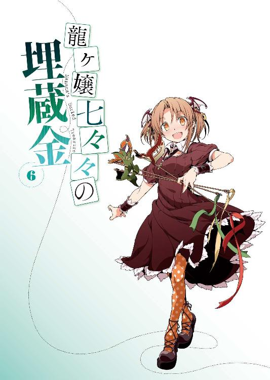
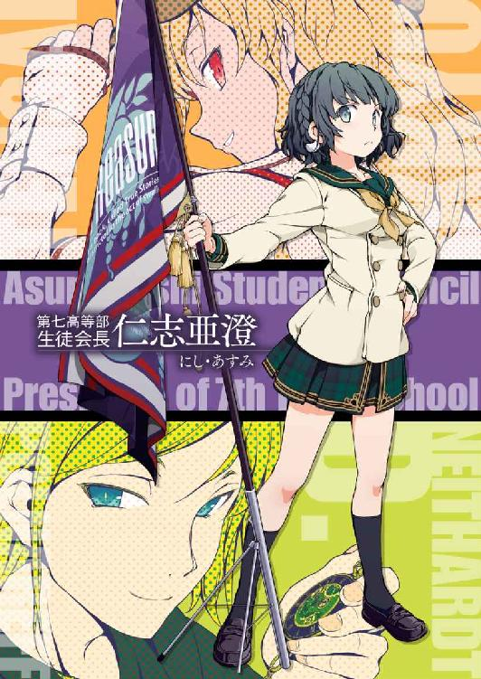
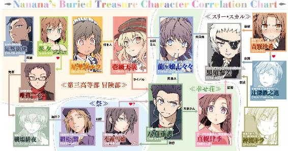
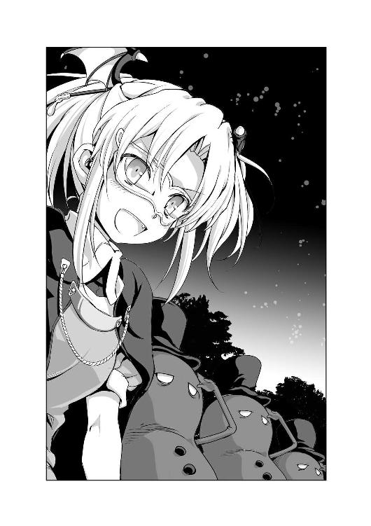
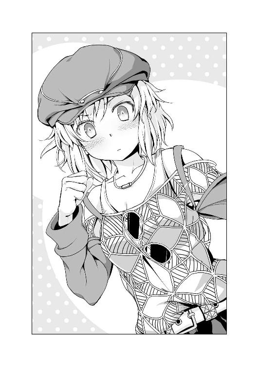
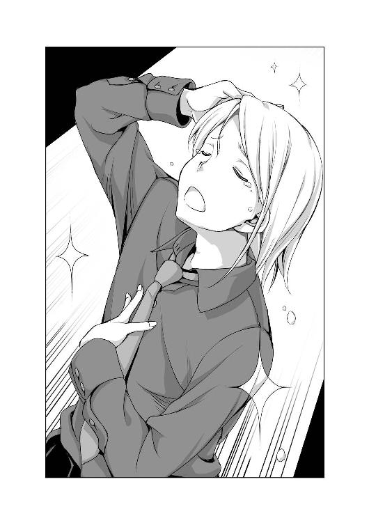
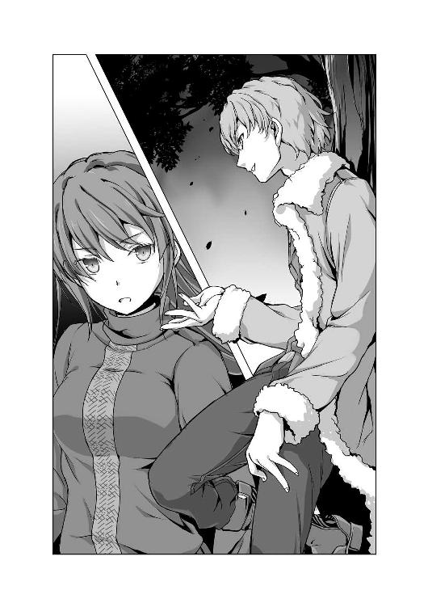
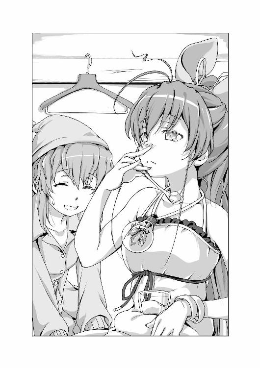
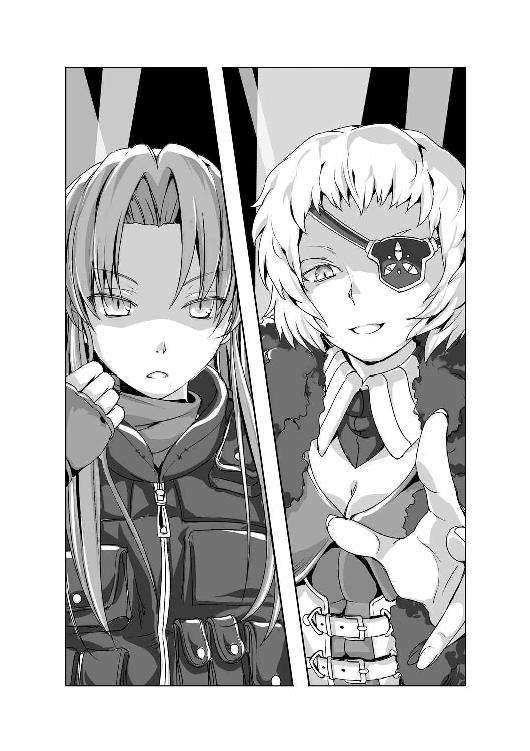
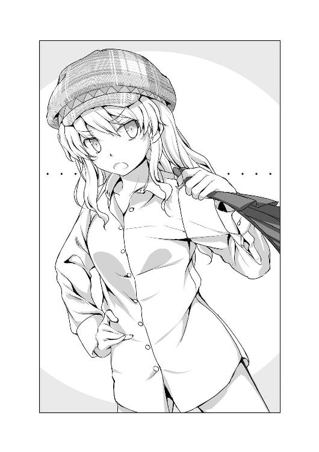

| 龍ヶ嬢七々々の埋蔵金 06 | |
| 鳳乃一真 | |
| KADOKAWA / エンターブレイン (2014) | |



本作品の全部または一部を無断で複製、転載、配信、送信したり、ホームページ上に転載することを禁止します。また、本作品の内容を無断で改変、改ざん等を行うことも禁止します。
本作品購入時にご承諾いただいた規約により、有償・無償にかかわらず本作品を第三者に譲渡することはできません。
本作品は本文縦組で制作されております。ごらんになるリーディングシステムにより、表示の差が認められることがあります。
《ゲーム》開催のお知らせ
我が名は【Ｍ】、今回のゲーム主催者である。
伝説の宝を追い求める挑戦者たちに告ぐ、我がゲームに参加せよ。
最後まで勝ち残った者には、先人の残した秘宝の中でも選りすぐりのモノを与える。
唯我部長がゆんちゃんこと吉野咲希ちゃんに刺されたことに端を発する、先日の七夕祭りまでの一連の出来事。
その間に俺たちは、七々々コレクションが隠された《遺跡》を密かに作り続けているというレプラコーンが開催する《ゲーム》の存在を知った。
勝者に与えられるのは、七々々コレクションの中でも厳選された一品《七々々の剣》。
その剣には、様々な能力が秘められているらしいのだが、その一つを、俺は偶然にも知っていた。
それは、切りつけた相手の過去を見ることのできる能力。
そこで俺はピンときた。つまり一〇年前に殺された人間に切りつければ、その人間が殺された瞬間を、映像として確認でき、犯人を知ることができるのではないか、と。
一〇年前に殺された人間に切りつけて過去を覗く、というのは言いえて妙な話だが、別に不可能ではない。
なぜなら、その殺された人間というのが、未だに俺の住んでいる幸せ荘二〇二号室にいらっしゃるからだ。
そう、地縛霊として。
彼女の名前は龍ヶ嬢七々々ちゃん。一〇年前に殺されて以来、殺されたその部屋に取り憑いていらっしゃる現役バリバリの地縛霊様である。部屋から一歩も出られないし、消えたりもできるし、寝る必要もない。まさに人外の存在。
まあ、プリンが食べられて、二四時間ネトゲやって、テレビでお笑い番組観ながらゲラゲラ笑っているなんて、およそ普通の地縛霊が取らないような行動をしまくっているので、「本当に地縛霊なんだろうか？」と常に疑問を抱かせられてはいるのだが......それは置いておく。
そんな七々々ちゃんを殺した犯人を突き止めること。
それこそが俺こと八真重護のやろうとしていることである。
しかし如何せんそれが非常に困難であるのも事実だ。
なにせそれは一〇年前の出来事。何より、当時ＧＲＥＡＴ７のトップという七重島最高の地位にいた最重要人物の殺人事件は、完璧に調べ尽くされている。事件に関する膨大な量の調書があるにもかかわらず、未だ犯人は特定されていない。これに関しては某お隣さん家の自称名探偵もサジを投げるほどだ。
こうなってくると、やはり七々々コレクションに頼るしかない。
七々々コレクション、かつて七々々ちゃんが所持していたという行方不明の遺産《龍ヶ嬢七々々の埋蔵金》の一部であり、生前の七々々ちゃんが、世界中のいたるところからカッパらってきた秘宝の数々。
それらには例外なく特殊な能力が備わっており、全てが揃えば叶えられない願いなどない、と言われるほどのモノたちだ。
それを手に入れるために、七々々コレクション集めを目的としている冒険部に入部した俺は、先輩たちと共に《遺跡》に挑み、奔走してきた。
そしてついに、自らの目的を叶える七々々コレクションの存在に辿り着いた。
なんとしても《ゲーム》に優勝し、《七々々の剣》を手に入れ、そして必ず七々々ちゃんを殺した犯人を見つけてみせる。１
――《ゲーム》開始、八時間前。
「いよいよ今夜だね」
待ちに待ったと言わんばかりに、唯我一心部長が、感情のこもった一言を呟く。
場所は、第三高等部にある冒険部の部室。
憂鬱だった期末テストの返却も全て終わり、堂々と夏休みを過ごせる成果を上げることができてほっとしたのが、つい先ほど。気分的には、「レッツパーリー」と街に繰り出し、皆で騒ぎ明かしたいところではあるが、生憎これから学校の期末テストなんかよりも重要なイベントあるので、気を抜くわけにはいかない。
そんな訳で、放課後の部室に、俺たち三人は集まっていた。
先日、無事退院した、冒険部部長・唯我一心。
いつも通りの不敵な笑みを浮かべている、自称名探偵・壱級天災。
そしていつになく気合いの入っている俺こと八真重護である。
本来ならばこの面子の他にも、部長ＬＯＶＥの暴力副部長と火を噴く忍者先輩と女装付き人がいてもおかしくはないのだが、今日はこの三人だけ。
なぜなら、今夜開催される《ゲーム》の参加資格を有しているのが、この場にいる俺たち三人だけだからだ。
テーブルを囲むようにして座る俺たち三人の視線の先にあるのは、テーブルの中心に置かれた一枚の紙。それはネットのホームページをプリントアウトしたモノであり、今夜行われる《ゲーム》の詳細が記載されている。
・集合場所
第一〇街・西星十字広場
・参加条件
参加者は所持する七々々コレクションを必ず一つ持ってくること（ただし、二つ以上持ってくることを固く禁ずる。判明した時点で即失格）。
・《ゲーム》の内容
最終的な勝者を決めるためにいくつかのステージを用意している。参加者は各ステージを生き残り、最後の一人になるまで戦ってもらう。
なお、各ステージでの勝負方法については、その都度説明する。
・ルールについて
１、《ゲーム》中、外部との連絡は一切禁止（ケイタイ等はこちらで預からせてもらう）。
２、《ゲーム》開催中の他参加者への暴力およびそれに準ずる行為は、これを固く禁ずる。ただし、勝負において許容される範疇においてはその限りではない。
３、いついかなる場合においても、七々々コレクションの使用を認める。
４、《ゲーム》を円滑に進めるため、途中、主催者がルールの変更を行う場合がある。
５、ルール違反は即失格とする。
最後に、当方は《ゲーム》参加者の身の安全等は一切保証しないものである。加えて、いかなる結末を迎えたとしても、それを受け入れる覚悟のある者だけ参加してもらいたい。
主催者【Ｍ】より
およそひと月前に突然更新されたレプラコーンのホームページ。そこに先日の七夕祭りで入手したパスワードを入力した際に現れたのが、これらの情報だ。
開催日時に関しては、今夜日付の変わる瞬間、〇時ちょうど。
実際に《ゲーム》の詳細を知ってから開催までに数週間も空きがあり、「なんで早くやらないんだ」とモヤモヤしたこともあったが、よくよく考えれば期末テストもあったので、むしろ全てが終わったこのタイミングの開催はありがたかったのかもしれない。
まあ、そんな学生事情は置いておいて......
改めてそこに書かれた詳細について目を通す。
「なんだか色々と含みがありそうなルールだけど、やっぱり気になるのは七々々コレクションについてだよな」
腕を組みながら椅子に寄りかかる俺の言葉に、天災が「ふむ」と口元に手を当てる。
「参加条件として一つ持ってくることとあるが、二つ以上持ってくることを禁止されている。その上でルール３では『いついかなる場合においても、七々々コレクションの使用を認める』とある。つまり持ってくる七々々コレクションの能力が、そのまま《ゲーム》中におけるそのプレイヤーのアドバンテージになる、ということだな。......まあ、この問題について我々が特に悩む必要はないな」
「なにせ、何を持っていくか、なんて贅沢な選択をする余裕なんてないからな」
《ゲーム》の参加資格である、七々々コレクションの所持。現在、ウチの部活でそれが叶っているのは、俺たち三人だけ。
まずは天災が所有している《魔除けのお守り》こと《聖槍の欠片》。紐付きの小さな袋に入れられた金属片は、現在テーブルの端、天災の目の前に置かれている。サウスレッドモールの《遺跡》で手に入れたもので、その能力は『魔から守ってくれる』というもの。......まあつまりは、使用用途がさっぱり分からない、まったくなんの役にも立たない一品であるということだ。故に手に入れた直後も、冒険部内で特にイザコザが起きることもなくあっさりと天災が所有することになったし、己の力以外信じないと言わんばかりの名探偵も「これならば」と持っているモノでもある。
「しかし意外だったよ、まさか八真くんが七々々コレクションを持っていたなんて」
唯我部長が目を向けるのは、俺の前に置かれた手のひらサイズの蒼い宝石。
それはかつて、俺が某幼馴染みのお姉さんたちから横取りして以来、我が家のベッドの下にこっそりと隠し持っていた《キラキラ噓発見器》こと《ユーグトスの隻眼》である。その能力は『その宝石を透かして見た相手の噓を見破ることができる』というもの。ただし、邪なことに使うと目が潰れてしまうので、なかなか使いどころが難しい一品。
「いやー、たまたま近所の公園で拾ったんですけど、それが偶然七々々コレクションだったみたいなんですよ」
と、笑顔で噓を吐く俺に、「そうなんだ、それはラッキーだったね」と爽やか笑顔で返してくる唯我部長。うん、絶対に信じてないだろうな。
そんな唯我部長の目の前に置かれているのは、一見すればお洒落なフレームの眼鏡。《モノマネ眼鏡》こと《ギルバート・バラムの複写魔眼鏡》。その能力は、『眼鏡のレンズを通して見ていた相手の能力を一定時間だけ丸々コピーする』というもの。コピーできる時間は、相手を眼鏡越しに見ていた時間分だけだが、その間であれば、相手が体得している武術や知識、果ては思考まで読むことができる。初代冒険部解散の際に、当時の部員たちで分けあった一品らしい。
「というか、唯我部長って、眼鏡かけてなくても見えるんですか？」
「ああ、コンタクトレンズと併用しているからね」
そう笑う、眼鏡なしの唯我部長。
おのれ、このイケメン部長め。七々々コレクションすらお洒落の一部ってか！ ......なんて、嫉妬の怒りはとりあえず置いておくとして、改めてこうして各自の七々々コレクションを見比べると、この中ではやはり唯我部長の《モノマネ眼鏡》が一番使えそうだ。次いで俺の《キラキラ噓発見器》だが、相手の噓が分かるだけだし、何よりリスクが怖い。天災に関しては論外だ。能力なんてあってないようなものだから、ただの《ゲーム》への参加資格でしかない。
各自の七々々コレクションレビューはこのくらいにして、再び用紙に目を向ける。
「目を通した限りじゃ、暴力行為なんかが禁止されているってことだから、内容としては頭を使うゲームってことですかね？」
「そうとも限らないよ。ルール２の後ろに、『ただし、勝負において許容される範疇においてはその限りではない』とあるからね。そういうケースも十分考えられる」
「最後の一言もスパイスが効いているな。『身の安全等は一切保証しない』。まあ、これに関してはこれまで私たちが挑戦してきた《遺跡》となんら条件は変わらんがな」
天災の言うとおり、これまでクリアしてきた多種多様な《遺跡》の中には失敗＝死亡なんてモノはいくらでもあった。
「唯我部長は、具体的な《ゲーム》の内容についてご存じないんですよね？」
「残念ながらね。二年前に開催された前回の《ゲーム》には、初代冒険部から何人も参加していたけど、僕は参加できなかった。だけど皆無事に帰ってきたし、今生先輩に限っては『とっても面白かった』と言っていたよ。まあ、その面白いが果たして僕たちと同じ認識であるかは些か疑問だけどね」
「詳しい内容は教えてくれなかったんですか？」
「冗談交じりにはぐらかされてしまってね。他の参加した先輩たちも、今生先輩の冗談に乗っかって、誰も本当のことは教えてくれなかったよ」
「ふむ、つまり実際に参加してみなければ何も分からない、ということだな、唯我殿」
「そういうことだね」
まあ単純に考えれば、七々々コレクションを使った参加者同士の知恵比べ的なゲームみたいなことだろう。これまで挑戦してきた《遺跡》とは違い、別に負けたからといって命を取られる訳でもないだろうし、参加すること自体についてそんなに危惧する必要もなさそうだ。
と、一通りの確認が済んだところで、俺は唯我部長に改めて尋ねた。
「それで唯我部長。こうやって俺と天災を呼び出したのはどういう理由なんですか？」
今日、俺と天災がこうして冒険部の部室にやって来たのは、唯我部長からの招集を受けたからだ。
「おかしなことを言うね、八真くん。これまでの《遺跡》のように、作戦会議をと思っただけだよ。状況の確認、情報・意見の交換。こうやって互いの七々々コレクションを見せ合うのもね」
「なるほど。ですけど、それだけって訳でもないですよね」
俺の表情を見て、唯我部長がクスクスと笑う。
「そんなに睨まないでほしいな。八真くんに睨まれたら、すくみ上がってしまう」
「まったくもって、その通りだな」
さらりと合いの手を入れるんじゃない、この名探偵が。
「まあ、冗談はさておき。《ゲーム》を前に、意思確認をしておきたいと思ってね」
「というと？」
「簡単に言ってしまえば、《ゲーム》の勝者はたった一人しかいない」
「ふむ、つまり唯我殿は、我々にこう尋ねたい訳だ。『私たちが冒険部として参加するか、それとも個人として参加するのか』と」
「有り体に言ってしまえばね。前回行われた《ゲーム》の勝者は、我が冒険部の初代部長・今生霞先輩だった。その今生先輩も『あの勝利は私一人で勝ち取ったモノではない。皆で協力して勝ち取った勝利だった』と明言していた。つまり、冒険部一丸となっての勝利だった、ということだろう。実際、いくつかのステージでふるいにかけられていくというのであれば、複数人でチームを組んで参加するメリットは大きいだろうしね」
すぐに思い浮かんだのは、先日、戦った第七高等部生徒会メンバー。生徒会長を務める仁志亜澄さん、《攻略屋》の異名を持つ天城大聖といった錚々たる顔ぶれに、多くの七々々コレクションを所持しているコミュニティである。他にも俺たちが知らないだけで、そう言った連中は沢山出てくるだろう。
確かに組織として《ゲーム》に参加するメリットは大きい。
という訳で、
「個人で参加ですね」「個人で参加だな」
俺と天災の声が見事にハモる。
「理由を訊いてもいいかな？」
俺たちの答えを聞いても、爽やか笑顔を浮かべる唯我部長はまったく動じた様子はない。
「優勝賞品が欲しいからです。まあ、俺を優勝させてくれて七々々コレクションをくれるって言うのなら冒険部として参加してもいいですけど？」
案の定、そんな上から目線の提案には、微笑んだまま何も答えない唯我部長。
俺は続ける。
「俺としては状況に応じて共闘する意思はありますけど、本当の意味で手を組むつもりはありません。せいぜいお互いを利用し合いましょう」
「......随分と辛辣な言葉だね」
「だって、それが俺たち冒険部じゃないですか」
俺は常々思っていたことを堂々と宣言した。
唯我部長は何も答えない。否定も肯定もせず、ただジッとこちらを見ている。
「くっくっくっ、にゃーはっはっはっ」
そんな睨み合う俺たちをよそに、突然嗤いだしたのは天災だった。
「えっ、何？」
「今の台詞は実にいいではないか、重護。非常に私好みだ」
「えっ、なんで褒められてんの、俺？」
「騙し合いの世界を生き抜いてきたと言わんばかりの実に心が荒みきった悪人発言。そのすでに何人か殺しているような極悪面と相まって、最高に痺れる一言だったぞ」
「うん、貶されているよね。間違いなく貶されているよね、俺？」
「おいおい、私は素直に賞賛しているのだぞ、好敵手。これからもその調子でどんどん悪人らしく振舞ってもらいたいものだ」
にまにましている名探偵は、相変わらず俺を悪人に貶めるというスタンスを崩さない。
「天災くんも、八真くんと同じ考えなのかな？」
唯我部長に尋ねられ、天災は「まさか」と鼻で笑う。
「私は重護ほど極悪な考えではない。ただ意味のないことをする趣味はないだけだ」
「意味がないこと？」
「今回、唯我殿と手を組んでも、私が得をすることなど一つもないという意味だ」
「いや、お前の方が言っていることがキツイだろう」
思っていたとしてもよく本人の前でそんなことが言えるもんだ。しかし、そこまで言われたのにもかかわらず、唯我部長はやはりまったく動じた様子を見せず、爽やか笑顔を浮かべ続けている。
「二人の考えはよく分かった。参考にさせてもらうよ」
「というか、天災。どう思った」
「何がだ？」
「あの唯我部長の余裕の笑顔だよ」
天災と並んで家路につきながら、先ほどの部室でのやり取りを思い出す。
「ある程度は予想していたのだろう、私たちの答えを」
冒険部として参加しない、と言った俺たちの答えを聞いても崩れなかったあの爽やか笑顔は、やっぱりそういうことだよな。
「......というか、それってつまり、初代冒険部を引き合いに出したあの交渉自体、端から俺たちを利用する気満々だったってことにならないか？」
俺の疑惑に、天災が「ふっ」と笑う。
「あっさり手を引いたところを見ると間違いないだろう。唯我殿らしいではないか」
「なんというか、完全に裏切り前提が板についてきたよな、あの部長。まあいつものことだけどさ」
「そう言うわりには、今回は随分と唯我殿に嚙みついたではないか」
「そうか？」
「今まで散々裏切られても、そこまで気にした様子もなかった男が、面と向かって『せいぜいお互いを利用し合いましょう』とは、どういう了見だ？ ......と、聞くまでもないな。吉野咲希のことか」
「さてな」
なんてはぐらかしたが、正直その通りだった。
先日、ゆんちゃんこと吉野咲希ちゃんが唯我部長を刺して逃亡した。
突然の出来事に、状況がまったく理解できなかった。
しかも不可解なのは刺されたはずの唯我部長が、ゆんちゃんの犯行をもみ消そうとしていたということだ。その甲斐あってか、色々と調査をしていた警察もある時を境にあっさりと手を引き、あの一件は、唯我部長の不注意による大ケガ、ということで決着がついてしまった。
何より訳が分からないのが、その唯我部長を刺したゆんちゃんこそが、今回のレプラコーン主催の《ゲーム》を取り仕切る主催者【Ｍ】であるということだ。あの一件の裏で行われた大規模な隠蔽工作、何より自らを主催者と名乗る以上、ゆんちゃんとレプラコーン、両者の関係は、もはや疑いようがないのかもしれない。
しかしその一方で、それまでのゆんちゃんを知る俺としては、ゆんちゃんがレプラコーンと繋がりがあったとはどうしても思えないのだ。
なんの変哲もない日常が、ある時点を境に、劇的に変わってしまった。
それが一番近い表現だと思う。
ある時点とはもちろん、唯我部長が刺されたあの事件からだ。
いったいあの時、何があったのか？
俺はその答えを未だに知らない。だけど、唯我部長が何かを知っていること、そしてそれを隠しているということだけは分かる。
これまで唯我部長に散々裏切られてきた。だけど別にどうとも思わなかった。騙されることが悪い、という家訓を叩き込まれて育ってきたこともあったし、そこまでする唯我部長の想いをぶつけられたこともあったし、《遺跡》を探して七々々コレクションを手に入れるために頑張ってきた姿も見てきたからだ。
まあ、そういう人なんだと割り切ってしまえば、それはそれで問題なく付き合える。
だからまあ、好きか嫌いかで言えば、嫌いではない。裏切り癖があり、イケメンなのが腹立つけど、とっても真っ直ぐに頑張っている部長くらいに思っている。
そんな唯我部長のことだ。今回だって唯我部長に非はないのかもしれない。
しかし、ゆんちゃんの件、そして何より、七夕祭りを境に鉄くんが学校に来なくなった原因を、どうしても唯我部長と切り離せない自分がいた。
「にぱっ」と笑顔を浮かべる後輩の女の子とムスッとしながらその隣に立っている友人の姿がなかったこの数週間に、イラつき憤りすら覚える自分がいた。
ずっと消えなかったモヤモヤした気持ち。でも、それも今夜で決着がつくはずだ。
主催者【Ｍ】として姿を見せるゆんちゃんに、あの事件の真相を聞けばいい。ゆんちゃんがいる以上、鉄くんも必ずやって来るに違いない。そんな鉄くんに文句を言って学校に来るように説得すればいい。
そしてできるのなら、再び同じ学校に通う友人として共に過ごしたい。
じーっ
そこでなんとなく視線を感じた。隣を見ると名探偵が不機嫌そうにこちらを見ていた。
「なんだよ、天災？」
「重護、貴様は私のライバルだ。そして名探偵のライバルとは、極悪非道な悪人でなければならない」
「そうね、もう聞き飽きた」
「貴様はただ己の欲望を満たすためだけに非道を繰り返していればいいのだ」
「だから何が言いたいんだよ？」
「あまり、カッチョイイことを考えるな。そういうのは名探偵である私の仕事だ」
ムスッとした表情を浮かべた、どこかご立腹な名探偵。
というか頼むからピンポイントに人の心を読むのやめてよね、マジで。
２
――《ゲーム》開始、六時間前。
場所は幸せ荘二〇二号室。
帰宅後、シャワーを浴びてからの夕食。本日の夕食のメニューはコンビニ弁当と、実に味気ないチョイスとなっている。
なぜなら夕食の準備をするのが非常に面倒だったからだ。
ここに引っ越してきた時は、自炊もしていたのだが、最近はずっとお隣さん家の女装付き人が料理を作ってくれていたので、自分で包丁を握ることもなくなっていた。しかし今日はこの後に《ゲーム》があるということもあり、名探偵が家に来ないので、必然的に女装付き人もやって来ない。
チンした、可もなく不可もないコンビニ弁当を食べながら、なぜかふと哀愁を感じてしまう。
ダルクが作る温かい料理。フリフリエプロンを着けて、楽しそうに夕食の支度をしている後ろ姿とか、「おまたせしました」と笑顔で料理を並べてくれる姿とか、「おいしいですか？」と心配そうにこちらを見てくる仕草とか、「おいしい」と答えた時の嬉しそうな笑顔とか。いつもあるモノがそこにないことに、どこか空しさを感じてしまう。
そして、当たり前だったことが当たり前じゃなくなったと理解した瞬間、俺はようやく気付いた。
ああそうか。俺、ダルクのことが......
「......って、違うから！ 何おかしなこと考えちゃってんの俺！ つーか、普通に隣の部屋にいるし！ たぶん明日とか明後日も来るし！ というか、そういう一生に一度あるかないかの涙を誘う後悔は、未来の可愛い彼女のために取っておこうぜ、俺！」
「なに、イカれた世迷いごとを垂れ流してんの、重護？」
あっ、なんか我が家の地縛霊様が冷たい瞳でこっちを見ている。
「えーっと、なんというか、青少年の思春期にありがちな発作が出たというか......」
ていうか、この色の発作が健全な青少年に現れるのはマズイと思うんだが。
「ふーん、だったら病院行ったら、脳外科。どうせだから全部交換してもらってきなよ」
「そしたら俺が俺じゃなくなっちゃうって！」
「じゃあ、全部メカにしてもらいなよ、メカ重護。プリン買ってきてくれる機能がついていれば私はそれでいいから」
「俺のアイデンティティはどこへ行った！」
俺に求められているのが、プリンパシリだけというのに地味にショックを受ける。
「でも、どこか調子が悪いんだったら、本当に病院に行った方がいいよ。人間健康が一番だからね」
「......うん、改めて思うと、地縛霊に健康を心配してもらうのも変な感じだよね」
「もう、重護はバカだなぁ～。死んだ人間が言うから説得力があるんじゃん★」
「うわっ、そのにっこり笑顔からの自虐ネタ、凄ぇ！ 相変わらずのポジティブ思考な地縛霊様ですこと！」
「肉体が死んでいる分、魂くらいは生き生きしてなきゃ、やってられませんから」
「いー加減にしなさい」とツッコんでこのボケを終わらせる。
まあ、何度も言うのもなんですが、こんなお茶目な彼女こそが龍ヶ嬢七々々ちゃん。一〇年前にこの部屋で殺された地縛霊である。
という訳で本日は、プリンを食べる七々々ちゃんと二人きりでの夕食である。
「それにしても、今回はなんだか随分と気合が入っているね」
なんで七々々ちゃんがそんなことを言うのかと言えば、たぶん俺が食べているのが『ビッグカツ弁当』だからだと思う。
ええ、そうですよ。柄にもなくゲンなんてモノを担いでみましたが、何か？
「まあね、なんとしても優勝賞品の《七々々の剣》が欲しいからね」
「ふーん、でもその気合いの入り方は間違ってないと思うよ。なにせあの剣はかなり使えるから。私の一押しだよ」
はい、七々々ちゃんからにっこり可愛らしい一押しスマイルいただきました。
「へぇ、七々々ちゃんがそんな風に言うなんて驚きだな。そんなにあの七々々コレクションに思い入れがあるの？」
「そりゃ、あるよ。なにせ私が世界中を飛び回っている間、四六時中ずっと使っていた愛用の剣ですから。私なりに色々カスタマイズもしているしね。はっきり言って最強ですぜ、旦那」
顎に手を当て「にやり」と笑う七々々ちゃん。というか、べた褒めだな。
「それで具体的にどんな風に最強なの？」
「教えてあげなーい」
「ですよねぇ」
出ました、絶対不動の七々々ルール。たとえ天地がひっくり返っても曲げるつもりはない、七々々ちゃんが自らに課した鉄の掟。
「ちゃんと重護が《ゲーム》に優勝して持ち帰ってきたら教えてあげるよ。まあもっとも、もし優勝できたらの話だけどね」
そう言って、なぜか悪者チックに「ふっふっふっ」と笑う七々々ちゃん。
その邪悪な笑みに一抹の不安を覚えたものの、そそくさと大きなカツを口の中にかき込み、深夜に備えて軽い仮眠を取ることにする。
時間になったら起こしてくれるように七々々ちゃんにお願いしてから、ベッドに横になって目を閉じる。そのベッドに寄りかかるようにしてクッションに座った七々々ちゃんがお笑い番組を見て「あはは」と笑っているけど、もうあまり気にならない。
この騒がしさも、今じゃ俺の日常の一部。朝でも夕方でも深夜でも二四時間好き放題している七々々ちゃんがいるのが当たり前。五月蠅いとも邪魔だとも思わない。
そこで実感する。
こうして部屋に七々々ちゃんがいる風景は、もう俺の中では当たり前なんだな、と。
「重護、寝ちゃった？」
そう言って、テレビの音がちょっとだけ小さくなる。そして七々々ちゃんの笑い声も「あはは」から「くすくすくす」に音量ダウン。
そんなに気を遣わなくてもいいのに、と思いながら、そんな些細な七々々ちゃんの気遣いが、実は結構嬉しかったりする。
そんな温かな優しさと七々々ちゃんの楽しそうな笑い声を子守り唄に、俺の意識はまどろみの中へと落ちていった。
「重護、起きる時間だよ」
グシャリ！
「ぐほはっ！」
七々々ちゃんのジャンピングエルボーで意識が覚醒。右わき腹の激痛と呼吸困難という、実にパンチの利いた目覚めである。
時間ピッタリ、正確さと過激なスキンシップが売りらしい七々々ちゃんのモーニングコール。できれば、優しい奥様風の起こし方がよかったなぁ、モジモジ。
なんてことを思いつつ。七々々ちゃんにお礼を言って、そそくさと身支度を整える。
「おっと、これを忘れちゃいけないよな」
今回の参加資格であり、俺的に思い出の品である七々々コレクション《ユーグトスの隻眼》を掲げ、覗き込む。相変わらず見事な蒼い宝石で、透過率も高く、完全に向こうが透けて見える。
そこでふと思った。
「ねえ、七々々ちゃん」
「なに、重護？」
「七々々ちゃんは......やっぱりなんでもないや」
そのまま他の荷物と共に《ユーグトスの隻眼》もショルダーバッグの中に。
何か言おうとして止めた俺を見ながら「？」を浮かべている、七々々ちゃん。そんな七々々ちゃんに、俺は一瞬、《ユーグトスの隻眼》を通して「七々々ちゃんは俺が《ゲーム》で優勝できると思う？」と訊こうとした。
だけどやっぱり止めた。別に目が潰れるのが怖かった訳じゃない。ただどっちでもいいと思ったからだ。俺が《ゲーム》に勝ちたいと思うこの気持ちは、誰かの後押しによって支えられるべきものでも、誰かからの保証を受けて安心するべきものでもない。
それは誰がなんと言おうと関係なく、俺自身で摑み取りたいと望む、俺自身の願いだからだ。
「んじゃ、ちょっと優勝してきますんで」
「うん、頑張ってね。持って帰ってきたら、色々とあの剣の使い方教えてあげるから。あっ、あとついでに帰りにプリン買ってきてね」
ショルダーバッグを担ぎ立ち上がった俺に、七々々ちゃんはいつも通りのお見送り。
そう笑顔で手を振る七々々ちゃんは、どうして俺が《七々々の剣》に執着しているのかという理由には気付いていない様子。
これはまた先日のようにサプライズで七々々ちゃんを驚かせることができるかもしれない。七夕祭りの時のように、とっても嬉しそうな七々々ちゃんの笑顔がまた見られるかもしれないと思うと、俄然やる気が出てくる。
「いってきます」
「はい、いってらっしゃい」
七々々ちゃんに見送られ、二〇二号室を出ると、ちょうどお隣さん家の二〇三号室の扉も開いた。
「あっ、重護くん。こんばんは」
お隣さん家の女装付き人・星埜ダルクが、こちらに気づき笑顔で手を振ってくる。そんなダルクに見送られ出てきたのは、名探偵・壱級天災。
「では行くか、重護」
３
――《ゲーム》開始、二時間前。
幸せ荘を出た俺と天災は、路面電車を乗り継ぎ、《ゲーム》参加者の集合場所である第一〇街・西星十字広場へと向かう。
終電間近の電車にはほとんど乗客がおらず、俺たちのいる車両も貸し切り状態である。
七重島を走る路面電車の終電は早い。《学生特区》というだけあって、だいたい夜の一〇時台には全ての運行は終わってしまう。
そんな路面電車に揺られながら、隣に座る名探偵に尋ねる。
「それにしても、まさか天災が《ゲーム》に参加するとは正直思わなかったよ」
俺は七々々ちゃんの犯人を捜すために参加するし、唯我部長もいつも通り七々々コレクション目当てでの参加だろう。なんにしても目的は、七々々コレクション。
しかし俺の隣に座る名探偵は、そんな七々々コレクションにまったく食指が反応しない非常に奇特な人間なのである。今更ながらなんでそんなヤツが冒険部にいるのかも疑問なのだが。
故に天災が《ゲーム》に参加する意図がまったく見えてこない。
「まあ確かに、私はあまり優勝賞品に興味はないな」
不敵に笑う名探偵。そうなると余計に気になる。
「何を企んでいるんだ、名探偵？」
名探偵と自称するくせに、いつも誰よりも自己中な思惑によって動いている天災が不敵に笑う。
「なあ重護、私たちは出会ってどれくらいになる？」
突然、天災が言いだしたことに思わず眉を顰める。
「？ なんだよ、急に？」
「いいから、答えてみろ。私と貴様は、どれくらいの付き合いだ？」
イマイチ質問の意図が分からないが、とりあえず記憶を手繰り寄せる。
「まあ......だいたい三カ月くらいじゃねぇの？」
「そうだな。そして私たちはそれなりに交流を深めてきた」
「まあな」
「だからそろそろ、私たちも次のステップに進んでもいいと思ってな」
思わずドキリとする。そしてなんとなーく、これまでのことが頭の中を駆け巡る。
具体的には、《遺跡》に取り残されて宝箱の上で抱き合っていたこととか、黒髪ツインテール姿の天災にドキドキしたこととか、ふて腐れていた黒猫パジャマを着た天災にコーヒー牛乳を飲ませてあげたこととか、お姫様抱っこして急坂を滑り下りたこととか。
チラリと隣を見れば、心なしか俯いている天災の頰が赤くなっているような気がする。というか待て。なんだ、このお互い意識し合っている二人みたいなノリは？ えっ、ということはこれまで以上の何かしらのことが俺たちの間で起こってしまうっていう......
「......えっと、次の、というと？」
「次と言ったらもちろん死闘に決まっているではないか！」
顔を上げた名探偵の目はギラギラと輝いていた。興奮し過ぎて頰に赤みが差している天災の言葉に、思わず目が点になる。
「......死闘？」
「命を賭けた極限バトル！ 相手の裏をかき合う緻密な頭脳戦などなど！ 好敵手である重護との最初の山場ということだ！ ......ん？ どうした重護？ なぜ下を向いてプルプルと震えている？」
どうせそんなことだろうと思ったよ、コンチクショウ！ もうバカ！ 薄々気付いてたんだろ、俺の心！ だけど、現実ばかりを見て、夢を見ることを忘れた大人になんてなりたくなかったんだよ、俺は！
なんて青春風に叫ぶ、心の中で！
「つまりはあれか？ お前はただ、俺と勝負したいがために《ゲーム》に参加すると？」
「それ以外に何がある？ 名探偵vs目つきの悪い極悪非道の怪人、まさに心震えるシチュエーションではないか！」
「眩しいくらいに目を輝かせるな、『むふーっ』と鼻息荒くすんな、嬉しそうに手をブンブンすんな、そのとってもうきうきしている姿が無性に腹立つんだよ！」
「というわけで重護よ、覚悟するがよい！ 貴様の悪事もこれまでだ！」
「うるせぇよ！」
まったく、そういうことかよ。だけど確かに前々からそんなこと言っていたもんな、コイツ。
「まあ、あえて不満を漏らすとすれば、重護が凶悪事件を起こした訳ではないし、怪盗予告をした訳でもなければ、要人暗殺からの世界情勢混乱を狙った一大テロリズムを企てた訳ではない、というくらいだな」
「お前は俺にどれほどのことを期待していたんだ？ つーか、そんなことしねぇよ」
「だがしかし、私に偽物の七々々コレクションを摑ませて、本物は自分が持っていたなんてことをするくらいだから、重護には十分悪の素質はあると思うのだがな？」
天災のニヤリ笑いに、思わず「うぐっ」と呻く。
俺が持っている《ユーグトスの隻眼》、元を正せば雪姫姉さんたちがＧＲＥＡＴ７のトップ一鶴春秋の邸宅から盗んできたのを、俺が横取りしたものだ。それを追ってウチに押しかけてきたのが、この名探偵。そしてそんな名探偵に偽物を握らせて追い返したのが何を隠そう俺である。
結局その事実に今日まで気付いていなかった天災は、放課後の部室で俺がポケットから《ユーグトスの隻眼》を取り出した瞬間、すぐに全ての事情を察したらしく、「にゃーはっはっはっ」と大笑いし始めた。
「さすが重護、やはり貴様は私の好敵手にふさわしいヤツだ」
騙したことに対して、天災は一ミリだって怒らなかった。むしろ自分の裏をかいてそんなことをやってのけた俺を絶賛する始末。変な意味で余計に気に入られてしまった感が否めない。
「そんな重護と雌雄を決するのに、これほど適した舞台もないだろう。今回の《ゲーム》は、私と重護の戦いの歴史の、まさに序章となるに違いない！」
わざわざいったん立ち上がってまでビシッとこちらを指差してくる名探偵は、いちいちポーズが決まっている。おそらく毎晩鏡の前で練習していたに違いない。
「随分と壮大なことを企てていやがるな、お前は。これが序章っていうんなら俺たちの付き合いは一生もんだな」
「ふっ、まあ、そういう......」
適当に軽口を叩いたら、急に天災が固まった。と思ったら一気に顔が真っ赤になった。そして慌てて口を開く。
「......か、勘違いするなよ、重護！ 一生と言っても、別にそういうことじゃないからな！ 好敵手としての一生の付き合いだからな！ 特に深い意味とかないからな！」
そう言われて、俺もドキリとした。
「ん、んなこと分かってんだよ！ な、なに勘違いしてんだよ！ 別にそう言う意味で言ったわけじゃねし！」
「言い淀んでいるということは、想像しているではないか！ その......もにょもにょ......だと......」
「し、してねぇよ、そんな変な想像とか！」
そのまま隣りあって座る俺たちは、そっぽも向いたまましばし沈黙。
「その......だから、さっさと一人前の悪人としてこの名探偵・壱級天災のライバルとして恥ずかしくない悪党になるのだぞ」
「恥ずかしそうに俯いて、モジモジしながら言う台詞か、それは？」
「そうしないと......一生の付き合いができないではないか」
なんか一気に顔が熱くなる。
「まあ、その......努力する」
いやいや努力しないし、俺は真っ当な人間だし。
慌てて言い換えようとする。
「そうか、期待しているぞ、重護」
しかし、そう嬉しそうにはにかむ天災の笑顔を見てしまったせいか、言葉が喉から出てこなくなってしまった。
「まあその、......あんまり期待すんなよ」
いやいやそこはしっかりと拒否れよ、俺！
「うむ、期待しているぞ」
この上なく嬉しそうに笑う名探偵に、妙な期待をされてしまうのであった。
閑話休題。
まあなんにしても、天災の出場はあまり歓迎できない事態である。これでは七々々ちゃんを殺した犯人を捜すための七々々コレクションが手に入り辛くなってしまう。
そんな不満にため息を吐いたところで、天災が「ふっ」と笑う。
「安心しろ、重護。もし私が優勝したら、《七々々の剣》は貴様にくれてやる」
「えっ、本当に？ ていうか、人の心を読むな」
「もちろん、貴様が地べたに這いつくばって『み、見事だ、名探偵よ。しかし油断せんことだ。今後、第二、第三の俺が貴様の前に現れて......』」
「うん、つまり敗北宣言して、お願いしたらくれるっていうのね」
「まあそういうことだ。ああ、だが、七々々殿を殺した犯人を見つけた後は、きちんと私のライバルとして地獄から復活するのだぞ。そうだな、顔に傷痕を刻んで『地獄の底から復活してきた』というのもカッチョイイからアリだな。よし、では敗北した重護の耳元から頰にかけて傷痕を刻み込むとしよう」
「何気に怖いこと言ってんじゃねぇよ。つーか、そもそも全部お前が勝つこと前提なのが本当に腹立つんだよ」
「つまり重護は『私を倒せるかな？』ということが言いたい訳だな？ ふむ、まさにやられ役の定番の台詞だな」
「言ってろ、このアホ名探偵。だいたい、天災が優勝したなら、お前が七々々ちゃんを殺した犯人を見つければいいだろ？」
そう言ったら、「ふん」と思いっきり鼻で笑われた。
「もし仮に私が七々々殿を殺した犯人を見つけることになったとしても、私は七々々コレクションを使うつもりはない」
どこまでも七々々コレクションを使うことに否定的なヤツだな、コイツ。
「だったらどうするんだよ。七々々ちゃんの事件、天災にも解けなかったんだろ？」
この名探偵は、俺に会う以前に、七々々ちゃんの事件についての調書を読み漁ったことがあるらしい。結果、一週間で諦めたと言っていたはずだ。
「確かに今の私ではあの事件の解決は無理だった。悔しいが、その事実は受け止めている。だがいつか必ず、自らの力であの事件を解いてみせる、名探偵として更なる高みに立ったこの私の力でな」
いつも不遜な態度取るくせに、こういうところだけは律儀というか殊勝なんだよな。
「だけどまあ、天災がそうなるまでに俺が事件を解決できなかった時は、名探偵の登場ってことになるんだろうな」
「それが嫌なら七々々コレクションを使ってさっさと犯人を見つけることだな」
「へぇへぇ、頑張ります」
チラリと隣に座る名探偵を見ながら改めて思う。
回りの迷惑を顧みず、自分勝手に振舞い、自らを名探偵と名乗る、変なヤツ。しかも、なまじ頭のキレが半端ないだけに性質が悪い。だがそれでいて、自分を高めることに直向きで、決して自分の志を曲げない強い意思を持っている。
まったく、本当に凄いヤツだよ。
「こ、こらっ！ 人の頭を自然な動作でなでなでするんじゃない！」
憤慨する名探偵に「悪い」と笑って謝りながら、素直に思う。
俺は天災に優勝してもらって《七々々の剣》を貰おうなんて端から思ってないし、絶対に天災を負かすつもりでいる。
しかし、そういう気概を持っていたとしても、この事実だけは揺るがない。
名探偵・壱級天災。今回の《ゲーム》において、コイツが最も厄介な相手になるであろうということは。
４
――開始一五分前。
路面電車を乗り継ぎ、終電で第一〇街に到着。駅前にあったコンビニで時間を潰しつつ、集合時間を見計らい、目的の場所へと足を向ける。
やって来た西正十字広場は、繁華街の中にあった。石畳が敷き詰められた広場には凝ったデザインの噴水があり、街中の憩いの場といった感じである。
と言っても、それは昼間ならば、の話だ。
所々に街灯があるので真っ暗という訳ではないが、それでも寝静まった建物に囲まれた広場には、不気味ささえ漂っている。普通だったら好き好んでくるような場所ではない。だが今夜に限り、そんな場所には、人の姿がチラホラと見受けられる。もちろん皆さん、夜中に街を徘徊する俗に言う不良と呼ばれる部類の人間ではないだろう。
今日この日、この時間にいるということは、ここにいる全員が七々々コレクション所有者であり、今夜の《ゲーム》の参加者であることは間違いない。
「ふむ、見知った顔もいるな」
隣の天災の言葉に、その視線の先に目を向ける。
目についた一団は、先日の七夕祭りでもやりあった第七高等部生徒会メンバー。生徒会長である仁志亜澄さんを始め、副会長であり、《攻略屋》の異名を持つ金髪不良の天城大聖。他にも岸谷雅彰さん、忌野操さん、さらに見知らぬ顔も二人。なんだか前髪が異様に長いお姉さん。さらにはアッシュブラウンの髪と瞳をした......ていうか、外国人じゃん、あの兄ちゃん！ というか、どこかで見たことあるような......気のせいかな？
そんな仁志さんたちのコミュニティは、大量の七々々コレクションを所有しているらしいので、俺たちとは違い、持ってくる七々々コレクションの選択は選り取り見取りだったに違いない。いったいどんな七々々コレクションを持ってきているのか想像もつかない。
「あちらにいるのは、お前の知り合いだな」
そう言われて、視線をズラすと、広場の隅に立っている雪姫姉さんを発見した。
不義雪姫、ウチの実家が代々やっている《祭》という義賊集団に属する一人であり、俺の幼馴染みのお姉さん、ひいては体術の師匠でもある。
どうやら向こうも俺に気付いたようだが、プイッとそっぽを向かれてしまった。雪姫姉さんのことである。大方、敵同士なのだから話すことはない、ということなのだろう。
そんな雪姫姉さんが持ってきていると思われる七々々コレクションには心当たりがある。《太陽神の楔》、相手を絶対拘束する光の鎖を操る黄金の楔。以前、俺があげたヤツである。まあ他に七々々コレクションを手に入れている可能性があるので断言はできない。でもそれならば相方である変装の達人がいてもおかしくはないと思うが、その姿は見当たらない。と言っても、変装されていたら分からないんだけれどもね。
その代わりに、雪姫姉さんの近くに嫌な人を見つけてしまった。
他の参加者と喋っているのは戦場緋夜。去年までウチの高校に通っていたＯＢ。何より唯我部長と同じく初代冒険部の一員であり、前冒険部・部長でもある。
思わず戦場さんの足元に目を向ける。すると案の定、見たことのある黒いブーツを履いている。《影泳ぎの濡れ長靴》、影の中を自由自在に泳ぐことのできるという、非常にやっかいな七々々コレクション。以前あれを使われかなり苦戦させられたのは、忘れたくても忘れられない。
「随分と早いね」
そう声をかけられ振り向く。相変わらずの爽やか笑顔で近づいてきたのは、放課後に部室で別れた唯我部長だった。かけているメガネはもちろん《ギルバート・バラムの複写魔眼鏡》である。
「お疲れ様です」と軽く会釈。
その後も、ぽつりぽつりと参加者と思しき人たちがやってくる、この段階で広場に集まってきた参加者と思しき人数は、およそ二〇人。
チラリと広場にある時計台に目を向けると、二三時五〇分。
「いよいよだね」と気持ちが入った言葉を呟く唯我部長。
そんな俺たちに近づいてくる影がもう一つ。
現れたのは、腰に堂々と刀をぶら下げている、一見すれば危険人物。しかし中身は誠実な男であることを俺はちゃんと知っている。
鉄くんこと辻深鉄之進。来るとは思っていたが、その顔を見て、思わず嬉しくなる。だが、そう思いながらも一つ納得しなければならないことがある。
「重護、久しぶりだな」
「久しぶり鉄くん。鉄くんがここにいるってことは、七々々コレクションのこと聞いたんだ、ばた子さんに」
「随分と色々と知っていたんだな」
「そのごめん」
これまで色々と話せなかったことを素直に謝る。
「気にするな、だいたいの事情は察している」
そう言ってもらえると、正直ありがたい。
「今回はゆんちゃんと接触するために参加したの？」
突然いなくなったゆんちゃんを心配しまくっていた鉄くん。その目的はゆんちゃんを連れ戻すこと以外考えられない。
「いや、姉御の命令で《ゲーム》に勝ちにきた」
しかし鉄くんの返答は、まったく予想外のものだった。
「えっ、でもゆんちゃんは......」
「お前には挨拶をしておこうと思っただけだ、これ以上語ることはない」
それだけ言うと、唯我部長をひと睨みした鉄くんは、俺たちに背を向け去っていった。
「随分嫌われてしまったかな？」
唯我部長がぽつり。それが何を示しているのかは分からないが、これだけは分かった。
鉄くんは、ゆんちゃんがいなくなった原因が唯我部長にあることに気づいているということを。
何かきな臭さを感じている間にも時刻は刻一刻と進み。集合時間も間近。
その間にも参加者は増え続け、最終的にはなんと三〇人を超えるまでになっていた。
「こんなにいるんですね、七々々コレクションを持っている人たちって」
これだけの人間が七々々コレクションを捜し、手に入れているという事実には驚きを隠せない。
「いや、今回参加していない人もいるだろうから、もっといるだろうね」
「マジっすか！」と唯我部長の言葉にまた驚く。
それと同時に思う。七々々ちゃんが世界中から集めてきた不思議な力を備えた秘宝、七々々コレクション。それはいったいどのくらいの数が存在しているのかと。
以前、入院中の唯我部長が一〇〇や二〇〇じゃきかない、みたいにも言っていたけど、それにだって限界はあるだろう。
というか、ちょっと不安になる。これだけいるのだから、すでに七々々ちゃんを殺した犯人を捜すことのできる七々々コレクションを持っているヤツだっているかもしれない。そうなってくると、ここにいる参加者たちがどういう七々々コレクションを持ってきているのかというのが無性に気になってしまう。
次第に広場がざわつき始める。
時計台の時刻は深夜〇時。
主催者である【Ｍ】が告知していた《ゲーム》開始時刻である。
「おい、あれ」と誰かがそちらを指差す。
「あれって......路面電車だよな」
まるで時間を見計らったかのように、広場に進入してきたのは一台の路面電車だった。
すでに終電も終わり、本来ならば走ってはいないはずなのだが、その路面電車は先頭車両のライトを煌々と照らし、けれども車内は真っ暗な状態で、ゆっくりと広場を横切って伸びている通り道を進んできて、やがて広場にもっとも近づいた場所で停車した。
皆が見守る中、開いた路面電車の扉から降りてきたのは一人の少女。
目元を隠すための奇妙な仮面を装着し、星がちりばめられたようにキラキラと輝くマントを纏った小柄な女の子。
ここにいる全ての参加者がその姿を知っていた。
仮面少女【Ｍ】、今回の《ゲーム》の主催者である。
「それではこれより、《ゲーム》を開始しますです」
＊ ＊ ＊
そんな広場に集まる学生たちを、遠くから見守る二つの集団があった。
一つは、七重島の吹き溜まりと言われるツクヨミ街を支配するスリー・スカル。柄の悪い部下を引き連れ、その先頭に立つのは、ＧＲＥＡＴ７に数えられる、黒須参差。
「さて、それじゃガキ共に七々々コレクションまで導いてもらうとするか」
獲物を前にした獣のように口角を吊り上げ、その隻眼でことの行く末を見守っている。
もう一つは、七重島を守護する絶対の盾にして剣、七重島総合警備保障。
「顧問、広場に動きがありました」
移動型本部であるトレーラーの中、七重島総合警備保障・第肆特殊部隊隊長・穂波清海の報告に、ソファから立ち上がったのは、パンツスーツを着こなす七重島総合警備保障名誉顧問の肩書を持つ、ＧＲＥＡＴ７・真幌肆季。
いつもは日中からビールに溺れゴロゴロしているダメ人間なのだが、今日はそんな素振りはまったく見せない。いつもとは違う、まるでメチャクチャ仕事ができる人間のようにビシッと決まっている肆季に、お目付け役である野々宮姫子も驚いているくらいだ。
そんな部下たちに向かって、真幌肆季は宣言する。
「んじゃ、行こうか。七重島総合警備保障・真幌肆季直属・第肆特殊部隊、出るわよ」
第肆特殊部隊、七重島総合警備保障内でも特殊事例の際にのみ編成、作戦を執り行う特殊部署である。
その主な業務は二つ。一つは五年前に反乱を起こしたＳ級危険人物・黒須参差の監視と対応。そしてもう一つが、島の中で時々起こる、人知を超えた事象が絡んだ、普通の常識では対処の難しい案件を解決すること。
その両方が関与する今回のケースに、名誉顧問である肆季は自らが動くことになった。
集合場所では、重護を始めとした七々々コレクション所有者たちが、これから始まる《ゲーム》へと思いを馳せる。
だが、その裏ではＧＲＥＡＴ７の二人が静かに火花を散らしていた。
様々な思惑が飛び交う中、いよいよ《ゲーム》は始まりを迎える。
だがこの時はまだ、誰もが知るよしもなかった。
――今宵、七重島の命運を担う歯車がゆっくりと動き出すことを。１
「それではこれより、《ゲーム》を開始しますです」
路面電車から颯爽と降りてきた仮面少女【Ｍ】は堂々と宣言する。
その声にどこか懐かしさを感じてしまう。
顔を隠してはいるが、彼女がゆんちゃんこと吉野咲希ちゃんであることは間違いない。
唯我部長を刺して行方を晦まし、七夕祭りにおいて自らを仮面少女【Ｍ】と名乗り、《ゲーム》の参加方法を暗に提示。こうして主催者として参加者たちの前に姿を現した。
だが、なぜこんなことをしているのか、さっぱり分からない。
ゆんちゃんの目的はいったいなんなんだ？
主催者である【Ｍ】の登場に否応なしにその場の空気は重くなり、皆の視線が自然と【Ｍ】に集まる。
しかし当の【Ｍ】は、そんな多くの視線を浴び、ビクリと震えたかと思うと、挙動不審にオロオロしだした。
「そ、その......えっと......私は仮面少女【Ｍ】なのです！ 今回の《ゲーム》の主催者なのだ、ます！ 私は主催者なのでとっても偉いので、私の言うことは聞くようになのです！」
なんか必死に自分は偉いとか主張しているが、よくよく見ると膝がガクガクしているのが丸わかり。どうやら皆に注目されてビビっているらしい。
その姿に、参加者の反応もマチマチ。大半は「おい、この主催者大丈夫か？ ちゃんと仕切れんだろうな」といった表情。中には明らかに見下した風な人間もいる。
完全に威厳もへったくれもない。小さい女の子が無理やり司会役をやらされているのを見せられている気分である。
「と、とにかく、では会場に案内する、しますので、係の者の指示に従ってさっさと乗車しろ、てくださいなのです！」
なんかムリクリ丁寧語を使おうとしているせいで、さっきから変な日本語を連発している、【Ｍ】。というか、係の者もなにも、ゆんちゃん以外誰もいない......
そこで思わず目を見開く。
俺同様に、その場にいた参加者たちも驚きの表情を浮かべた。
なぜなら、【Ｍ】の背後から、突然、ぬるりと黒雪だるま人間が現れたからだ。
その黒雪だるま人間には見覚えがあった。先日の七夕祭りの際、ホームページのパスワード取得のために奔走した時に登場した、謎の存在。全身が黒で、雪だるまのようなずんぐりむっくりの体形に、細長い両手両足が生えていて、目はとても円ら。そして頭には番号の書かれた四角い帽子を被っている。
その黒雪だるま人間が、【Ｍ】の背後から次々に現れたのだ。......いや、そうじゃない、【Ｍ】が着ているマントから這い出てきているのだ、まるでそこが異次元の出入口と言わんばかりに。
マントから次々と湧き出てきた黒雪だるま人間は、あっという間に八体も現れ、すぐさま軍隊のように【Ｍ】の横に整列する。
その様子に、頼りなさそうな主催者を見下していたその場の空気が一気に消し飛ぶ。
「では、よろしくなのです」
【Ｍ】の号令に、一糸乱れずビシッと敬礼した黒雪だるま人間たちは、それぞれが別々に動きだす。
予め役割が決まっていたと言わんばかりに持ち場につくと、イベント会場などで、行列を整理する警備員のように、参加者たちを路面電車に乗せるべく誘導を開始。
口がないので喋りはしないが、「はい、一列になってゆっくり進んでくださいねー」と言わんばかりに、両手を振って、参加者たちを路面電車の乗車口へと誘う。
「あっと、そうなのだ......コホン、えーっと、ルールにもありましたが、外部と連絡することは禁止なので、ケイタイとか持っている人は預からせていただきますなのです！ 隠し持つのとかもダメだぞ！ そういうのは分かりますのだ！」
思い出したように注意事項を述べる【Ｍ】が説明している間に、路面電車の中からまたぞろ別の黒雪だるま人間たちが降りてきて、路面電車の乗車口の所に《預り所》という紙の貼られたテーブルを用意、乗り込もうとする参加者一人一人に金属探知機みたいな機械を翳し始める。
参加者たちも最初こそ戸惑いを見せたが、やはりそこは七々々コレクション所有者。この異様な光景にもすぐに慣れたようで、黒雪だるま人間たちの誘導に素直に従い、次々に路面電車に乗り込んでゆく。
「僕たちも行こうか」
列に並ぶ唯我部長に続き、俺と天災もその後に続く。
参加者たちに翳された探知機が反応した場所からはケイタイやら小型端末が次々と発見されてゆき、参加者たちはそれを強制的に《預り所》に預けさせられてゆく。
前にいた唯我部長も探知機に引っかかり、ケイタイを没収。それを見て、どうせ没収されるのならばとショルダーバッグからケイタイを取り出し、自己申告で《預り所》に預ける。後ろの天災も俺と同じく自分からケイタイを差し出していた。
黒雪だるま人間たちの検問を抜けると、路面電車の乗車口の横で、「私は偉いのだ」と必死にアピールしようと仁王立ちしている小さな女の子【Ｍ】の姿を発見した。
「あっ」
そんな【Ｍ】が唯我部長を見た瞬間、明らかな動揺の色を見せる。
一方で、唯我部長は気にした様子もなく、その横を素通りし、三両連結の路面電車の最後尾車両に乗り込んだ。
「ちわっす」
「おう、八真せんぱ......じゃなくて、馴れ馴れしくするな、謎の目つきの悪い奴め！ さっさと乗れなのだ！」
慌てて訂正しながら、他人のフリをしだすが、バレバレだって。というかなんとも酷い言われようである。
「ほら、さっさと行け、この目つきの悪い極悪人」
後ろに続く天災に背中を押される。ていうか、悪口に便乗すんな、名探偵。
いつの間にか明かりのつけられた路面電車に乗り込むと、中にいた黒雪だるま人間から『26』番と書かれたカードを貰った。先に乗り込んだ唯我部長が『25』番で、次の天災が『27』番であるところを見ると、何かの整理番号のようだ。
そのまま誘導に従い、座席に腰を下ろしてゆく。
ふと窓の外を見ると、最後の一人である鉄くんが検問を終えたところだった。
そのままこちらに歩いてきた鉄くんの足が、路面電車の前で止まった。
そこに【Ｍ】が立っていたからだ。
「......」
二人はなんとなく見つめ合い、やがてどちらともなく視線を外し、鉄くんは電車に乗り込んだ。
なんか妙に大人な態度を取る鉄くん。俺のイメージでは、ゆんちゃんを見つけたら「ゆんー！」とか言って飛んでいきそうな感じだと思っていたのに。
最後の鉄くんが乗り込み終わると、黒雪だるま人間たちは撤収作業に入る。テーブルや預かったケイタイ等が入ったカバンを持った何体かは、そのまま路面電車に乗り込むも、残った黒雪だるま人間たちは【Ｍ】のマントに向かって駆け足。そのままマントに手を伸ばし、触れたそばからその中に吸い込まれていく。
あっという間に六体の黒雪だるま人間を吸い込んだマントを羽織る【Ｍ】が最後に乗り込み、扉の閉まった路面電車は、ゆっくりと動きだした。
目的地も分からずに走りだした路面電車の中、二体の黒雪だるま人間を従わせる主催者【Ｍ】が、前の車両へと続く連結部分まで進み、振り返った。
「それではまず皆さん一人一人が今回の参加資格を有しているかをチェックさせていただきますです。手渡された番号カードの順に、前の車両に来てくださいなのです」
そう言って、【Ｍ】は一人、前の車両に行ってしまった。
俺たちのいる最後尾の車両に残った五体の黒雪だるま人間たちもまた、せっせと動きだす。予め役割が決められているらしく、連結部分の前に立ったり、順番に座らせていた参加者たちに「どうぞ、一人ずつ前の車両へ行ってください」と言わんばかりに、手ぶりで誘導したりしている。
その様子を見ながら、いよいよ《ゲーム》が始まったのだと、気持ちが高まっていくのを感じる。
俺たちを乗せた路面電車は、暗い夜道をひたすら走り続ける。
どこに向かっているのか、行き先はまったく分からない。
＊ ＊ ＊
「ふぅ、疲れたのだ」
一人、前の車両に移った仮面少女【Ｍ】こと吉野咲希は、安堵の息を吐く。
そんな咲希は、「ここまではなんとか上手く仕切れているぞ」と自分の仕事ぶりを自画自賛。まあ、その自己評価の正当性については些か疑問ではあるが。
「でも《ゲーム》はまだまだ始まったばかりだし、気を抜くことはできないぞ」
そう本人的に慢心なく気合いを入れ直したつもりの少女は、今夜ここに来るまでのことを頭の中で振り返る。
夜も更けた時刻、一カ月もの間、潜伏先としてお世話になったケーキカフェ《マルメロ》を出た咲希は、頭の中に流れ込んできた《神様》からの指令に従い、路面電車の車庫へとやって来た。
「待っていたよ」
指示された場所にいたのは、七重島の路面電車を運営する会社に勤める、一人の若い車掌だった。
咲希と若い車掌は頭を下げるだけの挨拶を済ませると、若い車掌の案内で、車庫に停まっている一台の路面電車の所までやって来た。
「使ってもらうのはこれだよ。すぐに走れるように準備は終えている。運転するルートについても運転席に詳しい資料が用意してあるから」
「ありがとうございますです」
ペコリと頭を下げる咲希に「がんばってね」と言い残し、若い車掌は行ってしまった。
あの若い車掌もまた、自分や《マルメロ》でお世話になった大島奈津と同じくレプラコーンと呼ばれる存在なのだろう、と咲希は思った。
レプラコーン、それは謎の存在である《神様》と契約した人間たちの総称の一つ。
その役目は、時たま聞こえてくる《神様》からの指令に従い動くこと。
もっとも、自分がレプラコーンであるということは、普段は完全に忘れている。それを思い出すのは《神様》からの指令を受けた時のみ。そして役目を終えると再びその記憶を失ってしまう。
ちなみに《神様》というのは単なる呼称であって、本当にそれが神様であるかは不明だ。しかし《神様》は、どうしようもない不幸な出来事に遭遇した者に声をかけてきて契約を促し、契約した者に奇跡をもたらす。
潜伏先でお世話になった大島奈津は、学生時代に暴漢に襲われ、大半の指が切り落とされるという悲劇に遭遇した。手術しても、もう自由に動かせないと宣告されたが、《神様》と契約したことで、指は奇跡的に回復。再び動くようになった指で、パティシエになるという夢を摑んだ。
咲希の場合はもっと凄い。内緒のバイトでサウスレッドモールの《遺跡》の調査をすることになり、その途中、両側から迫りくる針だらけの壁に挟まれ、体中を貫かれ、間違いなく息絶えるところであった。しかし死の間際、《神様》の声を聞き、契約したことでその出来事はなかったことになりこうして生きている。
おそらくあの若い車掌も過去に何か不幸な出来事があり、《神様》と契約し救われ、レプラコーンとなったのだろう。そして《神様》の指令を受けた時のみ全てを思い出して行動し、役目を終えると再び全てを忘れて日常に戻っていく。
そのおかげで今夜、咲希は路面電車の一台を難なく拝借することができた。
だが今回こうして暗躍するのは、あの若い車掌だけではない。他にも多くのレプラコーンの人間が、今夜の《ゲーム》を成立させるために動いているらしい。
彼ら彼女らは、互いが互いを知らなくても、いったいなんの理由で自分が行動しているのかを知らなくても問題はない。ただ《神様》からの指令を全うすることで、それら全てが繋がり、大きな意味が生じるのだ。
そして今回、そのレプラコーンの中で、七々々コレクション所有者たちの前に姿を晒すというリスクを負い、表だって動かなければならないのが、《ゲーム》主催者【Ｍ】を名乗る咲希なのである。
咲希が【Ｍ】として《ゲーム》を仕切るのは、他のレプラコーンたち同様に《神様》からの指令を受けたからではあるが、これだけの重責を負うのには理由がある。
それは今回の咲希に対する指令が、咲希が犯したペナルティに対する措置でもあるからだ。
サウスレッドモールの《遺跡》で死にかけた咲希は、《神様》と契約した際に、いくつかの決まり事を取り交わした。その中の一つに『自らがレプラコーンであることを決して誰にも知られてはならない』というものがあった。
普段は記憶を失っているし、たとえ指令を受けて記憶が戻っている時だとしても吹聴するつもりなど、咲希にはもちろんなかった。
だがその契約は、とある男によって破かれることとなる。
唯我一心。
咲希の過去の行動に違和感を覚えた一心は、記憶を失っていた咲希に、レプラコーンであることを指摘。結果、咲希は一心を刺して逃亡。《神様》の指示に従い身を隠すこととなった。
これにより、咲希は契約違反を理由に《神様》から契約を打ち切られようとしている。
このままでは、《神様》の力によって、なかったことになっていたことが再び咲希の身に降りかかる。その結果、どうなってしまうかは、咲希自身が一番よく理解している。
路面電車に乗り込んだ咲希は、カバンの中からキラキラと星がちりばめられたようなマントと目元を隠すように作られた仮面を取り出した。
キラキラと輝くマントは、七々々コレクション《今日からオイラは千人隊長、へいへいへい》というらしい。まあ名前が奇抜すぎるので、咲希は正式名称《星屑軍の指揮外套》の方で呼んでいる。
元は中世暗黒期に活躍した猛将の纏っていたマントであるそうだ。その将は、たった一人でいくつもの軍隊を屠ったとされる逸話がある。それはその猛将個人の強さもさることながら、このマントの力が大きかった。
丈夫に作られたマントには、魔女たちにより千の魔術が施され、その一つ一つが着ている者の意思に従う絶対服従の屈強な兵士を生み出す。つまりこのマントを纏い念じれば、最大千人の黒兵士たちが現れ、自分の意のままに操ることができるのだ。
兵士の姿形は、装着者の想像力によって変わる。
かつての猛将は、自らの姿を想像し、千人の己を配下としたという。
そんな由緒正しきマントに、そっと顔を近づけた咲希は、すんすんと匂いを嗅いでみる。すると香り自慢の柔軟剤の匂いがした。
「もう大丈夫だな」
初めてこのマントを手にした当初は、数百年前にごっついオッサンが四六時中来ていただけあって、咲希には耐えがたい、結構きっつい匂いがしていた。保存状態もよくなかったらしく、イマドキの女子高生である咲希には、到底身に着ける勇気の出ない代物だった。なんとかすべく、夜中に《マルメロ》にあった洗濯機で何度も洗い、日中はずっと天日干しをするということを一週間続けた結果、今では、甘い匂いの漂う爽やかマントになっている。これぞまさに中世魔術と現代柔軟剤のコラボレーションと言っても過言ではないだろう。
良い匂いのするマントを身に纏い、仮面を装着した咲希は、意識を集中する。
潜伏期間中に続けてきたイメージトレーニングの結果、咲希は即座に黒兵士を生み出すことができるようになっていた。
咲希の意思に呼び出されたかのように、キラキラと輝くマントから黒兵士が出てくる。
「うん、今日も見事なクマ吾郎なのだ」
現れた黒雪だるま人間を見て、咲希は満足そうな笑顔を浮かべる。
ちなみにこの黒雪だるま人間は、咲希が想像したクマの慣れの果てなのであった。
誰がどう見ても、頭にバケツをひっくり返したような帽子を被った黒い雪だるまに、細い手足が生えたなんとも言えない存在なのだが、咲希としては自分オリジナルのクマのマスコットキャラクター《クマ吾郎》のつもりなのだ。
ゆんの芸術センスは、現代お笑い界においては《画伯》と呼ばれるそれと等しく、ルームメイトである駿河綾をして「咲希は普通の人には見ることのできない世界の姿を見ることができるんだね」と遠い目をしながら言わしめたほどの逸材である。
そんな咲希は、さっそく頭の中で、クマ吾郎に命令を下す。
するとクマ吾郎は、「了解しました」と言わんばかりの敬礼と共に、路面電車の運転席へと向かう。直後、起動音と共にガタンと揺れた路面電車がゆっくりと動きだした。
「よし、がんばるぞ」
電車の発進と共に、気合いを入れる、咲希。
『がんばるのだ』
『がんばって指令を成功させるのだ』
『のだ～』
そんな咲希の気合いに応えるように、頭の中にいくつもの声が響く。
これも七々々コレクションの能力。咲希の装着した目元だけ隠す仮面。その一部に七々々コレクションが使われているのだ。
七々々コレクション《一人会議》。正式名称は《賢王の法冠》。大昔、とある王国を統治していた偉大なる賢王が、己と対峙し、自らが求める答えを見つけるために作らせたとされる冠である。
とまあ、凄そうな名前となんだか壮大な前置きはあるものの、この冠自体には、それほど強力な能力は備わってはいない。
その効果は、意識の多重化。
ただこれまでの人生を歩んできた自らと深層心理で対峙し、話し合うことで己の求める答えを導き出すというもの。
まあ簡単に言えば、「沢山自分がいれば何か答えを見つけられるんじゃね？」という志の元に作られた冠であり、これを装着することで、頭の中に小さな自分が沢山現れて、みんなであれこれと話し合うことができるというものだ。
この《賢王の法冠》の能力、それ単体ではそれほど優れたモノではないが、咲希が纏う《星屑軍の指揮外套》と同時に使うことで、その効果は大きな意味を持つこととなる。
《星屑軍の指揮外套》から生み出された黒兵士たちは、確かに強力な兵士たちだが、知性に乏しく、使用者の出す単純な命令しか遂行することができないため、その都度、各黒兵士たちに対して細かな指示を出し続けなければならない。そのため、集団で一つの命令を遂行するような軍隊行動では圧倒的な猛威を振るうことができても、各個が分散して行動するような緻密な作戦に向いていない、という欠点がある。
そこで意味を持ってくるのが、《賢王の法冠》だ。これを装着することで咲希の頭の中に生まれた無数の小さい咲希たちは、同時に黒兵士たち一人一人に指示を出し続けることができる。さらに高い意識集中による指示は、黒兵士たちに従来よりも緻密な作業をより広範囲でさせることを実現。
この二つの七々々コレクションを組み合わせて使うことにより、咲希は先日の七夕祭りにおいても、七重島中に配置した黒兵士たちを操り、島の各所にいた挑戦者たちへのパスワード問題の出題を、潜伏先の《マルメロ》に居ながら、たった一人で行っていた。
『つまりこの二つがあれば、私は無敵なのだ！』
『どんなことだってできちゃうのだ！』
『だからきっと今日もうまくいくのだ！』
『......でも不安なのだ～』
『そうなのだぁ～』
このように意識が複数あればあるだけ、今悩んでいることについての様々な答えが出てくるのが《賢王の法冠》。時々、やかましいと思うこともあるが、潜伏先の《マルメロ》において、基本一人で過ごしていた咲希にとっては、そんな頭の中の小さな自分たちだけが話し相手だった。
『なんだか暗いヤツみたいだぞ』
『もっと友達を作った方がいいぞ』
そんなもっともらしい声を無視しながら、咲希を乗せた路面電車は、集合場所である広場へ向かって走っていた。
と、ここまでの経緯を思い出していた咲希は、改めて大勢の《ゲーム》参加者が乗り込んでいる後部車両の扉を見つめる。
そして拳を握る。
「大丈夫、きっと上手くいくのだ」
『そうなのだ、私にはこの二つの七々々コレクションがあるのだ』
『それに、それに、《神様》から必勝の策を沢山授かっているから、それを使えば絶対に負けはないのだ』
『きっと指令を実行できるのだ』
『そうすれば、また姉御と鉄と一緒にいられるのだ』
「......そのためにがんばるのだ」
と、呟いたところで、一人目の参加者が咲希のいる車両にやって来た。
「それでは持ってきた七々々コレクションを見せてくださいなのです」
複数のクマ吾郎たちを後ろに控えさせる咲希こと【Ｍ】の言葉に従い、最初の参加者は自らの七々々コレクションを提示する。
それをじっくりと観察した咲希は、ポケットから赤い革の手帳を取り出す。
すると手帳は咲希の手のひらの上で勝手にパラパラと捲れてゆき、やがてとあるページが開いたところで動かなくなった。さっそくそのページと目の前の七々々コレクションを見比べる咲希。
「ふむふむ......オッケーなのです。先頭車両に移ってくださいなのです」
咲希が頷くと同時に、『こちらへどうぞなのだ～』と頭の中の小さな咲希の一人が一匹のクマ吾郎に指示を出す。その指示通りに動くクマ吾郎の案内で、最初の参加者は先頭の車両へと移動。
『では、次の人どうぞなのだ～』
頭の中にいる別の小さな咲希の一人が、後ろの車両にいるクマ吾郎に指示を飛ばす。すると、案内された次の参加者がこちらの車両にやって来る。そして先ほどと同じく七々々コレクションの提示を求め、赤い革の手帳でそれを確認する。
「......なるほど、では後ろの車両に戻ってお待ちくださいなのです」
このようにして咲希はチェックを済ませてゆく。一○人ほど終えたところでコツも摑みテンポアップ。このままどんどん行こうと思ったところで、咲希の身体はビクリと震えた。
なぜなら次にやって来たのが戦場緋夜だったからだ。
様々な因縁のある戦場が眼の前に現れたことで、咲希もさることながら、頭の中の小さな咲希たちも上を下への大騒ぎだ。
『き、気を付けなければいけないぞ！』
『怖いぞ！』
『お、落ち着くのだ、今の私は仮面少女【Ｍ】であって吉野咲希ではないのだ！ だから赤の他人を装えばまったく問題ないのだ！』
『そ、そうなのだ！ それにこちらにはクマ吾郎たちが沢山いるのだ、恐れることは何もないのだ！』
『へっちゃらなのだ！ というか、この前の借りを返してやるくらいに強がっても全然オッケーだぞ！』
思考の複数化により、いくつもの意見が瞬時に頭の中で飛び交う。強気な意見も多い、しかし所詮は全て咲希。叫びながらも頭の中で全員が全員、ビビりまくっている。
「で、では、な、七々々コレクションを提示してくださいなのです」
なんとか平静を装うも明らかに腰が引けている咲希に、戦場は髑髏の指輪をした人差し指を、足元を差すようにして突き出す。
その指先を追って、足元のブーツを見つめる咲希は、再びパラパラと勝手に捲れる赤い革の手帳に目を落とす。
「ん？ ああ、なるほど。......はい、オッケーなのです。先頭車両に移ってくださいですます」
そんな咲希の様子を逐一見逃さずジッと見つめていた戦場は、ニヤリと笑う。
「元気そうでなによりだ」
そう笑いかけられた瞬間、咲希は即攻で五歩後ろに下がり、マントから召喚したクマ吾郎たちに囲まれるようにして鉄壁のディフェンスを見せる。
そんな咲希の様子を楽しそうに見つめながら、「また後でな」と戦場は一人、前の車両へと移っていった。
「ま、まさか、この完璧な変装がバレていたとは、やはりあの人はとっても怖い人だぞ」
そう戦々恐々しながらも、咲希は審査を続行。様々な参加者たちの七々々コレクションをチェックする。
真面目そうな背の低い女の人、背が高い不良みたいな金髪の人、前髪がめっちゃ長くて顔の表情がよく分からない女の人、なんか軽い感じの外人さん。
「おお！」
「？ どうしたのですか？ 審査をお願いします」
それからも、黄金でできた楔を提示してきた黒髪が綺麗なとっても美人なお姉さんに見惚れてしまうなどなど、色々あったが、問題なく順調に審査をこなしてゆく。
だが、それも終盤になったところで、再び止まった。
次にやって来たのが、唯我一心だったからだ。
およそひと月前、自分が刺してしまった相手。
『無事でよかったぞ』
『本当にごめんなさいです』
その姿に、頭の中で小さな咲希たちが申し訳なさそうにしている。
だけど、そんないくつもの謝罪の中で、
『こいつが私の正体に気付かなければ、こんなことにならずに済んだのに』
怨みの声が混じっていた。
そのことにゆんは驚く。
それは普段、決して表面化してこない意見。相手に対して負の感情を抱いても、言葉にはならないはずの気持ち。
しかし複数の思考があるということは、普段隠れている気持ちも意見として挙がってくる可能性があるということ。
人の思考とは多数決に似ているのかもしれない。
大多数の正しいと思う気持ちの中に、自分勝手な気持ちも残虐な気持ちも交じっているが、それらは瞬時に否決され、意識すらせず消えてゆく。だからそれらは、普段の咲希なら決して浮かばない思考。
しかし同時に、それは間違いなくゆんの中にある感情。
傷つけてしまったことを謝罪する気持ちの中に、それでも確かにあるのだ。
眼の前の男を恨む気持ちが、咲希の中に。
『吉野咲希さん、キミはレプラコーンじゃないのかい？』
なぜ、あんなことを訊いたのだ。もしそう訊かれなければ......
私は今でも皆と一緒にいられたのに。
そう意識し、自覚した瞬間、心の声の傾向が偏り始める。
『申し訳なかったのだ』
『というか、ムカつくのだ』
『こいつ嫌いなのだ』
『許せない』
それまで心の中にあった大多数の謝罪の気持ちが減ってゆき、怒りの声が増えてゆく。
無性に腹が立ってきて、思わず摑みかかりたくなった。
『でも今はなにもしてはダメなのだ』
その中で感情的な声に交じって冷静な意見が聞こえてきたことで、咲希は衝動的にならずに済んだ。
咲希にも主催者として守らなければならないルールがある。だから《ゲーム》の進行上、何もしていない一心にここで手を出すわけにはいかない。
それに、もし今回の《神様》からの指令を完遂することができれば、《神様》との新たな契約により、眼の前の男を刺したという事実もなくなる。
そう思い直した咲希は、事務的に一心の七々々コレクションをチェックする。
「オッケーなのです。先頭車両に行ってください」
それに従い、一心は咲希の隣を通り過ぎる。
「色々と悪かったね」
「！」
一心のその言葉に、思わず振り返る。その背中に向かって、色々とぶちまけたくなる。
『そう思うんだったら、あんなこと言うな！』
『絶対に許せない！』
『でも、私はあの人を刺してしまったぞ』
『やっちゃいけないことをしてしまったんだぞ』
『でも、あれは私がやろうとしたことじゃないぞ。身体が勝手に動いたんだぞ』
頭の中で小さな咲希たちが色々と叫ぶ。
そのどれもが正しく、どれも本当で、どれも間違ってはいない。
「......くっ」
結局、咲希は、一心の後ろ姿を見送ることしかできなかった。
本当に悔しくて、ちょっとだけ涙が出てしまったのを急いで拭って、大きく深呼吸。
「私は、全然大丈夫なのだ」
なんとか気持ちを切り替え、頭の中の小さな咲希が、次の参加者を呼ぶ。
「ちはっ」
にっこり笑顔でやって来たのは、咲希の学校の先輩である八真重護だった。
『ううっ、やっぱり目つきが悪いから怖いのだ』
『のだ』
『悪人面なのだ』
ブレることなく、満場一致の小さな咲希たち。
咲希はこれまでと同様に、提示された蒼い宝石をじっと見て、パラパラと捲れる赤い革の手帳のページが止まったところでそれを確認。
「オッケーですのだ。先頭車両に移ってくださいなのだ」
「元気だった？」
「早く行きやがれなのです」
「いやさ、ゆんちゃんがいなくなった時は本当に心配したんだよ」
「ゆんちゃんとは誰なのですか？ 私は謎の仮面少女【Ｍ】なのだ」
そんな不機嫌そうにムスッとしている咲希を見て、重護はさらに何か言おうとして、口を閉じた。
「元気になったら、色々話聞かせてよ」
まるで、先ほどのことで咲希が落ち込んでいるのを見抜いたかのように、重護はそう言って、咲希の隣を通り過ぎる。
「あと鉄くんにちゃんと謝っておきなよ。鉄くん、ゆんちゃんのことメチャクチャ心配していたから」
重護はそれだけ言い残し、先頭車両に行ってしまった。
ドキドキドキ
「あ、あれ？ おかしいぞ？」
重護の残したその言葉は、なぜか咲希の鼓動を早くした。
次に入ってきたのは、壱級天災。
天災の七々々コレクションチェックはすぐに終わり、天災に先頭車両へと行くように指示を出す。
「その......この前のサウスレッドモールでは、そっけない態度をとってしまってすまなかった。名探偵として、実に大人気ない態度を取ってしまったと反省している」
そうそっぽ向いて謝罪した天災の頰は心なしか赤い。
『やっぱりいい先輩なのだ』
『もっと仲良くなりたいのだ』
と、頭の中の小さな咲希たちも嬉しそうにしている。
「全然気にしていないのだ！ だからまた今度どこかに遊びに行こう......」
『って、今の私は仮面少女【Ｍ】だぞ！』
「......ブホン！ な、なんでもないのだ！ なんのことかさっぱりなのだ！」
慌てて取り繕う咲希に、天災はクスリと笑う。
「ああ、そうだな、【Ｍ】。ならもし吉野咲希に会ったらそう伝えておいてくれ」
それだけ言い残し、天災は先頭車両へと行ってしまった。
『ううっ、やっぱり、バレてしまっているのだ』
『でも、カッコイイのだ』
『のだ～』
反省しつつも、どこか嬉しそうな頭の中の咲希たち。
「絶対に無事に帰って、あの先輩とも一緒に遊ぶのだ」
再び気合いを入れ直し、七々々コレクションのチェックもラストスパート。
次々と審査を終え、いよいよ最後の一人となる。
「審査を頼む」
最後にやって来たのは、咲希がよく知る男の子、辻深鉄之進。
その表情を見た瞬間、どこかホッとする。
『鉄なのだ～』
『久しぶりなのだ～』
と頭の中の小さな咲希たちも大喜び。
とりあえず、鉄の持ってきた七々々コレクションをチェック。
鉄が右手首につけたリングを翳す。
赤い革の手帳で調べた結果、本物であるようだ。
手帳をしまいながら、改めて鉄に目を向ける。
先ほどは、この電車に乗り込む鉄からはすぐ目を逸らし、意識しないようにしていたが、改めてこうして目の前にいる鉄を見ると、なぜか嬉しくなる。
ずっと近くにいてくれた人が、こうして再び目の前にいることが、とっても、とっても嬉しくなる。
『近くにいると安心するのだ～』
『なんだか幸せなのだ～』
『やっぱり鉄のことは好きなのだ』
「ほへぇ！」
突然、聞こえてきた頭の中の声に、咲希の口から変な声が飛び出す。
途端、咲希同様に、頭の中の小さな咲希たちもパニックを起こす。
『な、な、なにを考えているのだ！』
『そうなのだ！ 鉄は別にそういうのではないのだ！』
『鉄は子分なのだ！』
『『『そうだ、そうだ！』』』
「そ、そうなのだ！」
思わず声に出し、強く自分の意思を示す咲希。
ちなみに傍から見ていれば、その姿はいきなり変なことを叫びだしたようにしか見えない。鉄もその姿にきょとんとしている。
『でも、隣にいたら嬉しいし、いつも一緒にいたいと思うし、手とか繋いでみたいし、ぎゅーと抱きしめて欲しくはないか？』
『『『うーん、確かに』』』
「い、いや、あの、その......」
仮面の下の咲希の顔が見る見る真っ赤になってゆく。
『じゃあ、やっぱり好きだな』
『そうなのだ、私は鉄が好きなのだな』
『そうか、納得したのだ』
頭の中で勝手に話をまとめ始める小さな咲希たちに、咲希はブンブンと手を振りまくる。
「ち、違う、違わないけど違うのだ！」
仮面の下で目を回しそうなほどパニックを起こす咲希は、さっきから変な汗が止まらない。
『違うの？』
『違わないぞ』
『でも恥ずかしいから』
『違うってことにしておくのだ』
『『『そうしよう』』』
結論は出ているのだけれど、とりあえず満場一致で問題を先送りするという、実によく分からない結論に達した小さな咲希たち。
「いや、だから、そういうことでは......」
咲希はメチャクチャ焦っていた。
小さな咲希たちがそんなことを言いだすまで、咲希はそんなことちっとも意識したことなんてなかったからだ。
だけど確かに一人でいる間、気が付けば鉄のことを考えたりしていたし、これまで鉄と一緒にいたことをなんとなく思い出して、寂しくなったりしていた。
七々々コレクション《賢王の法冠》。かつての所有者である賢王は、国の行く末を考えるべくこれを作り、国の安寧を模索するためにこれを使っていた。しかしかの賢王も、まさかそれが遠い未来において、少女の胸の奥にあった恋心の発掘に役立つなどとは考えもしなかったに違いない。
「ゆん、会いたかった」
「ほへっ！」
鉄が急に言いだしたことに、咲希はまた変な声を上げてしまった。
「す、すまない、驚かせてしまったかもしれない。こういう時、どういえばいいのかあまりよく分からなくて。......だけど、こうしてゆんにまた会えて、俺はとても嬉しい」
たどたどしいけど、自分のことを思ってくれていたという気持ちがとってもよく伝わってくる。
いつもムスッと気難しそうな表情を浮かべていた鉄の表情が、この時ばかりは優しい表情になっている。
たった今、自らの恋心に気づいたばかりの咲希にとって、その優しい笑顔は反則技に近いだけの威力があった。
見ていることができず、咄嗟に顔を逸らす。
「きゅ、急にそんなこと言われても困るのだ！ というか、私はゆんではなく、仮面少女【Ｍ】だしな！」
「そ、そうだったな。すまない」
自分同様、恥ずかしそうにそっぽを向く鉄の顔をチラリと見上げながら、咲希は色々と考えてしまう。
先ほど重護から鉄が自分のことを心配していたと聞いた時、咲希の胸はドキドキしてしまったのも、鉄が自分のことを気にかけてくれているというのが、たまらなく嬉しかったからだったのだろう。
ツクヨミ街で出会って、それからいつも隣にいてくれた人。
そんな人と、ひと月近く離れていて、またこうして出会って、咲希は今更ながら気が付く。
そうか、私は鉄のことが好きなんだな。
そうちゃんと納得したら、不思議と気持ちは落ち着いた。
今までの恥ずかしさも焦りもふっと消えてしまった。
そして嬉しくなった。とってもとっても嬉しくなった。
だってそれは、こんな境遇の中で、咲希が自分の中に見つけた、絶対に揺るがない大事な想いだったから。
内緒のバイトで突然死ぬ寸前になって、いきなり現れた《神様》に助けてもらって契約して、記憶なんてなかったのにいきなり契約違反させられて、人を刺して逃げだして......もう本当に訳の分からないことがたくさん起こって。その結果、今こうして仮面少女【Ｍ】として、どうにかしなきゃ、なんとかしなきゃ、とあたふたしながら頑張っている今の咲希が手に入れた、正しい正しい一つの答えだったから。
好きな人とまた一緒にいられるように、今この瞬間を頑張る。
これほどシンプルで分かりやすく、そして大切な気持ちなどないではないか。
そう思ったら、咲希はもう何も怖くはなくなっていた。ビクビクしていた気持ちはきれいさっぱりなくなっていた。
ただその思いを叶えるために、やるべきことをやろうと思えた。
『そのためにはちゃんと神様からの《指令》を果たさなきゃいけないぞ』
冷静に告げる一つの思考。
謎の存在である《神様》から吉野咲希こと【Ｍ】に下された指令。
それは、参加者の一人として《ゲーム》に参加し、優勝すること。
そうすれば、また鉄と一緒にいられる。
そのためにも、咲希はなんとしても今回の指令を完遂しなければならない。
そう決意したのとほぼ同時に、カーブを曲がる路面電車が「ガタン」と揺れた。
「わっと」
突然のことに、バランスを崩しよろける咲希。だが、それを優しく受け止めてくれた存在があった。
「大丈夫か、ゆん？」
咄嗟に鉄が、咲希を抱きかかえるように受け止めてくれたのだ。
「！」
その瞬間、咲希の思考は停止した。
自分の恋心に気づいて、決意を新たにして、「よし頑張るぞ」と気合が入った。
だけど、それとこれとは話が別。
突然好きな人に抱き締められて、平静でいられる女の子などこの世にはいないのだ。
「......は」
「は？」
「放せなのです、このすっとこどっこい！」
２
「放せなのです、このすっとこどっこい！」
先頭車両で待機していた俺たちは、その【Ｍ】の怒鳴り声にビクリとした。
思わず「何事か？」と車両の隣接部に殺到、先ほどまで七々々コレクションのチェックを受けていた二両目の車両を覗き込むと、そこには三体の黒雪だるま人間に取り押さえられている鉄くんの姿があった。
「ど、どうしたの？」
壁に引っ付いて、耳まで真っ赤になっている仮面少女【Ｍ】に思わず尋ねる。
「こ、これはえっと......そ、そうなのです。この人は、私にえっちぃことをしようとしたので取り押さえたのです！」
途端、参加者の中からひそひそ声が響く。
「えっ、あいつ、何？ ロリコンなの？」「サイテー」「時と場所を選べよな」「二人きりの状況に我慢できなかったんじゃねぇの」「犯罪者とかキモいんだけど」
そんな参加者たちの誹謗中傷を聞き、俺の中の良心が耐え切れなくなった。
「皆さん、待ってください！ 確かに鉄くんは幼女に異常な執着のある人間かもしれませんけど、一人の人間なんです！ そういう言い方は止めてください！」
「おい、貴様は何を言っている、重護！」
床に転がされている鉄くんが思いっきり睨んでくる。
「えっ、そりゃもちろん、辻深鉄之進くんの弁明ですよ」
「なぜフルネームを言う！」
「いやだな、気のせいだよ、幼女趣味の辻深鉄之進くん」
「貴様、いい加減にしろよ！」
「うるさい黙れ、この変質者が！」
「お前は何がしたいんだ！」
もちろん、犯罪者への鉄槌である。
まあ冗談はこれくらいにして。
「えっと【Ｍ】さん。本人も悪気はなかったと思うからさ、今回は大目に見るということで解放してあげたら？」
状況は分からないけど、この鉄くんが女の子にいきなり襲いかかるっていうのはありえないだろうし、恐らくただの勘違いだろう。
という訳で、恩赦を求める提案をしてみる。ゆんちゃんだって鉄くんとは知らない仲じゃないんだから、許してくれるに違いない。
「なるほど、つまりこの私の判断が不服だというのですね？」
と思ったのだが、なんだか思っていた反応と違う。
「いや、そうは言わないけど......」
「ではあなたも同罪なのです」
「へっ？」
次の瞬間、それまで鉄くんを押さえつけていた黒雪だるま人間から、先頭車両にいた黒雪だるま人間までもが、一斉に俺に飛びかかってきた。
「ちょ、おい、放せや、コラッ！」
いきなりのことに応戦するも、多勢に無勢。鉄くん同様黒雪だるま人間たちに取り押さえられてしまった。
そんな俺と鉄くんを足もとに、【Ｍ】はその場で堂々と宣言する。
「こちらのぶっきら棒だけど実は誠実で優しい人は私に襲いかかりました。そしてこちらの目つきの悪い人は、私の決定に意を唱えました。これは《ゲーム》の進行を妨げる行為なのです。よってそれなりのペナルティを与えますです」
先ほどまでのオドオドした感じはどこへやら。へんな言葉使いは相変わらずだが、それでもゆんちゃんの雰囲気が明らかに変わった。背筋に一本芯が入った、なんというか、何かをやり遂げようとする決意のようなものを感じる。
まあそれはさておき、今明らかに俺と鉄くんの説明に差がなかったですか？
突然のペナルティ宣言に戸惑う参加者たちを見まわす【Ｍ】。
「他に私の決定に異論のある方はいらっしゃいますか？」
もちろん異論を唱える者などいなかった。
参加者たちの無言を承諾と捉えたらしい【Ｍ】が、サッと手を上げる。すると黒雪だるま人間たちは、どこからともなく持ってきたロープで俺と鉄くんの両手を後ろで縛ると、俺と鉄くんを担ぎ上げ、最後尾の三両目に向かって歩きだした。
「ちょ、おい！ 放せや、コラ！」
身をよじって抵抗するがどうにもならない。
「わっせ、わっせ」と最後尾車両の一番後ろ側までやって来た黒雪だるま人間たちは、担いでいた俺たちをぽいっと物のように床に放り捨てる。
「痛ぇなコラ、もっと丁重に扱えや！」
最後尾車両には、何人かの参加者が残っている。俺が審査を受けた時にも、何人かは先頭車両には行かずこちらに戻されてきていたけど、この参加者の人たちはいったいなんなんだ？
そんなことを考える俺と鉄くん、そして最後尾車両に戻された五人の参加者たちに向かって、【Ｍ】は口を開く。
「さて、ここにいる皆さんの中には、どうして取り残されているか分かっている方もいらっしゃると思いますが、皆さんの持ってこられた七々々コレクションは偽物です」
【Ｍ】の宣言に、「どういうことだ！」とか「ふざけんな！」なんて反論が飛び交う。
「ですが、そこに転がっている二人が持っているのは本物でした」
途端、反論はピタリと止み、偽物を持ってきたという面子の視線が、なんとか立ちあがった俺と鉄くんに集まる。
「これより先の車両に来ていいのは、本物を持っている方のみなのです。あと三分だけ待ちますので、条件を満たされた方は、急ぎこちらへお越しくださいなのです」
それだけ言うと、【Ｍ】は黒雪だるま人間を引きつれ、二両目の扉を閉めた。
最後尾車両に取り残された、俺たち七人の間に、静寂が訪れる。
「えっと......皆さん、冷静になりましょう」
「......う、うおおおぉぉぉ！」
だがそれも一瞬のこと、そのウチの一人が俺たちに襲いかかってきたことによって、状況は一気に動きだす。
全員が全員、俺と鉄くんの七々々コレクションを奪いにくる。
「ちょ、待っ！ 話し合いましょ！ 暴力は良くないですって、ラブ＆ピースだって！ って、止めろっつってんだろうが！ 俺たち拘束されたままなんだよ！」
ふざけんなちくしょう、両手が使えずにこの状況って、ペナルティにしてもほどがあるだろう。
手を後ろで縛られたまま蹴りで牽制するも、襲いくる連中が怯む気配はない。隙をつかれて殴られフラつくも、ここで倒れるわけにはいかない。この状況で床に倒れたら最後、乗っかられて、サンドバックだ。
「重護、後ろを向け！」
鉄くんの叫びにそちらに背を向ける。すると「ザクリ」という音と共に、手を拘束していた力が消えた。
振り返ると、どこをどうしたのか、鉄くんが抜き身の刀を口に咥えているではないか。
どうやらそれでロープを切ってくれたらしい。
すぐに鉄くんの口から刀を受け取り、鉄くんの両手の拘束も切る。
「助かった」
「それはこっちの台詞だよ、鉄くん」
刀を返して、俺たちを囲む連中にニヤリと禍々しく笑ってやる。
「両手が自由になればこっちのもんだ」
とりあえず一発殴ってくれたヤツに、お返しとばかりに殴りかかる。
「うらぁ！」
右からの大振りな一撃に、相手のガードごと吹き飛ばす。すかさずもう一歩詰めて腹に左の拳を叩き込み、顔が上がったところでトドメに右の拳を叩き込む。
まず一人。
次の相手を求めて振り返るが、すでに鉄くんの足元に二人転がっているのが見えた。
「安心しろ、峰打ちだ」
鞘に刀を収めての決め台詞はともかく、瞬く間に二人を切り伏せるそのお手並みは流石だ。伊達に銃刀法違反無視で、常に刀を持ち歩いているわけではないらしい。
残るはあと二人。
と思ったところで、思わず目を見開く。
残っていたうちの一人がもう一人を殴り飛ばしたのだ。
こちらを手助けしてくれた残った一人に目を向ける。
ダボダボのハンチング帽子を被り、大きなサングラスで目元を隠した女の子。なんというか、自分の正体を隠すような変装である。
「ったく、なさけないわね。何やってんのよ、八真」
「えっ、その声はもしかして......」
最後に残った一人がそれらを脱ぎ捨てた。
その顔には見覚えがあった。
なにせウチの部活動の副部長ですから。
３
「な、何してんですか、茨先輩？」
偽物の七々々コレクションを持ってきた参加者たちの最後の一人。それはなんと、冒険部副部長・三年の茨夕先輩だった。
冒険部部長・唯我一心の愛を勝ち取るために、その他全てをゴミ扱いできる愛の女戦士。
そんな茨先輩は、なぜかブチ切れ気味に俺を睨みつけている。
「八真、あんたには一度、仁義ってもんを体に分からせる必要があるみたいね」
「えっと、なんのことでしょう？」
「とぼけんじゃないわよ！ あんた、なに一人だけちゃっかり七々々コレクション手に入れてんのよ！」
憤慨する茨先輩。どうやら俺が抜け駆けしてどこかで七々々コレクションを手に入れてきたと思っているらしい。まあ、それはそうか。《ユーグトスの隻眼》を持っていたことずっと黙っていたし。
「いや、えっと......」
「っていうか、手に入れたんならちゃんと報告しなさいよね！」
「そうしたら俺の代わりに茨先輩が出場したと？」
「当たり前じゃない！」
アンタの物は私の物、私の物も私の物。うん、これだけ堂々と胸を張ってジャイアン未遂を認められる人もそうそういないよね。
「というか、茨先輩。七々々コレクション持ってないのに来ちゃったんですか？」
「持ってないけど、それらしい物を見せれば、もしかしたらいけるかもって思ったのよ」
まあ確かに、七々々コレクションを探している俺たちだって、『《遺跡》の宝箱に入っているモノ＝七々々コレクション』っていう考えで行動しているわけだし、いくら《ゲーム》の主催者である【Ｍ】だって、何が七々々コレクションで何が七々々コレクションじゃないか分からない可能性だってあっただろうからな。
もっとも、この考えは残念ながらハズレで、【Ｍ】にはしっかりと七々々コレクションの判別ができるようだったけど。
「とりあえず、あんたへの血の制裁は後回しにするとして、今はそいつから七々々コレクションを奪って、二人で向こうに乗り移るわよ、八真」
そう鉄くんを睨む、茨先輩。
鉄くんも鉄くんで腰に下げた刀の柄に手を置き、臨戦態勢を取る。
そしてそんな二人に板挟み状態で棒立ちになっている俺。
「......ちょっと八真、何やってんの！ 手伝いなさいよ！」
そんな俺を見かねて、茨先輩が叫ぶ。
茨先輩は俺が自分側につくと思って疑っていない。だから素直に答える。
「すいません、それはできません」
その瞬間、茨先輩の目が細くなる。
「ほう、私の言うことが聞けないの？」
ううっ、やっぱり怖いは、この人。
だけど、信頼に応えられない以上、きっちりとケジメはつけなければならない。
「茨先輩がここまでして《ゲーム》に参加しようとしているのは、唯我部長のためですよね？」
「当たり前のこと訊くんじゃないわよ」
どこまでも一途な茨先輩。なんだか唯我部長がうらやましくなってきた。
「なら俺は、鉄に加担します」
「えっ？ ちょ、なんでよ？ あんた、私たちと同じ冒険部でしょ？」
そんな風に言ってくれる茨先輩だから、俺は正直に答える。
「俺は唯我部長を勝たせたいなんてまったく思いません。かと言って、鉄くんに勝たせるつもりもありません。なにせ勝つのは俺ですから」
俺の勝利宣言に、流石の茨先輩も驚いている。
そんな茨先輩に俺は続ける。
「その上で、ここで鉄くんを置き去りにしていいとは絶対に思いません。鉄くんは、まだ《ゲーム》に参加し続けて、やることがあると思うので」
「重護、おまえ......」
お姫様を助けにきた王子様がここで負けるのはあり得ない。まあお姫様に反感買って置き去りにされそうになっている王子様もどうかと思うけどね。
途端、「ふぅ」とため息を吐く茨先輩が殺気立つ。
「あーっ、もういい分かった。じゃあそいつをぶっ飛ばして、ついでに八真を殺して私だけ先に行くからいいや」
自分の目的にそぐわぬと理解した瞬間、即断即決で迷いなく殺しにくる。うん、本当にたくましい女性だと改めて思う。
そこで「ガタン」と今まで以上に大きく車両が揺れた。
その振動に、俺たち三人が同時にそちらを見る。
前の車両に行くための連結部分で何かをしている、黒雪だるま人間たち。
「おいおい、マジかよ」
それはどう見ても、今俺たちのいる最後尾車両の連結を外そうとしているようにしか見えない。
「あと三分ってそういうことかよ！」
非常に手際よく行われた作業はすぐに終了。あちら側に撤収していった黒雪だるま人間たちによって綺麗に連結が外れた、俺たちのいる最後尾車両。慣性の法則によりまだ走ってはいるが、前の車両との間には確実に隙間が開き始めている。
「行こう、鉄くん！」
そう呼びかけると、俺たちは茨先輩の両サイドをすり抜けるようにして、二手に分かれて駆けだす。
「逃がすか！」
そして迷うことなく、俺に襲いかかる茨先輩。
「重護！」
「先に行って、鉄くん！」
茨先輩の猛攻を避けながら叫ぶ。その拳を防ぎ、上段蹴りをなんとか避ける。
「避けんな！」
「避けますって！」
今回ばかりは、俺もマジなので、殴られるつもりはない。
「あんた絶対に許さないからね！」
本気でご立腹の茨先輩。もちろん怒っている理由だってちゃんと理解している。だから俺は言う。
「茨先輩」
「なによ！」
「正直、茨先輩が俺を同じ部活の仲間だって思っていてくれたこと、すげぇ嬉しかったです。俺は茨先輩のこと結構好きですよ」
「......へっ？」
突然の俺の告白に、目を白黒させる茨先輩の動きが止まった。
その瞬間、一気に背を向け走りだす。そんで一言追加。
「あっ、もちろん、先輩としてですけどね」
「て、テメェ、殺す！」
顔を真っ赤にしながら鬼の形相で追いかけてくる茨先輩を無視し、大分離れてしまった前車両に向かって大ジャンプ。
しかし若干届かない。
って、うっそーん！
そのまま地面に落下し、グシャリ......と思ったが、必死に伸ばした手を摑んで引っ張ってくれたヤツがいた。
「まったく無茶し過ぎだ」
俺の手を摑んで引っ張ってくれたのは、もちろん鉄くん。
「八真！」
振り返ると、切り離された車両に取り残された茨先輩が悔しそうに叫んでいる。
「本当にすいません、茨先輩！」
そう謝る俺に向かって、茨先輩はどこか観念したような表情を浮かべ、そして叫んだ。
「あんた、一心様助けるのよ！」
そんな茨先輩に向かって、俺は満面の笑みで応える。
「それは絶対に嫌です」
途端、茨先輩の目が点になり、やがてその顔は見る見ると真っ赤になっていく。
「八真、あんた覚えてなさいよ！」
恐ろしい遠吠えと共に、茨先輩の乗った車両が遠くに離れていき、ついには見えなくなってしまった。
これは次にあった時がマジで怖いな。
窮地を乗り切り、とりあえず安堵。思わず電車の床にへたり込む。
「重護、なぜ俺を選んだ？」
冒険部の先輩を裏切ったのが相当意外であったらしく、戸惑いを見せる鉄くん。
「だって鉄くん、ゆんちゃんを連れ戻すんでしょ？」
路面電車が出発する前、ばた子さんに言われて優勝する、と言った鉄くん。
だけど、俺が鉄くんの口から訊きたいのはそんな言葉じゃない。
「当たり前だ！ ゆんは俺が連れ戻す、そのために俺はここに来た」
聞きたかった答えが聞けて、思わず嬉しくなる。
そうじゃなくっちゃ、鉄くんじゃないよ。
「でも優勝するのは俺なんで」
これだけは譲れません。
「悪いが、優勝も俺がしてみせる。その上でゆんを連れ戻す」
「久しぶりに会ったと思ったら随分と強欲になったもんだ」
「俺にも色々あるんだ」
「あと、ちゃんと学校に来なきゃダメだよ」
「ゆんがいないのに学校に行っても仕方がない」
「だったらゆんちゃん助けたら、ゆんちゃんと一緒に復学ってことね」
案の定、ゆんちゃんの復学にケチをつけるわけもなく、鉄くんは渋い表情を浮かべる。
「......もう期末テストをぶっち切ったんだ。今更無理だ」
「夏休み返上すればなんとかなるって、たぶん」
そんな明るい未来の話をしながら立ち上がった俺たちは、それぞれの目的のために、先頭車両へと向かって歩きだした。
４
先頭車両に戻ってきた俺たちの姿に、参加者たちの反応はマチマチ。大して気にしてないヤツもいれば、「犯罪者が戻ってきた」みたいな顔をするヤツもいる。まあ総じて喜んでくれているヤツなんて誰もいないということ。
俺たちにペナルティを与えた【Ｍ】もまた不機嫌そうにしている。
そんな俺たちに黒雪だるま人間が近づいてきて「ほら、さっさと開いている席に座りな」と言わんばかりに誘導される。
そんな誘導された席の隣に座っていたのは、よく知る隣人の名探偵。
「ふっ、よくぞ戻った、と今は褒めておいてやろう、好敵手よ」
まるでどこぞの悪役みたいな台詞を吐く天災のことを「そいつはどうも」と適当にやり過ごして、車両の前方に立つ【Ｍ】に目を向ける。
「それでは参加資格を満たしたこの場にいる三〇名の参加を、《ゲーム》の主催者として認めます」
そう宣言する【Ｍ】。しかし【Ｍ】の言葉はそれだけではなかった。
「なお、今回の《ゲーム》は、ここにいる参加者三〇名、そして主催者である私を含めた三一名で行いたいと思います」
突然、【Ｍ】が言いだしたことに、その場がざわつく。
まさか主催者自らが参加するなんて思ってもみなかったからだ。
「さらに主催者として《ゲーム》を盛り上げるため、一つルールを追加しようと思います」
「ルールの追加？」
「今回の《ゲーム》において、主催者である私が優勝した場合に限り、皆様が持ってこられた七々々コレクションを全て没収させていただきます」
まさかの追加ルールにその場は騒然となる。
「ふざけんな！」
怒鳴り声を上げて立ちあがったのは、ゴツイ体をした大男だった。
「俺たちは、レアな七々々コレクションが手に入るっていうからこうして参加したんだ、そんなペナルティは聞いてねぇ！」
大男に賛同するように、所々で野次が飛ぶ。
そんな大声の批判に、ビビりの【Ｍ】はあたふたしだすかと思った。
「なら帰ってくださって結構です」
「な、なんだと？」
しかし予想に反して、冷静に告げる【Ｍ】。むしろ突っかかった大男が驚いている。
「こちらは優勝賞品としてレア級七々々コレクションを用意しています。ここにいらっしゃる皆さんはそれが欲しくて《ゲーム》に参加されたのではないですか？ ルールにも書いてあったはずです、覚悟のある者だけ参加してほしいと」
小さな【Ｍ】の堂々とした意見に、大男は見る見る怒りの形相を浮かべる。
「うるせえ！」
大男が【Ｍ】に摑みかかろうとした瞬間、それを止めた奴がいた。
大男が伸ばした腕を横から摑み、その突進をなんなく止めたのは、【Ｍ】の隣にいた黒雪だるま人間。その細い腕のどこにそんな力があったのか、摑まれた大男はまったく動けない。
「キシャァァァ！」
それと同時に、今まで何にもなかったはずの口部分が横に大きく開き、威嚇の声と共にズラリと並んだ牙が姿を見せる。いきなりのそれには、はっきり言ってかなりビビった。
さらにそれに合わせて【Ｍ】のマントから黒雪だるま人間が次々と湧き出てくるではないか。あっという間に一〇体の黒雪だるま人間が大男を囲み、「あっ、やんのか、テメェ」と言わんばかりに牙を剝いて「キシャァ！」と威嚇の声を上げている。その光景はさながらエイリアンの集団に囲まれた哀れな被害者のようだ。
「もう一度言います。嫌なら辞めていただいて一向に構いません。お帰りになられたい方はどうぞ今すぐ下車されてください」
【Ｍ】がそう言った途端、走る電車の扉が一斉に開く。そして大男の腕を摑んでいた黒雪だるま人間が反対の手で大男の顔面を鷲摑みにし、片手で軽々と持ち上げたと思ったら、そのまま一気にドアの外に押し出した。
「うわぁぁぁ！」
走っている電車のドアの外、空中で足をばたつかせる大男は、黒雪だるま人間の腕に必死にしがみつき、叫び声を上げる。
「する！ 参加するから、待ってくれ！」
それを聞いて、黒雪だるま人間は、車内に大男を放り捨てる。それと同時に電車の扉は一斉に閉まった。
「ルールにもありましたが、暴力は禁止なのです。最初なので警告で済ませますが、次はありませんよ」
【Ｍ】に睨まれ、床にへたり込んだ大男は何度も何度も頷く。
その一連の出来事に、完全に言葉を失う参加者たち。
【Ｍ】の言い分は分かる。ルール違反をしたのはその大男だという理屈も。
「だけどいくらなんでも......」
それでもそんな批判や戸惑いの声が漏れてくる。
「その主催者さんの言うとおりだ。嫌ならさっさと降りればいい。そうしてくれると俺としてもありがたい」
しかしこの状況で、そう言いだしたのは、ニヤリと笑う戦場さんだった。
「宝を手に入れるにはリスクがついて回るなんてこれまでとなんら変わらねぇじゃねぇかよ。むしろ持ってきた七々々コレクションが没収されるだけで済むんだ。命を張るのに比べりゃ楽なもんだ」
大聖もくだらなそうに吐き捨てる。
「というか、目障りです。みっともない言動は慎んでほしいものですね」
雪姫姉さんの冷徹な一言がトドメ。
先頭を切って無様な姿を晒す羽目になった大男は、怒りと走っている車両から落とされそうになった恐怖で、顔を赤くしたり青くしたりしている。
他の参加者たちも黙りはしたが、やはり表情は暗い。
「質問、いいっすか」
なので挙手。
「なんですか、八......そこの目つきの悪い人」
いちいち訂正すんなよ。
「さっきの言い方だと、主催者さんが優勝しなければ、俺たちは七々々コレクションを没収されずに済むってことだよね？ それこそ主催者さん以外の三〇人の誰かが優勝すれば、そのペナルティは発生せず、七々々コレクションが没収されることもない」
「その通りです」
俺の質問に対する答えを聞いて、「なんだ」とか「それなら大丈夫だよな」なんて安堵する声が聞こえてくる。【Ｍ】に突っかかった男も、「んだよ、脅かしやがって」とあっさりと引き下がった。というか、しっかり人の話を聞いてろよ。
しかし、そんな中にあって、むしろ難しい表情を浮かべる者も少なくはない。
たとえば、俺の隣に座っている名探偵とか。
「ふむ、これはますます怪しいな」
俺も天災と同じ意見だ。
ずっと気になっていたことがある。それはなんでレプラコーンが《ゲーム》を開催するのか？ という理由だ。
そして、なぜ手に入る七々々コレクションを公表したのか？ しかもそれがかなりレアな七々々コレクションだったのか？
つまりレプラコーン、引いては主催者である【Ｍ】の目的は、俺たちが持ってきた七々々コレクションの回収。
レアで有能な優勝賞品をぶら下げて、それに集まってきた参加者から一気に七々々コレクションを取り上げるつもりだったのだろう。
まったく、「持って行け」と《遺跡》に隠したり、こうして一斉に回収しようとしたり、レプラコーンとは忙しい連中である。
だがまあ、納得はできた。しかしその一方で気になるのは、その目的が実行されるのが、『【Ｍ】が優勝した場合に限り』なんてハードルの高い条件であることだ。
周りの安心している参加者が考えている通り、それは確率的にもかなり低いし、普通に考えれば達成は難しい。故に、この追加ルールに関する批判はあっさりと収まった。
だが、それは本当だろうか？
ここまで目的を隠していて、たった今、不参加を表明しそうになった大男に対して、半ば脅迫めいたことをして無理やり参加することに合意させた【Ｍ】を、そんなに侮っていいものだろうか？
良い訳はない。
なにせ【Ｍ】は主催者だ。今回の《ゲーム》は【Ｍ】がルールであり、その全てを把握しているはずだ。
「こいつは大変そうだ」
参加者同士のバトルロワイヤルくらいにしか考えていなかったが、どうやらこの《ゲーム》、そんなに簡単な話でもないらしい。
いったい、どうなることやら。
そしてもう一つ、まったくらしくなく振舞い、完全に別人の発想でこの場を仕切る【Ｍ】こと吉野咲希ちゃんを見つめながら目を細める。
ゆんちゃんの向こうに見え隠れする誰かの存在を強く感じて。
おい、ゆんちゃんを操っている誰か。テメェはいったい何者だ？
＊ ＊ ＊
『こちら、田沼。切り離された路面電車に到着。中で気絶した数名の学生を発見』
『不磨です。路面電車から逃走した女子学生を捕捉、発砲の許可をお願いします』
「却下、アンタなに女の子を、銃で撃とうとかしてんのよ、セクハラで訴えられるわよ」
移動本部のトレーラーの中で報告を聞いていた、肆季が呆れてため息を吐く。
「ですが、色々とお話は聞きたいですね」
隣に立つ清海の進言に、肆季は「そうね」と頷く。
「野々宮ちゃん、ちょっと捕まえてきてよ、女の子らしくスマートにね」
「分かりました」
数分後、暴れる茨夕は、野々宮姫子によってスマートに取り押さえられ、七重島総合警備保障に捕らえられたのであった。１
俺たち《ゲーム》参加者たちを乗せた路面電車は、暗闇の中を走る。
先ほど【Ｍ】が見せた強引な立ち振る舞いもあり、路面電車の中は重々しい空気に包まれている。
窓の外に目を向けるが、薄暗い街灯に照らされた街並みがうっすらと見えるだけで、ここがどこなのかさっぱり分からない。
いったいどこに連れていかれようとしているのか？
なんとなく頭の中に思い浮かんだのは、どこぞの地下室とか廃墟跡とか、どこかそういった怪しげな場所。そしてそこで繰り広げられる命がけのデス・ゲーム。
そういうのは勘弁してほしいと思っていると、路面電車がゆっくりと停車した。
「到着です。皆さん、降りてくださいなのです」
【Ｍ】がそう言うと、路面電車の扉が開く。
先に降りた【Ｍ】に続き、ぞろぞろと下車する参加者たち。
そこは乗り込んだ広場の時と同じく、路面電車の駅ではなく、線路の途中。ここがどこだか皆目見当もつかない。
闇の向こうに何か建物らしきものが見えるが、如何せん暗くてよく見えない。
次の瞬間、眼の前は眩い光に包まれた。
圧倒的な光量に思わず目を閉じる。ていうか、スゲェ、目が痛い。明るくするなら先に言えよ！
目のチカチカが収まるのを待ちながら、ゆっくりと目を開けていく。その時には、他の参加者たちの驚きの声がちらほらと聞こえ始めていた。
そしてようやく回復した視力で眼の前の光景を見た俺もまた、そんな参加者たちと同じく驚きの声を上げた。
「うわっ、マジかよ」
まず目についたのは、観覧車とジェットコースター。いくつかの面白いデザインの建物の中にあるそれらが、何より目を引く。さらに真ん中には何か中世のお城のようなものまで見えるではないか。
暗闇の中に一瞬にして姿を現したのは、光り輝く遊園地だった。
「一週間後にオープンを控えた、七重島初のテーマパーク《セブンスランド》。ここが今回の《ゲーム》の舞台なのです」
呆然とする俺たちの前で、新設されたばかりのテーマパークを背に両手を広げる仮面少女【Ｍ】が、満を持してそう宣言する。
その光景に、なんだかさっきまでディープな闇のゲームみたいなことを想像していた自分がアホらしくなった。
それにしても、まさかオープン前のテーマパークを会場にできるなんて。先日のゆんちゃんに関する隠蔽工作といい、謎の組織レプラコーンの力の大きさを改めて実感させられる。
そう思いつつ、眼の前のテーマパークを見て素直に思う。
「スゴイよな、七重島って。こんなのまであるんだもんな」
七重島は《学生特区》という肩書きもあるし、どこか勉強重視のイメージがある。実際に勉強に関しては厳しいし、そういった研究施設も多い。だけどそれだけではなく、レジャーや娯楽面でも非常に充実している。街には元学生の人が出店しているお洒落なお店がたくさんあるし、先日行ったサウスレッドモールのような場所もある。それにこの前あった七夕祭りのように島全体で盛り上がれるイベントだってある。
勉強は大変だが、それ以上に住みやすいし、常に楽しい雰囲気を肌で感じられる。
正直、このまま七重島にずっと住むことになってもいいとさえ思ってしまう。
「では、行くのです」
園内入口に向かう【Ｍ】に続き、ぞろぞろとついて行く参加者たち。
すると入口のゲートに「チケットを拝見」と言わんばかりに立っている黒雪だるま人間を発見。もちろんチケットなんて持っていないので、そこに居られても見せる物は何もないのだが、代わりに黒雪だるま人間は、手のひらサイズの布袋を配っていた。
「なんだろ、これ？」
何かが入っている袋を手に入口ゲートを抜け、その先にあった広場に到着すると、先頭を進んでいた【Ｍ】が振り返り、俺たちを見回した。
「それではこれよりファースト・ステージを開始しますなのです」
【Ｍ】の宣言に、参加者たちが緊張した面持ちを浮かべる。
いよいよ《ゲーム》の始まりである。
【Ｍ】はポケットから何かを取り出すと、全員に見えるようにそれを高々と翳した。
「コイン？」
それは金色に輝く一枚のコインだった。
「先ほど皆さんにお配りした袋の中には、これと同じコインが五枚入っています。ファースト・ステージでは、このコインを皆さんに取り合ってもらいます」
さっそく袋の口を開けて中を覗き込んでみると、確かにコインが五枚入っている。
【Ｍ】が続ける。
「ステージが開始しましたら、皆さんにはパーク内にあるバトルエリアで戦ってもらいます」
「バトルエリア？」
「バトルエリアは、このテーマパーク内の至る所にあります。通路や建物内の部屋、アトラクションの中などなど。各バトルエリアには異なるルールが設定されています」
説明を聞きながら、ざっと視線を巡らす。このテーマパーク内は相当広そうだし、建物も多そうだ。
「実際の流れとしては、パーク内を自由に移動していただきながら、目ぼしい参加者と勝負の交渉――戦うバトルエリアの選択、勝負に賭けるコインの枚数などですね。それが済んだらバトルエリアに入り、中にあるベット台に賭けるコインを置いて、勝負開始です。決着後、賭けられたコインは勝者のものとなります」
なるほど、そうやってコインを増やしたり減らしたりしていくわけか。
「各バトルエリアには審判としてクマ吾郎たちを一匹ずつ配置していますので、公平な勝負ができることを確約しておきます。各バトルエリアのルールや勝負内容の詳細については、バトルエリアの入口にルール表を張り出しています。なお、一度勝負が始まると、決着がつくまでバトルエリアからは出られませんので注意してください」
ふむふむ......というか、クマ吾郎って何？
「ファースト・ステージのクリア条件は、このコインを一〇枚集めることです。条件を満たした方は、中央にある白い城に向かってください。城の城門前に、この赤い帽子を被ったクマ吾郎が待機していますので、集めたコインを一〇枚提示してください」
さっと手を上げたのは、【Ｍ】の隣に立っていた黒雪だるま人間。他のとは違い、一体だけ偉そうな赤い帽子を被っている......というか、クマ吾郎って、こいつらのことか。......って、ちょっと待て！ クマなの、あれ？ 斬新過ぎんだろ、その設定！
「城内に入った時点でファースト・ステージクリア。セカンド・ステージ進出となります」
ふーん。そうなると次のセカンド・ステージはあの城が舞台ってことかな？
「ファースト・ステージの制限時間は一時間。午前一時スタートとなり午前二時で終了となります」
【Ｍ】は目の前に聳える「〇時四〇分」を示す広場の時計台を指差し、話を締め括った。
ファースト・ステージの説明を聞き終え、色々な可能性が頭を駆け巡る。
【Ｍ】の説明を聞く限りでは、バトルエリアのルールはいくつかのジャンルに分かれていることが予想できる。どのバトルエリアで勝負するか？ その辺の選択が勝負の分かれ目になりそうだ。
それと【Ｍ】の話には上がらなかったが、ファースト・ステージを通過できる人数。スタート時の各自の持ちコインが五枚であり、クリアには一〇枚必要だというんだから、単純計算で次のセカンド・ステージに進めるのは、【Ｍ】を含めた《ゲーム》参加者三一人中、一五人。ここで一気に半分が脱落する計算である。
兎にも角にも、まずはバトルエリアとやらを実際にこの目で確認したいところである。
そんなことを考えていると、【Ｍ】が再び口を開いた。
「さて、ファースト・ステージの説明が終わったところで、次にハンデについてお話しします」
「？ ハンデ？」
突然【Ｍ】が言いだしたことに、思わず眉を顰める。
「皆さんの中には、私が事前に勝負の内容を把握していることに関して、不満を持っている方もいらっしゃると思います」
参加者たちが顔を見合わす。「ズルいと言えばズルいけど」と参加者の誰かが呟くが、非難するというより、むしろ「そう言われれば、そうかも」という戸惑いが見てとれる。俺としてもその危惧は持っていたが、【Ｍ】がわざわざ自分から言いだすとは思ってもいなかった。
困惑する俺たちに【Ｍ】は続ける。
「ことファースト・ステージは、事前の情報の有無によって、有利不利がかなりはっきりと分かれます。この広い園内のどこにバトルエリアがあり、どんなルールなのか？ それらの情報を全て把握している私は、かなり有利であると断言します。よって私は自らに二つハンデを課したいと思います」
なるほど、先ほど【Ｍ】が言ったハンデというのはそういうことか。
【Ｍ】の右手の人差し指が立つ。
「ハンデ１、皆さんは五枚からスタートですが、私はこの一枚からスタートします」
左の指で再び掲げたのは、先ほど【Ｍ】が説明で提示したコイン。
そのハンデに参加者たちがざわつく。
「そしてハンデ２、このファースト・ステージの勝負では、私は七々々コレクションを一切使いません」
「なっ！」
右手でピースサインをしている仮面少女【Ｍ】は、不敵な笑みと共にそう宣言した。
これには、参加者たちも騒然となる。
咄嗟に「どういうことだ？」と考えを巡らせる。
まずハンデ１。【Ｍ】が持ちコイン一枚からスタートだとしたら、単純に考えれば一度負けたらそこで終わりということ。さらにそこから一〇枚に増やすのも至難の業だ。全額賭け続けても、四連勝しなければ一〇枚に届かない。
それでも、全てのバトルエリアの情報を持っているらしい【Ｍ】なら、勝ちきる見込みはあったのかもしれない。なにせ【Ｍ】の七々々コレクションだと思われるあのマントは、かなり強力そうだ。あのクマ吾郎とかいうエイリアンみたいのがわんさか出てくるマントがある限り【Ｍ】は負けない自信があるのだろう。
そう思った。【Ｍ】がハンデ２「七々々コレクションを使わない」と言いだすまでは。
だっておかしいだろ？ 《ゲーム》において、自分が持っている七々々コレクションは他のプレイヤーとの差をつける唯一無二のアドバンテージだ。それをみすみす手放すなど、自殺行為以外の何物でもない。【Ｍ】の目的は、この《ゲーム》に優勝して、俺たち参加者から七々々コレクションを全部巻き上げることであるはず。なのになぜこんなことを言いだした？
まったく【Ｍ】の行動が理解できない。マジで何考えているかさっぱり分からない。
周りの参加者たちの反応もまちまちだ。俺のように戸惑いを見せる者もいれば、単純に「ラッキー」と喜ぶ者、「主催者だし、当然だよな」と納得する参加者もいる。
だが【Ｍ】が言いだしたこのハンデによって、一つ明らかに変わったモノがある。
それは場の空気だ。
路面電車内での一件以来、参加者たちの中にあった【Ｍ】への不満が、明らかに和らいだ気がする。突然のルール追加とクマ吾郎たちを使っての威圧的な行動は、主催者という肩書きを笠に着て自分のやりたいように振る舞うさながら暴君のようだった。そんなイメージが先行していたが、自らの優位性を申告し、自らにハンデを課すことで、他の参加者たちと平等に戦おうとする姿勢が見られる。
会場がこの光り輝くテーマパークというのも手伝ってか、参加者たちの《ゲーム》に対して抱いていた不信感が薄れ、むしろ【Ｍ】に対する好感すら見受けられる。
まあ分からなくもない。
だが残念ながら、俺は素直にそう思えなかった。......いや、別に人間として性根が腐っているからじゃないですよ。
絶対におかしい。何かあるはずだ。【Ｍ】は何を狙っている？
そんな、「あれ？ もしかして考え過ぎ？ 俺って実は、天災が言っていたみたいに人の善意を素直に受け取れない悲しい人間なの？」とかいう考えが割とマジで頭を過った俺の、【Ｍ】に対するこの疑惑。
その疑惑が間違いなかったことは、すぐに判明することになった。
次の【Ｍ】の話によって。
「なお、これより五分後に、あちらにある建物において、主催者である私【Ｍ】によります、《ファースト・ステージ必勝攻略講習会》を開きたいと思いますです」
２
「......はい？」
【Ｍ】の放ったひと言に、思わず訊き返してしまった。いや、そりゃそうだって。
「ちょ、どういうことよ！」
参加者の誰かの叫びに【Ｍ】が淡々と答える。
「ですからこの後、あちらの建物内において、私が知りうる限りの情報を皆さんにお教えする講習会を開くと言っているのです」
今度こそ聞き間違いではない。
【Ｍ】がとんでもないことを言いだした。【Ｍ】はたった今、間違いなく、このファースト・ステージの必勝法を教えると言ったのだ。
そして参加者たちの驚きが一通り鎮まったところで、【Ｍ】は三度、手に持った一枚のコインを掲げる。
「ただし参加料としてコイン一枚、私に支払っていただきますです」
一瞬の静寂の後、再び騒ぎだす参加者たち。その一方で、「なるほどそういうことか」と自分が抱いていた疑問が氷解するのを感じた。
「おい、それじゃハンデの意味がないじゃないか！」
参加者の一人が怒鳴る。
「そんなことはありません。事実、私は今現在、一枚しかコインを所有していません。それに、勝負では七々々コレクションを使うこともしません」
そう、ハンデは成立している、今現在の段階においては。
「でも、講習会に参加したら......」
言い淀む参加者。その気持ちも葛藤も理解できる。
「そんなに私にコインを支払いたくないのなら、参加しなければいいのです」
【Ｍ】の言葉に、騒いでいた連中が一斉に口を閉じた。
そう、ハンデを生かし【Ｍ】にコインを渡したくないのであれば、ただ【Ｍ】がこれから行おうとしている必勝攻略講習会に参加しなければいい。そうすれば、今騒いでいる参加者たちの危惧はなくなる。
「セカンド・ステージに進むには一〇枚のコインが必要ですが、私はたったの一枚しかコインを持っていません。別に一人や二人、講習会に参加されても問題はないと思いますが？」
まるで悪魔の囁きのような【Ｍ】の言葉に、参加者たちが互いの顔を見合う。お互いがお互いを牽制し合うように。
「それでは、あと三分したら始めますので、参加される方はお急ぎください」
そんな参加者たちに、【Ｍ】はそう告げると、数匹のクマ吾郎たちを引き連れ、講習会の会場となる建物へと行ってしまった。
その場に取り残された参加者たち。いきなり目の前に提示された選択肢に戸惑うばかりだ。
様々な考えが錯綜する。
優勝すれば、レア級七々々コレクションが手に入る今回の《ゲーム》。しかし【Ｍ】が優勝してしまうと、参加者たちというか自分が持ってきた七々々コレクションが没収されてしまう。つまり【Ｍ】にはさっさと敗退してもらい、このリスクはさっさとなくしたい。そのチャンスがいきなりファースト・ステージの初っ端で訪れた。敗北必須のハンデ。【Ｍ】を潰すならここしかない。
だがそれを優先するあまり、自分がファースト・ステージで敗退したら意味がないんじゃないか？
講習会に参加すれば【Ｍ】にコインを与えてしまうが、ファースト・ステージを有利に戦える情報が得られる。逆に参加しなければ【Ｍ】にコインを与えずに済むが、必勝攻略という情報を手に入れることができない。
これを手に入れるか入れないか、それは大きな差になってしまうのではないだろうか？ なにせ【Ｍ】の話では、ファースト・ステージは事前情報の有無によって有利不利が大きく分かれるというのだから。
さてどうする？ ......いや、別に自分一人がそこまで気にしなくてもいいんじゃないか？ 参加者は三〇人もいるんだから、他の連中が空気を読むだろう。それに最初のファースト・ステージでこれだけハンデが提示されたんだ。次のセカンド・ステージだって、その後だって【Ｍ】がまたハンデを提示してくる可能性だってある。
だからきっと大丈夫だろう。
だってまだ《ゲーム》は始まったばかりなんだから。
「......とか、皆思ってんだろうな」
周りの参加者たちの顔色を窺いながらそう思う。
そしてざわつきが起こる。
さっそく講習会の会場に向かって歩きだした参加者が現れたからだ。
しかも一人ではない。二人、三人......その数は増え続ける。
こうなったらもう止まらない。
その様子を見ていた他の参加者たちも、我先にと会場へ向かい始めた。
「あーあ、やっぱりこうなったか」
ある意味、予想通りの展開にため息が出る。
「ふむ、これは面白くなってきたな」
そう不敵な笑みを浮かべながら近づいてきたのは、壱級天災。
なんとも楽しそうにニヤニヤしっぱなし、何がそんなに面白いのか？ と、いつもだったら思うのだが、今回に関しては実は俺も同意見だったりする。
「まったくだ」
思わずニヤリと笑ってしまう。もちろん隣では「おお、重護が極悪人の面に！」と名探偵が驚いているが無視。
さて、何がそんなに面白いかと言えば、【Ｍ】のこの手口だ。
情報操作と人間心理を巧みに使ったやり口に、大半の参加者が面白いように踊らされている。誰もが自分の利欲のみを考え行動し、【Ｍ】を敗退させるという優先すべき選択肢を自分たちの手で捨てている行為は、見ていて非常に滑稽だ。
果たしてこの中にどれだけ残っているだろうか？ 自分勝手に行動している自分以外の参加者たちに苛立ちを覚えず、こんな選択肢を強要した【Ｍ】の手口に反感を抱く者が？
その上で、俄然興味が湧いてきた、【Ｍ】の裏にいる何者かの存在に。
「二人はどうするつもりだい？」
次に近づいてきたのは、唯我部長。イケメン眼鏡部長は相変わらずの爽やか笑顔を浮かべたまま、俺たちにそう尋ねてくる。
「もちろん俺は参加するつもりです」
考えるまでもない。ここで参加拒否をする旨味はない。なにせ【Ｍ】の罠に参加者の大半がハマってしまっているのだ。この状況で、それに気づいているからといって律儀に不参加を選択する意味なんてない。むしろ講習会に参加しないことで、他の参加者たちとの間に情報の差ができるのは致命的だ。
「私は参加しないつもりだ」
そう思っていたのだが、天災がそんなことを言いだした。
「おいおい、いいのかよ？ 情報不足は致命的になるぞ」
「必要最低限の説明は先ほど聞いた。あれでだいたいのことは予想できる」
ふてぶてしくふんぞり返る天災に、軽くイラッとする。
「今ない情報を仕入れられるから参加する意味があるんだろ？」
「今ないのならこれから調べればいいだけの話だ。だから参加する意味はない」
「調べるって言っても、ファースト・ステージの制限時間はたったの一時間しかないんだ。色々もたついているうちに時間がなくなるぞ」
「ふん、何を言いだすかと思えば。ファースト・ステージは一時間もあるではないか。それだけあれば、どうとでもなる」
俺の意見に真っ向から対立してくる天災。本当にああ言えばこう言いやがって、今回は俺と対決するのが目的とか言っていたけど、そこまでして俺との対抗図を作り上げたいのかコイツは。
そんな睨み合う俺たちを見ていた唯我部長が口を開く。
「僕もどちらかと言えば八真くんと同じ意見だね。やはり得られる情報は得ておきたいし、他の参加者と差ができるのは、なるべく避けたい」
俺の方に加担する唯我部長の意見を聞き、天災が呆れたようにため息を吐く。
「分かっているのか、二人とも？ ここで講習会に参加する意味を？」
「？ 参加料のコイン一枚のことか？ コイン四枚スタートになるけど、ほとんどの参加者と同じだからそれほどハンデにはならねぇよ」
そう言うと「ふん、だったら好きにしろ」と天災は、不機嫌そうに一人で行ってしまった。
「？ なんだあいつ？」
「八真くん、時間がない。僕たちも行こう」
そして俺と唯我部長は、【Ｍ】の講習会に参加するために他の参加者たちと共に指定された建物に向かった。
＊ ＊ ＊
重護たちがそれぞれの考えに基づき動く一方で、他の参加者たちも様々な考えを巡らせていた。
【Ｍ】が言い放った必勝攻略講習会開催の一言に、慌てふためく多くの参加者たち。
それを横目に、慌てることなく行動する二つのグループの姿がある。
「じゃあ、貴方たち。さっさとコイン出しなさい」
一つは、完全に主従関係が成立している四人組。
腰に手を当て、ふんぞり返るお嬢様の名は華蝶揚羽。優秀な学生が集まる七重島第一高等部の三年生にして、富豪名家として知られる華蝶家の長女である。
そんな揚羽の命令に、執事服の三人は、袋から取り出した五枚のコインを差し出す。
「さて、どれにしようかしら？」
揚羽は品定めするように、ペット用の首輪をつけた三人の部下というか下僕である乾・呂戸・浜路の手のひらに載ったコインを吟味している。
「あの、お嬢。何をするつもりなんすか？」
この行動の意味が分からない茶髪下僕の呂戸が尋ねる。
「そんなの誰のコインを貰うか選んでいるに決まっているじゃない」
「えっ！ でもコインを直接やり取りするなんてこと、やっちゃっていいんすか？ 【Ｍ】がさっきバトルエリアでやり取りするみたいに説明してたじゃないっすか」
そんな呂戸の驚きに、童顔下僕の浜路が「くすくす」と笑う。
「相変わらず呂戸くんはバカだなぁ。いいに決まっているじゃないか。だってそれについては禁止されていないんだから」
「浜路、テメェ。誰がバカだ、誰が。だけどよ、【Ｍ】はそんなことは一言も......」
「言われていないからだよ。もしルールで禁止されているなら、そう言及するはずだよ。バトルエリアを使って勝負するのは、あくまで他人からコインを奪うための方法でしかない。その証拠に【Ｍ】が実際にそうであると証明してくれたじゃない」
浜路のニコニコ笑顔に、呂戸が「？」という表情を浮かべる。
「必勝攻略講習会のことだ」
そう答えたのは、眼鏡下僕の乾。
「どういうことだよ、乾？」
「【Ｍ】は主催者であると同時に参加者の一人だ。つまり参加者である以上、ルールを遵守しなければいけない立場にある。その上で【Ｍ】が言い出した講習会の開催、それと参加費の徴収だ。これはつまり、同意があればコインの受け渡しは可能ということを意味している」
「えっ、【Ｍ】の言っていたのって特別ルール的な主催者としての行動じゃなくて、情報の見返りに対価を要求するっていう、いち参加者としての行動だったのかよ！」
「そういうことだ。ハンデは主催者としての措置だろうが、講習会開催については参加者としての行動だ。そうでなければ理屈が通らん。まあもっとも、路面電車であったように、『主催者は特別だ』と言われればそれで終わりだがな」
「でもよぉ」
そんなグズグズ言う呂戸を、揚羽が不機嫌そうに睨む。
「もう、本当に呂戸はヘタレね。大丈夫って言っているでしょ。私がそう言っているんだから間違いはないの。その証拠にほら、あっちを見てみなさい」
揚羽が指差した方にいたのは例の黒雪だるま人間もといクマ吾郎。
クマ吾郎は、ジッと揚羽たちのことを見ているが、別段何もしてこない。
そんなクマ吾郎に揚羽は近づく。
「ねえ、ちょっと。今から私は合意のもとで、下僕たちからコインを貰おうとしているんだけど、文句ある？」
その堂々とした質問に、クマ吾郎はしばらく固まった後、プイッとそっぽを向いた、「いや、別に文句はないっす」と言わんばかりに。
その反応に満足した揚羽は、三人の元に戻った。
「どう、呂戸？」
「はい、納得しました」
「よろしい」と、にっこりと笑う揚羽。
講習会開催直前、この段階での選択肢は、「一、講習会に参加する」か「二、講習会に参加しない」の二択、と思われがちだが、実はそれだけとは限らない。「三、そもそもファースト・ステージに参加することなく、さっさとセカンド・ステージに進む」という選択肢も存在するのである。
セカンド・ステージへ進むのに必要なコインは一〇枚なのだから、それを仲間内で徴収してしまえばいいのだ。
というわけで、主従関係が確立している揚羽のチームでは当たり前の搾取が行われようとしていた。
「まあ、不公平があるといけないから全員から貰っておこうかしらね」
そう言って、揚羽は三人の下僕たちの手からコインを二枚ずつつまみ取った。
これで揚羽の持ちコインは一一枚となり、ファースト・ステージ開始を前にして、セカンド・ステージ進出を確定させた。
袋にコインをしまった揚羽は、ふんぞり返りながら三人の下僕たちを見まわす。
「いいこと、貴方たち。キチンと勝ち上がってくるのよ、これは命令だからね」
「「「かしこまりました、お嬢様」」」
一方こちらは第七高等部コミュニティ。
「しかし大聖から話は聞いていたが、予想以上に主催者の行動は悪辣だな」
会場へと向かう参加者たちの様子を眺めながらそう呟くのは、このコミュニティのリーダーであり、第七高等部生徒会長でもある三年生・仁志亜澄。
「相変わらず亜澄は本当にこういうのが嫌いだよな」
そう苦笑するのは、見た目が金髪のヤンキーな第七高等部副生徒会長の肩書きを持つ二年生・天城大聖。大聖のもう一つの顔は《攻略屋》の異名を持つ《遺跡》攻略の達人であり、何を隠そう二年前に行われた前回の《ゲーム》に参加した一人でもある。
「人の弱みにつけ込むようなやり方は賛同できない」
どこまでもまっすぐな意見を口にする亜澄。
先日の七夕祭りの後に重護たちとパスワードを奪い合った亜澄たちも、優勝賞品のレア級七々々コレクション《七々々の剣》を狙っての参加である。
亜澄たちの目的、それは自分たちが新設したばかりの七々々コレクション集めのコミュニティの名前を売り、参加者を募ることだ。実績と力のあるコミュニティには人は集まりやすくなる。そのためには、《ゲーム》で勝利し、優勝賞品である《七々々の剣》を手に入れるという確かな結果を残す必要がある。
今回、亜澄たちのコミュニティは、所属する六人の仲間全員で参加している。
「それで、どうする、亜澄？ 俺たちは六人でコインも全部で三〇枚ある。このまま仲間内だけでコインをやりとりして確実に三人を進ませるのも一つの手だぞ」
そんな確実性を提案する大聖に、亜澄は首を横に振る。
「私は全員で次のステージへ進みたい。そのための方法を皆で考えよう」
そんなリーダーの発言に、大聖はため息を吐く。
「ったく、甘いヤツだな」
まあ、それでこそ亜澄らしいけどな、と大聖は思ったが、それは口からは出ない。
「んで、講習会はどうする？」
「制限時間を考えれば、得られる情報は得た方がいい」
「なら皆で参加するか？ そうなると参加料六枚ってことになるな。......なんかもったいないな」
頭をポリポリと掻く大聖に、亜澄は苦笑する。
「そんなことをする必要はないだろ？ 私たちはチームなんだ。代表者として誰かを参加させて、持ち帰った情報を共有すればいい」
「なるほど、そいつはいい考えだ。さすがは亜澄だ」
「そういう大聖はしっかり頭を使え。本当に大聖はやる時とやらない時のギャップが激しいな」
亜澄の指摘に、大聖は嫌そうな表情を浮かべる。
「好きに言ってろよ。それで？ 誰を行かせるんだ？」
他の四人に目を向ける大聖。
格闘有段者であり頼れる先輩でもある、三年生の岸谷雅彰。同級生であり細かなことに気が回る、二年生の忌野操。さらに前髪が異様に長い長身の女・二年生の大木黒子。そして一人だけ第七高等部の部外者、ナイトハルト・Ｄ・ポルナレフなんて冗談みたいな名前の留学生。
亜澄は口元に手を当てながら考えを巡らせる。
「一人は、操クン。それともう一人、大聖かハルトに行ってほしい」
「えっ、二人かよ？ 操だけでいいだろ。操はこういう聞き取りは得意なんだから」
「いや、それだけでは不十分かもしれない。この様子では講習会の内容にどんな裏があるか分からないからな。操クンにはルールの説明に集中してもらい、もう一人にはそれ以外に気になることがないかに注意してもらいたい」
「一枚コインが無駄になるんじゃねぇの？」
「それは無駄とは言わない。無駄とはまったく意味のないことに資金や労力を使うことだ。だけどこれは違う。情報の確実性とさらにプラスアルファの情報を仕入れるための必要経費だ」
「何も出なけりゃ無駄だけどな」
「最低限を保つのが目的じゃない。最高の結果が出せる環境を整えるのが目的だ」
そう胸を張る亜澄に、大聖はそれ以上反論するのを止めた。
そこで手を上げたのは、一人目に指名された忌野操。
「じゃあえっと、大ちゃんでお願いします」
チラチラと大聖を気にする素振りを見せる操の推薦に、「オウ、シット」と叫び声が上がる。
「酷いネ、ミサオ。なんでボクを選んでクレマセーン」
妙にテンションの高い片言の日本語で叫ぶ、ナイトハルト・Ｄ・ポルナレフ。仲間内ではハルトの愛称で呼ばれている。
ハルトは第七高等部の近くにある大学の二年生で、七々々コレクションについても一年ほど前から知っているらしい。亜澄たちとの出会いは、新設されたばかりの第七高等部にハルトがこっそりと侵入している時であり、結果、一緒に第七高等部内にあった《遺跡》をクリアしたことで、亜澄たちのコミュニティの一員になった。
この男、女にだらしない軽い男ではあるが、普通では知る機会などないような様々な知識や技能を持っている。単独での先行調査、トラップ解除方法などなど、ジャンル的には妙な偏りがあるが、それは《遺跡》攻略などにおいてとても役に立つことは証明されている。なんでそんなことに詳しいのかと本人に尋ねると、「私ハ、ムチを扱う考古学者を目指してマース」とのことだ。
「ハルトさんは、こういう人の腹を探るのが得意なのは分かるんですけど、セクハラがちょっと......」
「セクハラ違ーうヨ！ ただちょっとボクは、人より過激なスキンシップが大好きなだけなのサ、アーハッハッハッ！」
自らのアメリカンジョークに一人爆笑しているハルト。ちなみにこの男、欧州にある貴族の国出身である。
そんな存在自体がすでにセクハラ男に耳を塞いで背中を向けている操を見て、大聖が頷く。
「んじゃ、俺と操で行ってくるわ」
大聖がさらりと言う。それを聞いて操がこっそりガッツポーズを決めたのを見ていたのは、「むけけけっ」と気味悪く笑う大木黒子。
黒子は、第七高等部の二年生で操の友人である。そのナイスバディなのに気味の悪い風体から、第七高等部の貞子の異名を持っている。
そんな濃い面子の中で、リーダーの亜澄が話をまとめる。
「私たちは一人五枚のコインを持っているのではなく、皆で三〇枚のコインを持っていると考えてほしい。その上で、目指すべきは皆での六〇枚だ」
亜澄の言葉に、五人が頷く。
「必ず全員でセカンド・ステージに進むぞ！」
そして亜澄たち・第七高等部コミュニティは動きだす。
ちょうどその時、六人の近くを一人の参加者が通った。
辻深鉄之進。
「......」
その姿を見て、亜澄、大聖、雅彰、操はなんとも言えない表情を浮かべた。
３
「それにしても随分と集まったな」
場所は、【Ｍ】が講習会の会場に指定した建物の一室。
お土産コーナーやフード店が入った建物の奥、クマ吾郎たちの案内で通されたのは、そんな店の裏側にあるスタッフオンリーのエリア。そこにあった広い会議室だった。
入口でクマ吾郎に参加料のコイン一枚を支払い、代わりに差し出された小冊子を受け取り、会議室の中へ。
ずらりと並ぶ長テーブルとパイプ椅子に、他の参加者たちが前から腰を下ろしていく中、俺は唯我部長と共に、後方辺り、全体を見渡せる位置に腰を下ろす。
結局、講習会に参加したのは、一九名。全体の三分の二の参加者が集まった。見知った顔も多い。鉄くん、雪姫姉さん、大聖と忌野さん。それに戦場さんもいる。
これだけの人数が全員知ってしまったら情報自体が意味をなさなそうな気もするが、さりとて知らないよりかはマシ。
結局、この講習会で【Ｍ】は一九枚のコインを獲得。合計二〇枚でファースト・ステージ通過を決めたということになる。
しかしそうなると気になることが一つ。
ファースト・ステージのクリア条件である一〇枚以上のコインを持つ【Ｍ】がこのまま抜けたら、どうなるか？
【Ｍ】がハンデとしてコイン一枚スタートであることを考慮しても、ファースト・ステージは三一人で一五一枚のコインを奪い合う戦いとなると思っていたのだが、どうやら考えが甘かったらしい。
しかしこの時点で【Ｍ】が二〇枚になってしまった。
ノルマ一〇枚の条件をクリアした【Ｍ】は、セカンド・ステージに進出確定......余計なコインを一〇枚も抱えたまま。
「なんとなく天災が言いたかったことが分かってきたな」
そんなことを考えている間に、【Ｍ】が部屋の前に置かれていたホワイトボードの前に立つ。
「それでは、必勝攻略講習会を始めたいと思います。お手元の小冊子をご覧ください」
そう促され、先ほど受け取った小冊子を開き、軽く目を通す。するとそこには、セブンスランドの見取り図とバトルエリアの位置、さらにはそのバトルエリアのルールまでもが詳細に記載されていた。
ざっと見た限りでは、パーク内にはかなりのバトルエリアがあるようだ。
こんな小冊子を作っておくなんて、明らかに事前に計画していたな、この講習会。
「バトルエリアの種類は、主に体力系、頭脳系、運系の三種類に分かれます。その中でポイントとなるのは、いかに自分に有利なバトルエリアを選ぶかということです。そうですね、えーっと......格闘技なんかをしていて強い人は戦闘系のバトルエリアがいいと思うのです。勉強ができる人は頭脳系がいいと思いますです。運系は......時の運なのです！」
説明の中にちらほら見られるそんなゆんちゃんらしい表現。
「ですが、それだけではありません。皆さんが持っている七々々コレクションの能力も重要です。自分の七々々コレクションの能力を十二分に発揮できることも考慮した上で、バトルエリアの選択を行ってください」
だけど、説明全体の言葉選びを聞く限りでは、明らかに誰かから吹き込まれたのを感じる。前もって台本を渡されていて、その通りに話している、みたいな。
ゆんちゃんの向こう側にいる何者かの存在。
それをひしひしと感じながら、必勝攻略講習会は続いていく。
小冊子の情報はともかく、ゆんちゃんの語ったファースト・ステージに対する対策というのは、総じてある程度俺が考えていたことであった。
自分の特技と所持している七々々コレクションの特性を生かしたバトルエリアの選択。その上で、そこにどうやって他の参加者を引っ張り込むか。
だから俺からすれば、正直あまり参考にはならなかった。だけど、周りの参加者はそうでもないらしい。全員ではないが、明らかに「なるほど」と言った表情を浮かべている参加者はいる。
この場合、俺にとっては無意味でも、知らなかった参加者にとってはかなり有益。つまり、そこまで考えていた俺と考えていなかった他の参加者たちの認識が、ファースト・ステージが始まる前に同レベルに達したということになる。
さて、これが意味することはなんでしょうか？
なんて、ちょっと不味そうな予感を覚えたところで、その事件は起こった。
「......あれ？ 俺のコインがない！」
突然、参加者の一人がそんなことを言って騒ぎだしたのだ。
ちょうど最前列にいる雪姫姉さんの隣、ん？ あいつは確か、路面電車の中で騒いでいた大男じゃないか。
「どうしたのですか？」
説明を中断して尋ねる【Ｍ】に、慌てる大男が言う。
「さっきまであったコインの袋がなくなっちまったんだよ！」
「えっと、本当なのですか？ どこか別の場所とかは？」
「ねぇよ！ ちゃんとポケットに入れておいたんだ！ だけどなくなったんだよ！」
突然のことに、「えっと、あっと」とあたふたする、【Ｍ】。これまで気丈に振る舞っていたが、予想外のアクシデントにどう対処していいか分からず戸惑っているようだ。
「おい、どうにかしろよ【Ｍ】！」
「そ、そう言われても、困りますなのです」
「ふざけんなよ、テメェが言いだした講習会に参加してコインがなくなったんだぞ！ テメェが責任取れよ！」
明らかにイチャもんとしか思えないことを言う大男。いったいどういう育て方をされたら、そんなバカ丸出しの理論を堂々と語れるんだろうか？
「おい、落ち着けよ」
同じく最前列に座ってダルそうにしていた大聖がうるさそうに吐き捨てる。
「うるせぇ！ テメェは黙ってろ！」
逆上した男が、手に持った小冊子を大聖に投げつける。
「きゃっ」
しかし運悪く、それは大聖ではなく、隣に座っていた忌野さんにぶつかった。
この野郎！
忌野さんの短い悲鳴に、イラッとして思わずパイプ椅子から腰を上げた瞬間......
それは起こった。
バン！
大きな音と共に、大聖の前の長テーブルが高々と宙を舞ったのだ。しかも長テーブルはそのまま壁に激突し、冗談みたいに粉々に砕けた。
「......えっ？ なに？」
パイプ椅子から腰を浮かした状況で、素っ頓狂な声を上げている俺同様、他の参加者たちもいきなりのことに、完全に硬直している。
その中で、ゆらりと立ち上がったのは、天城大聖。
「テメェ、殺すぞ」
完全にブチ切れた表情を見せる大聖の怒りに、大男が緊張した面持ちを浮かべる。
その怒りも分かるし、その行動も分かる。
ただ分からないのが、どうして長テーブルがあんな跳ね方をして粉々になったかということだ。
パチパチパチ
「いやーっ、さすが、《攻略者》の異名を持つ天城大聖。今回の《ゲーム》優勝最有力候補の前評判は伊達じゃないな」
そんな空気を拍手と明るい声で壊したのは、戦場緋夜。
「茶化さないでくださいよ、戦場の旦那」
知り合いなのか、戦場さんの名前を呼ぶ大聖は、笑顔の横やりに戸惑っている。
「そんなことはない、俺は事実を言っているまでだ。多くの《遺跡》をクリアし、大量の七々々コレクションを所持している男・天城大聖。そしてたった今、垣間見えた大聖の七々々コレクションの力。間違いなくこの中では最強だろうな」
そう楽しそうに笑う戦場さんの言葉に、今度は大聖がムスッとしたままバツが悪そうに口を閉じる。
「大ちゃん、私は全然大丈夫だから。落ち着こう、ね」
そう操さんに笑顔で諭され、大聖は不機嫌そうにパイプ椅子に腰を下ろした。
というか、今のって大聖の七々々コレクションの能力だったの？
思わず粉々に砕けたテーブルを見る。確かに座っている状態から机を蹴ったってあんなことにはならない。
他の参加者の誰かが「ゴクリ」と唾を飲むのが聞こえてくる。
「ちょ、あの、喧嘩はダメなのです！」
その緊張感の中、両手をブンブンふりながら完全にいつものあたふたゆんちゃんに戻ってしまっている【Ｍ】。それだけではなく、部屋のあちこちにいるクマ吾郎たちまでもがなぜか右往左往している。
「まずはあなたが落ち着いたらどうですか」
そんな混乱気味の【Ｍ】の背後から、優しく肩に手を置いたのは雪姫姉さんだった。
「えっ、あの......」
「一度、深呼吸しましょうか」
言われるがままに深呼吸をする【Ｍ】。それに合わせて同じく深呼吸するクマ吾郎たち。なんだ、この一体感は？
「落ち着きましたか？」
「あっ、はい。大丈夫です。すいませんでした」
ペコリと頭を下げる【Ｍ】。それを見て、雪姫姉さんが言う。
「開始時間まであまり時間がありません。速やかに事態の解決をお願いします。及ばずながら私も助言させてもらいますので」
「わ、分かりましたです」
「そこの大男が言った通り、本当にコインの袋が盗まれたのなら、盗まれたコインの袋はまだこの部屋の中にあるはずです。それを見つけるのが一番手っ取り早いでしょうが、一人一人丁寧に身体検査をしている時間もなさそうです。......そうですね、最初に私たちのケイタイを回収する際に使った探知機のような物は使えませんか？ あれは金属探知機ではないかと思ったのですが？」
「いえ、あれは電波だか電磁波に反応する探知機だそうなのです」
「なるほど。私たちが使うコインには、それこそ発信機のようなモノが埋め込まれているとか、何かそういった細工はされていないのですか？」
「いえ、なんの変哲もないただのコインなのです」
「そうですか」
「あっ、待ってください！ もしかしたら設定を変えれば、金属探知機として使えるかもしれません！ えーっと、どうなのだ？ ......あっ、できました」
まるで目に見えない誰かと喋っているかのような【Ｍ】の独り言。その直後、部屋の外から例の探知機を担いだクマ吾郎がやって来た。
さっそく探知機を構えたクマ吾郎が、【Ｍ】の差し出したコインにそれを近づけると、「ピーッ」と反応を示した。
「これで全員の身体検査をすれば犯人が分かるでしょう」
「そうですね！ お姉さん、アドバイスをいただき、ありがとうございました！」
雪姫姉さんの助言に、【Ｍ】は「にぱっ」と笑顔でお礼を言った。
時間もないということですぐさま全員に探知機がかけられる。
しかし結局、参加者の中には、袋を二つ持った者も、倍の八枚を持っている者もいなかった。中には、なぜか二枚ずつしか持っていない首輪を付けた執事服の三人がいたが、あとは全員コインを四枚ずつ持っている参加者たちのみ。
明らかに盗まれた形跡はない。
「えっと、どういうことでしょう？」
首を傾げる【Ｍ】に、雪姫姉さんが不機嫌そうに吐き捨てる。
「つまりはそこの大男の狂言だったということです、まったく人騒がせな」
雪姫姉さんが、ばっさりと切り捨てる。
「ふざけんな！ 俺は持っていた、絶対に盗まれたんだ！」
必死の形相を浮かべる大男。その表情を見る限りとても噓を吐いているとは思えない。
俺と同じことを考えたのか、口元に手を当て考えていた雪姫姉さんがぽつりと呟く。
「そうなると......七々々コレクションかもしれませんね」
参加者たちがギョッとする。
たった今、大聖の七々々コレクションの威力を目の前に見せられた参加者たちは、自分以外が持っている七々々コレクションを警戒するように互いに目を向け合う。
何か物を盗み取る七々々コレクションか。いや、能力を応用したなんて可能性もあるだろうから、そういう能力であるとは断定できない。
雪姫姉さんが【Ｍ】に尋ねる。
「【Ｍ】、ルールでは七々々コレクションの使用は随時許可されています。しかし、ファースト・ステージのルール上、コインの強奪は違反だと思うのですが？」
そう突っ込まれた質問をされて【Ｍ】が戸惑う。
「えっと......コインの受け渡しは、合意があればルール上は認められますです。でもそれ以外のやり取りに関してはバトルエリアの対決以外では認められませんのです。つまり勝負外で七々々コレクションを使ってのコイン強奪はルール違反なのです」
「では、今後そのようなことがないように正式にルールに加えてください」
「わかりましたです。ファースト・ステージでは、いくら七々々コレクションを使ったとしてもコインの強奪は反則なのです！」
【Ｍ】の宣言に雪姫姉さんが「これでいいでしょう」と頷く。
「おい、俺はどうなるんだよ！」
「知りません。というか、まだあなたの自作自演である可能性は否定できません。もしかしたら、これにかこつけて【Ｍ】から予備のコインを手に入れようとしているのではありませんか？」
「そんなことしねぇよ！」
「では、こういうのはどうでしょう？ 今から参加者全員の袋に数字でナンバリングするのです。その結果、ナンバリングされていない袋が発見されれば、それはあなたの袋となり、それを持っている者がいれば、それが犯人ということになります。それにこれは、防犯対策にもなります。いくらルールで決められていたとしても、七々々コレクションによる強奪が起こらないとも限りません」
「なるほど、お姉さんの言うとおりですね！」
そう判断した【Ｍ】の行動というかクマ吾郎たちの行動は迅速だった。マントから這い出してきたクマ吾郎たちは、どこからか油性ペンを大量に調達してきたクマ吾郎からそれを受け取り、あっという間に、この部屋にいる全員の袋に数字を書き込んだ。さらに俺たちの名義も集め、リストを制作。
「外にいる講習会に参加されなかった皆さんの袋にも数字を書き込みましたです。これで誰が何番の袋を持っているかも把握しましたです」
「これで犯人は、おいそれと盗みを働くことはできないでしょう」
「もし同じような事件があったら、お近くのクマ吾郎に申告してくださいです。いったん《ゲーム》を中断してでも犯人を暴くのです」
そんな対策が完了する中、大男がポツリ。
「それでも、俺のコインが......」
「それは自分で捜してください」
「なんで、俺がこんな目に遭わなきゃいけねぇんだよ」
苛立つ大男に、雪姫姉さんが冷たい視線を向ける。
「日頃の行いが悪いのではないですか？」
そう言われ、ギロリと雪姫姉さんを睨む大男の瞳には、確かに殺意が宿っていた。
そこで「キンコンカンコン」という音が鳴り響いた。
会議室にあった壁時計を見ると時刻は一時ジャストを指していた。
「なんだかアクシデントもありバタバタしてしまいましたが、最後に一言だけ言わせてください。小冊子はきちんと読み込み、ファースト・ステージをクリアできるように頑張ってくださいなのです」
そんなたどたどしい激励を飛ばす【Ｍ】は、そこでいったん大きく息を吸い、元気よく叫んだ。
「それではファースト・ステージ開始なのです！」
＊ ＊ ＊
「ちくしょうふざけやがって、あの女！ 絶対に許さねぇ！」
ファースト・ステージ開始時点で、袋を盗まれコインが〇枚になってしまった大男は、ファースト・ステージに参加できずパーク内をうろついていた。この分では、自分の盗まれたコインが出てくるかも怪しい。辺りを見渡せば、講習会で手に入れた小冊子を片手にセブンスランド中に散らばっていく参加者の姿がちらほら。そんな連中からコインをカツアゲでもして奪ってやろうかとも考えた。だがあちらこちらに例のクマ吾郎が配置されているので下手なことはできない。
いっそ暴れ回って、《ゲーム》を無茶苦茶にしてやるか？ しかしいくら自分の七々々コレクションでも、次から次に出てくるクマ吾郎たちを全員ぶち殺せるかは疑問だ。
つまりこれ以上、打つ手がない。
「クソが！」
結局、悪態を吐きながらセブンスランドの中をブラブラと歩くしかない。
「災難だったな」
そんな大男に、一人の参加者が近づいてきた。
「......なんだ、戦場か」
その男とは顔見知りだった。戦場緋夜、七々々コレクション所有者たちの中でもよく知られる顔の広い男だ。大男も少なからず交流がある。
「どうだ、俺と勝負しないか？」
戦場が突然、そんなことを言いだした。
「あん？ さっきの見ていただろ？ 俺はもうコインがねぇんだよ」
「だが、それに見合う価値があるものを持っているだろ？」
ニヤリと笑う戦場に、大男は眉を顰める。
「？ なんだよ、それは？」
「七々々コレクションだよ」
大男は目を見開いた。
「どういうことだ？ まさか七々々コレクションを賭けろっていうのか？」
「そうだ」
「いやいやそんなの無理だろう。それに《ゲーム》のルールで二つ以上持つことは禁止ってあったじゃねぇか」
「違うな。二つ以上所有するのが違反なのではなく、二つ以上持ってくることが違反なんだ。つまり《ゲーム》が始まった後にやり取りしたって問題はない」
「確かにそうかもしれないが......本当にそんな理屈が通るのか？」
「それが、こと《ゲーム》においては、その理論がまかり通るんだ。最初に発表されたルールは絶対だが、それ以外は基本なんでもアリ。まあそれでもルール変更が許された主催者のサジ加減なところはあるが、あの主催者ならいくらでもやり込められる」
まるで《ゲーム》について全てを把握しているかのような戦場。そこで大男は思い出す。確か戦場は二年前の《ゲーム》に初代冒険部の一人として参加していたという噂を。
「だけど、この七々々コレクションを賭けるのは......」
「よく考えろよ。【Ｍ】が優勝したらどうせ七々々コレクションは没収される。今のお前にできることは誰かがそれを阻止して、何事もなく《ゲーム》が終了するのを待っていることだけだ。そんな他人まかせで、お前は満足できるのか？」
「確かに......何もしないままじゃ納得はできねぇ」
「そうだろ」
「それにあの女も痛い目に遭わせてやらねぇと気がすまねぇ」
自分を見下した雪姫のことを思い出し、怒りの形相を浮かべる大男。
「......それは無理だと思うけどな」
「ん？ 何か言ったか、戦場？」
「いや、なんでもない。気にするな」
「それで？ どういう段取りで勝負するんだ？」
「どうせだから、どこかのバトルエリアで勝負しよう。話を聞いた限りじゃ公平な勝負ができるそうだしな」
「おいおい、だから俺はコインを一枚も持っていないんだって」
「俺が一枚コインを貸そう。その一枚を賭けてお前は俺と勝負をする。もし勝てば、お前はコインを二枚手に入れ《ゲーム》復帰。だがもし負けたら、勝負の後に七々々コレクションを俺によこす」
そう言って、戦場はコインを一枚大男に放り投げ、大男はそれをキャッチする。
「バトルエリアの選択は？」
「任すよ、好きな場所を選んでいい」
「気前がいいな」
「そっちは七々々コレクションを賭けるんだ。賭け金としてはそっちの方が多いからな」
そう言って笑う戦場。
大男はちらりと戦場の足元に目を向ける。そこには戦場がいつも履いている黒いブーツ。大男は心の中でほくそ笑む。なぜなら大男は、戦場の七々々コレクションの能力を知っているからだ。
確かに影に潜られるのは厄介だが、バトルエリアは俺が選んでいいって言うんだったら、いくらでも対処法はある。
それに万が一負けたとしても、難癖つけて七々々コレクションを渡さなければいい。文句を言ってきたら、この七々々コレクションで黙らせればいいだけの話だ。
暴力ではこちらが圧倒的に上なのだから。
「いいだろう、やろうぜ」
「決まりだな」
数分後、大男はコインだけではなく、七々々コレクションも奪われ、文字通り全てを失うハメになった。
＊ ＊ ＊
講習会の会場を出た不義雪姫は、人知れず近くの茂みの中に足を踏み入れた。
そして草むらの中からそれを拾い上げる。何も数字の書かれていないコインの袋を。
その中から四枚のコインを抜き取り、今自分が持っている《13》とナンバリングされている大男から盗んだ袋に入れる。そして、ナンバリングされていない講習会が始まる前に参加費の一枚だけを抜き取り茂みに隠しておいた自分の袋を放り捨てた。
「簡単なものですね」
目撃者がいないことを確認して、茂みから出た雪姫は、目的の場所に向かう。
計画前に決めていた待ち合わせ場所には、すでに上機嫌の戦場の姿があった。
「うまくいったようですね」
雪姫の問いに、戦利品である七々々コレクションを軽く見せる、戦場。
「見事なお手並みだった。まさかあんな方法で怪しまれずにコインを盗むなんて想像もしなかったよ」
「褒めても何も出ませんよ」
「それにしてもあの場にいた誰もが夢にも思わなかっただろうな。防犯を言いだした君が犯人であり、自分の都合通りに場を動かしていたなんて。しかも七々々コレクションなんてまったく関係ない。その実、ただヤツからスリ盗っただけだ」
「そういうあなたも、よくあの短時間で、七々々コレクションを強奪する段取りを思いついたものです」
「強奪なんて人聞きの悪い。極めて公平に勝負した上で、勝ち取ったと言ってくれ」
今回の一連の計画を考えたのは戦場緋夜。【Ｍ】の必勝攻略講習会の話を聞き終えてすぐに、雪姫に「大男のコインを盗めるか？」と計画を持ちかけた。
その目的は、大男が持つ七々々コレクションを手に入れることだ。
「そんなにその七々々コレクションが欲しかったのですか？」
「前から狙っていた一つだったんだが、なまじ強力なせいでヤツも手放したがらなくてね。金銭やトレードでの平和的交渉は正直見込めない状況だったんだ」
「奪おうとは考えなかったのですか？」
「それは一見すれば手っ取り早い方法かもしれないが賢い方法じゃない。この島は狭い、さらに七々々コレクションを知っている人間はもっと少ない。悪いことをしたら、その噂はすぐに知れ渡る。それは今後の展開において避けるべき悪手だ。だから君に強力を要請したんだ、相手が快く取引に合意してくれる環境を整えるためにね」
この計画を持ちかけられた時、雪姫は難色を示した。相手がただの一般人だったからだ。しかし戦場から、あの大男が七々々コレクションを使ってコソコソと悪事を働いている悪党である、と聞いて気が変わった。なので雪姫は、《祭》として仕事をこなした。
結果、雪姫の持ちコインは四枚から倍の八枚に増え、残り二枚でファースト・ステージクリア。戦場は前々から狙っていた七々々コレクションを手に入れ、参加者の中で唯一、七々々コレクションを二つ持っていることになった。しかもそれを知るのは雪姫のみ。この秘匿は、後々大きなアドバンテージとなりえる。
「それでは協力はここまでですね」
「あとは互いに健闘を祈るばかりだ」
「冗談を言わないでください。私はあなたにさっさと敗北してほしいと心の底から思っているのですから」
さらりと本音を言う雪姫に、戦場は肩を竦める。
「相変わらず手厳しい。では、そのご期待に添わないよう、せいぜい足掻くとしよう」
そう不敵に笑い、戦場緋夜はパーク内に消えていった。
「まったく、食えない男です」
戦場が去った後、その後ろ姿を見ながら、雪姫は《ゲーム》に到るまでの経緯を思い出す。
雪姫と相方の椴松鷲が戦場の存在を知ったのは、七重島一の情報屋・真田文香からだった。七々々コレクション、そしてそのかつての持ち主であった龍ヶ嬢七々々について詳しく知る人物として教えられたのだ。そこで雪姫たちは戦場を拉致し、情報を引き出すことにした。本当なら真田文香から情報を買えばよかったのだが、文香がその情報に関して提示した情報料がとにかく高額で、とてもじゃないが手が出せる代物ではなかった。まるで教えたくないのではないか、といわんばかりに。
結局、戦場の拉致を決意した雪姫たち。「戦場を殴ってくれたら割り引くよ」と文香に言われたのも要因の一つだった。
そんな戦場と手を組むことになったのは、監禁中の戦場と見張り役をしていた鷲が勝手に同盟を取り交わしたことがきっかけだった。雪姫が席を外している間に行われたこの取引に、もちろん雪姫は不信感を抱き、いつものように鷲を手厳しく詰りもした。
しかしこの同盟により、それまでまったく口を割らなかった戦場が積極的に情報提供をしてきたのだ。
それに対してこちらも誠意を見せない訳にもいかない。
雪姫たちは、自分たちが《祭》の一員であることを明かした。
「へぇ、風の噂でそんな連中がいるとは聞いていたがまさか本当にいたとはね。《祭》って連中は手当り次第に奪おうとは思わないのかい？」
「私たちが盗むのは悪人からだけです」
「ふーん、そんな縛りがあるなんて義賊っていうのは不便なものだ。実に効率が悪い」
「誇りがなければ獣と同じです」
「なるほど盗賊が口にする誇りとは、実に立派な発想だ」
「ちなみにあなたから盗むことに私はなんのためらいもありません」
「なるほど、では同盟が破棄されたらせいぜい気を付けるとしよう」
こちらの悪意をまったく気にせずふてぶてしい態度を取り続ける戦場から雪姫たちにもたらされた情報の中で、雪姫が特に興味を持ったのは二つ、レプラコーンについて、そして龍ヶ嬢七々々についてだ。
レプラコーンについて戦場はこう語った。
未だ《遺跡》を作り続けている謎の集団。一般人の中に紛れ込みこの島で生活しているのは分かっているのだが、なぜかそれが誰なのかを特定できない。どういった経緯で繋がっていて、どれだけいるのかも不明。その根は深く、七重島中に張り巡らされている。
その上で、レプラコーンが作っている《遺跡》について、戦場はこう持論を展開する。
「七々々コレクションを手に入れる主な手段としては《遺跡》を見つけてクリアすることだ。この獲得手段は、かつての所有者である龍ヶ嬢七々々の意思に添って行われているシステムらしい。だが俺は、そういうスタンスでなければ宝が手に入らないことに関してストレスを感じている。そうしなければ手に入れられないからこそ素直に従ってはいるが、これほど苛立ちを覚えることもないと思っている」
戦場はそう龍ヶ嬢七々々に対する苛立ちを見せた。
そして、その龍ヶ嬢七々々について。
一〇年前に殺されたというＧＲＥＡＴ７の元トップ。それが未だ地縛霊としてこの世に留まっているという。地縛霊など性質の悪い冗談にしか聞こえないが、それは事実であるらしい。
しかもなんの因果か、その地縛霊がいる場所というのが、雪姫がよく知る八真重護の住んでいる幸せ荘二〇二号室だと言うではないか。
「随分とよろしくやっているみたいだったよ」
「そうですか」
イライライライライラ......
「気のせいか、殺気を感じるんだが？」
「気のせいでしょう」
イライライライライラ......
実は雪姫も一度、幸せ荘を訪れたことがあった。その際は、ドアポストに仕送りの入った封筒を入れただけ。本当はバレないようにこっそりと重護の様子を見ようと思ったのだが、酒臭い匂いと共に近づいてきた何者かの気配に危険を感じ、すぐにその場を後にした。
その時は、まあ別にいいでしょう、とあっさりと引いてしまったが、こんなことならあの時によく調べておくべきだった、と今では後悔している。
まあ、そんな雪姫の個人的なイライラは置いておくとして。
龍ヶ嬢七々々についての情報を語った戦場だったが、最後に一言だけ、本音を零したのが、雪姫にはとても印象的だった。
「あんな化け物を俺は知らない」
なぜかという理由は分からないが、戦場緋夜は龍ヶ嬢七々々を恐れている。地縛霊という人外の存在であることを差し引いても、それ以上の何かを恐れているように、雪姫は感じた。
このように、雪姫たちに情報を提供した戦場だったが、まだ全てを語ったという訳ではないのは間違いないだろう。戦場はまだまだ何かを隠している。
雪姫はやはり戦場を信用できない。しかしその不信を差し引いても、戦場の握っている情報には価値があると思っている。なんとか戦場の持っている情報を引き出したい。故に戦場との同盟はできうる限り継続するべきだと考えている。しかしその上で、戦場もまた自分たちを利用するために同盟を組んでいるのだろうというのも感じている。
互いに自分の利益のために手を組み、相手を骨の髄までしゃぶり尽くすタイミングを虎視眈々と狙っている。戦場と自分たちとの同盟関係は、そんな腹積もりの上で成立している、と雪姫は考えている。
そんな同盟関係である戦場と雪姫。
二人が《ゲーム》に参加した目的は、他の参加者たちと同じく優勝賞品である《七々々の剣》。
それを狙う上で、二人の間には明確な取り決めがなされている。
こと《ゲーム》中は、同盟関係を一時解除。状況に応じた協力はあっても、本当の意味で手を組むことはない。優勝賞品は一つ、どちらが手に入れても恨みっこなし。
雪姫としては、ここで戦場を出し抜き、一つ優位に立っておきたいと考えている。
「さて、それではそろそろ行きますか」
あとコイン二枚でファースト・ステージクリアの雪姫は、自分が所有する七々々コレクション《太陽神の楔》の特性を考えながら、どう立ち回るかを考える。
「先ほどの講習会の話を聞いた限りでは、いかに対戦相手をこちらが有利に戦えるバトルエリアに引き込むかということでしたが......」
講習会で手に入れた小冊子を片手にパーク内を歩いていると、バトルエリア前に立っている参加者たちの姿がチラホラと見てとれた。
そんな参加者たちは、雪姫に気付くと「このバトルエリアで対戦しませんか？」と声をかけてくる。
その様子は、まだ本土にいた際、繁華街でよく目にしたキャッチの男たちのようだと雪姫は思った。
だが、そう声をかけられても、勝負する気にはなれなかった。
指定されたバトルエリアが誘ってきた参加者に有利なバトルエリアだと分かっているのに、「はい、勝負しましょう」とはとても言えない。
そう考えて、雪姫はふと思った。
「なるほど、これはやられたかもしれませんね」１
「それじゃあ、お互いに頑張ろう」
そんな一言と共に深夜のテーマパークに消えていった唯我部長と別れた俺は、必勝攻略講習会でもらった小冊子をポケットにねじ込み、一人歩きだした。
それからプラプラと歩いているうちにあっという間に五分が経過。もちろん、ただ歩いていた訳じゃない。いくつかのバトルエリアの前を通り過ぎたし、「このバトルエリアで勝負しようぜ」と他の参加者たちに声をかけられもした。
しかし、如何せん、そんな連中と勝負しようという気がまったく起きないのだ。
なにせ声をかけてきた連中は、【Ｍ】が講習会で語った攻略法、「いかにして相手を自分が有利に戦えるバトルエリアに引っ張り込むか」というのを実践しているようにしか見えないからだ。つまり指定されたバトルエリアは、そんな連中が有利に戦えるルールが設定されたバトルエリアということになる。
それが分かっているのに、喜んで勝負を受ける気になんてとてもなれない。
そう思っていると、また別の参加者が笑顔で近づいてきた。
「ちょっとそこの人、ここのバトルエリアで勝負しない？」
勝負しない？ じゃねぇよ。いくら誘われたって、そんな手に引っかかんねぇよ。
「......だと思ったんだけどなぁ」
三分後、俺はとある建物の一室であるバトルエリアの中にいた。
なぜかって？ 連れてこられたからです、参加者の女の子に。
この時ばかりは流石に思いましたよ、男とは本当に愚かな生き物なんだって。分かりそうなもんじゃん、ここに連れてこられるまでの一連の出来事が罠だったなんてこと。
だけどさ、眼鏡をかけた可愛い女の子が道端で蹲っていたら、「大丈夫ですか？」って声をかけるのが人として当然じゃん。そんでさ、えっ、マジ！ こんな可愛い眼鏡っ子参加してたっけ？ ってテンション上がっているところで、その子に「あっちに医務室があったはずなので、連れていってくれませんか？」って言われるわけ。
いやさ、おかしいとは思ったんですよ、実際。だってそうだろ？ こんな時間に医務室行ったって誰もいるわけがないんだから。
でもさ、そこでふと思ったわけ、「つまりこれはどういうことだ？」って。
そこで思考を巡らせた俺は、すぐにある結論に達し、知的な笑みを浮かべましたよ。
つまり、誰もいないんだから俺がドクターの代わりに、この眼鏡っ子を診察してあげなきゃいけないってことじゃないですか！ ってね。
真夜中の二人っきりの医務室で、「それじゃ、診察するので上着脱いでみようか」とキリッとした表情を浮かべる白衣姿の俺と恥ずかしそうに「わかりました」と胸元のボタンを外し始める眼鏡っ子。そんなシチュエーションを想像した頃には、「素敵なお嬢さん、お手をどうぞ」と英国紳士気取りで彼女をエスコートしていましたよ、はい。
結果、俺は眼鏡っ子にバトルエリアであると思しき部屋に連れ込まれていました。
うわっ、もう、俺マジでバカじゃん。本当にマジ凹むわ。
まあ、そうは思ったんですけどね。どうやらそんなバカは、俺だけじゃなかったみたいなんですよ。
「おい、何をしている、そこのロリコン」
「誰がロリコンだ」
眼鏡っ子に連れてこられた部屋には、すでに鉄くんと女の子が一人いた。
ちなみにその女の子は、ちょっと幼さがある感じの子で、路面電車の中でも先ほどの講習会でも見た記憶がある子だ。
「なに？ もしかして年下の女の子に騙されて連れ込まれちゃった？ まったく、鉄くんはアホだなぁ」
「違う！ 道端で苦しそうにしていたから医務室に連れていこうとしただけだ！」
「とか言って、心の中では『誰もいないんだから俺がドクターの代わりに診察してあげなきゃ』とか変態な妄想していたんじゃないの？ ホント勘弁してよ」
「だから、本当に違うんだ！ というか、そんなバカなこと誰が考えるか！」
必死に言い訳をする鉄くん。おいおい、見苦しいにもほどがあるぞ、この変態野郎。認めて楽になっちまえよ。
まあそうは言っても、たぶん鉄くんは俺と違って本当に下心なかったんだろうな、と思いつつも、気になることを訊いてみる。
「んで、なんで連れ込まれたからって律儀にここにいるの？ 勝負する気がないならさっさと出ていけばいいじゃん」
よくよく考えれば、俺たちはまだバトルエリアに連れ込まれただけだ。勝負をするつもりがないならこのまま「勝負しません」と言って出て行けばいいだけではないか。
そんな俺の疑問に、鉄くんは深いため息を吐いた。
「そう思うなら、部屋から出ようとしてみろ」
どういうことか分からず、とりあえず言われた通りに部屋を出ようとする。
そんな俺を女の子も眼鏡っ子も止めようとはしなかった。
代わりに審判役として部屋の隅っこに立っていたクマ吾郎に止められた。しかも思いっきり「キシャー」と牙を剝かれた。
メッチャビビっていると、クマ吾郎が両手をクロスして「×」マークを作る。「ここから出ちゃいけません」と言わんばかりに。
「えっ、なんで？」
どういうことかと思い鉄くんを見ると、鉄くんが部屋の端にあったテーブルを差す。そこにはコインが四枚置かれていた。どうやらこれが【Ｍ】の説明にあったベット台であるらしい。
「......えっと、だから？」
「やっぱり重護も小冊子を全部読んでいなかったか」
「？ まあ、パラパラとしか読んでいなかったけど、それが何？」
「最後のページを見てみろ」
そう言われて、ポケットの小冊子を取り出し、一番最後のページを開く。
「なになに、『ファースト・ステージ裏ワザ特集』......って、なんじゃこりゃ！ こんなのあったの!?」
「俺も同じだ。いちいち細かくなんて読んでいなかったからまったく気付かなかった」
どうやら俺と同じく、買ったゲームの説明書は一切読まない派であるらしい鉄くん。
というか、裏ワザってなによ、裏ワザって？ えっと、なになに......『バトルエリアでの勝負成立の条件は、参加者がバトルエリア内にいること、どちらか片方のコインが賭けられていることの二つである。なので、予めコインをベット台に置いておいて、誰かを引っ張り込めば強制的に勝負を成立させることができます』
「......やられた」
まさに裏ワザ。いやさ、確かに【Ｍ】も小冊子はきちんと読めとは言っていたけどさ、こんなことまで書いてあるなんて、どれだけ親切なんだ、この小冊子。
「さて、状況が分かってもらえたところで」「私たちと勝負してもらいましょう」
全てを察した俺たちに笑いかける二人の声が重なる。そして二人が並んだことで、俺はようやくそれに気が付いた。
「ふ、双子！」
顔も服もまったく同じ。唯一違うのは、眼鏡をかけているかいないかだけ。完璧な双子がそこにいた。
「......というか、普通すぐに気付くだろう」
驚愕する俺を、鉄くんが非常に冷めた視線で見てくる。
......すいません、眼鏡しか見ていませんでした。
「なんにしても勝負が終わらないとここから出られないってこと？」
「そういう」「ことです」
息もぴったりの双子ちゃん。
「んで、ここのバトルエリアはどういうルールなの？ 四人いるってことは一対一じゃないみたいだけど？」
「そうです。ここは全バトルエリアでも」「唯一の二対二で行うバトルエリアなのです」
そして同時に壁際を指差す、双子ちゃん。
そこにはルール表が貼られていた。
《頭脳系・意思疎通の神経衰弱》
二対二で行われる、思考当てバトル。
ランダムに出題されるお題に対し、フリップに答えを書いて一斉に回答。ペア同士の回答が一致していればポイント加算。
五ポイント先取。ただし同時に条件を満たした場合はそこからサドンデスとなる。
「......なんすか？ このゆるーい感じのクイズ番組みたいなノリは？」
よくよく部屋を見渡せば、机が四つ並んでいて、その上にはノートの見開きくらいの大きさのホワイトボードとペンが置いてある。
どうやらあれを使って行うらしい。
というか、えっ？ 待ってよ。《ゲーム》って全体的にこんな感じなの？
何か想像していたのと趣向の違う勝負内容に戸惑っていると、双子ちゃんが同じポーズで語りだす。
「私たちは二人で四枚を賭けます」「ですから、そちらも二人で四枚を賭けてください」
すでにベット台に置かれている四枚は、どうやらそういう意味らしい。
「マジで？ 先に置いた方が賭ける枚数まで決められるの？」
「くっ、しかたあるまい」
結局、勝負するしかないと悟った俺と鉄くんは、自分が持つ袋の中身の半分、コイン二枚ずつ計四枚をベット台に置いた。
するとクマ吾郎が「バトル・スタート」と言わんばかりに両手をシャキーンと広げた。
そして迅速に俺たちをそれぞれの机の前へと誘導する。
この机の並びというのがまた妙で、クマ吾郎が立つ真ん中を基準に、北東南西の方角におよそ三メートル離れた位置にあり、そこから中心にいるクマ吾郎の方を向く形で、俺たち四人が立っている。
互いの仲間はクマ吾郎を挟んだ向かい側にいて、相手二人が両サイドにいるという並び。机は簡単な仕切りで囲まれているので、それぞれの手元は覗けないという塩梅。
その状況を確認しながら、ふと思ったことを口にする。
「しかし狙ったわけじゃないのに、こうして鉄くんと同じペアになるというのは、何か運命を感じますなぁ」
「冗談でも、そんな気持ちの悪いことを言うな」
「あい、すいません」
そんな俺たちを見てクスクス笑う、双子ちゃんズ。
「さて、それでは」「始めましょうか」
俺と鉄くん、双子ちゃんズの四人は、机の上に置かれたホワイトボードを前に、ペンを持ち、準備完了。
すると中心に立つクマ吾郎が、俺たちの前にあるのと同じホワイトボードを持って、ペンで何かを書き出した。そして書き終えたそれを掲げ、四方にいる俺たち全員に見えるようにゆっくりとその場でクルクルと回り始めたではないか。
第一問
あなたの好きな食べ物はなんですか？
制限時間30秒
「......マジで？」
チラリと両サイドを見れば、双子ちゃんはさっさとペンを走らせている。クルクルとバレリーナのように回転するクマ吾郎の向こうでも、鉄くんが微妙な表情を浮かべながら、机に目を落としている。
えっ、本当にこんなノリなの？
いまいちテンションは上がらないが、こうなってしまった以上、勝負には真面目に取り組まなければならない。なにせここで負けたら持ちコインが半分になってしまう。
気持ちを切り替えて、思考を巡らせる。とにかくペア同士の回答を合わせなきゃいけないというルール。
......えっと、鉄くんの好きそうな食べ物......刀、武士、和風だから......。
そしてちょうど回答を書き終えたくらいのタイミングで、クマ吾郎が「キシャー」と奇声を上げた。どうやらタイムアップのお知らせらしい。いや、もっと他の方法を考えろよ、と思いながらも、他の三人に合わせホワイトボードを掲げる。
『寿司』 俺
『アボガド・サンド』 双子ちゃん（眼鏡アリ）
『アボガド・サンド』 双子ちゃん（眼鏡ナシ）
『女体盛り』 鉄くん
「って、ちょっと待てや、鉄くん！ いくらなんでもそれは変態過ぎるだろ！ お前は変態中年オヤジか！ 見ろよ、双子ちゃんズがマジでドン引きしてんぞ！」
必死に叫ぶ俺。そしてまったく同じポーズで「うわっ、マジかよ」みたいな表情を浮かべている双子ちゃん。しかし、変態回答をかました当の鉄くんは至って冷静に答える。
「待て、これは俺の好きな食べ物じゃない。これは重護の好きな食べ物だ」
「変態ですね」「最低ですね」
「いやいや、ちょっと待てください、双子ちゃんズ！ そんな冷たい瞳で俺のことを見ないでよ！ というか鉄くん、なんだよ、それ！ とんだ濡れ衣じゃねぇか！」
そんな俺の必死の訴えに、鉄くんは困った表情を浮かべる。
「しかし俺には重護が好きな食べ物はこれくらいしか思いつかなかった」
「なんでだよ！ どんなイメージだよ！」
ううっ、マジでヒデェ。まさか友達に好きな食べ物・女体盛りだと思われていたなんて、とんだショックだよ。
まあ、そんなやるせない気持ちは置いておくとして。
俺たちの回答を見たクマ吾郎が、「キシャー」と奇声を上げたかと思うと、双子ちゃんズの机の仕切りに、丸印を書き込み始めた。どうやら今の奇声は、正解の時の「ピンポンピンポン」という音の変わりで、あの丸印は、正解数のつもりらしい。......うん、なんというかクマ吾郎のスペックだと、これくらいが限界なんだろうね。
さすがは双子、相手の好きな食べ物くらいお手のモノらしい。というか、もしかしたら二人とも好きなのかもしれない。
という訳で、あっさりと一点先取されてしまったところで、続いての問題。
第二問
好きな異性のタイプを答えなさい。
制限時間１分
先ほどと同じく問題のホワイトボードを掲げながらクルクルと回転する、クマ吾郎。
自分のホワイトボードの『寿司』の字を消しながら、その問題について考える。
まあこれに関しては鉄くんの答えは容易に想像ができる。しかし気を付けなければいけないことがある。それは先ほどの第一問では、鉄くんは俺の答えに合わせにきた、ということだ。つまり、ここで書くべき回答は鉄くんの好きなタイプ『幼女』ではなく、俺の好きなタイプ。
つまりこれだ！
「キシャー」というタイムアップを告げるクマ吾郎の奇声を聞いて、全員が一斉にホワイトボードを掲げる。
『メガネ』 俺
『カッコいい人』 双子ちゃん（眼鏡アリ）
『カッコいい人』 双子ちゃん（眼鏡ナシ）
『いつも元気で、にぱっとした笑顔が素敵な子』 鉄くん
「って、なんで自分の好きなタイプ書いてんだよ！ そこは俺に合わせろよ、鉄くん！」
「それはこちらの台詞だ！ 先ほどと同じく重護がこちらの回答に合わせると思うのが普通だろうが！ だいたいなんだ、その回答は！ メガネって、それはタイプじゃなくて、装飾品だろう！」
「おま、メガネ様舐めんなよ！ メガネ様を装飾品、一オプション扱いするとは言語道断！ メガネ様はれっきとした個性だっつーの！ 鉄くんこそなんだよ、その好きなタイプ！ 長いし、特徴多過ぎんだよ！ しかもそれ、どう見ても、思いっきりゆんちゃんじゃねーか！」
「......いや、そんなことは」
「視線を逸らしてうろたえるな！」
そしてなぜかクマ吾郎が恥ずかしそうにモジモジしているんだけど、なんで？
その一方で俺を見て、クスクスと笑っている、双子ちゃんズ。
「そうでしたか、そちらの目つきの悪いお兄さんはメガネフェチでしたか」
「このメガネが気に入ってついてきてくださったんでしたか。これはラッキーでしたね」
そのご指摘はもっともなので、何も言い返せない。確かにあの時、道端で蹲っていたのが眼鏡っ子でなければ、心配して医務室まで連れていっただろうけど、それなりに警戒もしただろうから部屋の中までは連れ込まれることはなかっただろう。あと、俺はメガネフェチではない、メガネ崇拝者なので悪しからず。
そんなこんなで、再び双子ちゃんズ正解。クマ吾郎から「キシャー」の奇声と丸印がプレゼント。
というか、ヤバくね？ と思ったところで第三問。
第三問
理由は問いません。自分が絶対に付き合えないと思う異性の名前を書きなさい。
制限時間２分
これまた随分と意味合いが広い問題が出てきたな。理由は問わない、っていうのがミソだな。異性として見られない人物って解釈もあるし、テレビに出てくるアイドルとかもそう思っちゃうよな。......まあ、あともう死んじゃっている人とか......は、どうにも......なりませんよね。
そう悩みつつも、実はこの問題、俺は鉄くんと答えを合わせる自信があった。鉄くんも同じなのだろう。先ほどからこちらに熱い視線を送ってくる。
重護、分かっているな。
分かっているよ、鉄くん。俺たちが共通してそう思える人は、あの人しかいないよね。
共通の見解に、アイコンタクトによる会話が成立してしまったくらいである。
そしてクマ吾郎の「キシャー」の叫び声に、俺たちは満を持してホワイトボードを掲げた。
『ばた子さん』 （俺）
『大輪田太志』 （眼鏡アリ）
『大輪田太志』 （眼鏡ナシ）
『姉御』 （鉄くん）
それを見た瞬間、俺と鉄くんは「よっしゃ！」とガッツポーズ。初正解に大喜びだ。
しかし。
「？ なぜ喜ばれているのですか？」「？ 二人とも回答が違うではないですか」
首を傾げる双子ちゃんズ。
「いやいや、分からないかもしれないけど、これは同じ人のことなんですよ」
そう説明するのだが、「キシャー」という正解音の奇声を上げたクマ吾郎は、俺たちの仕切りに丸印を付けてくれなかった。
「おい、どういうことだよ、異星人！」
「合っているではないか！」
と、俺と鉄くんが必死に猛抗議するも、「いや、回答違うから」と言わんばかりに両手で「×」マークを作る、クマ吾郎。
えっ、マジ。本当にダメな感じ？
まあ確かに冷静に考えれば、同じ人でも呼び方違うし、そもそも俺、あの人の本名知らないんだよね。鉄くんも知ってか知らずか、あえて「姉御」という回答だったし。
と、ここで改めて不味いと思った。
だって、こちらは三問連続失敗なのに、向こうは三問連続正解だ。好きな食べ物とか異性のタイプならともかく、個人名（その人物についてはあえて触れませんが）まで当てられるっておかしくね？ ここまでぴったりと回答を合わせられるものなのか？
まさに双子のテレパシー。なんかこの時点ですでに決着がついた気さえしてきた。
なにせこのバトルエリアの勝負は、同時に出され続けるお題に対して先に五問正解に辿りつくというルールなのだ。正解率一○○％の双子ちゃんズがこの先、失敗するとは考え辛い。だったらもう逆転は不可能ではないか。
「マジか」
えっ、いきなり敗北っすか、俺ら。
クマ吾郎の向こうにいる鉄くんを見ると、あちらもあちらで俺とまったく同じことを考えているらしく、非常に景気の悪い表情をしている。
「せめてもの救いは、今回賭けた枚数が一人二枚なことだな」と、事実上の敗北宣言まで出る始末である。
それを聞いて、クスクスと笑う双子ちゃんズ。
「仕方ありません」「なにせ私たちが回答を間違うことなんて絶対にありえませんから」
そこで、何か引っかかった。
「......名前」
「はい？」「なんですか、目つきの悪いお兄さん？」
「名前なんていうの、そっちの彼女ちゃん？」
そう俺が名前を訊いたのは、眼鏡をかけていない方の女の子。
突然名前を訊かれ訝しむその子は、一瞬間を置き名前を名乗る。
「中島華絵ですが？」
「ふーん、そっか。覚えておいた方がいいよ、鉄くん」
「おい、重護。なんでそれを俺に言う？」
「いや、だってもうこれ絶対勝てないから、せめて気に入った女の子の名前だけでも覚えて帰った方がいいじゃん。いやーっ、俺って友達思いだなぁ」
俺の軽快なアドバイスに、華絵ちゃんはクスクスと笑う。
「あらっ、そっちのお兄さんは私のことを気に入ってくれていたんですか？ 嬉しいです。私、お兄さんみたいな人、タイプですから」
華絵ちゃんの笑顔に、困ったような表情を浮かべる鉄くん。眼鏡っ子ちゃんも「カッコいいですものね」と楽しそう。そしてなぜかクマ吾郎が「ギルルルッ」と牙をチラつかせながら唸っているんですけど、なんで？
「では私も名乗っておきますか、私は......」
「あっ、眼鏡ちゃんは結構です。特に知る必要もないので」
そんな俺の返事に、不機嫌そうな表情を浮かべる眼鏡っ子ちゃん。華絵ちゃんも「随分ですね」とムッとしている。
「そんなことより、とっととこの勝負を終わらせようよ」
ペンを指でクルクル弄びながら、早く問題を出せとクマ吾郎を急かす。
勝負再開。なぜか鉄くんに向かって牙を剝いていたクマ吾郎が次の問題をホワイトボードに書き込み掲げる。
第四問
好きな花の名前を答えよ。
制限時間30秒
さっそくホワイトボードに書きだす、他の三人。
「おっと、いけね」
とそこで、誤って指で遊んでいたペンを落としてしまった。
「何やってんだ」と言わんばかりに呆れているクマ吾郎に見守られながら、慌ててペンを拾おうとした俺は、思わず大声で叫んだ。
「華絵ちゃん！ 足元にデッカイ蜘蛛！」
「「きゃーっ！」」
悲鳴を上げながら、ホワイトボードを放り投げて、机から飛び退いた、華絵ちゃん。
「「ど、どこですか！」」
ビクビクしながら、足もとに忙しなく視線を向けている。
そして、そんな華絵ちゃんとまったく同じように叫び慌てふためく人物がもう一人。
キョロキョロと蜘蛛の姿を探す眼鏡っ子ちゃんもまた、華絵ちゃん同様非常に怯えた表情を浮かべていた。
「あっ、ゴメン。見間違いだった」
俺の謝罪に、安堵のため息を吐く二人。
「もう、脅かさないでください」「まったくです」
「でもさ、なんで眼鏡っ子ちゃんまで驚いたの？ 俺は華絵ちゃんって言ったよね？」
その指摘に「はっ」とした表情を浮かべる二人。鉄くんもクマ吾郎も「どういうことだ」と驚いている。
「はい、質問です、審判のクマ吾郎さん。この勝負って二対二の対決だよね？」
「あん、いまさら何言ってんの？」と言わんばかりにコクリと頷く、クマ吾郎。
「参加者の二対二の対決だよね？」
「だからそうだっつーの」と言わんばかりにコクコクと頷く、クマ吾郎。
そんなクマ吾郎とは違い、寸分違わず明らかに顔色が変わった人物が二人。
その片方に、俺は尋ねる。
「ねぇ、華絵ちゃん。その眼鏡っ子ちゃん、七々々コレクションでしょ？」
「な、なんの、ことですか？」「そ、そうです、言いがかりです」
明らかな動揺を見せる二人。
「華絵ちゃんの姿は、これまでチラチラ見ていた記憶があるんだけどさ、そっちの眼鏡っ子ちゃんは見た記憶がまったくないんだよね」
「そ、それは私たちが双子だから見間違えたのではないですか？」
「いいや。だったら俺は、そっちの眼鏡っ子ちゃんの方が記憶に残っているはずなんだ。なにせ眼鏡崇拝者だから、俺。その俺が、こんな可愛い眼鏡っ子を見逃すわけがない。でも見逃していた、なぜか？ それはそんな子は初めから存在しなかったからだ」
俺の話に、鉄くんも納得したように頷く。
「重護の性癖はともかく、確かに双子がいたら印象に残っていてもおかしくはない。だが、俺もその記憶はない」
「で、デタラメです！」「そうです！ いったい何を証拠に......」
「華絵ちゃんは、【Ｍ】の必勝攻略講習会に参加していたでしょ？ そして【Ｍ】のアドバイス通りに動き、このバトルエリアを選んだ。つまりこのバトルエリアこそ、華絵ちゃんの七々々コレクションが有効に機能する場所であるということだ」
「だからって、分身する七々々コレクションとは限らないじゃないですか！ 二人で他の七々々コレクションを使っている可能性だってあるじゃないですか！」
「そうです！ そうですよ！」
「まあ、それも考えたんだけどさ、どうしても一つ、腑に落ちない点があるんだよね」
「なんですか、それは？」
「なんで賭けたコインの枚数が四枚なのか？」
「「！」」
ギクリとした表情を浮かべる華絵ちゃんたち。一方で鉄くんが首を傾げる。
「重護、それのどこがおかしいんだ？」
「だって、本当に華絵ちゃんたちが双子で、二人で《ゲーム》に参加したのなら四枚と言わず、俺と鉄くんが勝負できるＭＡＸ八枚賭ければいい。そうすれば、コインは一気に倍になる」
「確かにそれはそうだが、ただ単に負けた時を考えて半分しか賭けなかっただけじゃないのか？ 仮に全額賭けて負けてしまったら終わりだ」
「いいや、それはまずない。もし華絵ちゃんが、他の参加者たちみたいに、自分が有利なバトルエリアを見つけて、他の参加者に声をかけていたなら、それも考えられた。一見すれば誘う側が圧倒的有利だけど、誘われた側だって持っている七々々コレクションの相性によっては、そのバトルエリアでも十分に戦える可能性があるからね」
「なるほど。誘われた側も、誘われた時点でバトルエリアの勝負内容を知ることができるのだから、その判断はつく。不利なら戦わない。だが戦えると踏めば、勝負を受ける」
「その通り。だけど今回の俺たちのケースは違うでしょ？ 罠にかけられてこのバトルエリアに連れてこられて、無理やり勝負を受けさせられた。たまたま俺たちは顔見知りだったけど、まったく別々に誘われてここにきたんだから、赤の他人同士がいきなり組まされるケースが想定されていたはずだ」
チラリと口を真一文字に閉じる華絵ちゃんを見ながら続ける。
「そうなると誘われた側は、圧倒的不利。というか勝てる見込みはまずない。つまり華絵ちゃんにとっては、まず間違いなく勝てる勝負なんだ」
「なるほど」
「ここまで用意周到に準備しておいたのに、四枚しか賭けられていない理由。それは全額賭けたけどそれが四枚だったからだ」
華絵ちゃんは何も答えない。ただどうするべきか視線を泳がせている。眼鏡っ子ちゃんもまったく同じ。
その様子を窺いがら、華絵ちゃんの考えがまとまる前に、再びクマ吾郎に訴える。
「七々々コレクションを使って分身している以上、この勝負は二対二ではなく、一対二の勝負。つまりこれは明らかに二対二というルールを破った華絵ちゃんの反則負けだ」
「ま、待ってください！ で、でも、いついかなる時にも七々々コレクションの使用は認められているはずです！」
「そうです、これは反則じゃないです！」
慌てて反論する華絵ちゃんと眼鏡っ子ちゃん。その発言は、七々々コレクションを使って分身したことを認めたということだ。
「だからと言って、このバトルエリアのルールを破っていいわけじゃない。これは審判であるクマ吾郎を偽る行為でもある」
「そういうつもりはなかったわ！」「別にこれも戦法の一つでしょ！」
こちらの意見に敬語を止めて叫ぶ二人に対して、俺は嘲笑を浮かべる。
「そういう言い訳は見苦しくない？」
「言い訳じゃない！」「そうよ！ 失礼ね！」
「まあ、その判定は審判に委ねようじゃない」
そして「うーん、どうすっかな？」と言わんばかりに腕を組んでいるクマ吾郎に注目する。やがてクマ吾郎は、勝負開始の時と同様、両手をバッと上げながら、「キシャー」と奇声を上げた。
その両手が上がった方角にいたのは俺と鉄くんだった。
つまり......
「どうやらこっちの言い分が通ったみたいだね。そちらの反則負け、そんでこっちの勝ち。そういうことだろ、クマ吾郎？」
コクコクと頷く、クマ吾郎。
「う、噓よ！ あとちょっとで勝てたのに、そんなのってないじゃない！」
「そうよ、そうよ。考え直してよ！」
そんなまったく同じ二人の訴えに、「いや、キミの負けだよ」と言わんばかりに、クマ吾郎は首を横に振るのであった。
２
勝負の決着がつき、俺と鉄くんは二枚ずつコインを獲得し、これで計六枚となった。一方で、コインを全て失った華絵ちゃんは、これで《ゲーム》敗退が決まった。
「それにしても信じられない」「まさか、あそこまで来て負けるなんて」
完全に敬語を止めて素で話し始める二人。しかしこうして、眼鏡を外した眼鏡っ子ちゃんと華絵ちゃんが並んだら、本当に驚くほど瓜二つだ。
「ちなみにさ、それどういう七々々コレクションなの？」
そんな訳で、全てが終わったところで、そんな疑問を尋ねてみる。
すると華絵ちゃんの一人が部屋の隅に置いてあった鞄から鏡を取り出した。
「この鏡が、七々々コレクション？ っていうヤツよ。自分を鏡に映してじっと見つめていると、鏡の向こうの自分が勝手に動きだすの。そしてピカッと光ったと思ったら、もう一人自分が眼の前に立っている。その子もまったく同じ自分だから、考えることも発想も全部一緒なの」
思わずその鏡を見る。よく学校とかで女の子たちが化粧を直すのに使っていそうな持ち運べる大きさの鏡なのだが、鏡の枠や後ろ側が凝ったデザインになっている。
「こうして二人に分かれると」「色々できて便利なの」
交互に語り合う二人の華絵ちゃん。
「片方が学校に行っていても」「もう片方がサボって部屋でゴロゴロできるし」
「テスト勉強も半分ずつやればだいぶ楽だしね」
「デートをブッキングさせちゃっても、上手くごまかせるしね」
本当に息ピッタリの二人。
「......まあ、確かに便利っちゃ便利だね、その鏡」
「いいでしょ、街のアンティークショップで買ったの」
「えっ、《遺跡》で手に入れたんじゃないの？」
「普通はそうらしいね。でも私がそれを知ったのはこの鏡を手に入れた後なんだよね。私自身は、そういう所には行ったことはないわ。興味もないし」
そう言えば、最初に冒険部に入った頃、唯我部長が言っていた。七々々コレクションは《遺跡》に隠されているだけではなく、一般の流通にも流れているらしいと。確かどれが七々々コレクションか分からないから、判断がつかないって話だったけど、どうやら華絵ちゃんは、たまたま手に入れて、偶然その能力に気づいたらしい。
へぇ、そういう七々々コレクション所有者もいるんだな。
「あーあっ、残念。優勝賞品を手に入れられれば、もっと色々と楽しいことができそうだったのにな」
「本当に残念よね」
そう同時にため息を吐く二人は見事に鏡映対称に見えた。
バトルエリアを出て、二人の華絵ちゃんたちと別れた俺と鉄くんは、パーク内を並んで歩きだす。
「それにしても、重護には驚かされたな。まさか賭けられたコインの枚数が四枚という理由からあの二人が七々々コレクションを使って分身していたと気付くなんて」
言葉通り、本当に感心してくれているらしい、鉄くん。
「いや、正直。半信半疑だったよ」
「？ どういうことだ？」
「違和感に気づいたのは確かだったけど、確証なんてなかったってこと」
俺の本音に、鉄くんが驚きの表情を浮かべる。
「なら、もしかしたら勘違いかもしれなかったということか？」
「そういうこと。七々々コレクションの能力だってまったく違ったものだったかもしれなかったしね」
「......」
「さらに言えば、華絵ちゃんが言っていた『七々々コレクションを使ったんだからルール違反じゃない』って理論も全然間違いじゃなかったんだよね」
「そうなのか？」
「そりゃそうだよ。だって大本のルールで七々々コレクションの使用は認められているんだから。分身とはいえ、ちゃんと二対二だったし、あれくらい許容範囲だよ」
「ならどちらが勝者に選ばれてもおかしくはなかったということだったのか？」
「その通り。だからあの時、俺ができたことといったら、せいぜい華絵ちゃんがルール違反をしているって印象を強くアピールすることで、クマ吾郎の華絵ちゃんに対する印象を悪くすることくらいだった」
「......そういえば、あの時は随分と辛辣な物言いだったな」
「まあ、結果はこの通りだから万事良しということで」
そうニヤリと笑う俺に、鉄くんは呆れた表情を浮かべる。
「よくあれだけ堂々とハッタリをかませたモノだな」
「だってどうせあのままだったら負けていたじゃん、俺たち。だったら、やれることは全部やってやろうって思っただけだよ。ハッタリ上等。『人は弱気な真実より強気の噓を信じるものである』」
「なんだ、それは？」
「ウチの家訓」
それを聞いて、「妙な家訓だな」と苦笑する鉄くん。そんな鉄くんに、俺はずっと考えていたある提案をすることにした。
「どうかな、鉄くん。俺と組まない？」
「手を組む、だと？」
俺は頷く。
「鉄くんはゆんちゃんを連れ戻す。そんで俺は優勝して七々々コレクションを手に入れるっていうことで一つ協力しない？」
「断る。優勝を目指しているのは俺も同じだ」
「ばた子さんの命令で、でしょ？」
「......そうだ」
「ふーん。そういえばさ、スリー・スカルから《ゲーム》に参加しているのって鉄くんだけなの？」
「ああ、俺一人の参加だ」
「ふーん」
「なんだ？」
「別に。でもだったらなおのこと共闘は悪くない提案だと思うけど？」
「重護こそ何が目的だ。なぜ俺に手を貸そうとする？」
本当に疑り深いね、鉄くん。
「なぜかと訊かれればまあ......俺もゆんちゃんを連れ戻したいって気持ちがあるから」
「ほう」
「だから、刀の柄に手を置かない。嫉妬心はしまえっつーの。話を戻すけど、そうは思っているけど、いざゆんちゃんかレア級七々々コレクションか、ってなったら俺は間違いなくレア級七々々コレクションを取るために行動する」
俺は素直に本心を告げる。
「随分とはっきり言うのだな」
「生憎俺は、なんでもかんでもできて、欲しいモノは全部手に入れられる正義の味方でもなんでもないんでね。だけど自分がやると決めたことは死んでもやると決めている。その上で、俺はなんとしても優勝して《七々々の剣》を手に入れるつもりだ。だけどゆんちゃんはその勘定に入っていない」
「だからゆんは見捨てると」
「だからそういうことじゃないんだって。ゆんちゃんを助ける、助ける？ でいいのかな？ 状況まだよく分かってないんだけど。......まあ、とにかくそれができる余裕があるのならそうするけど、できないなら俺は見捨てる。だけど本心ではやっぱりどうにかしたい。だから鉄くんの存在が非常に重要になってくる」
「俺の存在だと」
「鉄くんは七々々コレクションとゆんちゃんだったら一○○％ゆんちゃんを取るだろ？」
「一○○％ゆんだな」
「うん、真剣な表情で即答できるのがスゲェよ。そこまで行くとマジ男らしいわ。という訳で、そうなるとゆんちゃんを取り戻すための助力はあって損はないと思うけど？」
「随分と都合のいい提案だな。この取引で一番得をするのは重護、お前じゃないか」
「というと？」
「自らは七々々コレクションを手に入れ、俺にゆんを助けさせる。結果、全てお前の要望を満たす結果になる。だが俺は、ゆんを助けられても七々々コレクションを手に入れることができない」
バレたか。
「それでも一○○％ゆんちゃんを助けるでしょ、鉄くんは？」
「一○○％ゆんを助ける。だが、優勝して七々々コレクションを手に入れるのも捨てることはできん」
「そっちはばた子さんに任せておけばいいじゃん」
と笑顔でカマをかけた瞬間、鉄くんの表情が目に見えて変わった。
「重護、何を知っている？」
「何も知らなかったけど、今のでばた子さんが何か企んでいるというのは分かった」
「お前はいったい何者だ」
「前にも言ったじゃん、盗賊一家のはぐれ者だって」
かつて温泉街へのデリバリーサービスをお願いした時に言ったこと。あの時は、冗談だと切り捨てられたが、今回は流石に信じてもらえたかな？
「その盗賊の言葉を信じろと？」
「盗賊の言葉は信じるべきじゃないというのは同感だよ。だからこれは友人としての提案だと思って聞いて欲しい。鉄くん、俺にもゆんちゃんを助けるのを手伝わせてくれ」
それは本心だ。それに思うのだ。助けられる人には、ちゃんと助けるべき人が決まっていると。そしてゆんちゃんを助けるのは俺じゃない、絶対に鉄くんだと。
鉄くんはしばらく考え、やがて結論を出した。
「俺はゆんを連れ戻したい。だから手を貸してもらえるならば、その申し出は受けたいと思う。だが、俺にもスリー・スカルの一員という立場があり、決して譲れない義理がある。だから、姉御たちは絶対に裏切れない」
「つまり？」
「辻深鉄之進、個人としてお前と手を組みたい。どこまで協力できて、どこでこの協力態勢が終わりになるか分からないが、それでも重護に手を貸してもらえたら心強い」
「それは俺も同じ。どこまで協力できるかは分からないけど、それまでは心強い相棒ができたことを嬉しく思うよ」
ガッチリ握手。
お互い含む所はあるけど、それでもこれだけ信頼できるヤツはいない。
ここに、八真重護と辻深鉄之進コンビが結成された。
「鉄くん、さっそくで悪いんだけど、知っていること全部教えてくれない？」
そんな俺の提案に、鉄くんが思いっきり疑わしい表情を浮かべる。
「貴様は人の話を聞いていなかったのか？ なんだ？ もうコンビ解消か？」
「いやいや、スリー・スカルについて話してってことじゃなくて、ゆんちゃんの動向について知っていることを教えてって言っているの。あとついでに唯我部長について知っていることとかも」
唯我部長、というワードに、鉄くんは目を細める。
「むしろ俺もお前に訊きたい。あの唯我一心について」
「了解。なら、俺の知っていることから話すよ」
という訳で、俺は知っている限りの唯我部長に関してのことを鉄くんに話した。その人柄、初代冒険部のメンバーだったという過去、茨夕、徒然影虎という仲間がいること、七々々コレクションに対して熱い思いがあること。
その上で、ゆんちゃんが行方不明になったきっかけが唯我部長にあるらしいのだが、その明確な理由が分かっていないということ。
そして何より、ゆんちゃんは唯我部長を刺して行方を晦ましたという事実だ。
「これくらいかな」
こんな話をしたら、鉄くんのことだから、さぞショックを受けると思ったのだが、鉄くんはいたって平静。
「本当にそれしか知らないのか？ 同じ冒険部なのだろ？ もっと親密ではないのか？」
「さっきも言ったけど、あの部長、結構裏切り癖が凄くてさ。俺のことあんまり信用していないから、腹の内を見せてくれないんだ」
「妙な関係だな」
「俺もそう思うよ。七々々コレクションを探すって目的が被っているから一緒に活動しているけど、その目的が一緒だからこそ、最後には奪い合いになる」
「なら、俺たちの方がまだ詳しい事情を知っているようだな」
「えっ、どういうこと？」
そこから鉄くんが語りだしたことは、まさに俺の知らないことばかりだった。
七夕祭りの前、俺がリークした情報を元に、あっさりと唯我部長に辿り着いたばた子さんたちは、唯我部長の病室に乗り込み、脅迫紛いのことをして、唯我部長に全てを吐かせたらしい。
「怖ぇ、ばた子さん、マジ怖ぇ」
唯我部長曰く、今回の一連の出来事、この《ゲーム》開催のきっかけを作ったのは、自分であるということ。戦場さんがゆんちゃんに依頼した内緒のバイトの結末、その間に生まれた空白の時間、《矛盾点》と呼ばれる現象。それらを調べ上げ、《矛盾点》であるゆんちゃんに直接それを問いただしたことによって、全てが動きだしたという事実。
まるで冗談みたいな話だが、鉄くんが噓を吐いているとは思えない。
何より一番信じられないのが......
「ゆんちゃんが一度死んでいる？」
「唯我一心の推理が正しければな。俺にはとても信じられない」
「それを生かしているのが、レプラコーンなの？」
「どういう原理かは分からないが、おそらく何かしらの七々々コレクションの効果だろうというのが、俺たちスリー・スカルの見解だ」
「死人の復活ってなんでもアリだな、七々々コレクション」
しかし待てよ。そうなると七々々ちゃんも蘇ったりできるのかな？ いや、もしそれができるならとっくに復活していてもおかしくない。ということは何かしらの理由があってそうしないか、それができない？ ......まあこれに関しては憶測の域を出ないし、とりあえず置いておこう。
「じゃあ、ゆんちゃんが唯我部長を刺したのは、自分の正体が露見したからってこと？」
「だが、ゆんがそんなことをするとはどうしても考えられない」
「それは同感。何かの間違いであってほしいと思っている」
「その上で、今現在、主催者【Ｍ】として立ち振る舞っているゆんの目的が分からない」
「？ それは優勝して俺たちの七々々コレクションを回収するのが目的でしょ？」
「それは分かっている。だが、なぜ他の誰かではなく、ゆんがそれをしているかが分からない」
「命令されてとか？」
「しかしなぜ命令に従う必要がある？ 率先してやっているとも考え辛い。つまり無理やりやらされているのかもしれない」
「なんにしてもやっぱり本人から話を聞かなきゃ分からないか」
ゆんちゃんに関しては、やはり本人から話を聞く必要があるかもしれないが、少なくとも唯我部長の隠していたことに関しては色々と分かった。
『前回行われた《ゲーム》の勝者は、我が冒険部の初代部長・今生霞さんだった』
前に唯我部長が言っていたその一言を思い出して、ピンときた。
唯我部長の目的は、レプラコーンが俺たちを引き寄せるために提示する優勝賞品のレア級七々々コレクションに間違いないだろう。
《矛盾点》というのを突くことによって《ゲーム》が開催されるっていうことは、優勝賞品が用意されるということ。
しかしそれは罠でもある。今回の《ゲーム》が始まって、突然【Ｍ】が言いだしたペナルティ、それに今現在、【Ｍ】の計略でいいように翻弄されているのを見れば分かる。
普通にやれば、まず勝てない勝負。
だが、それでも倒せない相手ではないのだ。
それが前回の《ゲーム》で証明された。
だから唯我部長は、レア級七々々コレクション目当てで、この一連の出来事を引き起こしたのだろう。
自らが、レア級七々々コレクションを手に入れるために。
「なるほどね」
唯我部長の思惑がはっきりした。そうなると、唯我部長には感謝しなければいけないのかもしれない。結果、こうして七々々ちゃんを殺した犯人が分かるかもしれない七々々コレクションを手に入れるチャンスが巡ってきたということなのだから。
そうは思うモノの、やはり釈然としない。どうしても気になることがある。
唯我部長はどこまで分かっていたのだろう。ゆんちゃんの《矛盾点》を突くことで、ゆんちゃんがどうなるのかまで。《矛盾点》を突いた人間を刺して逃亡し、行方を晦まし、そして主催者として《ゲーム》を仕切り、参加者全員の七々々コレクションを回収しようとすることまで。ゆんちゃんの、一人の女の子の人生がメチャクチャになるって。そこまで分かっていて、そうしたのだろうか？
もしそうなら......
拳に自然と力が入る。
その一方で、鉄くんがパークの中心にあるお城へと目を向ける。
「姉御には怒られるかもしれないが......もしゆんに考えがあるのなら、俺はゆんに協力してやりたい」
その呟きを聞き、思わず笑ってしまう。
「おっと出ました、過保護なお兄ちゃん発言。もう鉄くん、ゆんちゃんにラブラブじゃないっすか」
冗談交じりに言うと、鉄くんはいつもみたいにあたふたと慌て始め......なかった。
「そうだな、その通りだ。俺はゆんのことが好きだ」
「へっ？」
真顔でサラリと言われたことに思わず固まる。
あれ？ 今、鉄くん、なんて言った。
「えっと......ゴメン、もう一回言ってくれる」
「俺はゆんが好きだと言った。そしてゆんのために何かしたいと思っている」
「ええ！」
驚いた、そりゃ驚くっしょ！ だって鉄くんが認めちゃったんだもん。
いやいやいや、ここは恥ずかしがるところじゃないんすか、鉄くん？
「この一カ月離れていてよく分かった。やはり俺にはゆんが必要だ。そばにいて欲しい」
やばい、鉄くんが真剣な表情で、真面目に自分の気持ちを語っている。
えっ、この場合どうしたらいいんだろ？ 茶化すとか、冷やかすべき？
どうする、どうすりゃいい？
「えっと、なんで俺に教えてくれたの？」
そう本心で尋ねると、鉄くんは少し困ったような表情を浮かべた。
「誰かに言いたかったというのが正しいな。今の自分の気持ちを誰かに打ち明けることで、自分の気持ちをあやふやなものではない、しっかりとした真実にしたかった」
「その相手がなんで俺？」
「重護はいつもくだらない冗談を言う。だが、こちらが真剣なことに関しては誠実で応える男だと思ったからだ」
まさかそんな風に思ってくれていたなんて。ちょっと感動である。好きな食べ物・女体盛りだって思われていたけど。
「まあ俺の周りではお前が一番そうだったという話だ。これがスリー・スカルのメンバーだったらあっという間に広がって、茶化される」
あのばた子さんの部下の皆さんだからな。容易に想像はできる。
「その......なんというか、俺なんかに話してくれて、素直に嬉しいわ」
堅物である鉄くんが、こうして大事な気持ちを相談してくれたんだ。友人としてこれほど嬉しいことはない。
というか、なんだか妙にテンションが上がってきたし！
「んじゃ、お互いの目的のために頑張りますか」
王子様はお姫様の奪還。そんで卑しい盗賊はお宝をゲットだぜ。
「なら、さっそく次の対戦相手を見つけにいこう」
そう歩きだす、鉄くん。
「いや、ちょっと待って、鉄くん」
「？ どうした、重護？」
そんな鉄くんを、俺は呼び止めた。
「もうちょっと待とう」
「待つだと？」
「そうだな、今、一時二〇分だから、一時四〇分まで待とう」
俺の提案に驚きの表情を浮かべる鉄くん。
「何を言っている重護！ そんなに待っていたら二時までにコインを集めきることができなくなるぞ！」
「いや、その時間がいいというか、その時間がベストだ」
「？ どういうことだ？」
「さっきの勝ちで俺たちのコインは六枚ずつになった。これが結構大きい。大丈夫だから、俺に考えがある」
安心しなって王子様。焦らなくてもこの卑しい盗賊が絶対に城までの道を確保してやるから。
＊ ＊ ＊
一方こちらは、第七高等部コミュニティのリーダー・仁志亜澄。
バトルエリアへと入った亜澄は、壁に貼られていたルール表に目を向ける。
《体力系・グラディエイター》
なんでもアリのバトル対決。相手を気絶させるか、「参った」と言わせた方の勝利。
しかしベット台を見ると、そこには四枚のコインが置かれていた。
「話が違わないか？ コイン二枚を賭けての勝負のはずじゃなかったのかい？」
「ああ、あんなの噓に決まってんじゃん」
先ほどまで友好そうな素振りを見せていた男が、下品な笑顔でそう吐き捨てる。
その態度にムッとする、亜澄。
「そうか、つまりキミは私を騙してこの部屋に連れ込んだ訳だな」
「騙したなんて人聞きの悪いこと言うなよ。これがこのファースト・ステージの攻略法なんだ。まあもっとも、アンタは講習会に参加していなかったみたいたけどさ」
ニヤついた男の発言を聞き、亜澄は「なるほど」と思った。
どうやらこの男は自分があの講習会に参加していなかったと知っていて、自分に声をかけてきたらしい。
用意周到だなと、ため息交じりでベット台に四枚のコインを置いた亜澄は尋ねる。
「一つ、訊いてもいいかな？」
怒るでもなく悔しがるでもなくただ淡々としている亜澄の姿に、男は眉を顰める。
「なんだよ？」
「確かに、この方法は攻略法として紹介されたやり方かもしれない。しかし、これがれっきとした人を騙す行為であることは分かるはずだ。それでもキミは人を騙すことになんの躊躇もなかったのか？」
「何を言いだすかと思えば、バカじゃないの、アンタ？ これはゲームでしょ？ そういうゲーム。ゲームにはなんでも攻略法があるの。わざわざテレビゲームの攻略法通りにやって文句言う奴なんていねぇよ」
嘲笑する男は、明らかに亜澄を見下している。それでも亜澄は言う。
「キミは本当に分かっているのか？」
「だから分かっているよ。攻略法によってアンタを騙してコインを巻き上げようとしてんだって」
「そういうことではなく、これは【Ｍ】の......」
「もう止めておけ、亜澄。お前の言葉はその小僧には届かぬ」
どこからともなく響いてきた声に、亜澄は口を閉じ、男は驚いた表情で辺りを見回す。
「ですが......」
「弱者は強者の言葉しか聞こうとはせぬ。腹立たしいが、その小僧は亜澄のことをただの弱者としか認識しておらん。まったくこれだから自分の器も計れん輩は腹が立つ」
「だ、誰だ！ 姿を見せろよ！」
その声に反応したように、それは姿を見せた。
亜澄の服の胸元から顔を出したそれを見て、男は目を見開く。
「へ、蛇！」
文字通り、それは蛇に見えた。小さくて細長い、しかしキラキラとした鱗が美しい蒼い蛇。蛇は亜澄の胸元から、亜澄の首をぐるりと回るように這い出し、男を窺うようにその二つの瞳を向ける。
そんな蛇に睨まれた男は、思わず後ずさる。
「お、おい、姉ちゃん。な、なんだ、その蛇は！」
「蛇ではない。タナベさんは龍だ」
「た、タナベ？ というか、龍!? ......も、もしかして、そいつが姉ちゃんの七々々コレクションだっていうのか？」
「個人的にはコレクションという表現をしたくはないんだが」
「気にすることはないぞよ、亜澄。我は気にしてはおらぬ」
「シー、シー」と笑い声を上げるタナベと呼ばれたとても小さな龍は、改めて尋ねる。
「さて亜澄よ。先日のあの名探偵の小娘との知恵比べでは、力押しは無粋と思い、主の意向に従い我も大人しくしておったが、まさかこの期に及んでも、我を使わぬつもりではないだろうな？ 主と仰ぐ者にそう負け続けられては、東方の守護者と呼ばれた我の沽券にも関わる」
「いえ、お力をお貸しください、タナベさん」
「心得た」
瞬間、部屋中が光に包まれる。
「な、何が？ ......う、うわわわわわ！」
光が収まり、目を開いた男は、眼の前の光景に思わず悲鳴を上げた。
広くない部屋の中、先ほどと同じく立っている亜澄の背後に、突如として巨大な生き物が現れたからだ。
変わった形をした大きな二本の角、男を一口で飲み込めてしまいそうなほどの大きな口からは牙が覗き、巨大な瞳はジッと男を見据えている。その体軀は蛇のように長く、何メートル、何十メートルあるのか分からない。だが、それが蛇でないのは四つの手足があることで分かる。そしてその身体を覆う蒼く美しい鱗が、その巨大な龍が先ほどの小さな龍であることを物語っていた。
部屋を覆い被せるかの如く体をくねらせる巨大な龍を前に、男は完全に固まっている。
「グガアアアアァァァ！」
そして放たれた巨大な龍の咆哮に、男は恐怖の表情と共に、ペタリと床に尻餅をついた。部屋の隅では、クマ吾郎が恐怖のあまりガタガタと震えている。
「して、亜澄よ。こやつを我にどうして欲しい。いっそひと思いに食ろうてやろうか？」
「少し待ってください、タナベさん」
その巨大な龍を片手で制した亜澄は、完全に固まっている男の前に立つ。
「一度だけ訊こう。負けを認めるのなら、何も......」
「まいった」
「......はい？」
「まいった。無理、絶対に勝てねぇ。すいません、本当に許してください」
男の降伏は早かった。というか、そこで亜澄は気付いた。男の股間から水たまりができていることに。
「なんじゃ、つまらん」
途端、大きな龍は、元の小さな蛇に戻ってしまい。宙をスイスイと泳ぎながら、再び亜澄の胸元から服の中へと滑り込んでしまった。
「タナベさん！ くすぐったいですから、入る時は言ってください！」
頰を赤く染める亜澄の文句に、「それはできぬ相談だ」と意地悪い声を最後に、タナベは静かになった。
この結果に、クマ吾郎はもちろん文句を言う訳もなく、「あなた様の勝ちです」と言わんばかりに、「シャー」と手を上げるも、その足は未だにガタガタ震えていた。
ベット台に置かれた計八枚のコインを自分の袋に入れた亜澄は、完全に腰を抜かし呆然としている男に、ポケットから取り出した一枚の名刺を差し出した。
「えっとこれ、私たちが創設した七々々コレクションコミュニティの名刺だ。気が向いたら、連絡してほしい」
呆けたままの男がそれを受け取ると、「では」と亜澄はそのバトルエリアを後にした。
「とりあえず、まずは一勝か。......しかし、思ったよりよくない状況だな」
外に出て辺りを見回せば、先ほど同様、笑顔を浮かべて勝負する相手を探している参加者ばかり。そして全員が、腹に一物を抱えているのだろう。
「《ゲーム》というから、どんなことをするかと思えば、まさか初っ端からこんな展開になるとはな。......だが、【Ｍ】の最初の一手があれでは仕方がないか」
『会長、聞こえますか？』
その時突然、亜澄の頭の中で声が響いた。亜澄は動揺することもなく、その声に心の中で応える。
『聞こえているよ、操クン』
相手は同じコミュニティの忌野操である。
『定時連絡です、何かありますか？』
『今、勝ってコインを四枚獲得したところだ』
『さすが、会長』
『だが、皆と別れる前のミーティングで話が出た通り、ほとんどの参加者たちが【Ｍ】に言われるがままに罠を張っているようだ。勝負を受ける際は注意するよう、他の皆にも伝えてくれ』
『了解しました。......すいません、会長』
『？ どうした、操くん？』
『この七々々コレクションのせいで、私だけ一人勝負に参加できなくて』
『気にすることはない。君の通信系七々々コレクションはこの手の勝負とは相性が悪い。それに、亜澄クンにそれを指示したのはこの私だ』
操が今回持ってきた七々々コレクションは《伝われあの人に、私の想い 》。正式名称《アンボルサの霊木》、それを胸に抱きながら目を閉じ、頭の中に対象となる人物を思い浮かべ念じることで、遠く離れた相手と意志疎通ができるという代物だ。確かに凄い力だが、ケイタイが普及した昨今では正直微妙な能力。さらに、こちら側からしか発信できないことを考えると、短所しか目立たない七々々コレクションとしか言えない。
》。正式名称《アンボルサの霊木》、それを胸に抱きながら目を閉じ、頭の中に対象となる人物を思い浮かべ念じることで、遠く離れた相手と意志疎通ができるという代物だ。確かに凄い力だが、ケイタイが普及した昨今では正直微妙な能力。さらに、こちら側からしか発信できないことを考えると、短所しか目立たない七々々コレクションとしか言えない。
しかし今回のケイタイ等の没収というルールを見た時、亜澄はこれが必要になると判断した。
『操クン、私たちはチームであり、互いを補い合える。キミのその七々々コレクションによる連絡手段も、私たち全員にとって大きな役割を担う一つの力だ。だから自信を持ってくれ』
『はい、ありがとうございます、会長』
亜澄の言葉を聞き、操の元気な声が響く。
『それに、私たちは全員が選りすぐりの七々々コレクションを持っている。負けることはまずありえない』
『ですね。会長にはタナベさんがついているし、大ちゃんには双天万華の鬼たちがいる。雅彰さんにはいつもの鉄枷、黒子はあの異常な妄想力と相性抜群の枕。ハルトさんのあの懐中時計は......強いのかな？』
『あれを生かせるのがハルトの強さだよ。だから心配する必要はない。操クンは安心して待っていてくれ』
『はい、分かりました、会長』
『あと、全員に改めて言っておいてくれ。「多少の不利には目を瞑り、戦えると思った勝負には臆せず挑むように」と』
『了解しました。では一〇分後にまた定時連絡を入れます』
『頼む』
操との会話を終えた亜澄は、改めてパーク内を見まわす。先ほどから同じ場所に、同じ挑戦者が立ち、誰か他の挑戦者がくるのを待っている状況。
全体的にまったく勝負が行われていないのが見て取れる。
だからこそ亜澄は思う。
彼等が【Ｍ】にハメられていると気付くのはいつになるのだろうか？
＊ ＊ ＊
「ふむ、疲れたな」
そんな呟きと共に、パーク内を歩いていた壱級天災は近くのベンチに腰を下ろす。
ちょうど目の前に柱時計が立っていたので、目を向けると、時刻は一時二〇分。
「どこかにコーヒー牛乳は売ってないだろうか」、なんて独り言を呟きながら、天災は考察する。このファースト・ステージの今後の展開について。
まず、現状。全体を通して見ても、驚くほど勝負が行われていない。ほとんどの参加者たちが一度の勝負も行わないまま、そこいらに立って他の参加者たちが通るのを待っている状況だ。
そんな連中が「不味いかもしれない」と焦りだすのはおそらく三〇分を過ぎた辺りからだろう。「もう半分も時間が過ぎたのに、まだ一度も勝負できていない」と焦りだす。「いっそ、他の場所へ行って、見かけた参加者と勝負するか？」とも考える。しかし、なかなか踏ん切りはつかないだろう。なぜなら他の参加者たちが罠を張っているのは明らかだからだ。今まで自分がそれをしようとしていたのだから、分かり切っている。結果、二の足を踏んでまごついてしまう。
それでも動かなければならないと思うのは、四五分を過ぎた辺りだろう。「もうこうなれば、自分が有利不利など関係ない。四の五を言わず勝負をするしかない」と考える。だが、そこで連中は気付く。
対戦相手を探す時間も考慮し、残り時間で勝負ができたとしてせいぜい一回。そして一回勝っただけでは、四枚しか持っていない自分たちのコインは八枚にしかならないと。
本来ならばこのファースト・ステージは、五枚スタートなのだから、五枚全部を賭けて一回勝てば、ファースト・ステージクリアの条件の一〇枚を達成することができる。しかし四枚スタートとなると話が違ってくる。最低二回勝たなければならない。
一枚少ない状況、たった一枚を参加費として支払った代償がここで現れる。
これすなわち、全て【Ｍ】の計略である。
【Ｍ】が必勝攻略講習会を開いた目的、それはセカンド・ステージに進める参加者を減らすためだろう。
今回の《ゲーム》参加者は三一人。コインの総枚数は一五一枚。つまり最大一五人がセカンド・ステージに進出できる。それは説明がなくても誰でも理解できること。問題はそれが確実に一五名ではなく、最大でも一五名であることだ。確かに参加者たちが持っているコインは一五一枚だが、はたしてそれが綺麗に一五人に集まり、あまり一枚の状態で終わるだろうか？ そんなことはありえない。現に講習会の開催で【Ｍ】は一九枚のメダルを獲得し、さっさとセカンド・ステージに進んでしまった。つまりこれで最大一四人しかセカンド・ステージには進めない。ファースト・ステージのタイムアップでコインを余らせて終わる参加者はいくらでも出てくるだろう。そうなるとセカンド・ステージに進める参加者はいくらでも減ってゆく。
そのために【Ｍ】は必要のないハンデを言いだし、攻略法という名の情報公開と参加費を理由にした枚数調整を行ったのだろう。
もし、必勝攻略講習会なんてモノがなくファースト・ステージが始まっていれば、自ずと有利に物事を進める者とそうでない者が出てくる。この差が生まれるのは、知識や経験、発想やひらめきからだ。優秀な者が有利になり、そうでない者は不利になるという当たり前の差が生まれ、結果、勝ち残るのは優秀な者。これぞ競争の真髄である。
だが今回のように、最初から有利に戦える情報が全体に行き渡ると話が違ってくる。
対人ゲームにおける攻略法とは何か？ それは自分が知っていて、相手が知らないという、認識の差だ。そこで初めて有利不利の原理が生まれる。
しかし互いがそれを知っていたとしたら、それは意味をなさない。
情報の統合。その上で有利に戦える情報を配布することによって生まれる存在は何か？ それは、ただ与えられたマニュアルに従うだけのマニュアル人間だ。
それが今、あちらこちらに立っている参加者たちだ。
彼等は絶対に自分からはその行動を止めようとはしない。なぜならそれがマニュアル通りだからだ。
そして、このマニュアルが全員に行き渡り、互いが互いの行動目的を理解しているからこそ、だれもマニュアルを無視して、動けない。
そのマニュアルという概念がすでに罠。当たり前、正攻法という発想がすでに【Ｍ】の術中。
彼等はそのことに気づくのはもう少し後になるだろう。
その上で問題なのは、それを理解し、打ち破ろうと足掻く者たちである。
セカンド・ステージに進むにはコインを一〇枚集めなければならない。しかしそのためには、このマニュアル人間たちを相手にしなければならない。
だがそれが非常にやっかいだ。なぜならマニュアル人間たちは、全員が全員、自らの七々々コレクションを十二分に生かせるバトルエリアでしか勝負をしようとしないからだ。
「だが、それでも手がないわけではない」
天災は、この状況を打開する方法を三つ思いついている。
一つ、時間経過と共に焦りだした参加者に、互いに有利不利の少ない勝負を持ちかけること。これによりマニュアルを捨てざる得なくなった参加者と対等な条件で勝負をすることができる。
「これは重護がやりそうな手段だな」
一つ、自らが持つ七々々コレクションによるゴリ押し。
もっともそれは、強力な七々々コレクションを所有していることが条件になる。勝負を度返しするほどの圧倒的な力の差が必要だ。
そして最後の一つ。
七々々コレクションを使わず己の知恵のみで、マニュアル人間たちを粉砕する。
「この私のようにな」
一時二〇分現在、天災の所持コインは九枚。
ファースト・ステージ開始早々、天災は頭脳系ゲームで勝負を挑まれ、強制四枚賭け勝負の罠にハマった。圧倒的不利な状況、しかし持ち前の観察眼と巧みな戦略を用い、これを覆す。多少時間はかかったものの、見事に勝利を手にした。
「すいません、よかったら勝負しません？」
そんな天災に、またぞろ別の参加者が声をかけてきた。話を聞けば、他の参加者と同じで、バトルエリアを指定しての誘いだった。
「ふむ、いいだろう」
断ろうとも思ったが、それが頭脳系の勝負だったので、天災は承諾した。
すると相手は大喜び。
「本当ですか！ それじゃさっそく行きましょう。あっ、賭けるコインの枚数は何枚でもいいですよ」
そう人のよさそうな笑顔を浮かべているが、どうせこれから行くバトルエリアのベット台にはコインが四枚置かれているというのは、簡単に想像がついた。
勝負方法は相手が指定、相手はそのバトルエリアで有利に戦える七々々コレクションを持っている。それが何なのかも不明。
はっきり言って、圧倒的不利。
しかし、だからこそ天災は笑みを浮かべる。
「ふむ、これは楽しそうだ」
限られた条件下で、全ての謎を解明し、相手を負かす。
この不利な勝負を、名探偵・壱級天災は心の底から楽しんでいた。
＊ ＊ ＊
「それにしても、まさか普通に勝負をしてくれる人がいるとは思いませんでした」
そう相手に向かって笑うのは第七高等部コミュニティの一人、岸谷雅彰。
「キミ、よかったら勝負しないか？」
雅彰が声をかけられたのは、ほんの数分前のこと。
操たちが持ち帰った情報と亜澄の見解から、このファースト・ゲームの状況の見通しを理解していた雅彰からすれば、今自分に声をかけた男もまた、これまで通り自分が有利なバトルエリアに引っ張り込むつもりなのだろうと思った。
しかし男はこう続けた。
「バトルエリアの選択はキミに任せるよ。その上でこちらからの条件は一つ。キミが持っている全てのコインを賭けること」
「全てですか？」
「ああ。相手と交渉やらなんやらなんてことをチマチマやっているのは性に合わないんでね。さっさと片をつけたい」
「それについては同感ですね」
自分と同じ考えを持つ相手に共感を覚えた雅彰は、勝負することをあっさりと承諾。相手の善意に従い、自分が十二分に力を発揮できる体力系勝負、しかも殴り合いの格闘バトルを選択した。
《体力系・バーリトゥードゥ》
ガチンコ勝負、相手を気絶させるか、「参った」と言わせた方の勝利。
審判であるクマ吾郎の隣にあるベット台に所持している五枚全てのコインを置くと、相手の男も五枚のコインを置いた。
これに勝てば、まずは一人分の枚数は確保できるな。
「そう言えば、名前を聞いていませんでしたね」
「ああ、戦場だ。戦場緋夜という」
男は、そう名乗った。
そこで雅彰は、ハッとした。その名前に聞き覚えがあったからだ。
確か大聖からその名前を聞いた記憶がある。決して侮れない男だと。
だがそれでも、この勝負で、自分が研磨してきた格闘術とそれを十二分に生かせるこの七々々コレクションが負けるとは思えない。
「いつでもかかってきてくれ。どうせキミの攻撃は、俺には一発も当たらない」
戦場は不敵な笑みと共に、右手を手招きするように挑発してくる。その指に嵌められた髑髏の指輪が不気味に光る。
その挑発にムッとした雅彰は、クマ吾郎の「キシャー」という開始合図と共に、自らが所有する七々々コレクション《今日から君もバーサーカー》こと《ヘカトンケイルの鉄枷》の力を発動させる。
するとすぐに、何もなかったはずの両手首に鎖付きの鉄枷が姿を現す。
「グルルルッ」
《ヘカトンケイルの鉄枷》の本体は右手首に嵌められた鉄枷。これを装着した瞬間から雅彰の頭の中には、何か黒い気配のようなモノが存在し続けている。それは普段特に何かをするわけでもなく、ただそこにいるのが感覚的に分かるだけ。しかし一度、雅彰がその存在に呼びかけると、黒い気配は一気に広がり、雅彰の意識に広がってゆく。
「行くゾ」
雅彰は戦場目がけて飛び出し、挨拶とばかりにその顔面目がけて拳を繰り出す。
しかし戦場はそれをなんなく躱すと、にやにやと余裕の表情を浮かべながら再び間合いを取る。
「逃がすカ！」
距離を縮め肉薄する雅彰は拳を振るうも、戦場は飄々とそれを避け続ける。
すぐに壁際まで追い詰めるも、雅彰の放った拳は、戦場に避けられ、背後の壁に叩きつけられる。その一撃は壁にめり込み、一瞬建物が揺れた。
これぞ《ヘカトンケイルの鉄枷》が雅彰に与える剛力。
「すばしっこいヤツメ！」
苛立つ雅彰は、頭の中の黒い気配にさらに力を求める。すると気配はさらなる広がりをみせ、さらに体中に力が漲ってくる。それと同時に、今度は両足首に鉄枷が現れた。
人間離れした脚力を得る、《ヘカトンケイルの鉄枷》第二形態。
それを見て、戦場が軽く右手を振りながら小さく口を開く。
「.........ことになる、くっくっくっ」
言葉の内容は上手く聞き取れなかったが、右手の髑髏をヒラヒラさせながら戦場の嘲笑は明らかに自分をバカにしていると判断。第二形態まで力を解放した雅彰は「ウガガガァァァ！」と怒りの咆哮を上げる。
「殺ス！」
思考が鈍り、感情の高ぶりを爆発させる雅彰は、弾丸のように飛び出し、下から掬い上げるように、戦場の顔面目がけて拳を振るう。
グシャリ
その手ごたえに、雅彰は思わず口角を吊り上げる。
雅彰の拳は、戦場の顔面にめり込み、アゴを砕きつつ、上へと突き上げる。戦場の口から歯と血が飛び散り、地面に叩きつけられる。
完璧に決まった。しかし驚くことに戦場はすぐに動きだし、上体を起こし始める。
それをただ見逃すわけはない。
雅彰は間髪をいれず、起き上がろうとする戦場の顔面に拳を叩き込む。
膝をついた状態から立ち上がろうとしていた戦場の顔面に、真正面から叩き込まれた拳は、その鼻を顔面にめり込ませながら、再び戦場を殴り飛ばす。
二度の会心の一撃に、勝利を確信する雅彰。
しかし......
「！」
ふらりと立ち上がった戦場が、ニヤリと笑っていた。
グチャグチャにへし折れた鼻も、抜け落ち飛び散った歯もまったく気にした様子もないと言わんばかりに、悠々と立ちあがり、雅彰を見て、ニヤニヤ笑っている。
もし雅彰が《ヘカトンケイルの鉄枷》を使っていなければ、この状況の異常さに違和感を覚えたかもしれない。これまで空手を始めとしたいくつかの武術を体得してきた雅彰なら、あれだけの致命傷を負いながらまったく平気に起き上がるその姿に警戒していたかもしれない。
「グガアァァ！」
しかし今の雅彰は、まさに獣。自らの会心の攻撃を食らってもまったく動じていない獲物に対し、怒りに任せて襲いかかる。
そして拳を叩き込む、何度も何度も何度も......
だが、それでも戦場は笑っている。
それがどうした？ お前の拳はそんなものか？
まるで嘲笑うかのように。
数分後、地面に倒れ意識を失っていたのは、岸谷雅彰だった。
「では、これは貰っていく」
そしてまったくの無傷である戦場緋夜は、ベット台に置かれた全てのチップを手にし、その部屋を後にした。
これで戦場のコインは一三枚となり、次のステージに進むのに必要な枚数に達した。
「それにしてもなかなかいい七々々コレクションだったな」
戦場は歩きながら雅彰の持っていた七々々コレクションについて考える。
使用者に強靭な力を与える七々々コレクション。戦場的にも文句なく使える部類に入る代物だ。今現在、七重島中に出回っている七々々コレクションの中ではレアな部類に入る。人を傷つけることに非常に適した代物である。
もちろんそれは、ファースト・ステージの最初に大男から奪った七々々コレクションも同じ。今の戦いでは、相手に止めを刺すのに使っただけだが、これも戦場的には非常に有能だ。
しかし、こういう代物が頻繁に《遺跡》から発見され始めたのは、実はここ一、二年のこと。
戦場はこれを受け、龍ヶ嬢七々々の死後から続く、この七々々コレクションを巡る一連の出来事が、次の段階に移行していると考えている。
そもそも七々々コレクションとは従来なんだったか？ それは龍ヶ嬢七々々が世界中の古代遺跡から持ち帰った特別な力を秘めた秘宝、オーパーツとも言うべきものだ。
だが考えて欲しい。かつてそれらを作り、秘宝としていた時代において、それらはなぜ重宝されていたのか？ 当時の基準とは何か？
それはいかに敵を圧倒することのできる代物であったのか、ということだ。
人の歴史は戦いの歴史。そこで求められるのは、いかにして相手に勝つか。敵対勢力を倒し、いかにして争いに勝利するか。
だから必然的に、七々々コレクションは、そういった兵器として転用できるモノがかなりの数存在するはずなのだ。おそらくその数は全体の半数以上。
戦場はそう考える。
しかしこれまで出回ってきた七々々コレクションには、そういった類のモノが圧倒的に少なかった。雨を降らせるやら誰かをマネるやら、一分間くらい空が飛べるなんてモノもあった。自分が所有している《影泳ぎの濡れ長靴》さえそう。使い方によっては非常に有能だが、とてもではないが圧倒的な力を有しているとは言い難い。
その理由について、戦場はこう考える。
龍ヶ嬢七々々の意思を尊重して動くレプラコーンが、意図的に七々々コレクションを選別し、非戦闘能力を秘めた七々々コレクションから先に《遺跡》の宝箱に隠しているのではないかと。
龍ヶ嬢七々々が掲げた、まったく現実を直視していない、くだらない夢物語を平和的に実現させるために。
だがその維持にも、ここに来て綻びが見えてきた。
戦闘に使える七々々コレクションが多く発見されるようになってきたのがその兆候である、と戦場は考える。
これは実にいい傾向だ。
なぜなら、今現在、そしてこれからは力ある七々々コレクションを高確率で獲得できるチャンスであるということだからだ。
実にやりがいがある。
だからこそ思う。
「ここでの敗北は許されない」
レプラコーンによる、七々々コレクションの回収。それはなんとしても回避しなければならない事項である。
きっかけや経緯はともかく、このタイミングでの《ゲーム》開催は、ある意味必然だったと言えるだろう。
レプラコーンは、ただでさえ前回の《ゲーム》で七々々コレクションを回収することができず、秘蔵の七々々コレクションを一つ吐き出した。
だからなんとしても、今回こそは参加者たちの七々々コレクションを回収したいと考えているはずだ。
しかし、戦場はそれをさせるつもりはさらさらない。
せっかく自分が良しとする環境が整っているのだ。また非戦闘用七々々コレクションばかりが手に入るつまらない状況にさせるつもりはない。
故に、主催者【Ｍ】にだけは、絶対に優勝させてはならない。
「その上で《七々々の剣》を手に入れてみせる」
戦場はことさら《七々々の剣》に注目している。
あの龍ヶ嬢七々々が世界中の遺跡を巡った際に常に持ち歩いていたというのだ。さぞや素晴らしい能力が備わっているに違いない。
「霞はもういない、神流瑠璃も第一線を退いた。一条もしばらくは動けない」
つまり今回の《ゲーム》、十二分に勝算はある。
「だが注意すべきヤツ等はいる」
戦場の頭に浮かんだのは四人。
まずは文句なく《攻略屋》の異名を持つ天城大聖。多くの《遺跡》をクリアし、強力な七々々コレクションをいくつも所有している、戦場にとっては最重要注意人物。この大聖に対しては、先ほど手を打ってみたが、果たして上手く転ぶかどうか。
次いで仮初の同盟状態にある不義雪姫。個人のスペックは相当なもの。まだまだ底が見えない恐ろしさがある。
鋭い観察眼と類まれな頭脳を持つ名探偵・壱級天災も注意すべき相手だろう。
それに個人的にも興味がある。
「そして、八真重護」
戦場としては、重護が特別何かに秀でているとは思っていない。総合的に優れた能力を持っているのは分かるが、特筆すべきものはないと思っている。
だがその上で、直感的に感じているのだ。
こいつは何かをやらかせる人間だと。
戦場が過去に出会った人間の中で、それ強く感じた人間は二人。
黒須参差と今生霞。
八真くんは果たしてどうなのかな？
「それによって今回の《ゲーム》の難易度は変わるな」
不敵に笑いながら戦場は歩く。次なる獲物を求めて。＊ ＊ ＊
一方こちらは、深夜に煌々と煌めくセブンスランドの外。
そこより離れた街中に停車する大型トレーラーは、肆季が率いる七重島総合警備保障・第肆特殊部隊の移動型司令室。
参加者たちが乗った路面電車を尾けてきた肆季たちは、セブンスランドから適当に離れた場所に陣取り、部隊を展開。肆季は司令室のモニターからその様子を眺めていた。
「それにしてもよくやるわ、真夜中にオープン間近の施設に勝手に侵入して勝手に動かすなんて。こんなことしてバレないとでも思っているのかしらね？」
集合場所からここまで尾行してきた肆季たちは別にして、こんなことをすればセキュリティに引っかかり、警察や同じ総合警備保障の正規部署が動きそうなものである。
「それがそうでもないみたいですよ」
そう答えたのは、ボード型の端末を操作する第肆特殊部隊隊長・穂波清海。
「？ どういうことよ、清海？」
「事前に申請が出されているんですよ。今夜、このテーマパークを稼働させると」
「申請ってどこから？ まさかあの【Ｍ】ちゃんが『今夜動かすのだ』って書類出したとでも言うつもり？」
「......顧問、今の声マネ似ていないですよ。というか幼女のモノマネは年齢的に無理があるんじゃ......」
そんな要らないツッコミを入れてきた名誉顧問管理担当官・野々宮姫子に今月の幸せ荘一〇一号室の家賃増額を言い渡した肆季に、穂波は説明を続ける。
「【Ｍ】ちゃん、ではありません。このテーマパークの建設部署ですね。電飾等の明るいウチにはできない点検作業を行うとのことです」
「ふーん、建築関係だと《狛屋》か」
狛屋とは、七重島中の建築関連を一手に担う統括理事会の一部門であり、その名の通り、ＧＲＥＡＴ７の一人・睦巳狛が顧問を務める部署である。狛屋は七重島中の建物だけではなく、七重島の増島計画も担っている、統括理事会の重要部署でもある。
一瞬、狛のあどけない笑顔が肆季の頭を過った。
「そのだいぶ下の部署です。というか睦巳さんの関与はないでしょうね」
肆季の思考を読み取った清海が言う。
「確かに、狛の性格じゃこんな回りくどいことできないだろうし、そもそも頓着もなさそうだしね」
「あるとしたら、大間くんですか」
《狛屋》を事実上仕切るのは狛の副官・大間大工郎。無から神の情景を創造するのが睦巳狛ならば、それを実際に形にするのが、この大間大工郎である。狛が描いた設計図から狛の意図を忠実に汲み取り、《狛屋》中に的確な指示を出してゆく。睦巳狛の右腕と呼ばれる男だ。
「大間だと思う？」
「○％じゃないですが一％もなさそうな話ですね。まあ《狛屋》は組織としてもかなり大きいですから。その中の誰か、でしょうね」
「特定は？」
「不可能じゃありませんがやりたくありません。《駒屋》さん家は、七重島総合警備保障以上に仲間意識が強いですから」
「『仲間を疑うのなら、それは《狛屋》を疑うってことだ』、大間辺りが言いそうなことね。それに、そういうことになると狛も不機嫌になるしなぁ」
「へぇ、睦巳さんも怒ることがあるんですね。どうなるんですか？」
「ただ、会った時に『プイ』ってそっぽ向くの。ただそれだけなんだけど、狛にやられるとなんか凹むのよね。しかも一度そうなると謝ってもなかなか許してくれないのよ」
ため息を吐く肆季の話に、清海がクスクスと笑う。
「それはなるべく避けたいですね」
「そういうこと。まあ、確証が持てないうちは手を出さない方が賢明ね」
「組織間での確執は避けたいですからね」
「あーあ、こんなことをいちいち気にするようになるなんて、ホント自分が大人になったって実感するわ」
「......まあ、いい大人は日がな一日酒飲んでゴロゴロしませんけどね」
そんな姫子に再び家賃増額を言い渡したところで、展開中の部隊から報告が入る。
黒須参差が部下数人を引き連れ出現。徒歩でセブンスランドへと向かっていると。
その報告に、肆季は大きなため息を吐く。
「私が出るわ。清海、何人か回して」
「了解しました」
トレーラーの乗車口に向かう肆季に、姫子も自然についてゆく。
「野々宮ちゃんもここで待機」
「えっ、ですけど......」
「清海の仕事ぶりを見るのも結構面白いわよ」
「いえ、そうじゃなくて、顧問の護衛も私の仕事ですし」
そんなやる気を見せる姫子に、肆季は手を振る。
「ああ、大丈夫。ぶっちゃけ私を護衛できるヤツなんてこの世にいないから」
そう言うと、何か言おうとした姫子を置いて、肆季は一人、トレーラーを降りた。
「ったく、参差は何を考えているのよ。七々々コレクションに直接手を出すのは禁止っていう七々々の遺言、守る気ないのかしら」
＊ ＊ ＊
「いーっぷしょ」
ところ変わって、場所は幸せ荘二〇二号室。
プリンを食べている最中に可愛らしいくしゃみをしたのは、この部屋に取り憑いている地縛霊の女の子・龍ヶ嬢七々々。
「これは誰かが私の噂をしていると見た。重護たちかな？」
「きっと重護くんのことですから順調に勝ち進んでいますよ」
そう微笑むのは、可愛いパジャマ姿の女の子もとい男の娘。幸せ荘二〇三号室に住んでいる名探偵の付き人・星埜ダルク。
深夜も一時を過ぎて大分経つこの時間。《ゲーム》に参加している天災のことが心配で寝つけないダルクは、合鍵を使って二〇二号室に顔を出していた。ちなみに大量に作られた二〇二号室の合鍵は、二〇三号室にいくらでも転がっている。
「あれ？ ダルクちゃんは、天災ちゃんを応援しないの？」
「もちろんしていますよ。重護くんならきっと順調に勝ち進んでいると思います。天災は言うまでもありません」
「なるほど、重護に気を遣えるのは、自分のご主人様が負けるはずがないという自信からくる余裕というヤツですか」
にやにやする七々々に、ダルクは慌てて手を振る。
「そ、そんなことはありませんよぅ」
「ダルクちゃんは、天災ちゃんにとってもよくしてもらっているみたいだね」
そんな七々々の笑顔から、ダルクはなんとも言えない表情で視線を逸らした。
「いえ......あんまり、よくしてもらっているかは......疑問というか......」
「そうなの？」
「いつもイジワルするし、グータラだし、すぐに怒るし」
「ふーん。じゃあ、あまりいいご主人様じゃないんだ」
「そんなことありません！ とってもカッコいいし、キラキラ輝いているし、その......時々優しいですし」
そう捲したてるダルクを見て、七々々はクスリと笑う。
「ダルクちゃんは天災ちゃんのことが本当に好きなんだね」
一気にダルクの頰に朱が入る。
「そ、そんな、好きと嫌いとか、そういうのは関係なくて......」
「なくて？」
「ボクはただ、天災が目的を果たすためにお手伝いをするだけです」
そこがダルクの立ち位置。それ以上でもそれ以下でもない。それこそが、絶対に変わらない、変えられないダルクと天災との距離。
そんな俯くダルクに向かって、七々々は優しく微笑む。
「知っている？ ダルクちゃん。ここは七重島。学生がどんな夢にでも挑戦できる島なんだよ」
「？ はい、知ってますよ」
ダルクが普通にそう返したら、七々々がクスクスと笑った。
「キミのことだよ、ダルクちゃん。ダルクちゃんも、重護や天災ちゃんと同じ高校二年生でしょ？」
七々々の言いたいことはすぐに理解できた。
「......そうですね。でも、それでも......」
そんなダルクの態度を笑顔で見ていた七々々だったのだが、その笑顔はどんどん硬くなっていき、やがて「ブチッ」という音と共に、食べ終わったプリンの空ケースを思い切りテーブルに叩きつけた。
「えーい、まどろっこしいヤツめ！ 白黒はっきりせんか！ 分かった、もうこうなったら私がダルクちゃんの代わりに天災ちゃんに告ってやる！」
突然七々々の言いだしたことが、ダルクには一瞬理解できなかった。
「な、なに言っているんですかぁ、そんなのダメです！」
「そういう煮え切らない態度は嫌いなの！ よし、そうと決まったら、天災ちゃんが帰ってきた瞬間、『天災ちゃん、ダルクちゃんが大好きだって』と大きな声で......」
「ダメです、ダメです、ダメです！ ダメったら、絶対にダメなんです！ もしそんなことしたら、ボクは七々々さんのこと絶対に大っ嫌いになっちゃいますからね！」
そうダルクが叫んだ瞬間だった。
七々々はこの世の終わりを迎えてしまったかのような表情を浮かべたかと思ったら、フラフラと部屋の隅っこに移動。壁の方を向きながら体育座りを始めてしまった。
「......ぐすん、別に嫌いになることないのにさぁ。ダルクちゃんのイジワル」
「ど、どっちがイジワルですか！ それと微妙に身体を薄くしないでください！」
「だってぇ、ダルクちゃんが私のこと嫌いだっていうんだもん」
泣きそうな声でだんだんと身体が透け始める、七々々。
「だから、そういうことしたら嫌いになるって言っただけで、別に七々々さんのことは嫌いじゃありませんよ！」
「じゃあ、好き？」
ちらり、とこちらを見てくる七々々。思わずその答えに言い淀むダルクだったが、七々々の身体がさらに薄くなっていくの見て、慌てて叫ぶ。
「ちゃんと好きですから！ またプリン作ってきますから！」
途端、消えかけていた七々々は元に戻り、両手を振り上げ、大喜びだ。
「いえーい、ダルクちゃん。さすがは私の嫁だぜぃ♪」
そのままの勢いで七々々に抱き着かれ、ダルクは耳まで真っ赤になってあたふたする。
だがそこで、「ああそうだった」と七々々はダルクからあっさりと離れる。
「おっと、いけないいけない。ダルクちゃんは、もう天災ちゃんの嫁になっちゃったんだった」
「もう、からかわないでください！」
恥ずかしさのあまり目尻に涙まで浮かべるダルクを見て、七々々が楽しそうに笑う。
そこまでされたら、流石にダルクだって黙ってはいない。
「そ、そういう七々々さんこそ、重護くんのことはどうなんですか!?」
反撃とばかりにそう尋ね返すダルクの質問に、きょとんとする七々々。
「？ どうって、何が？」
「いや、重護くんと一つ屋根の下で一緒に暮らしていますし。その......い、異性として意識したりとかは？」
「ないよ」
七々々はキッパリと言い切った。
「そ、即答ですか」
「だって私、地縛霊だもん。地縛霊って恋愛しないらしいよ」
「そ、そんなの聞いたことありません！」
「そうなの？」
「そうなんです！ それに幽霊だって恋愛するんです！ そして、触れることのできない想い人との関係に、思いを馳せて......」
「ダルクちゃん。最近、そういう恋愛小説読んだの？」
七々々の冷静な質問に、キラキラした瞳で乙女チックに語っていたダルクは顔を真っ赤にして俯いた。
「......はい、読みました。とっても素敵なお話でした」
それを認めた上で、ダルクはさらに攻め込む。
「じゃあ七々々さんにとって重護くんってどんな存在なんですか？」
そう食い気味で尋ねられ、「うーん」と腕を組んで考えを巡らせる七々々は、やがてポツリと呟いた。
「犬、かな？」
「い、犬ですか？」
「うん、いつも遊んでくれるし、プリン買ってきてくれるし......」
そうニコニコ語る七々々の話を聞いていて、重護くん犬呼ばわりされてかわいそう、とダルクは思った。だけど七々々の次の言葉を聞いて、そんな同情はすぐになくなった。
「......それに、久しぶりに誰かと一緒にいられる温かさを感じさせてくれたから」
七々々のその言葉とその笑顔に、ダルクも自然と笑顔になる。
「そうですか」
「まあそういう訳で、我が家にそういう要素を求めないように」
ビシッと手のひらを翳し、「ストップ・ザ・恋愛」と豪語する七々々。
先ほどの質問に対する即答といい、今こうして頑なに断言するような物言いといい、それはどこか、七々々が自分に課しているルール、七々々ルールを連想させた。
これぞまさに、七々々ルールの番外編・恋愛ご法度、ってところなのかな？
そんなこと考えてしまったダルクだったが、今の七々々の宣言を聞いて、ちょっと口元が緩んでしまった。
七々々が、重護と一緒に暮らすこの二〇二号室のことを我が家と表現したことに。
それって、つまり七々々さんは重護くんのことをそれだけ近しい存在だと考えているってことだよね。
まあ、それはそれとして、この際なので、ダルクはもうひとつ七々々に尋ねてみた。
「そういえば、聞いたことありませんでしたけど、七々々さんって、今までに恋愛をしたことはないんですか？」
興味津々といった瞳を向けるダルクの質問に、七々々は「うーん」としばらく考えてから「内緒」と意味深に微笑む。
「でも理想のタイプなら結構身近にいたよ」
「えっ、誰ですか？」
「肆季と参差」
「両方とも女性じゃないですか」
「いいんだよ、理想のタイプなだけだから」
「えっと、ちなみにどういう所が？」
「強くて、狡猾で、優しくて、人を騙くらかして、仲間想いで、デカイ野望を企てているところ、かな？」
なんだかまったく正反対の特徴が入り混じった七々々の好感ポイントにダルクはただただ混乱する。
そんな人いるのかな？ と思ったところで、ダルクの頭に目つきの悪い男の子の顔が浮かんできた。
＊ ＊ ＊
「「いーぷしょ」」
変なくしゃみをしたのは同時だった。
「これは、どこかの優しくてイケメンで家事をしてくれるメイドを雇えるだけの高所得者で、日がな一日ビールを飲んでいる私を優しく包み込んでくれる未来の旦那様が私の噂をしているに違いないわね」
「これは、狛が私に会いたくて、布団に包まってまるで子犬のような瞳をしてとっても寂しそうにしているに違いないな。というかそうに決まっているので、明日会いに行こう。本人には内緒で」
二人の女は、割と本気で思っていることを口にした。
真幌肆季と黒須参差。
二人のＧＲＥＡＴ７が対峙するのは、セブンスランドの入口近く。参加者たちが乗ってきた路面電車のすぐ傍だった。
肆季の後方には、完全武装した四人の隊員。全員が重火器装備、防弾チョッキ着用のフル装備。もちろん銃の弾は鎮圧用のゴム弾。
参差の背後にも四人。全員が札付きの悪と言った様相。しかしそれだけではないだろうと、肆季は考えるまでもなくそう思った。
「清海、あっちの数は？」
耳につけた小型インカムから声が聞こえてくる。
『建物の陰に何人か隠れていますね。全部で......八人です』
報告と共に、姿を見せない参差の部下たちの位置も細かく指定してくる。
「了解」と報告を聞き終えた肆季が一人、前に出る。
それを受けるように、参差もまた一人、前に出る。
「よう、肆季。奇遇だな」
肆季の姿を見ても、まったく驚かず、むしろニヤニヤと近づいてくる参差。そんな参差に、肆季は冷たい瞳を向ける。
「こんなところで何してんの、参差」
「何をしているように見える？」
「そうね、部下を引き連れて、《ゲーム》の会場に乗り込もうとしている風に見えるわね」
「なるほど」
「そういう私は何をしているように見える？」
「さあな、男漁りなら時と場所を選んだ方がいいんじゃねぇか」
「あんたを捕まえにきたのよ」
「こっちのジョークをさらりと流すなよ」
そんな「ノリ悪ぃ」と悪態を吐く参差に、肆季は尋ねる。
「いくつ決まり事破っているか分かってる？」
「えっ、決まり事ってなんだっけ？」
「五年前の会議で、アンタがツクヨミ街の外に出ることは禁止になったでしょうが」
「そういや、そんなこともあったな」
「それに七々々コレクションに関しては、学生じゃない大人、特に私たちＧＲＥＡＴ７が直接手を出すのは禁止だったはずよ。忘れたの、七々々の遺言を？」
「遺言も何もまだいるじゃねぇかよ、テメェのアパートに。だいたい死んだ人間の残した言葉なんていちいち護ってられるかっつーの」
鼻で笑う参差の言葉を聞き、肆季はスッと目を細める。
「あんまり楽しくない物言いじゃない、参差。親友のことをそういう風に言うのは」
「えっ、親友だったっけ？ つーか、七々々なんてヤツいた？ もう忘れちったわ」
参差が嘲笑した瞬間、肆季はもう駆けだしていた。
戦闘開始、その場にいた全員が動きだす。
下がる参差を護るように肆季の後ろにいた不良たちが前に出て、持っていた鉄パイプを振り下ろす。しかし肆季はそれを気にした様子もなく、そのまま直進、自分にあたるスレスレでそれを躱すと、勢いのまま、相手に拳を振るう。
グシャ
鈍い音と共に、殴られた不良は宙を舞い、錐もみしながら地面に叩きつけられる。
「相変わらず、とんでもないバカ力しやがって」
久しぶりに肆季の一撃を見て、参差は不機嫌そうに吐き捨てる。
華麗で無駄のない攻撃で、参差の部下を次々と倒してゆく、肆季。その一方で、肆季の部下たちも近くの物陰に移動しつつ、銃を発砲。その銃口から発射されるのはゴム弾とはいえ、威力は高く。骨折などの大ケガは免れない。
対するスリー・スカルのメンバーも物陰に隠れ、拳銃による発砲で応戦。ちなみにこちらも弾はゴム弾を使用している。
だが装備の差は歴然、ライフル銃からばら撒かれる銃弾にスリー・スカルの不良たちは、一人また一人と地面に倒れていく。
その銃弾の中で対峙する、肆季と参差。
「降伏するなら今の内よ。今なら一発で許してあげる」
「冗談、テメェの拳なんて金輪際いらねぇよ。それにこっちの方が強いのになんでわざわざ降参する必要がある？」
参差が不敵に笑った直後、「パン」という破裂音が鳴り響く。それと同時に肆季の背後で何かが倒れる音がした。
振り返ると、肆季の部下が一人、地面に倒れていた。
パン、パン、パン
さらに続く、破裂音。それに合わせて、肆季の部下たちが次々と倒れてゆく。
「何？」
警戒しながら参差と距離を取る肆季は、倒れている一人に近づき、様子を確認。気絶している。しかもなぜかヘルメットが中から割れている。
「これは、確か......」
チラリと視線を向けると、案の定そこには、肩からベースを掛けた小悪魔系ファッションの女の子が立っていた。
「この前、病院にいた子ね」
「どうも神流キラっす♪ そんで、さようならっす♪」
キラがベースの弦を指でなぞった。
瞬間、肆季はその場を飛び退く。直後、パンという破裂音のみがその場に響き渡る。
「え、マジっすか！」
綺麗なステップを踏んだ肆季に、キラは慌てて無音のベースをかき鳴らす。
その度に身体を反らし、回避行動を取り続ける、肆季。そしてその度に「パン、パン、パン」と不気味に鳴り響き続ける、謎の破裂音。
しかしそれらもやがて、キラがベースの弦から手を下ろしたところでピタリと止んだ。
「......うわっ、一発も食らわないとか、マジ引くっすわ」
呆然とするキラに、肆季が尋ねる。
「そのギターで音を飛ばして空気を破裂させるってところじゃない？」
「ギターじゃないっす、ベースっす！ でも正解っす♪」
「でもそんなベースなんて近代的な形をした七々々コレクションなんてあったの？」
「いや、七々々コレクションはこの弦だけっすよ♪ 元々はお琴に張られていた弦なんすよ♪ だけどキラは、お琴なんてできないので、こっちでやってます♪」
「つーか、コイツ。本当はベースも弾けねぇけどな」
「ちょっと、姉御！ それは言いっこなしっすよ♪」
参差の茶々入れにプンプンと頰を膨らますキラ。
「なるほど、そのなんちゃってベースのからくりは分かったわ。だけど随分と親切ね、お嬢ちゃん。そんなことまで教えてくれるなんて」
「もうだいたいバレているみたいですしね♪ それに別にカラクリを教えたっていいっすよ。確かに上手く避けられているみたいですけど、この音は音源から近ければ近いほど威力も破裂する範囲も広くなるっす。つまり、お姉さんが近づいてきたら最後、絶対回避不可能の音の爆発を食らわしてやるっす♪」
「もう、お姉さんだなんて。この子いい子ね。そっか困ったな、お姉さんどうしよう★」
そんなモジモジと照れる肆季に、参差がドン引く。
「うわっ、ありえねぇ。こいつマジキツイわ」
「うっさいわね、参差！ あんただって同じ年でしょ！」
「だからなんだよ？ 私は別に年齢なんて気にしねぇし」
「......うわーっ、こいつバルス級にムカつくわ。つーか、滅べよ」
ギロリと同年代を一瞥した肆季は、改めてベースを構えるキラに目を向ける。
「まあ、確かに近づいたらヤバそうね」
「そうっす、近づいたらヤバいっすよ♪」
そう言われた肆季はニヤリと笑った。
「なら近づかないわ」
バサリとスーツの上着をはためかせた肆季は懐から拳銃を抜き放つ。
「いっ！」
バンバンバン
もちろん弾は実弾ではなく、ゴム弾だが、その威力は強力。
正確な射撃により命中した三発の弾丸は、キラのベースのヘッドを吹き飛ばし、ネックをへし折り、ボディを思い切り凹ませる。
その衝撃によろけるキラの胸の中で、キラのベースは、あっという間に崩れ落ちた。
「ノォォォ！ ルーシィィィ！」
無残な姿になったベースと共にキラも崩れ落ちる。しかも誰かの名前を叫んでいる。
「ルーシィ、ルーシィ、ルーシィィィ！」
それどころかベースを抱きしめ泣き始めてしまったではないか。
「えっと......」
「あんた鬼っすか！ 楽器はミュージシャンの相棒で魂っすよ！ 一番手を出しちゃいけないんすよ！ いくら喧嘩になろうと楽器を攻撃するのは、音楽を志す者にとって最低の行為なんすよ！ そんなことも知らないんすか！」
「いや、でも、その楽器で攻撃してきたじゃん」
「楽器じゃないっす、キラは音楽で攻撃しただけっす！」
何かよく分からないが、とにかく何かが違うらしかった。
そしてキラがボロボロになったベースのルーシィを静かに地面に下ろした次の瞬間、キラの雰囲気がいきなり変わった。
「あんた、殺すっす」
肆季の視界の中からいきなりキラの姿が掻き消えた。
「っと」
咄嗟に上体を反らした肆季。その目の前を銀色の軌跡が通過していく。それは瞬時に肆季との間合いを詰めたキラが振るったナイフの残像だった。
そのまま肆季に肉薄するキラは無表情にナイフを振り続ける。まったく無駄のないナイフ捌きは、相当な腕前だ。
「ちょ、危ないわね！」
叫びながらも、それらのナイフを紙一重で躱し続ける肆季に、キラが吐き捨てる。
「うるさい、死ねよ、オバサン」
「あん？」
その瞬間、それまで避ける一方だった肆季が前に出た。そしてキラの手からあっさりとナイフを弾き飛ばす。
「なっ！」
直後、キラの腹に肆季の重たい掌底が入る。
その一撃に、キラは数メートル吹き飛び、地面を転がる。すぐに起き上がろうとしたが、すぐに胃から上がってきた吐瀉物をまき散らし、蹲ったまま動かなくなる。
「覚えておきなさい、二十代はお姉さんよ、乳臭いガキんちょ」
蹲ってピクピクしているキラにそう吐き捨てる、肆季。
「おい、肆季」
そんな肆季にのんびりとした声がかかる。
「何よ、参差......って、ちょ、何よ、これ！」
返事をした瞬間、いきなり肆季の身体は何か強力な力に引っ張られ始める。思わずそちらを見ると、そこには妙な瓢簞を握った参差が不敵な笑みを浮かべていた。
「ちょ、参差！ あんた、それ！」
「そうだ、七々々コレクションだ。《金閣銀閣が持っている瓢簞と同じヤツ》っていうらしいぞ」
金閣銀閣については肆季はもちろん知っている。西遊記に出てくる鬼の名前だ。そこで肆季はまさかと思う。たしかその鬼は、名前を呼ばれて返事をすると吸い込まれるという妙な瓢簞を持っていたはずだ。
「えっ、噓！ あんなの実在するの！ だいたいあれ作り話でしょ！」
「同じ能力だけど、出所は違うってことなんだろ、このふざけた名前を聞く限りじゃ」
「どこにあったのよ、そんなの！」
「んなもん知るか。まあ七々々のことだから、仙界にでも行ってパクってきたんじゃねぇのか？」
「あの子どんだけなのよ！」
そう叫びながらも、あながちなくもない、という点においては肆季も同意見だ。
そんな瓢簞にどんどん引き寄せられていく肆季。両足で踏ん張ってはいるが、少しずつ確実に、ズルズルと引き寄せられている。
なんとか、踏ん張らないと......
「......と思ったけど、止めた」
あっさりと肆季は思考を切り替えた。
すでに敵の術中にハマり、私がここであの瓢簞に吸い込まれるのは確定した。なら私がすべきことは何か？ 逃げることではない、吸い込まれる前に決着をつけることだ。
肆季は腰を落とし右手を引き、集中する。「すーっ」と息を吐き、狙いを定める。そして自らが動くべき軌道を見定めた。
肆季は引っ張られる力に逆らわず、むしろそれを利用し、参差に向かって猛スピードで駆けだす。
「なっ！」
まっすぐこちらに向かってくる肆季に、参差は驚愕の表情を浮かべる。
その表情をしっかりと捉えながら、肆季はイメージする。
自らの右腕は一本の鋭い槍であると。
吸い込まれる直前、肆季の槍は真っ直ぐ放たれる。
チッ
そして肆季の姿は、小さく縮みながら瓢簞の中へと消えていった。
「や、やったっすね、姉御♪ さっさと蓋をして封印しちゃいましょう♪」
苦しそうに腹を押さえながら、身体を起こすキラが、喜びの声を上げた。
カラン
「えっ？ 姉御？」
しかし次の瞬間、参差は口を開けたままの瓢簞を取り落とし、地面に膝をついた。
「あ、れ？」
呆然とした表情のまま、地面にへたり込む参差。
「ど、どうしたんすか、姉御？」
なんとか立ち上がったキラが、慌てて参差に近づく。
「な、何が起こった？」
倒れた参差自身、何が起こったか分からず困惑する。ただ身体がまったく言うことをきかない。
「脳震盪を起こさせたのよ」
その声に、へたり込む参差と寄り添うキラがハッとする。そして地面に転がる蓋をしていない瓢簞のすぐそばでむくりと立ちあがった肆季の姿に驚愕した。
「うわっ、この酒、匂いキツイな！ 私このお酒無理！」
「ど、どういうことっすか？」
戸惑うキラを見て、肆季はにやりと笑う。
「別に大したことじゃないわよ。吸い込まれる前に参差のアゴを弾いて、脳を揺らしただけ。安心しなさい、ダメージの少ないように揺らしたから。だけど当分無理しない方がいいわよ。脳震盪を起こしたら病院に行って医師による診察をキチンと受けましょう」
そこで参差は思い出した。
たしかに吸い込む瞬間、何かが自分の顔目がけて伸びてきたことを。
だが極限のあの状況下で、ピンポイントにそれを狙ってできるだろうか？
それができるから真幌肆季はＧＲＥＡＴ７に数えられる。
未だ身体の自由が利かない参差と怯えすら見せるキラを見下ろす肆季が笑う。
「さて、ようやく体が温まってきたところだけど、そろそろケリを......」
咄嗟に飛び退る、肆季。
「グルルルッ」
たった今まで肆季がいた場所に巨大な爪の一撃を振るったのは、唸り声を上げる、一匹の白い大虎・白帝。白帝は、参差たちを背に庇うように、肆季と対峙する。
先ほどまで影も形もなかった大虎の突然の襲来。もちろんこんなことができる存在には心当たりがある。
「七々々コレクションか」
そんな人知を超えた大虎を前にして、肆季は恐怖するどころか、体中で血がたぎるのを感じ、歓喜する。
「いらっしゃい」
楽しそうに手招きをする肆季は、凶悪な笑みを浮かべる。
大虎は一気に駆けだす。それに合わせ、肆季も虎に向かって突撃する。
二つの影がすれ違った直後、おびただしい血しぶきが辺りに飛び散る。
咆哮を上げたのは白い大虎・白帝。その右目から耳にかけてを、肆季が握るナイフで切り裂かれたのだ。
「へぇ、いいナイフじゃない」
さきほどキラが取り落としたナイフの切れ味に、肆季は惚れ惚れしていた。
そのナイフを放り捨てると、暴れる白帝に一気に詰め寄る。
そして牙が並ぶその大きな口の中に、思いっきり左手を突っ込んだ。
「...グッ、ガッ」
あれだけ暴れていた大虎が一瞬にして動きを硬直させる。
「どう？ 口蓋垂を握られた気分は？」
滑り止めの利いた皮手袋は、大きな口の喉奥にぶら下がった大きな口蓋垂を思いっきり握り締めていた。
それを強く引っ張られ、白帝は口も閉じられず、引くこともできず、たたらを踏む。
「たしかアンタたちって時間が経てば復活するのよね？ なら手加減は要らないわね」
肆季の右手がベルト後ろのホルスターから引き抜いたのは大型拳銃。その銃口が白帝の太い首元にねじ込まれた瞬間、三発の轟音が鳴り響いた。
その銃口から飛び出した実弾は、辺りに血と肉塊をまき散らす。やがて首の横に大穴が空いた大虎は、地面に倒れ込み、その首元から広がるおびただしい血は、白い身体を徐々に染めていった。
「ふう、やっぱり久しぶりの実戦だと身体の動きが鈍いな。昔はこれくらいの相手だったら素手でも対処できたんだけどなぁ」
そう肩を回しながら周りを見渡せば、当たり前というか、参差とキラ、それに気絶していた参差の部下たちの姿は綺麗さっぱり消えていた。
「とりあえず、参差は引かせた」
だがしかし、参差がこの程度で諦めるタマでないことは肆季も重々承知だ。
《ゲーム》が無事に終わるまで、まだまだ監視は必要だろう。
「そういえば、さっきから清海のヤツ、なんにも言ってこないわね。もしもし、清海、聞こえてる？」
インカムで呼びかけるが、まったく応答がない。
「......何か悪い予感がするわね」
「こ、顧問！」
その声に振り向くと、こちらに走ってくるのは、野々宮姫子だった。
「野々宮ちゃん、どうしたのよ？」
「い、移動本部が敵の襲撃に遭って半壊、清海さんが攫われてしまいました！」
そこで、肆季は全てを悟り、舌打ちをした。
「やりやがったわね、参差のヤツ」
私を引っ張り出すのに自分を囮にしたってわけ。完全にこっちの思考が読まれているわね。
悔しさを表情にアリアリと見せる肆季が足元を見れば、仕留めたはずの白い大虎は影も形もなくなっていた。肆季の身体についたその血すら。
まるで最初から何もなかったかのように。
＊ ＊ ＊
「地球上で最強の動物ってなんだと思う？」
「そりゃもちろん、ライオンっすよ♪」
「ゾウじゃなかったっけ？」
「確かカバだったのでは？」
そこはスリー・スカルが今夜の最前線基地として、家主に黙ってこっそりと拝借しているオフィス。
奥にあるソファに腰を下ろした参差は、部下たちに向かって思い切り怒鳴りつける。
「なら今日から真幌肆季だと覚えておけ！」
憤慨する参差は、肆季のことを思い出し、腸が煮えくり返っていた。
なんで七々々コレクションの効力に囚われた状態から反撃できる。どれだけ人間じゃないんだ、アイツは！
真幌肆季、ＧＲＥＡＴ７の一人にして、参差の知る限り、最強の生物。その肉体の強度、運動神経、反射速度、ｅｔｃ。全てにおいておよそ人の域を超えている。
そんな肆季をかつてくまなく調べた男がいた。それは同じＧＲＥＡＴ７の一人である双葉才兎というマッドサイエンティストだ。
双葉才兎曰く、真幌肆季は人類の変異体であるそうだ。
小難しい話を抜きすれば、真幌肆季の肉体は、およそ人の規格から外れた存在であるらしい。遺伝子レベルでギリギリ人間。あきらかに神様がミスって生まれた怪物、それが真幌肆季という女の正体だ。
それは、龍ヶ嬢七々々の天運、睦巳狛の創造、華鏡伍月の神眼に並ぶ、生まれた時より持つ才能。
それだけでも厄介なのに、肆季は勤勉に世界中にある大半の格闘術を極め、重火器などの扱いも完璧にマスターしているから性質が悪い。
個人のスペックでは、文句なくＧＲＥＡＴ７最強。
だがそれもかつての話だった。
一〇年前に七々々が殺されてから一年を過ぎた辺りから、肆季は酒を覚え、見事なまでに堕落した。
日がな一日酒を飲んでグウタラしているだけ。
怠けたツケというのは、凡人だろうと天才だろうと等しく訪れる。おそらく今の肆季は全盛期の半分以下の力しかないだろう。
「それでも勝てないっていうのがありえねぇだろうが！」
まさに規格外のチート的存在。こと戦闘においては、普通にやっても真幌肆季を倒すのは絶対に不可能だろう。そう普通にやれば。
そこで参差はチラリと向かいのソファに目を向ける。
「ああっ、不良グループに拉致され、私はこれから若い性のはけ口になってしまうのですね」
そこには「よよよっ」と目元に涙を浮かべる穂波清海の姿があった。
そんな清海の姿を見て、参差は思わずため息を零す。
「相変わらず楽しんでんな、清海」
「そりゃそうですよ、黒須先輩。こんな若い子に囲まれるなんて滅多にありませんから」
「へいへい、そいつはよかったな」
あっさりと泣きマネを止め、ニコニコと微笑む清海に、参差はただただ呆れるだけだ。
「ところで黒須先輩。特にこの男の子が気に入ったので、指名してもいいですか？」
「どこまで図々しいんだテメェは。うちはホストクラブじゃねぇんだよ。......まあいい、カンザ、相手をしてやれ」
清海から指名を受けて困惑していたカンザが、どうしたものかと頰を掻く。
「それはえっと、本気で口説いてもいいと？」
「わあ、嬉しい」と大喜びの清海。一方で参差はますます呆れた。
「なんだ、カンザ。お前年上好きだったのか？」
「綺麗な女性が好きなだけです。それにこの方は、あの真幌肆季の頭脳とまで言われた女性です。是非、お相手願いたい」
「もう、そんなこと言われたら、お姉さん張り切っちゃいまいすよ」
そんな清海を見て、参差はカンザに忠告する。
「別にいいけど、本気になるなよ、そいつ人妻だから」
「ちょ、黒須先輩。ばらさないでくださいよ！」
「そんで、旦那って言うのが、獅子島豪人。七重島総合警備保障の社長な。若い頃から戦地を飛び回っていた傭兵上がり、まあ今も現役バリバリで最前線にいるけどな」
「逢い引き中に旦那の話を持ち出すのは反則ですって」
まったく知らなかった情報に、カンザの顔がどんどん青くなる。
「はい、チーズ」
パシャリ
「ちょ、何ケイタイで写真を撮っているんですか、姉御！」
「いや、脅迫するのに使えると思ってな」
「清海さんのですよね！ 俺への脅迫じゃないですよね！」
「これは困りました。もしこれが夫に知られたら、カンザくんがミンチになってしまいます」
「それ洒落になってないですって、清海さん！」
「ああっ、若い子にそんな必死に名前を呼ばれると......潤います」
「いいからお前らはオセロでもしてろ」
「それにしても随分と回りくどいことをしますね、黒須先輩」
どこからともなく用意されたオセロで本当にカンザと勝負を始めた清海が微笑む。
「勝ちへの布石ってヤツだ。お前を盗ったことで、肆季は部下のことも考えなきゃいけなくなった。これでヤツの脅威は一気に半減だ」
「顧問は司令官としても有能ですよ」
「そう人並みに優秀だ」
単体なら最強でも、集団になれば有能な司令官止まり。
部下たちを指揮することで、最強の個は好き勝手に動けなくなる。
「それで十分だ。なにせ私の目的は肆季を倒すことじゃないからな」
「あら、随分と大人な考えをされるようになりましたね、黒須先輩」
「五年前の敗北で、私も色々学ばせてもらったからな。あそこまで徹底的に負かされたのは、後にも先にもあれだけだ」
「一対五じゃそうなります」
「訂正しろ、一対四だ。コマは絶対中立、むしろ私のことを気にかけてくれている、きっと、たぶん」
そんな参差の言葉に、清海は思わずため息を吐く。
「まだ七重島を裏から支配するのを諦めていないのですね」
「そりゃそうだ。ようやくここまで育ったんだ。美味しく支配する。安心しろ、メチャクチャにするつもりはねぇ。ただ私のモノにするだけだ」
まるで冗談みたいなことを言う参差。しかしこれが、黒須参差が七重島を作った初期メンバー、後にＧＲＥＡＴ７と呼ばれる一人になった理由。七重島ができる前から目論んでいた計画なのである。
人が多く集まる大都市には、暗部と呼ばれる闇も存在する。明るい光が当たるからこそ、そこには深い闇も存在する。光が強大ならば、闇もまた強大。両者のバランスが崩れれば、闇が都市を支配することもある。
若き黒須参差は、そんな闇の支配者になりたいと考えた。しかし何もない自分がそうなりたいのなら、まずは元々その都市に巣食う闇を排除し、自分がそれに成り代わらなければならない。しかし、事は言うほど簡単ではない。闇がすでに支配しているその都市で、参差が力を蓄えるのは容易ではない。さらにいざ闇が参差と鎬を削ることとなったとしても、好機とばかりに光が闇ごと参差を飲み込もうとするかもしれない。
超えるべきハードルが多く、実現は容易ではない。なまじなったとしても確執は残る。
そこで参差はこう考えた。
なら自分が最初から小さな都市の闇となって、その成長を手助けすればいい。しかる後、発展した大都市を、全て飲み込んでしまえばいい、と。
黒須参差の目論みは、一見すればただの妄言だ。
しかし実際にその妄言は現実となり、今や七重島は《学生特区》と呼ばれ、世界中からも注目される存在になっている。
そして参差が行動を起こしたのは五年前のこと。
部下と共に、主要メンバーを抑え、島の中枢を乗っ取ろうとしたのだ。
参差が望んだのは破壊ではない。静かな乗っ取り、そして支配だった。
緻密に練られた計画だった。しかし、それを看破していたのが、ＧＲＥＡＴ７の現トップ・一鶴春秋。一鶴は他のＧＲＥＡＴ７と共に、この叛乱をまたたく間に鎮圧。
参差は囚われの身となった。
仲間を裏切っての叛乱、それは大罪に等しかった。しかし一鶴も容易に参差を断罪できない理由があった。
それは参差の持つコネクションと交渉術にある。
ここまで急激に七重島を発展させることのできた要因の一つに、参差が世界中に持つ裏稼業のコネクションがある。これを有効活用することにより、一鶴たちはどの国のどんなに偉い要人とも即座に繋がりを持つことができた。どんな難しい状況下においても、参差は自らが持つコネクションとその神憑り的な交渉術で、会合の場をセッティング。時には一鶴に同伴し、相手を魅了し、話を成立させるのに一役買っていた。
七重島ができた頃の表の顔が、当時のトップである龍ヶ嬢七々々であり、今の表の顔が現トップの一鶴春秋であるのなら、裏の顔は今も昔も文句なく黒須参差なのだ。
その参差を欠くことになれば、下手をすれば七重島は崩壊の危機に陥りかねない。
五年前、そう判断した一鶴は、参差をツクヨミ街に拘束。街から出ることを一切禁止した。
もっともこの五年間、それが律儀に守られたことはなく、参差は暇さえあればツクヨミ街を抜け出して睦巳狛の家へ押しかけている。
そして今もこうして虎視眈々とその機会を窺っている。
自らがこの島を牛耳る機会を。
そんなことを考えていた清海に、参差が言う。
「いつでも戻ってきてもいいんだぞ、清海」
「学生時代、たった半年つるんでいただけの私に今でもそう言ってくれるんですね」
「半年も私の傍らにいた。それだけでお前は私の大切な仲間だ」
そうニヒルな笑顔を向けられ、清海の胸は鼓動する。そしてかつて参差の隣で味わった喜びの記憶が蘇ってきた。また一緒にいたら楽しそうだ、とも思ってしまった。もう一〇年以上も昔なのに、清海の心には、未だ参差と過ごした記憶が鮮明に残っている。
だからこそ改めて理解する。
黒須参差の圧倒的なカリスマ性を。
今自分が仕える真幌肆季が、かつてこんなことを言っていた。
龍ヶ嬢七々々が光り輝く太陽であるのなら、黒須参差もまた闇の中で燃え続ける黒い太陽なのだと。
＊ ＊ ＊
そんな参差の思惑にハマった肆季は、部隊の再編制に追われていた。
「こっちが本命だったか」
通信にジャミングをかけられての完璧な奇襲により、展開していた隊員たちのほとんどが負傷、中には身ぐるみを剝がされ、パンツ一枚で転がされていた者たちまでいた。移動本部も手ひどくやられ、機械に詳しい隊員がなんとか修復に勤しんでいるところだ。
「《ゲーム》の方も見張らなきゃいけないって言うのに。こりゃ、はっきり言って人が足りないわね」
頭を掻きむしり、考えを巡らせる肆季。
「ねえ、取引しません？ 私も協力しますから、この縄ほどいてくれませんか？」
そんな中、肆季に向かってそう言ったのは、先ほど拘束した学生・茨夕だった。姫子に取り押さえられ、両手足を拘束された後も散々暴れていたが、逃げられないと悟ったのかずっと黙っていた。
「ふーん。だったらあなたは、いったい何ができるの、茨ちゃん？」
「草を放てます」
「草？」
「私のケイタイ、回収してくれていますよね？」
「ケイタイ？ ......ああ、あの切り離された車両にあったいくつかのケイタイのこと？ ええ、一応預かっているけど？」
「返してもらえませんか？」
夕のその目をしばらく見ていた肆季は、姫子に言う。
「野々宮ちゃん。茨ちゃんを解放してあげて」
「いいんですか、信じて」
未だ夕を信用できない姫子に、肆季は自信に満ちた瞳で頷く。
「大丈夫よ、この子は私と同じ恋する女の目をしているから」
「縁起悪っ！」
そう叫んだ野々宮姫子は、もちろん家賃増額確定。
解放された夕は、さっそく電話をかけた。
「もしもし、影虎？ 今何してんの？ 寝てた？ あっそ、なら四〇秒でここに来い。えっ？ どこだって？」
怒れる肆季と『私は学習できないアホな子です』と首から看板をぶら下げて正座させられている姫子に、夕は尋ねる。
「......すいません、ここって何処ですか？」１
「随分と暇そうにしているではないか、重護」
ファースト・ステージも折り返し地点の午前一時三〇分。広場のベンチに腰を下ろしてのんびりしていると、たまたま通りかかった名探偵が近づいてきた。ちなみに一緒に行動中の鉄くんは、ただジッと我慢しているのが耐えられないらしく、「少し辺りの様子を見てくる」と言って、どこかへ行ってしまっている。
「そんなことねぇよ。さっきまで他の参加者たちと激しいバトルを展開していたから、ちょっと休憩中なだけだ」
はい、噓です。華絵ちゃんたちと楽しくクイズバトルした後、ここにずっと座っていただけです。
「そうか、それは大変だったな」
不敵に笑う、名探偵。あっ、やっぱり噓だってバレてんのかな、これ？
「そう言う天災はどうなんだ？」
「ふむ、まずまずと言ったところだな」
「今何枚？」
「一三枚だ」
「えっ、それってもう、クリア条件満たしてんじゃん！」
「まあそういうことだな」
本気で驚いた俺の表情を見て、嬉しそうにふんぞり返る名探偵。なに、お前はそれを誰かに自慢したかったのか？
そうは思いつつも、内心はかなりビビっていた。
なぜなら天災は、俺を含んだ他の参加者とは違い、七々々コレクションを持っていないに等しいからだ。訳の分からない《魔除けのお守り》なんて七々々コレクション、それがどうやったって役に立つはずがない。
なのに現在一三枚。おそらく四枚賭けの勝負に二回勝ったということだろう。
それすなわち、【Ｍ】の必勝攻略講習会に出た参加者たちとの戦いに、七々々コレクションなしで勝利したということ。
「お前、マジで凄いな」
「ああ、凄いぞ」
うん、そして本当に謙遜しないよね、この子。なんで堂々とそんなことが言えちゃうんだろう？
「それでは一足先にあの城で待っているぞ、好敵手よ！ 私と貴様の雌雄を決する、あの舞台でな！」
「うん、お願いだから、そういうこと公共の場で思いっきり叫ぶの止めてね。むっちゃ恥ずかしいから」
そうテクテクと去ってゆく天災の後ろ姿を見送りながら改めて思う。
「あの名探偵、本当に凄いな」
「ホントー、凄いデスネ。あのクレイジーガール」
突然の背後からの声に、びくりとする。
振り返ると、そこに立っていたのはにっこり笑顔の外国人の兄ちゃん。確か仁志さんや大聖たちと一緒にいたヤツだ。というか、まったく気配を感じなかった。コイツ、只者ではない。
「......というか、お前、やっぱりイシュバルなの？」
「アッタリマーエのコンコンチキなのネー、ジューゴ」
ケラケラと笑う外国人に、思わずため息が出る。
「その話し方止めろよ。お前日本語ペラペラじゃねぇか」
「仕方ないだろ、今はこういうキャラでやってんだから。あと、ここではイシュバルと呼ぶな。オレの名前はナイトハルト・Ｄ・ポルナレフだ。愛称はハルトな」
妙なポーズを決めつつ、あっさりと普通に日本語を話し始めた外国人。
「なんだよ、その偽名。漫画の読み過ぎだっつーの。というか、何してんだよ、欧州の盗掘一家の跡取りが？」
「逆に聞いてやるよ。お前こそ何やってんだ、極東の善人面盗人集団の跡取り？」
皮肉を言い返され、思わず睨み合う。そしてすぐに負けを認める。
「悪かったよ。由緒正しきコルナール家の次期当主殿」
「分かればよろしい、誇りある義賊・八真家の次期長」
「ああ、ちなみに俺、勘当されたから」
「マジ！ 何やったの、お前！」
「青春」
「訳わかんねー！」
ケラケラと笑いながら、俺の隣に腰を下ろした男の本当の名は、イシュバル・コルナール。由緒正しき盗賊貴族の末裔であり、俺とはそれなりに顔見知りの男である。
というのもコルナール家の現当主、イシュバルの親父さんと俺の親父は仲が良く、昔から交流があるからだ。裏稼業での友好関係なんてものはいつ終わるか分からない、見せかけだけの関係も多いのだが、親父たちは違うらしい。「何度も同じ獲物を狙い争った先に互いを認め合った本当の友である」と、まるで一昔前の男気漫画みたいなことを親父が語っていたのを聞いた記憶がある。
そんなこともあって両家には家族ぐるみの付き合いがあり、イシュバルと妹のユリシーズちゃんは俺が小学生の時に、半年ほど我が家にホームステイしていたこともあるくらいだ。
「随分と久しぶりだよな。最後に会ったのって俺がまだ中学の時か」
「まあ、オレたちはユリシーズたちと違ってこまめに連絡なんて取り合わないからな」
地球半周ほど離れていてもとても仲が良い妹たちを見ていると、女の子っていうのは本当にマメだな、と思う。
「まさかこんな形で再会するとはな」
「それはこっちの台詞だ。ジューゴがこの島に来ているなんてつい最近まで知らなかったよ。ユキヒメとは島に来てすぐに会っていたんだが、相変わらず冷たいし何も教えてくれない」
ちなみにこの男・幼少時に雪姫姉さんに告ってフラれた経験があり、それでもめげずに今もアプローチし続けている実にふざけたナンパ野郎でもある。友人じゃなきゃ本気でボコボコにしているところだ。
「イシュバル......じゃなくて、ハルトはいつからこの島に？」
「去年だな」
「なんで偽名？」
「基本だろ？」
「まあ、腹の探り合いしてもしょうがないから率直に尋ねるけど、狙いはやっぱり七々々コレクション？」
「そうだ。お前は違うのか、ジューゴ？」
「結果的に、そうなった」
そう答えながらも、正直驚いていることがある。
「しかし、まさか七々々コレクションの噂が世界的に知れ渡っていたとはな」
遠路遙々欧州くんだりから裏稼業の人間が来ているというのは、まさに驚愕である。
「いや、そんなこともないぞ。オレがここに辿り着いたのもほとんど偶然だしな」
「えっ、そうなの？ どういう流れ？」
「ここ何年か、こっちの業界......盗掘稼業の方な......そっちではいくつか新しく古代遺跡が発見されているんだが、不思議なことに宝物庫が全てもぬけの殻なんだよ」
「それって、誰かがすでに盗掘した後ってことだよな？」
盗掘っていうのは、正式な調査団などによる発見の前に行われなければ盗掘にならない。だから必然的にそんな専門家たちより早く情報を整理し、発掘場所を特定しなければならない。だがそれだけのことをやってもぬけの殻だったってことは、そんな盗掘よりも先に、盗掘を行った輩がいたということだ。
「おかげで最近、ウチは大赤字の連続だ。盗掘だってタダじゃないからな」
悪事をしていて損を被るなんていうのは、因果応報だと言いたいところだが、それはこっちの世界では言わないお約束。
ハルトは続ける。
「しかもウチだけじゃない。盗掘稼業やっている所はどこもかしこもハズレを引かされ続けている。精確な情報の統合がなされていないから断定はできないが、ここ一〇年近く、新しく古代遺跡は見つかっても、宝は一つも出てきていない。まさに異常事態だ」
「ふーん......一〇年前からか」
「この現象を不思議に思ったオレは、そういった古代遺跡の近隣の街や村で色々と聞き込みしたんだ。そうしたら奇妙な共通点が出てきた」
「共通点？」
「どこでもかしこでも、大分前に東洋人の娘がフラリとやって来たっていう話が絶対に上がってくるんだ。時期を聞いたら一〇年以上も前だって言うんだが、妙に印象が強かったらしくてな、ほとんどの奴が覚えていた」
ん？ なんか引っかかるな？
「しかもそれだけじゃない。実は盗掘業界には、かつて奇妙な噂があったんだ。東洋人の小娘が至るところに現れて、どこからともなく莫大な宝を発見してきては、そのままどこかに消えていくってな」
ん？ ん、ん？
「終いにはどこかデカイ組織と宝の取り合いになって、ついにはその組織を壊滅させたらしい」
「ありえねぇー」
というか、間違いなく、それって......。
「調べてみたら素性が分かった。その娘の名前は龍ヶ嬢七々々。当時、その首に懸けられた懸賞金は一億だって話だ」
「まさかの億越えキター！」
「しかも円じゃなくてドルな」
「ミリオンダラーどころの話じゃねぇ！」
マジっすか、七々々ちゃん！ あんた生前どんだけのことしてたんすか！
「まったくどんな化け物だったんだか」
「化け物？ おいおいどこがだよ、普通に可愛い女の子じゃん」
「なんだ、その会ったことのあるような言い方は？ もう一〇年も前に死んでいるぞ」
うん、そしてそのままウチで地縛霊やっていますけどね。
「で？ なんで化け物？」
「たった三年なんだよ」
「？ 何が？」
「その龍ヶ嬢七々々が世界中を渡り歩いていたっていう、おおよその時期がだ」
「？ だから？」
「仮の話だ。昨今の現状を見て、龍ヶ嬢七々々が世界中の古代遺跡に根こそぎ挑んで、その奥にある秘宝を根こそぎ手に入れていたとしよう。......そんなバカなことがある訳ないと自分でも思っているんだがな。......とにかく、もしそうなら、いったい何をどうやったらそんなことができる？ 我がコルナール家は五〇〇年の歴史を持つが、それでも得られた宝は、世界という視点から見ればほんのわずか、それこそ雀の涙ほどだ。それがたった三年の間に、一人の少女によって一つ残らず奪われたとしたら、これが化け物じゃなくてなんだって言うんだ？」
「なるほど、そりゃ確かに化け物だな」
いつもウチでプリン食べているだけだからイマイチ凄さを感じないけど、改めて七々々ちゃんが生前にやったことを考えてみると、とんでもない以外のナニモノでもない。
「当の本人が死亡してすでに一〇年以上経つが、もしかしたら龍ヶ嬢七々々が集めた宝か何かがこの七重島にあるかもしれないと思ってな。ダメ元でこの島にやってきたんだが、そこには想像以上の宝の山が眠っていた、七々々コレクションという世紀の宝の数々がな」
「ふーん、そういう経緯か。それにしてもよく偽名で通れたな。この島、半端なくセキュリティレベル高いんだろ？」
「ああ、だからかなり苦労したよ。スリー・スカルって知っているか？ あそこの女ボスがウチの親父と顔見知りでな、なんとかねじ込んでもらった」
それ思いっきりばた子さんじゃねぇか。
「まあなんにしても、入れてよかったじゃん」
「冗談じゃない。あの女ボスにどれだけ支払ったと思っている？ しかも入っていいことになったのは俺だけだぞ。ウチのファミリーの構成員は、誰一人として入れてもらえなかった」
「構成員ってことは、皆学生じゃなくてオッサン？」
「当たり前だ。我が一族を補佐する優秀なスタッフたちだ」
「......ふーん」
うん、それって、ハルトは学生だから元々オッケーだっただけじゃね？ たぶん普通に留学してくれば問題なく入れたに違いない、タダで。つまり、ハルトん家はまんまとばた子さんに大金をかっぱがれたってことか。相変わらずエゲツねぇな、ばた子さん。
「とにかく、これで結果を出せなかったら、ウチは破産だ。伝統ある我が一族をここで終わらせる訳にはいかない」
闘志を燃やすハルト。どっかの勘当野郎とは真逆に、自らの一族に誇りを持っているのがよく分かる。というかばた子さん、あんたいったいいくらかっぱいだんすか？
「んで、なんで仁志さんたちの所に？」
「たまたま流れでな。いいコミュニティだぞ、レディたちがみんな可愛い」
「女たらしが」
「それに、タイセイが所有していた七々々コレクションはどれもこれも非常に魅力的だったんでな」
「それって、もしかして......」
「ああ、いずれ全ていただく」
だと思ったわ。
「そういうことして罪悪感はないの？」
「何を言っている、ジューゴ？ 罪悪感なんかあったら盗賊なんてやっているか」
「ですよねぇ」
そんなことを盗賊に訊いた俺がバカでしたよ。
「そう言えば、タイセイたちから聞いたが、アスミたちの誘いを断ったらしいな」
「そこまで知っているんだ」
「お前が本名を名乗っているからだ」
「自分の生き方に自信があるヤツは偽名なんて使わないんだよ」
「それで、なんで断った？」
「別にやることがあったんでね」
「ふーん、なんだよ、それ？」
「教えねぇ」
きっぱりとそう言うと、ハルトは苦笑する。
「まあ、今はそっとしておいてやるよ。こっちも《ゲーム》で忙しいからな」
「ちなみに今コイン何枚？」
「九枚だ」
「順当だな」
「オレもそれなりの七々々コレクションを使わせてもらっているんでな」
「そいつは羨ましい」
やはり仁志さんたちのコミュニティが所有する七々々コレクションはラインナップが充実しているらしい。
「そうそう、ジューゴ。最後に訊くが、アスミたちが言っていた名探偵というのは、さっきのプリティレディのことだろ？」
「少なくとも俺の回りで自分のことをそうのたまっているのはアイツだけだ」
「そうか。ちなみに、あのレディはジューゴのなんだ？」
「一方的にライバル認定されている間柄だ」
「ふーん、ならオレがアプローチしてもいいな」
そうニヤリと笑うハルトに、俺は思わず呆れてため息を吐いた。
「おいおい、何を言いだすかと思えば。止めとけって、アイツは性質が悪いぞ」
「そういうことは人の胸倉を摑んで、思いっきりガンを飛ばしながら言うことじゃない」
「......おっと失礼」
ハルトの胸倉から手を放し、謝罪しておく。
「どうやら、彼女はジューゴのお気に入りのようだな」
「冗談」
「安心しろ、オレはあの手の女は好きじゃない。名探偵なんて輩にはロクな奴はいない」
忌々しそうに吐き捨てるハルトの意見には同感である。
しかしハルトよ。そう思うなら、なぜアプローチする必要がある？
＊ ＊ ＊
「ふむ、思ったより遠いな」
目標枚数を獲得した天災は、ファースト・ステージクリアのために、セブンスランドの中心にある城に向かって歩いていた。
「オジョーサーン！ 私と勝負しまセンカー!?」
しかし背後から聞こえてきた明るい声に振り返り、思わずビクリとする。
なぜなら、とっても爽やかな笑顔を浮かべた外国人が、元気に手を振りながらこちらに向かって走ってきたからだ。
その外国人には見覚えがあった。確か第七高等部コミュニティの仁志亜澄たちと一緒にいた外国人だ。
追いついてきた外国人は、天災の進行方向に回り込むと、目をキラキラさせながら天災ににじり寄ってくる。
「初めマシテ、ボクはアスミたちの仲間で、ハルトいいマース。アナタは、有名な名探偵サンで間違いありまセンカ？」
「いかにも、名探偵・壱級天災とは私のことだ」
即答でふんぞり返る天災。
「オウやっぱりそうでしたカ。サスガ名探偵。オーラが違うネ、オーラが」
「ふふん、まったくもってその通りなのだ」
変な外国人に持ちあげられ、天災はさらにふんぞり返った。
「ソレで、デスネ。ワタシ、そんな名探偵サンと是非勝負してみたいのデース。世界レベルの名探偵と、ベリーベリー勝負したいネ！」
「いやーっ、それはさすがに言い過ぎだろう」
めちゃくちゃ嬉しそうな天災に、ハルトはペコペコと頭を下げる。
「お願いシマース、名探偵サン。ボクと勝負してチョ」
「しかし、ハルトとやら。生憎私はすでにコインを一〇枚獲得したのでな。これ以上勝負する意味はない」
「一〇枚ピッタリデスカ？」
「いや三枚余っている」
「ではどうでショウ、その三枚を賭けて勝負するというノハ？ たとえるならばエキシビション、デース」
「余りだけを使ってか？」
「ハイ、ボクもセカンド・ステージとっても行きたいネ。だからコインがどうしても欲しいのデース」
「止めておけ。貴様が何枚持っているかは知らないが、私と勝負してもコイン三枚を失うことになるだけだ」
そんな思いっきり上から目線の天災に、ハルトはニッコリと笑った。
「ああ、その心配はアリマセーン。ナニセ、ボクが絶対に勝ちますカラ」
「......なんだと？」
「名探偵ニハ、絶対に負けないって言ってマース」
ニコニコと勝利宣言をするハルトに向かって、目を細める天災。
「ほう」
「実はボク、家柄的に名探偵という人種が死ぬほど嫌いナノデス。つーか、名探偵とか名乗るヤツにはマジ、イラッとしますネ」
そうハルトのニコニコ笑顔が邪悪な笑みへと変わる。
「ふむ、それはつまり私に喧嘩を売っているということだな」
「イマサラ気付くのとか遅くネ。それで名探偵とかマジウケる～」
バチバチと視線をぶつける天災とハルト。
「おい、その辺にしておけよ」
そんな声がかかったのは、その時だった。
２
「おい、その辺にしておけよ」
ハルトの後をこっそり尾けてきた俺は、一触即発の二人に思わず声をかけた。
「おいおい、ジューゴ。口出しはヨクナイヨ」
「いや、まあそうなんだけどさ」
そんな俺とハルトの会話を聞き、天災が俺を睨む。
「なんだ、重護。このエゲレス人は貴様の知り合いか？」
「まあ、そんなところだ」
「ふむ、つまり重護サイドの人間という訳か」
一人納得する天災。つーか、俺サイドって何？ ダークサイドみたいなこと？
「それで、重護。このエゲレス人は貴様よりデキるヤツなのか？」
「いや、俺のほうが凄い」
即答すると、今度はハルトが黙っていない。
「聞き捨てならねぇな、三下。テメェはもっと年上を敬うことを覚えろ」
「なんだ、エゲレス人。貴様、普通に日本語が喋れるではないか」
「おっと、つい普通に喋ってしまいマシター。ボクちゃん、ニホンゴ、ワカリマセーン」
まるでエセ外国人（いや、本物だけど）みたいな真似するハルトは、俺の肩に手を回すと、天災に背を向け、距離を取る。
「なんだよ、ジューゴ。わざわざ様子を見に来るなんて、そんなにこの娘が心配か？」
「別に心配なんかじゃねぇし」
「なら、オレに取られるのが怖くなったか？」
「全然ちげーし」
「だったら、黙って見ていろ。オレのやることに口出しするな」
俺の肩に乗せられている手に力が入った。
「......分かったよ。悪かった」
そんなコソコソ話が終わって振り返ると、天災が不敵に笑っていた。
「ふむ、重護の知り合いというところが気に入った。いいだろう。喜べ、エゲレス人。名探偵であるこの私が貴様の相手をしてやる」
「ホントデスカ！ ハルト、売れピー！」
「ただし、普通に喋れ、その話し方はいちいちイラッとする」
「まあ、それくらいの条件は飲みますか」
「それで、どのバトルエリアにする？」
天災にそう聞かれ、キョロキョロと辺りを見まわすハルトは、近くにあった建物に足を向ける。そして最初に目についたバトルエリアの張り紙を見て、ニヤリと笑った。
「これでどうだ？ 名探偵にでもできるとっても簡単なお遊びだ」
《運系・ジャンケンでポン》
ジャンケンに勝った方が負けた方からコインを一枚獲得できる。
なお、このバトルエリアのコインベットは特殊ルール。一度に一枚しか賭けることができません。ただしあいこになった場合、コインのベット枚数が強制的に一枚追加。ベットの上限は、どちらかの所有するコイン枚数の上限までとなり、それ以降のベット数のアップはありません。
「ジャンケンだと？ 貴様ふざけているのか？」
「まさか、大真面目だよ」
「こんな勝負で雌雄を決するなど馬鹿げている。こんなのはただの運ではないか」
「ふっ、ただの運か」
「？ 何が可笑しい？」
「いやなに、名探偵なんて名乗るからにはある程度は実力のあるヤツだと思っていたんだが、まさかジャンケンを単なる運任せと決めつけているとはな。こいつは驚きだ。名探偵とやらの程度が知れたな」
思いっきり天災を見下すハルトを見て、思わず、「あっ、マズイ」と思った。
「くっくっくっ、にゃーはっはっはっ」
あっ、やっぱりこうなったか。
ひとしきり大笑いした天災は、ビシッとハルトを指差す。
「面白いではないか。いいだろう、そこまで言うのなら、この勝負で貴様を完膚なきまでに負かしてやろう」
指差されたハルトも不敵に笑い返す。
「ならバトルエリアは決まりだな。その上で、オレたちの勝負の取り決めだが、先ほど話した通り、賭ける枚数はお互い三枚ずつ。どうやらここのルールは特殊みたいだから三枚だけ持って、バトルエリアに入る。そしてどちらかの枚数が尽きた時点で決着だ」
「全部賭けてやってもいいんだぞ？」
「オレもそれで構わんが、あまりやり過ぎるとどこかの誰かさんに反感を買いそうなんでな。そこは友人の顔を立てて勘弁してやる」
そこで俺を睨むな名探偵。俺は何も言っていない。
「まあいい。ではその間、残りのコインが入った袋はどうする？」
「ジューゴに預ければいいだろう」
「えっ、俺？」
思わず自分で自分を指差す。
「ふん、随分と重護を信用しているようだが、重護がそのままトンズラするとは思わないのか？」
「俺はそんなに信用がないのか？」
「重護のどこを信じればいいのだ？」
《ユーグトスの隻眼》の偽物を寄こした貴様の？ と目で語る天災に、「ですよねぇ」と目を逸らす。
「問題はないさ。意図せぬコインの強奪はルール違反だろ？ もしそんなことしたら即行でクマ吾郎の餌食だ」
そう俺たちの後ろを指差すハルト。そちらに目を向けるとパーク内を巡回中のクマ吾郎の一匹が、「ん？ なにか、するの？」とこちらを窺っている。
「まあいいだろう」
天災は、ハルトの提案を承諾すると、自分の持っていた袋の中からコインを三枚だけ取り出し、残り一〇枚の入った袋を投げてよこす。
ハルトも同様に、自分の袋から三枚だけ取り出すと、残り六枚の入った袋を俺に差し出した。
「預けるだけだからな。持ち逃げしたら、ルール違反だぞ」
ハルトの念押しを聞き、こちらを窺っていた巡回中・クマ吾郎が俺の隣に立つ。「キミ、ネコババしたら、分かっているよね」と言わんばかりに、ニタリと牙を剝き出しにする。
「というかさ、ハルト。何か名探偵に怨みでもあるのか？」
先ほどからの天災......というか、《名探偵》という肩書に対しての拒絶反応は普通じゃない気がする。
「別に。ただ四代前の御先祖様が名探偵に摑まって、獄中で非業の死を遂げただけだ」
「......なるほど。血筋を大事にする一族の末裔としては十分な理由だな」
どうやら名探偵と呼ばれる人種は古く欧州の地に存在したらしい。
そしてなんだかんだで決まってしまった、名探偵・壱級天災vs盗賊貴族・イシュバル・コルナールもとい謎の留学生・ナイトハルト・Ｄ・ポルナレフ（偽名）のジャンケン勝負。
「時間もない、サクサクいこう」とバトルエリアに足を踏み入れたハルトが、ポケットから鎖付きの懐中時計を取り出し、時間を確認している。
さすが貴族様だ。なんとも高価そうなモノを使っていやがる、と一瞬思ったが、すぐに認識を改めた。
なぜなら、その懐中時計には見覚えがあったからだ。
「ふむ、その懐中時計には見覚えがあるぞ」
ハルトに続き、バトルエリアに足を踏み入れた天災もまた、ハルトの手の中にある懐中時計を見て、俺と同じことに気づいたらしい。
「ああ、そういえば、この《ミルツ・メールの懐中時計》は、亜澄たちがお前らから勝ち取ってきたものだったな」
そう、それは初めて第七高等部生徒会メンバーと出会った《遺跡》において、仁志さん・大聖たちとの勝負に敗れ、持って行かれてしまったあの七々々コレクションだった。
そしてハルトが不敵に笑う。
「見せてやるよ。お前たちが取り逃した七々々コレクションの力を」
３
さて、なぜこうなった？
天災とハルトの対決に、なぜか立会人みたいな形で付き合うハメになってしまい、思わず自問自答。
ちなみに、二人から預かったコイン計一六枚が、今この手の中にあるので、「全部持ち逃げしちまえば、鉄くんと共にファースト・ステージクリアだぜ、げへへ」ということもできなくはないのだが、そうは問屋が卸さない。巡回中・クマ吾郎の一匹が、しっかりと俺の隣に立っているからだ。ここで逃げたら最後、「キシャー」というエイリアンの嘶きがセブンスランド中に木霊し、それに呼び寄せられたクマ吾郎たちが一斉に襲いかかってくるに違いない。つーか、なんのホラーアクションゲームだよ、それ。
という訳で大人しく見守ることにする。
さて今回のバトルエリア、入口上にある看板を見る限りでは、そこはパーク内にあるお土産店であるらしい。しかし、オープンまではまだ日にちがあるということもあり、棚が組まれているだけで、商品は何も並んでいない。
ガランとした店の中にポツンと立っているのが、このバトルエリアの審判役・クマ吾郎。隣にはもちろんコインを賭けるベット台もある。
その前で対峙するのが、勝負をする天災とハルトである。
二人の勝負方法は、言ってしまえば単なるジャンケン。他のバトルエリアとは違う点としては、賭けられるコインは一枚と決まっているということだろう。負けた方が勝った方に一枚渡すといういたってシンプルなやり取り。
だが面白いのが、このジャンケンであいこになった場合である。賭けたコインは持ち越しどころか、強制的に賭けるコインの枚数が一枚上乗せになるというのだ。
つまり一回あいこなら、次の勝負は二枚賭け勝負になり、連続あいこなら三枚賭けに......と、このように、あいこが続けば続くほど、賭ける枚数が増えていくということ。
今回の二人の勝負は、互いに三枚を持っての勝負なので、このルールだと最短三回での決着も往々にしてあり得るだろう。
まさに短期決戦。
その上で気になるのが、ハルトの七々々コレクションだ。
以前行われた、唯我部長抜きの第三高等部冒険部と第七高等部生徒会での《遺跡》勝負。そこで賭けられた、その《遺跡》の宝箱の中に入っていた七々々コレクション。
果たしてその懐中時計には、どんな能力が備わっているのか？
そしていよいよ勝負が始まる。
睨み合う天災とハルト。
そしてそれを見守る審判役・クマ吾郎が、ばっと両手を広げた。
「キッ、キッ、シャー」
クマ吾郎の奇声に合わせて「ジャン・ケン・ポン」と二人が右手を振り下ろす。つーか、クマ吾郎も妙な奇声しか上げられないんだから、無理して掛け声出さなくていいんじゃね？
「ほう」
初戦の結果に、ニヤリと笑う天災。
その気になる結果は、天災がパー、そしてハルトもパー。
つまり初戦の結果は、あいこ。これにより賭けるコインが一枚追加となり、次戦は二枚賭けジャンケンとなった。
そして二回目のジャンケン。
「キッ、キッ、シャー」
結果は、天災がグーで、ハルトもグー。
またしても、あいこ。
なんということか、まさかの連続あいこ。ということは次の三回戦は、互いに三枚全てのコインを賭けたジャンケン勝負になってしまった。
あっという間にクライマックス。まさかのジャンケン一発勝負。
泣いても笑っても次に勝った方が相手のコイン三枚を奪取することができる。
そして運命の三回目。
「キッ、キッ、シャー」
「おいおい、マジかよ」
二人の出した手を見て、思わず声が漏れてしまった。
なにせ、グーを出した天災に対し、ハルトが出したのもまたグー。
まさかの三回連続あいこである。
「ふむ、これは奇妙なことになったな」
ムスッと唇を尖らせる天災。。
こうなるとさらに賭けるコインの枚数が上がり四枚......なのだが、現在二人が持っているコインは三枚だけなので、実質ここが賭ける枚数の上限。
つまりここからは、賭ける枚数据え置きの延長戦。勝った方がそのまま勝者となる。まさにサドンデス状態。
と思ったのだが、ここでまさかの事態が勃発した。
「ええええっっっ！」（俺）
「なにぃぃぃぃぃ！」（天災）
「キシャアアアア！」（俺の隣にいる巡回中・クマ吾郎）
二人と一匹が叫びました、そりゃ叫ぶよ。
だってハルトがいきなりズボンを脱ぎ出したんだから。
「き、貴様！ 何をしている！」
顔を真っ赤にして後退る天災に、脱いだズボンを綺麗に畳んだハルト（ボクサーパンツ派）はにっこりと笑う。
「もう上乗せするコインがないので、代わりに衣服を上乗せしようと思ってな」
「だからなんでそうなる！」
「これは異なことを言う。古来よりニッポンには、《野球拳》なる伝統的なジャンケン勝負があるではないか。郷に入っては郷に従え、オレもそれに従おうと思ったまでのこと。これぞ大和魂！」
なんだか外国の人がそれらしい日本のことを語ると、間違った日本の常識、みたいに聞こえるから不思議である。つーか、なんでズボンから脱ぐんだよ？
「ま、まさか、貴様......」
ハルトの行動の意図を理解し顔を真っ赤にする天災に、ハルトが不敵に笑う。
「ここからはあいこになったらコインの代わりに衣服を積んでいこうじゃないか」
「ふざけるな！ そんなこと誰がやるか！」
まさかの提案を思いっきり拒否する天災。そりゃそうだろう。
「なら負けを認めるか？」
ピクリ
しかし、ハルトが何気なく言った言葉に、天災が思いっきり反応した。
「なんだと？」
「どちらにしろ勝負がつかなければこのバトルエリアから出ることはできないんだ。もし勝負を続けるのが嫌なら、さっさと降伏して負けを認めたらいい」
確かに、ファースト・ステージのルール上、勝敗が決するまでバトルエリアから出ることはできない。
「この私に負けを認めろと？」
「別に問題はないだろ、名探偵のお嬢さん。すでにキミは一〇枚のコインを獲得しているんだ。ここで負けても失うのは余っていたコインだけ。なんならお土産として、オレに劣る矮小な存在、という実にお似合いの肩書きもプレゼントしてやるよ」
意地悪く笑うハルト。
そんな挑発的な態度に、天災の顔つきが変わる。
「この私が悪人から逃げるとでも思ったか？」
「ああ、名探偵なんて名乗る連中は口だけの無能者ばかりだからな。いざとなればそれらしいことを言ってさっさと逃げだす、まさに死肉に群がり漁ることしか能のないハイエナのような存在だ」
何かカッコいいポーズを決めながらニヒルに天災を挑発し続けるハルト。ちなみに、この男、下はパン一です。
「いいだろう、そこまで言うなら真の名探偵の力を見せてやろうではないか」
そして予想通り、パン一男もといハルトの挑発に乗った天災。
この様子を見守っていた審判役・クマ吾郎は、「まあ、合意があればいいっすけど」と言った感じで、この追加ルールを黙認。
かくしてなぜか野球拳ルールが追加されての勝負続行が決まってしまった。
「なぜ？」
それが正直な感想。そしてハルトがここまで名探偵に対して露骨に嫌悪感を出すとは思わなかったので、本当にびっくり。流石は自らの血脈に誇りを持つ男。どこかのアンチ実家稼業の勘当野郎とはえらい違いである。
という訳で勝負再開......の前に、まずは脱衣タイム。
すでにパン一で仁王立ちのハルトが脱いだズボンに対し、天災が脱いだのは靴。
「野球拳に乗り気ではない女の子が靴から脱ぐのは基本デスネー」
エセ日本語で挑発するハルトは、この状況を実に楽しんでいる。
そして四度目のジャンケン。
「キッ、キッ、シャー」
クマ吾郎の掛け声と共に二人が出したのは......。
「おいおいおい、どうなってんだよ？」
にっこりと笑うハルトが出したパーに対して、苦悶の表情を浮かべる天災が出したのもまたパー。
またしてもあいこ。これで四度連続。
ここまでくると明らかに分かる。これは絶対におかしい。
黙って靴下を脱ぐ天災。
そしてそんな天災に向かって、上着を脱ぎ捨てたハルトがニヤリと笑う。
「さて、名探偵。キミにこのトリックが分かるかな？」
その一言に、天災の頰がピクリと動く。
ハルトのその言葉、それはハルトが意図して連続あいこにしているという宣言でもあったからだ。
これぞまさに名探偵に対しての宣戦布告。
そしてここに来て、ハルトがやろうとしていることがようやく見えてきた。
つまりハルト・Ｄ・ポルナレフいやイシュバルト・コルナールの目的は、連続あいこにより、名探偵を素っ裸にして、その心を恥辱と共に圧し折ること。
どうやらよっぽど名探偵という人種が嫌いであるらしい。
天災のヤツ、大丈夫か？
思わず柄にもなくそんな風に思ってしまったが、そんな心配もすぐに消え去った。
「面白いではないか」
靴下を脱いだお子様名探偵がニヤリと笑ったからだ。
そして思い出す、ハルトが喧嘩を吹っかけている壱級天災という自称名探偵の女が、そう易々と倒されるタマではないと。
そして迎えるは五度目のジャンケン。
ここでついに天災が動いた。
「キッ、キッ、シャー」
「ん！」
結果は、互いにグーのあいこ。だがしかし、天災が手を出す瞬間、妙な動作があった。
それは手を振りおろす途中に、手を素早く開け閉めする、というもの。
つまりは、パーを出そうとして結局グーを出した。いわばフェイントである。
なんでジャンケンにフェイントを入れるなんてことをしたのか？ 見ているこちらとしてはさっぱり分からなかったのだが、この動作には十分な効果があった。
このフェイントに、なぜかハルトの手が出遅れたのだ。
とはいっても、結局ほぼ同時に手を出し終えたので、後出しではない。だがこれまでとは違い、確実に動きに出遅れた感があった。
これはどういうことだ？
＊ ＊ ＊
現在、天災に残っている衣服類は、帽子と上着とシャツとスカート、それと上下の下着である。
天災が脱ぐことを選んだのは、上着。
脱ぎながら眼の前で靴を脱いでいるハルトの先ほどの行動について思考を巡らせる。
ハルトが宣言した、連続あいこの原因。
それには間違いなく七々々コレクションが関与していると考えるべきだろう。
問題は、ハルトがどのような能力を使っているのか、ということだ。
予測できるいくつかの可能性を絞るために行った先ほどのフェイント。
それによりハルトの手が若干出遅れたのを見て、天災は思い浮かべていたいくつかの可能性を消去してゆく。
天災が一番有力視していたのが、何かしらの力でこちらの思考が予め読まれているというパターン。
だが、この考えは今の結果で、除外された。
もし思考が読まれているのなら、そもそもフェイントをしてくることも看破しているはずだから、あんな出遅れは起こり得ない。
同様の理由から、ジャンケンが始まる前に何かしらの力を使われているとは考え辛い。
つまり相手が何かしているとすれば、それは「ジャン・ケン・ポン」の掛け声の途中、あるいはそれ以降ということになる。
ではどのようにしてコイツは私の手を見抜いている？
そこで天災は次の一手を打つことにした。
「？ なんのつもりだ？」
ハルトが訝しむのも当然のこと。
なぜなら天災が掛け声の前に、すでにパーを出したからだ。
「気にするな。単なる予告ジャンケンだ」
４
「あいつ、何考えてんだ？」
まだ掛け声もないのに、先にパーを出した天災。
天災のこのパー予告に、ハルトの表情から笑みが薄らぎ、ただジッと天災の突き出したパーを見つめている。
そして六度目のジャンケン。
「キッ、キッ、シャー」
結果、パーのあいこ。
しかしまたおかしな動作が入った。
まず天災。最初から出していたパーを「キッ、キッ（じゃん・けん）」の掛け声の後、一瞬グーにするフェイントを入れたのだ。そして最後の「シャー（ポン）」の掛け声でやっぱりパーに戻し、結局パー。
問題なのは、この二回のフェイントに、ハルトが思いっきり釣られたということだ。
天災のフェイントに合わせて、明らかに身体の動作が反応した。天災がパーをグーにしようとする素振りまでは自然だったが、その直後、再びパーに戻す瞬間、明らかに動作がビクリとブレた。
だが、それもほんの一瞬。やはり手を出すタイミングは同時で、後出しを指摘できるほどのズレではまったくない。
問題がないといえば問題はない。だが不自然といえば不自然だ。
「ふむ、やはりな」
そしてニヤリと笑った天災がとんでもないことを言いだした。
「まさか私が出す手を確認してから自分の手を出せるとは。実に見事な後出しだな」
天災が突然言いだしたことに、ハルトが可笑しそうに笑いだす。
「やはり名探偵という輩はケチをつけるのは上手いらしい。いったい何を言っている？ 手を出すのは同時なんだ。どこが後出しの要素がある？」
「最終的に互いの手を出すタイミングが一緒なだけだ。最初に手を動かし始めるのは私の方が早く、貴様は手を動かし始めるのが常に遅い。だが貴様の方が手を出すまでのスピードが圧倒的に早いから、最終的に手を出すタイミングが一緒になるというわけだ」
「......」
「私の出す手の動作を見、何を出すか判断してから、自分の手を決めて出す。その並外れた判断速度と圧倒的な手のスピードによって、問題なくジャンケンが成立しているように見える。常人なら決してできることではない」
それを聞いてまさかと思う。だが、もし仮に天災が言うように、ハルトは天災が手を出すまでの指の動作で、天災が出す手を予測してから動いていたとしたら、先ほどの天災のフェイントにまんまと反応したのも頷ける。
天災の話を聞き、ハルトの口角が吊り上がる。
「なるほど、名探偵などと恥ずかしげもなく触れ回っているだけのことはあるようだ。とりあえずご明察とだけ言っておこう」
「断定はできないが、どうやら貴様の持つ懐中時計の能力は、時間操作か速度変化といったところか。いや、自身の高速化だな。これにより、自分以外の事象は全てが遅く見え、自らは周りの事象より早く動くことができる。これなら全ての辻褄は合う」
相変わらず見事な推理でそこまで看破して見せた天災に、それでもハルトは余裕のある笑みを浮かべる。
「その推理力は多少評価しよう。しかし、それが分かったところでどうする？」
そう、そのハルトの余裕も理解できる。
おそらく天災の推理は間違いないのだろう。だが、それでもなお、ハルトのこの連続あいこを止められるとは言い難い。なにせハルトは、普通にジャンケンをしている限り、あいこを出し続けることができるということなのだから。
確かにこれは七々々コレクションを使った後出しかもしれない。だがしかし、七々々コレクションの使用は認められているし、それ以前に、手を出すタイミングが同時なのだから、ジャンケンとしても、きちんと成立している。
まさに完全無欠の合法後出し。
なんにしても脱衣タイム。
靴下を脱いでいるハルトはさて置き、問題は天災。
帽子、シャツ、スカート、あと見えないけど下着、その中からなにを脱ぐって、そりゃ帽子だろ......って、なにぃ！
「ほほぅ」とハルトもニンマリ。
なぜなら天災がここでスカートを脱ぎやがったから。
「こらっ、天災！ お前はアホか！ ここは普通帽子だろ！」
思わず、イチ男子高校生ギャラリーとしてはあるまじき発言をしてしまったが、言わずにはいられなかった。
「うるさい、私の勝手だ」
まあ結果、俗にいう裸ワイシャツ姿（下着はつけているけどあんまり見えないから実質同じに見える）に帽子という、なんというか......モジモジ、ね。な姿になった天災。
それでも流石と言うべきか、恥ずかしがる素振りゼロで堂々とない胸をはっている。
服的にも後がない、天災。まあ、天災はさておき、実はハルトの方にも問題アリ。なぜならハルトはハルトであと着ているのがシャツとパンツのみだからだ。
このジャンケン、別に脱ぐものがなくなっても決着がつくまで続くルール。あれだけ名探偵に対して嫌悪感のあるハルトのことだ。間違いなく天災をひん剝くために、自らは全裸になるまで突っ走るだろう。
つまりこのままだと、見たくもないモノを見せられる可能性があるということ。
まさに、いろんな意味で後がない状況。
この状況下でどう戦う、天災？
そんな中、天災が自分の右手を見下ろしながら呟いた。
「ふむ、どうやら先ほどのジャンケンで、右手を痛めてしまったらしい」
突然、名探偵が虚弱体質発言をしだした。というか、じゃんけんのフェイントで手を負傷するってどんだけだよ。
そこで天災は脱いだ服の上着からごそごそと自分の手帳を取り出し、ハルトに背を向けながら、何かを書き始めた。そして書き終えると、そのページを破り取り、四つ折りにしてクマ吾郎に差し出した。
「という訳で、私の次の手はこれでいい」
そこでハルトが目を見開く。
それを見ていた俺も、なるほどそう来たか、と思わずニヤリ。
先ほどとは違う意味での予告ジャンケン。
先に出す手を決めて、それを審判役のクマ吾郎に先に渡しておくことで、天災は自分の動作をなくして見せたのだ。
ハルトの動揺も当たり前だ。なにせ今までは一○○％勝てる（あいこにできる）勝負だったのに、天災が自ら手を出さないことにより、合法後出しが封じられてしまったのだから。
そんなハルトに対して、今度は天災が不敵に笑って見せる。
「焦る必要はないぞ、エゲレス人。今までのことを思い出し、じっくり考えることだ」
「......なるほど、これは難しい選択だ」
口元に手を当て、考えを巡らせ始めるハルト。
そこで俺もこれまでのことを振り返ってみる。すると、あることに気が付いた。
今までの勝負、天災が出したのはパー、パー、グー、パー、パー、グーの六回。そこには目に見えた法則性があったからだ。
というか待て。なんでこんなことになっている？
そこで思わずハッとした。
まさか天災のヤツ。こうなることを予め予想していたのか？ それであえてパー、パー、グーという法則で手を出していたというのか？
そんなまさかと思いつつも、否定もし切れない。
ジャンケン勝負になった時点で、ハルトが何かしらの仕掛けをしてくることを予測して、虎視眈々と勝利への布石を準備していたとしたら？
この名探偵ならやりかねない。
その術中にハマりつつあるハルトが、天災の表情をジッと見つめる。
「人の顔色を窺っても何も出んぞ。自慢だが、私はポーカーフェイスにも自信がある」
うん、自慢しちゃったよ、この名探偵。
しかもこの名探偵は、ここに来てさらなる追い討ちをかける。
「どうやら困っているようだな。では特別にヒントをやろう。次に私が出すのは『チョキ』だ」
次の手は、これまで一度も使わなかったチョキを出すと宣言。
それを聞いて、ハルトが余計表情を強張らせる一方、聞いている俺は思わずニヤリとしてしまった。天災がハルトに仕掛けた心理戦に。
先ほどまで「連続あいこの謎を解いてみろ」と天災を挑発していたハルトが、今度は天災の仕掛けに戸惑っている。
完全に攻守交代。
俺もハルトと同じになって天災の手を予測する。しかし考えれば考えるほど分からない。結局、俺が出した結論は、チョキを出すということ。これは天災の手ではなく、俺が出すとしたらチョキということだ。
法則通りならパー、予告通りならチョキ。だからチョキを出せばとりあえず負けはない、という発想。
さて、ハルトはどう出る。
天災の仕掛けを前にして、ただただ天災を見つめ考えを巡らせる、ハルト。
そして直後、ニヤリと笑ったハルトが言いだしたことに、俺は再び驚かされた。
「止めた」
５
「止めた」
「なんだと？」
ハルトが言い放ったひと言に、眉を顰める天災。
「このまま考えていてもロクなことを思いつきそうにない。だからこいつで決めることにしよう」
そう言って、ハルトが手を伸ばしたのは、ベット台に置いてあった自分のコイン三枚。
一瞬、審判役・クマ吾郎が反応したが、逃走はないと判断したのか、見守っている。
「コインをどうするというのだ？」
「なに、コインの裏表で、何を出すか決めようと思ってな」
ピクリと天災の頰が動く。
「ナンセンスだ。そんなことに勝敗を託すなど。いったい何を考えている？」
「どうせ今回の勝負は運勝負なんだ。コインに全てを託すのも一興だろ？」
ハルトが言いだしたことに、「ハルトの奴は何を考えているんだ？」と一瞬思った。だがすぐに「いや違う」と思い直した。
「ふん、そんなことでは負けるぞ」
そう指摘する天災。しかし、俺と同じ考えに到っているとしたらそれは明らかなブラフ。
「果たしてそうかな？ 確率から言えば、勝つも負けるも三分の一。負けるのと同じだけ勝つことができる。それに俺としてはあいこでもいい。つまりオレは負けるより得する確率は倍もある。十分勝負するに値すると思うがな」
ハルトのこの対応は完全に予想外だったらしく、今度は天災の表情に焦りが生まれる。
そう、この方法、こと対名探偵戦においては、案外アリの一手。
というのもハルトの現状は、完全に心理戦を仕掛ける天災の術中なのである。自らの合法後出しを封じられ、発覚した天災のこれまでの手のパターン、そしてチョキ宣言。どうやったら勝てると色々と思考したところで、それ全てが、敵である天災がばら撒いた情報からの推測でしかない。それを信じないと考えることすら天災の術中という可能性だってある。
この出口の見えない思考ループこそ、すでに天災の手のひらの上。
だからこそ、自らの意思を完全に切り離したコイントスに勝敗を預ける。
天災の術中にハマっていればどうせ勝つ確率は○％。だったら勝率六六％（勝つかあいこ）の運任せに託した方がよほど勝つ目がある。
単なる運任せに全てを賭ける。
たったそれだけ、たったそれだけで、天災がこれまでの勝負の中で緻密に積み上げてきたモノを完全に潰してみせた。
これぞまさに心理戦封じ。
まあ、そうは言ってもやっていることと言ったら、単に考えるのが面倒だから適当に運で決めようというだけ。はっきり言って大したことのないように見える。
だがしかし、だからこそ、この場面、この状況で、有効な手段としてそれを選べるというのが凄いのだ。
忌々しそうに睨みつける天災の目の前で、ハルトは一枚ずつコインを放っていく。
「なるほど、名探偵というだけあって、物事全てを理で考えているようだが、それがお前たちの限界だ」
表、裏、表。
再びコインを拾いながら、ハルトは続ける。
「そんな器に収まっている連中にオレが負けるわけがない」
今度は二枚のコインを一枚ずつ放っていく。
裏、表
それを見て、ハルトが宣言する。
「ではオレはパーにしよう」
本当にコインで自分の手を決めてしまったハルト。
それを聞いても、流石というか天災は表情一つ変えず、ハルトが出す手を聞いて反応するなんて愚は犯さない。
ただハルトの視線を正面から堂々と受け止め、ニヤリと笑って見せる。
「これで負けたら貴様はいい笑い者だな」
「しかし勝ったらそれは神の意思だ。名探偵を名乗るお前がオレには絶対に勝てないというな」
「神など存在しない」
「だから名探偵などたかが知れていると言う」
そして運命の七戦目。
「キッ、キッ、シャー」
天災は宣言通り、何も出さない。
ハルトもまた、宣言通り、本当にパーを出した。
この結果を受けて、審判役のクマ吾郎が、先ほど天災から預かった紙を開いて掲げる。
「なるほど、オレにとっては二番目に良い結果か」
審判役のクマ吾郎が掲げたそれを見て、ハルトが呟く。
ハルトにとって最善は、もちろん「あいこ」。
そしてハルトにとって最悪なのは、もちろん「負け」。
つまり......
「私の負けだ」
名探偵・壱級天災は悔しそうに呟く。
紙に書かれていたのは「グー」
つまりハルトの勝利で、勝負は決着。
相変わらずの名推理で、ハルトの所有する七々々コレクションの能力を看破し、かつ完璧な心理戦を仕掛けた天災。
しかしそんな天災に、勝負の女神は微笑まなかった。
そそくさと自分の服を着終えたハルトは、敗北から、先ほどの恰好のまま立ち尽くしている天災に近づくと、その頭から帽子を奪い取った。
「な、何をする！」
「服は全部返してやる。生憎レディの服に執着する趣味はないんでね。だがその変わりに、この帽子をいただいておく。随分お気に入りのようだ。実に名探偵らしい、いい帽子じゃないか」
ニヤリと笑うハルトは、スカートを脱いでまで脱ぐことを拒絶した天災の帽子を自分の頭に乗せると、ベット台に置かれた全てのコインを手にし、俺が立っている入口にやってきた。
「どうした、ジューゴ？ 何か言いたそうだな？」
「......別に」
「そういうことは、人を思い切り睨みつけながら言うことじゃない」
「気のせいだ。元々目つきが悪いだけだ」
「文句があるなら受けて立つぞ」
「別に勝負する理由もないだろ」
「それを聞いて安心した。俺も友人とは敵対したくはないからな」
「同感だ」
そうハルトは何ひとつ間違ってはいない。それにコイツは友達で。
だけど、だけど何か納得いかない。
俺はなんでこんなにイラついている？ 天災が負けたからか？ あいつがあんなに悔しそうな表情をしているからか？ 俺以外の奴に負けたからとか？ ......あーっ、ダメだ、イライラが収まらねぇ。
「なあハルト、やっぱり俺と......」
「何をしているのですか？」
そのよく知る声に思わず振り返る。ハルトもまた驚いた表情を浮かべるも、すぐに満面の笑顔を浮かべた。
「やあ、ユキヒメ。相変わらず美しい」
いつの間にかそこに立っていたのは、不義雪姫。
雪姫姉さんは、ツンとした表情でハルトを睨みつける。
「先ほどから一部始終を見ていましたが、自分の露出癖を晒すだけでは飽き足らず、女の子の服をルールに託けて脱がすなど、まさに下種の極みですね」
「下種とは随分な言いぐさだな。名探偵なんて吹聴する輩を懲らしめてやっただけだ」
「肩書き云々をいちいち気にするなど小さな男ですね」
「我が一族の沽券に係わることだ。たとえ我が意中の女性と言えど、口出しはしてほしくないな」
「自分の家を大事にするという志は非常に素晴らしいというのは認めましょう。どこかのアホ若に爪の垢でも飲ませたいものです」
キッと睨まれたので、サッと視線を逸らす。
雪姫姉さんは続ける。
「ですが流儀で言えば、か弱い少女を辱めた悪人に天誅を下すのが私の流儀です」
「オレを悪人呼ばわりするが、キミだってそうだろ？」
「私は義賊です」
「同じようなものだろ？」
「まだまだ日本語が理解できてないようですね。もう一度、あいうえお、からやり直しなさい、外国人」
そんな雪姫姉さんの言葉に、ハルトは可笑しそうに笑いだした。
「どうやら意見が割れたようだが、ではどうする、ユキヒメ？」
「バトルエリアに戻りなさい、イシュバル。今度は私が相手しましょう」
「面白い」
踵を返すハルト。
それを見送りながら、思わず自問自答。
......あれ？ 俺の立場は？
そんな唖然とする俺の前を通り過ぎようとする雪姫姉さんを慌てて呼び止める。
「ちょっとなんでこうなるんですか、雪姫姉さん。別に雪姫姉さんが天災のことを気にすることないじゃないですか」
「ですが私がしなければ、若が勝負を吹っ掛けていたのではないですか？」
「......いや、そんなことないっすよ。俺には全然関係ないことですし」
はい、噓です。ヤル気満々でした。
そんなそっぽを向く俺を見て、雪姫姉さんが、クスリ。
「それならば構いません。ただ私としては、ここで若に活躍されるのは、正直面白くなかったので」
「？ どういう意味ですか？」
「どういう意味でしょうね」
意味深な一言と共に、雪姫姉さんは、ハルトに続き、バトルエリアに足を踏み入れた。
６
「なんでこうなった？ ......って、さっきも言った気がするな、これ」
そんな訳で、突如乱入した雪姫姉さんとハルトとのジャンケン勝負が急遽決定。
「さて、この試合、どう見ますか。解説の天災さん」
「......」
話を振ってみるも、隣に立つ天災は意気消沈、今にも泣きそうだ......なんて可愛げのある様子などまったく見せず、ただジッと二人の様子を見守っている。
まあ落ち込んではいないようで安心したが、さりとて気が気ではないのも分かる。
先ほどまでの自分と同じ状況に立つ雪姫姉さんがどう立ち回るのか？
そんな天災同様、俺もバトルエリア内で対峙する二人に目を向ける。
「ユキヒメ、いいのかい？ コインを全て持って入ってきてしまって？ 最悪キミから全てを奪い取ることになる」
天災の帽子を被るハルトの指摘通り、現在先ほどの勝ち分を合わせた六枚（自分が賭けた三枚プラス天災から勝ち取った三枚）を持ったハルトとは違い、雪姫姉さんは、俺にコインを預けることもしていないので、全部を持ってこのバトルエリアに入ったことになる。現在何枚持っているかは知らないが、最悪全部奪われて、ここで敗退なんてこともありえるかもしれない。
そんな俺の危惧を余所に、雪姫姉さんは臆することなく、自分が持っていた《13》がナンバリングされた袋をベット台に置いた。
「問題ありません。なにせこの勝負、必ず三回以内に決着がつきますから」
袋の中から一枚のコインを取り出した雪姫姉さんの宣言に、思わず驚く。
それを言われたハルトもまた、俺同様に驚きの表情を浮かべるも、すぐに楽しそうに笑いだした。
「面白い。では始めようか」
対峙する雪姫姉さんとハルト。
そしてジャンケン勝負が始まった。
「キッ、キッ、シャー」という定番の掛け声と共に両者は手を出す。
だが結局、最初の一回目はグーのあいこ、二回目もチョキであいこ、と七々々コレクションを使うハルトの計略によって連続あいこ。
先ほどの天災とまったく同じ展開である。
「さて、ユキヒメ。次が運命の三回目だけど。本当に終わるのかい？」
ニコニコと楽しそうに笑うハルトは、余裕綽々。
そんなハルトに対し、袋から三枚目のコインを取り出した雪姫姉さんが、それをベット台に置いて、こんなことを言いだした。
「では、もし終わらなかったら、全裸になりましょう」
「マジかい、ユキヒメ！」
「ええ、すっぽんぽんです、若が」
「って俺かい！」
思わずバトルエリアの外から突っ込む。
「では聞きますが、若。私が今ここで全裸になるのと自分が全裸になるの。若ならどちらを選びますか？」
「いや、そりゃもちろん俺ですけど」
そんな俺の即答に、雪姫姉さんがくすりと笑う。
「ではそうなったら、じっくり鑑賞するとしましょう、若の全裸を」
「お、鬼だ」
しかし雪姫姉さんに全裸をただただジッと鑑賞されるか......アリかもな。
なんて大人なジョークはさておき（いや、マジで冗談だよ！）、本当に大丈夫なのか？
雪姫姉さんが有言実行するとしたら次でハルトに勝つしかない。
一回目、二回目ともに、天災と違って何か対策をしているようにも見えなかった。
いったいどうやってハルトに勝つつもりだ？
そして運命の三回戦。
「キッ、キッ、シャー」
掛け声と共に手を振りおろすハルトの手の動きが明らかに鈍った。
そしてそのままグーを出したハルトは、困惑した面持ちで雪姫姉さんに尋ねる。
「どういうことだい、ユキヒメ？」
なぜなら雪姫姉さんの右手は、雪姫姉さんの背後に回されていたからだ。
「何か問題でも？」
「それじゃあ、ユキヒメが何を出したのかオレからは見えないじゃないか」
「そうですね」
「それは手を出していないのと同じだ」
「それは違います。なにせ私はちゃんと手を出していますから」
「だからそれがオレに見えなきゃいけないだろ？」
困惑気味に、当たり前のことを優しく諭すように言うハルトを、雪姫姉さんは鼻で笑った。
「ですから、なぜあなたに手を見せる必要があるのですか？」
「くっ、その手があったか」
そう悔しそうに呟いたのは、隣に立っていた天災だった。
そして、バトルエリア外から勝負の一部始終を見ていた俺も理解した、雪姫姉さんの秘策を。
「分かりませんか、イシュバル？ 確かに普通のジャンケンは互いの目の前に手を出すのが常識です。なぜなら勝敗を判断するのが自分たち自身だからです」
そこでハルトも目を見開いた。そして続く雪姫姉さんの言葉を聞かされる。
「ですが、今回の勝敗をジャッジするのは、そこにいる審判役・クマ吾郎です。よって私は審判にだけ手を見せるようにすればいいのです」
雪姫姉さんが背中に回した手は、確かに目の前に立っているハルトからはまったく見えない。しかしその手は審判役・クマ吾郎の立つ位置からはしっかりと見えるようになっている。
つまり、ことこのジャンケン勝負においては、それはまったく問題なく成立する。
「さて、審判さん。どちらが勝者でしょうか？」
その問いに、クマ吾郎が「キシャー」と背中の後ろでパーを出している雪姫姉さんの方の手を上げた。
そのジャッジに、ハルトが笑いだす。
「これは参った。さすがオレの愛した女だ」
ハルトは素直に負けを認めた。本当に天災の時とは別人のようだ......というか、こっちがコイツの素の方なんだけどね。
「それでは語弊があるように聞こえます。一方的に好意を寄せているがまったく見向きもされないと訂正しておきなさい」
「日本語は難しい。そしてユキヒメは手厳しい」
「その言葉のチョイスには八○点を上げましょう」
そしてベット台に手を伸ばした雪姫姉さんは、ハルトの置いた三枚のコインのうち、二枚だけを手に取った。
「コインは二枚で結構です。ただしその帽子はいただきます」
そう言って、雪姫姉さんは、ハルトの頭から天災の帽子を取り上げた。
そのまま悠々とこちらに向かって歩いてくる雪姫姉さんを見て、素直に思う。
雪姫姉さん、マジカッコいいんですけど。
「どうぞ、小さな名探偵さん」
ハルトから取り戻した帽子を、雪姫姉さんは、そっと天災の頭に乗せてあげる。
「......礼を言っておく」
「そんなものは要りません。あなたのおかげであの男の七々々コレクションの能力を知ることができました。これはその情報料とでも思ってください」
ギリッと歯を嚙み締める天災。それはそうである。面と向かって自分は情報収集の当てにされたと言われてしまったのだから。さらに言えば、雪姫姉さんが同じ条件で確実にハルトを倒せる手段を見つけていたというのは、もっと面白くないのだろう。
「聞きましたよ、若のライバルを名乗っているそうですね」
「だったらなんだ？」
そう見上げてくる天災を見て、雪姫姉さんは「ふっ」と笑った。
「いえ何も。せいぜい精進することです」
なんだろう、この余裕を見せつけるような雪姫姉さんの大人の微笑は？
まあ、それはさておき......。
「えっと、ところで雪姫姉さん」
「なんですか、若？」
こちらに歩いてくるハルト、それに隣にいる天災、巡回中・クマ吾郎に聞こえないように、そっと雪姫姉さんに尋ねる。
「三回目のじゃんけん。明らかに後出しでしたよね？」
あの時、自分の背中に手を隠した雪姫姉さんの右手。それは明らかにハルトの手を見てから変えていた。
「さあ、どうだったでしょうか？」
ジャンケンの後出しというのは、同じ位置に同じタイミングで出されるからこそ判断がつく。しかし、今回のケースは若干異なる。違う位置に手が出たこと、それに雪姫姉さんの出し方が不意打ちということもあり、出すタイミングに関しては審判役・クマ吾郎も咄嗟に判断はできなかったに違いない。審判役・クマ吾郎としては、「あれ？ お姉さんが手を出してないぞ。......いや、後ろでパーを出しているぞ」といった判断。その雪姫姉さんのパーに気づくまでの一瞬の間に行われた後出し。
七々々コレクションを使った合法後出しを破ったのは、対戦相手ではなく審判役の意表もついた正真正銘の後出し。
後出しには後出し。名探偵にはない発想、実に悪人らしい手段である。
それを臆することなく、堂々と使ってみせた美しき義賊・不義雪姫。
「これで私は一〇枚になりましたので、先に城で待っていますよ、若」
そう言い残し、悠々と王城に向かって歩いてゆく雪姫姉さん。
その後ろ姿を見送りながら、改めて気づかされる。
「......なるほど、全て雪姫姉さんのシナリオ通りだったってことか」
なんでこの勝負の最初に、雪姫姉さんが「三回で決着がつく」宣言をしたのか？ それはハルトに連続あいこをさせるための挑発。ああ言われては、合法後出しが可能で、いつでも勝つことのできるハルトは、三回以内に決着をつけようとは思わない。結果、天災の時と同じく連続あいこが続いた。そして賭けるコインの枚数をきっちり三枚にまで上げたところで、考えていた後出し戦法でハルトに勝利。
勝ち分の内訳は、自分が必要なコイン二枚プラス天災の帽子分一枚の、しめて三枚。
きっちりと余剰なく綺麗に勝負をまとめてみせた。
これぞ雪姫姉さんの完璧なプラン。さすがである。
「おのれ、ちょっとカッチョイイではないか」
ムスッとしながらも、雪姫姉さんを評価する天災。
「おい、名探偵。グリグリと俺の足を踏むな」
「ダルクがいないのだから仕方がないだろう」
「本当にお前は、ダルクのことをぞんざいに扱っているんだな」
今、家で天災の帰りを待っているであろうダルクが本当に不憫に思えてきた。
「仲が良さそうだな、お二人さん」
そう言いながらバトルエリアから出てきたハルトを天災が睨みつける。
「覚えておけよ、エゲレス人。この屈辱は必ずセカンド・ステージで晴らす」
名探偵に睨まれたハルトは、余裕たっぷりに邪悪な笑みを浮かべる。
「威勢のいいことだ。次はそんな減らず口も叩けなくなるまでたっぷりとその身に敗北を刻み込んでやる」
睨み合う二人。そして完全に蚊帳の外に追いやられた俺。なので......
「雪姫姉さーん。ここに女の子の身体に刻み込むとか危ないことを言っている外国人がいますよー」
「ジューゴ、シャラーップ！」
マジで焦ったハルトは、俺の口を慌てて押さえ、雪姫姉さんが去っていた方角を見て、ほっとする。
「ジューゴ、お前はオレを殺す気か」
「殺されはしないだろ、軽蔑はされても」
「笑えない冗談だ」
「そうか？ 俺は結構面白いぞ」
ニヤリと意地悪く笑ってやると、「まったくお前は」と憤りを見せるハルト。しかしその直後、急にハルトが真面目な顔をしたかと思うと、視線を空へと向ける。
「了解デース、すぐに戻りマース」
「ん？ なんだって？」
「気にするな、レディからのお呼びがかかっただけだ。オレはそろそろ失礼する。ジューゴ、この件に関しては後で決着をつけるからな」
「別にいいって忘れろよ」
そう言って、預かっていたコインの袋を返す。
「相変わらず口の減らないヤツだ」と吐き捨てて、ハルトは俺に背を向け歩き始める。
「セカンド・ステージでな、ジューゴ」
そんな言葉を残し、ナイトハルト・Ｄ・ポルナレフ（偽名）は去って行った。
「ほらよ、天災」
ついでに天災にも預かっていた袋を押しつける。それを見て、俺をマークしていた巡回中・クマ吾郎は「んじゃね」と言わんばかりに去っていく。
その場に取り残された俺と天災。
「......その、なんというか、みっともないところを見せた」
俯く名探偵が、ボソッとそんなことを言いだした。
「やーい、負けてやんの」
「くぬっ、くぬっ、くぬっ！」
「だから人の足を思いっきり踏むな！」
「......返す言葉がないのだ」
「何？ お前本当に悔しがってんの？」
「うるさい！」
というか本当に意外だった。なんせ俺は、ここまで悔しがる名探偵を初めて見たからだ。
言い訳しないのは良い心がけだが、その鬱憤を暴力で晴らすのは止めてもらいたいものだ。だからお前はお子様名探偵なんだよ。
そんな俯く名探偵の頭に、苦笑交じりで手を置く。
「名探偵がジャンケンで負けたからってなんだ？ 名探偵の武器はジャンケンが強いことなのかよ？ お前の持ち味は、名推理だろ？」
だいたいさ、運だけのジャンケンに永遠に勝ち続けるなんてことができるヤツなんて......あっ、いそうだな、ウチに。
「頭を撫でるな！ 慰めるな！」
「じゃあ、バカにする。やーい、負けてやんの」
「くぬっ！ くぬっ！ くぬっ！」
「だから人の足を全力で踏みつけるな！」
そんな天災の踏みつけ攻撃を避けながら、ハルトが去っていった方を見て、思ったことを口にする。
「それだけ悔しがっている割には、ハルトに対しては随分とあっさりしていたな」
「......ヤツの前で騒ぐのは嫌だったのだ。負け犬の遠吠えみたいで」
「ならライバルである俺にも見せちゃいけないんじゃないのか？」
悔しさ全開で思いっきり足を踏まれた報復を込めてイジワルを言ってやる。
それを聞いて「しまった」といった表情を浮かべる天災。そしてむくれたように唇を尖らせて、ポツリと言った。
「......別に重護になら見せてもいい」
「えっ？」
「重護は私のライバルだが、決して私を見下さないからな」
そんな風に返されてしまい、言葉が出てこない。
「重護の目線は常に私と一緒だと思っている。だから悔しがる姿を見せてもそんなに嫌ではない。......まあ、その、ちょっと恥ずかしいがな」
なんというか、ちょっと嬉しくなった。いや、もちろん、顔が熱くなるくらい恥ずかしいんだけど、それ以上に、天災のその言葉は、俺にとってちょっと嬉しかった。
「何を言ってんだ、このアホ名探偵。俺の方が身長高いんだから、お子様名探偵を常に見下ろしてんだよ」
そんな言葉と共にグリグリと頭を撫でてやる。ああ、もちろん照れ隠しですけどね。
ここでいつも通りの天災の反撃、と思いきや。俺にいいように頭を撫でられている名探偵が「ふっふっふっ」と不気味に笑いだした。
「せいぜい今のうちに、言っておくがいい。その台詞もあと一年しないうちに吐けなくなるのだからな」
「？ 何が？」
「実はここだけの話。私は来年になれば急遽到来する遅めの成長期によって、長身ナイスバディな名探偵に成長するのだ」
名探偵が意味不明な発言をしだした。
「えっ、どこかで頭打った？ 大丈夫か？」
「なんだ、そのかわいそうな人を見るような瞳は！ 本当なんだからな！」
「分かったから、夢の続きは夢で見ろ。それを現実に持ち込むな」
「くぬーっ！ いいか見てろよ！ 来年になったら私はナイスバディなんだからな！」
「そういうのは来年、ナイスバディになってから言え、お子様名探偵」
「おのれ、覚えていろよ、重護！」
これぞ負け犬の捨て台詞的なことを喚きながら、城の方へと走っていく天災。
一人残された俺は、先ほど天災が言った言葉を思い出す。
同じ目線ね。
「......俺としてはだいぶ見上げているつもりなんだけどな」
そう苦笑しながら、俺も踵を返す。
近くにあった時計の時刻は一時四〇分前。
そろそろ戻らないと鉄くんが心配する。
それにしても、まさかイシュバルまでこの島に来ていたとはな。
俺と真逆で一族を大事にする盗掘一家の跡取り息子。アンチ名探偵な友人。そして名探偵に土をつけた男。
友人との再会は素直に喜びたいところだが、《ゲーム》中の再開は勘弁してほしかった。
またまた優勝するには厄介なヤツが現れてしまった。
「さて俺もそろそろ本気でいくか」
天災に、ハルト、雪姫姉さんにまでセカンド・ステージで待っている的なことを言われて、これで俺がファースト・ステージ敗退じゃ洒落にならないからな。１
《体力系・ステップス・ザ・ラン》
一階にあるスタート地点からゴールのある八階まで早く階段を駆け上がった方の勝利。ルール無用、なんでもアリ。ただ先に着いた方の勝ち。
「よっしゃ！」
対戦相手である首輪を付けた童顔執事に圧勝した俺は、大きく拳を突き上げた。
《体力系・チキンレース》
安全バーが作動しないジェットコースターに立ったまま乗車。どちらが長く立っていられるかの勝負。なお、命の保証はできないので、無理ならすぐに座りましょう。
「ふぅ、なんとかなったか」
勝利を手に無事生還した鉄くんは安堵の息を吐く。ちなみに勝負自体は、ジェットコースターが最初の高所地点に到達する寸前に、相手が座席に座り込んだことで決着を迎えていたのだが、その後ジェットコースターは止まることはなく、結局鉄くんは、安全装置のバーが下りないジェットコースターを体験するハメになった。
コイン四枚を賭けた勝負に勝利した俺たちは、互いの勝利を喜び合う。
「しかし重護の作戦がこんなに上手くいくとはな」
残りおよそ二〇分。制限時間も少なくなり、【Ｍ】から教わった必勝攻略法を律儀に守っていられなくなった参加者たちに、フェアな勝負を持ちかけること。それが俺の考えた作戦だった。
だがフェアにと言いつつ、自分が有利になりそうなバトルエリアを選ぶのがミソ。別に断られてもいい。それなら違う相手を探すまでだ。そう言うと、一刻も早く勝負をしたい他の参加者たちは、渋々頷く、という寸法だ。
ではなぜ、俺たちはこんな強気に出られたのか？
それは俺と鉄くんが、この時点でコインを六枚所有していたからだ。
残り二〇分を切った段階で、俺たちは四枚賭けの勝負に一回勝てばノルマ達成。しかし他の参加者たちは違う。未だ四枚しかコインを持っていない参加者たちは、とにかく急いで最低二回の勝負をこなし、勝たなければ目標の一〇枚には到達しない。
時間がほとんどない中で、この一回の差はとてつもなく大きい。
故に俺たちは、有利に交渉を進めることができたのだ。
「ずる賢いというかなんというか」
「交渉上手だと言ってくれよ、鉄くん」
まあ、そうはいっても実は少し焦ったことがあった。すぐに対戦相手が見つかると思いきや、あれだけうろちょろしていた参加者たちの姿がまったく見えず、参加者自体を探すのに手間取ったのだ。
まあ、それでもなんとか二人とも対戦相手を見つけることができ、有利に交渉をまとめ、勝つことができた。
残り時間一〇分以上を残し、俺も鉄くんも持ちコイン一〇枚を達成。ファースト・ステージクリアが確定した。
「んじゃ、城に行こうか鉄くん」
＊ ＊ ＊
時は少し遡る。時刻は一時四三分。
仁志亜澄率いる第七高等部コミュニティの面々は、この時点での成果を確認し合うために集まっていた。しかしその場には五人しかおらず、皆が難しい表情を浮かべている。
「ドウイウコトデスカ？ マサアキと連絡がつかないトハ？」
片言の日本語で喋るハルトの質問に、操が俯く。
「分かりません。何度も呼びかけているんですけど、返事が一向にないんです」
「ドウヤラ、マサアキはヤラれてしまったみたいデスネー」
ハルトの呆れたため息で、その場の空気は重くなる。
その空気の中、亜澄が話を進める。
「岸谷クンのことは残念だが、とりあえず状況を整理しよう。現段階で各自が持っているコインの枚数は、私が一四枚、ハルトが一〇枚。そして黒子クンが......」
「〇枚だし」
ゲヘゲヘと笑う黒子を、操がキッと睨む。
「なんで黒子まで負けてんのよ！ あなたと《夢幻枕》の能力は、下手すれば、会長や大ちゃんにだって勝てるはずでしょ！」
「いや、そうなのですが、なんか不敵に笑うコートのお兄さんとバトって、撃沈。負けた理由もさっぱり分からなくて、マジワロタ」
主戦力の一人に数えられていた黒子の敗北にまたまた空気は重くなる。
続いて操が自分のコインを見せる。
「えっと、私は元々参加していなくて、必勝攻略講習会の参加費二人分を出しているので、三枚のままです」
そして一同の視線が、こちらに背を向けて蹲っている一人に注がれる。
「それで大聖。なぜお前が五枚のままなんだ？」
思いっきり目を細める亜澄の問いにも、大聖は無言で項垂れているだけ。
「確かコイツ、ファースト・ステージが始まる前ニハ『二十枚は集めてきてやるぜ』とか言ってマシタヨ」
ハルトの追撃がその背中にグサグサと突き刺さる。
「大ちゃん、定時連絡では、『まかせとけ』って言っていたのに」
「それってただ強がっていただけじゃね？ このチキン野郎が」
心配そうな操の視線と黒子の「むけけ」なトドメを食らい、ついに大聖が口を開いた。
「......誰も戦ってくれなかったんだよ」
「？ なんだって？」
「だから、誰も、誰一人、俺と戦ってくれるヤツがいなかったんだよ！」
立ち上がり、やけくそに吠える大聖の言葉に、その場の全員がきょとんとする。
「それは......対戦相手を選り好みし過ぎたということかい？」
「してねぇよ！ 相手は誰でも関係ねぇ、って片っ端から全員に勝負吹っ掛けたよ！ だけど全員に拒否られたんだよ！」
そう言われても、亜澄をはじめとした誰もが、素直に受け取ることはできなかった。
「あれだけ自分が選んだバトルエリアで戦ってくれる相手を探していた参加者ばかりの中で、誰一人として相手にしてくれないなんてことがありえるのか？ しかも大聖だけに。それはいくらなんでもありえないだろう」
「なんだよ、亜澄！ 俺が噓吐いているっていうのか？」
「そうは言わないが......そんなことがあるとはとても......」
「あっ」
そこで思わず声を上げたのは、操だった。
全員の視線が集まる中、操の顔色がどんどん悪くなっていく。
「私、その理由に心当たりがあります」
「どういうことだい、操クン？」
そこで操は、初めて必勝攻略講習会で、大聖が立ち回ったことを全員に話した。
「「「講習会で、七々々コレクションを使った！」」」
「すいません、大して気にもしていなくて」
申し訳なさそうに頭を下げる、操。
「確かに、操クンの言うとおりなら、警戒されてもおかしくはないが......」
話を聞いていた、ハルトがニヤリと笑う。
「タイセイの七々々コレクション使用直後、大男に喧嘩を売って、ソノ場にいる全員の注目が集まっている中、絶好のタイミングを逃さず、タイセイの素性をカミングアウト。ソレを狙ってやったとしたら......イクサバという男、侮れマセン」
「なるほど、強敵を勝ち残らせない為には、どうすればいいか？ それは、その者が誰とも対戦せずにコインを増やさなければいい、という訳か。しかし、まさかそれを他の参加者全員が大聖と対戦拒否をするように仕向けることで実現するとはな」
呻く、亜澄。そして頭を抱える大聖。
「あーっ、戦場の旦那、マジ勘弁してくれよ！」
「落ち着け大聖。だが、この計略には穴がある」
「穴？ ......ってなんだよ」
尋ねる大聖に、亜澄は微笑む。
「大聖には私たちがいることだ」
「亜澄」
「大聖の穴は私たちで補塡できる。それが私たちチームの力だ」
胸を張るリーダーの言葉に、皆の表情が自然と笑顔になる。
「ったく、本当に亜澄は亜澄だよな」
「なんだそれは？ バカにしているのか、大聖？」
「さあな」
そっぽを向く大聖。そんな大聖に怪訝そうな視線を向けながら、亜澄は続ける。
「現実的な話をしよう。現在の所、私とハルト、操くんと大聖のコインを合わせると、合計で三二枚ある。つまり現状では三人しか次のセカンド・ステージに進めない」
「なら会長とハルトさんと大ちゃんで決まりですね」
「それでいいのかよ、操。この場合、俺だけじゃなく操も権利があるだろ？」
「いいんだよ、大ちゃん。今回の私は連絡係なんだから。黒子もいいよね？」
「モチ、というか、もう疲れたので、これ以上は無理っす」
そう話はまとまったものの、やはりどこか釈然としない空気が漂うのは、当初の予定である全員でのセカンド・ステージ進出が不可能だったからだ。
その空気を弾き返すように、大聖が言う。
「いや、まだ時間はあるんだ。今から八枚賭けで勝負を受けてくれるヤツを探せば、もう一人ねじ込める」
「いいんだよ、大ちゃん」
「うるせぇ、諦めるのはまだ早い！」
そう声を大にする大聖を見て、ハルトが苦笑する。
「マア、一人何にもしていない身の上トシテハ、何かしたいところではアルカモデスネ」
「ハルトさん、大ちゃんを挑発しないでください。会長も大ちゃんを止めて下さい」
「亜澄、俺にチャンスをくれ。このままじゃ納得できねぇ」
それぞれの話を聞き、腕を組んで考えを巡らしていた亜澄は決断を下した。
「操クンは全てのコインを私に」
「あっ、はい」
それを受け取った亜澄は自分の袋から余っているコイン四枚を取り出した。
「私とハルトは一足先に城に向かう。大聖には、余っているコインを全部渡しておく。だからさっさと手持ちのコインを二〇枚にして、操クンか黒子クンのどちらかと一緒に追ってこい」
亜澄の決断に、黒子が「むけけ」と笑う。
「会長、ここは操、一択っしょ。ここで私の敗者復活とかマジＫＹ過ぎ。それにさっきも言ったけど、私、今日はもう眠くないから七々々コレクション、使えそうにないし」
亜澄は頷く。
「決まりだな。頼んだぞ、大聖」
「ああ、任せろ」
「だが、最悪の場合は......分かっているな」
「ああ、そこまでワガママ言うつもりはない。無理なら俺だけで向かう。操には悪いけどな」
「そこは気にしなくていいよ、大ちゃん」
頷き合う、亜澄と大聖、操。それを見ていた黒子が「むけけ」と笑い、ハルトもまた「まあ、こういうノリは嫌いじゃないデスケドネ」とニヤリと笑う。
「では行こうか、ハルト」
「お供シマスヨ、アスミ」
亜澄とハルトが城に向かうのを見送った大聖たちは、早速辺りを見回し、他の参加者たちを探す。
「というか、気合い入れたところでやっぱり大聖と戦うヤツなんていないんじゃね？」
黒子の指摘通り、これまでいなかったのに、これから見つかるという保証はない。
「もしかしたらいるかもしれないだろ？」
「なら、僕が相手になろう」
聞こえてきた声に、三人が振り返る。
そこに現れたのは眼鏡をかけた優男だった。
「あんたは？」
「初めまして、唯我一心という」
「唯我一心......確か重護のところの冒険部・現部長」
「そういうことだよ、《攻略屋》の天城大聖くん」
「あんたは俺がその《攻略屋》だと知った上で、勝負してくれるっていうのか？」
「もちろんさ」
「今コインは何枚持っている？」
「八枚」
それを聞いて、大聖がニヤリと笑い、自分の袋を翳す。
「一二枚ある。チマチマした駆け引きはいらねぇ。勝った方が総取りってことでどうだ？」
「いいだろう。バトルエリアは？」
「まかせる。とにかく勝負してくれればいい」
「余裕だね」
「こっちは、誰にも相手にされなくて切羽詰まっていたからな。ここで欲出して交渉決裂になったら目も当てられねぇ。あんたこそ、こんな嫌われ者の俺と勝負してくれるなんて、それなりに勝つ自信があるんだろ、唯我部長さんよ？」
「勝たないと次に進めないのは、僕も同じだからね。それに正直、戦場さんが現最強と認めたキミと戦ってみたくてね」
「それだけ評価されている俺に勝つ気満々ってか？」
「一番になるというのは、そういうことだろ？」
「いいぜ、やろうか」
２
「あれって、唯我部長と大聖？」
二人が一緒に歩いているのを見つけたのは、城に向かう途中でのことだった。
「どうした、重護？」
「悪い、鉄くん。先に行っていて。俺もすぐに行くから」
「おい、重護」という鉄くんの声を振り切り、俺は二人を追いかける。
「なんだ、重護じゃねぇか」
軽いノリで手を上げ挨拶してくる大聖。大聖と唯我部長だけだと思ったが、少し距離を置いて、忌野さんともう一人、ノッポのお姉さんがこちらの様子を窺っている。
「おっす、大聖。もしかしなくても、唯我部長と対戦するのか？」
「ああ。お前の所の部長さんが相手してくれるそうだ」
「ならその前に、少し唯我部長を借りるぞ」
それだけ言うと大聖の返事も聞かずに、唯我部長に声をかける。
「少しいいですか？ どうして訊きたいことがあるんです」
「聞きましたよ、鉄くんから。ゆんちゃんのこと」
大聖たちと距離を取り、唯我部長にそう告げる。
それだけで、全てを察したらしい唯我部長が「そうか」と頷く。
「それで八真くんは僕に何を訊きたいんだい？」
「唯我部長は、知っていたんですか、もしゆんちゃんがレプラコーンであることを指摘したらどうなるか？」
拳を握り締め、ジッと睨む俺の視線を受け、唯我部長は何かを考えるように一旦目を閉じると、静かに語りだした。
「《矛盾点》を突くことで《ゲーム》が開催されることは知っていた。だけど、吉野さんがあんな凶行に出るとは予想していなかったよ。主催者として僕たちの前に立ちはだかることもね」
「本当ですか？」
「さすがの僕も、自分が刺されるかもしれない危険があると分かっていたら、吉野さんと二人っきりの状況で、それを問いただすなんてことはしなかったよ」
「そうしたのは、自分だけがゆんちゃんからレプラコーンの情報を手に入れようとしたからですよね？」
俺の指摘に、唯我部長は「その通りだよ」と苦笑交じりに頷く。
「なんだか八真くんは、名探偵みたいだね」
「それ、絶対に天災の前で言わないでくださいね。余計に目の仇にされそうなんで」
天災が「私の方が名探偵だ！」と騒ぎだすのが目に浮かぶようだ。
俺は続ける。
「その上で、あの傷害事件を隠蔽しようとしたのは、《ゲーム》で優勝するのに少しでも有利な展開にしたかったからだそうですね？」
「もっとも、どれだけ効果があったか疑問だけどね」
どこか自虐的な笑みを浮かべる唯我部長は、星空を見上げポツリと呟く。
「起こってしまったことは決して覆らない。問題は、その後にどう立ち振る舞うか」
「？ カッコいい台詞ですね」
「八真くん風に言えば、家訓ってことになるのかな？ これは僕の教訓だけどね」
「教訓ですか」
「自分で言うのもなんだけど、僕はね、八真くん。よく失敗するんだ。他の人よりも沢山、簡単なことから取り返しのつかないことまで、色々とね。そして後悔するんだ。もし、ああしていれば、こうしていればと。だけど後悔しても何も変わらない。自分が間違ってしまったことはもう正すことはできない」
「......起こってしまったことは決して覆らない、からですか」
頷く、唯我部長。
「だから僕はこの教訓に辿り着いてからは、次のことを考えることにしたんだ。間違った先にある自分にとっての正しいことを模索し、選択する。......だから僕は、予期せず起こったあの傷害事件をもみ消そうとした。吉野さんに申し訳ないと思いながらも、自分のためにね」
「《ゲーム》の優勝賞品を手に入れるために、ですか？」
唯我部長は頷きつつも、「それができれば最高なんだけどね」と苦笑する。
「ゆんちゃんに悪いと思っているんですよね？」
「もちろん。僕なりに謝罪したつもりだよ。自慢じゃないけど、女性を悲しませたことは生まれてこの方一度もないんだ」
「それ、絶対に噓でしょ？」
「ははっ、やっぱり八真くんのように上手く噓は吐けないな」
なぜだろう、ぶん殴るのを止めようと思ったのだが、今またとりあえずぶん殴りたくなってきた。
なんにしても、唯我部長の考えは分かった。だから......
「とりあえずゆんちゃんの件は信じます」
「とりあえず、か」
「だって唯我部長、平気で俺を裏切るじゃないですか」
「返す言葉もないね」
「ですから、とりあえず前くらいは信じることにします」
「前くらい？」
「俺に向かって、『人は夢を失わない』って言った時くらいには、です」
それを聞いた唯我部長は、クスクスと笑い出した。
「なんすか？」
「いや、八真くんにそう言われると悪い気はしないと思ってね。僕の言葉を覚えていてくれたということは、少なからず八真くんに影響を与えられたってことだからね」
「面と向かってそう言われるとただただ恥ずかしいだけなんですけど」
「はは、これは驚いた。どうやら今の僕は、女性だけじゃなく、八真くんもテレさせられるまでに成長したらしい」
「なんの自慢ですか、それ？」
「僕の程度もそれなりに上がったってことだよ。あの時、八真くんに殴られずに終わった時に比べたらね」
「......本当に恥ずかしいことをよく覚えていますね」
それは初めて唯我部長に裏切られ、《魔法使いの杖》を取り戻しに行った時のこと。対峙する俺に向かって、唯我部長は「人は夢を失わない」と言い放ち、俺は失敗した唯我部長の野望に対して「まだその程度」だと上から目線で見下ろした。
「八真くん、僕はこれでも君に感謝しているんだよ。あの出来事があったから、僕はまた変わることができた」
「唯我部長」
「だから素直に嬉しいんだよ。そんな君が僕の言葉を覚えていてくれたことがね」
そう爽やか笑顔を浮かべる唯我部長。
そしてなんだか顔が熱くなるのを感じながら素直に思う。
ヤバい、このイケメン。なんでこんなことを恥ずかしげもなく、爽やかな笑顔で言えるんだ？ だからモテるのか？ モテモテなのか？
改めて、自らが目指すモテまくりの頂が、果てしなく高いことを実感させられた。
まあ、それはともかく唯我部長から話を聞けて、少しは気分がスッキリした。
どうやらこの裏切り部長は、根本的に変わってはいなかったようだ。変わらず、まっすぐ野望のために暗躍しているらしい。色々なことを後悔しながら......それでも。
「そういえば、八真くん。君はもうコインを一〇枚集められたのかい？」
「はい、俺も天災もばっちりです」
それを聞いた唯我部長は、「流石だね」とどこか納得した面持ちで頷く。
「じゃあ、僕はそろそろ行くよ。天城くんに勝つために、戦う前に彼のことを少しでも長く見ていたいからね」
唯我部長は眼鏡を直しながら爽やかに笑った。
＊ ＊ ＊
《頭脳系・将棋》
将棋です。一手三〇秒の早指しです。
「しょ、将棋？」
なんとしても操と共に、亜澄たちが待つセカンド・ステージに進んでみせる。
そう気合いを入れていた大聖だったのだが、一心に指定されたバトルエリアに貼られたルール表を見て、思いっきり表情を引きつらせた。
場所は、城にほど近い場所に位置するカフェテラス。そこが一心の指定したバトルエリアだった。そのカフェのテーブルの一つに置かれているのが、二つ折りの将棋盤。
「将棋は得意かい？」
椅子に座った一心が駒を並べながら大聖に尋ねる。
「いや、昔じいちゃんに教わってルールを知っているくらいだ」
「そうか。僕は結構得意なんだ。この手のゲームが好きな先輩がいてね。よく相手をさせられたよ」
「それって、もしかして戦場の旦那のことか？」
一心の頰がピクリと反応する。
「戦場さんとは親しいのかい？」
「まあ、それなりにな。だけど確かに戦場の旦那はこういうのが好きそうだ」
一心の向かいの席に腰を下ろし、大聖もまた駒を並べ始める。
「好きというより、訓練なんだそうだよ」
「訓練？」
「思考の駆け引き、というらしい。全ての物事は総じて他人との思考の読み合いなんだそうだ。いかにして相手の思惑を見透かし、相手より優位に立つか、だそうだよ」
「ふーん、こんなので鍛えられるもんなのかね」
「意識することが重要なんだそうだ。鍛錬とは、明確な目的を意識するのとそうでないのとでは、能力の向上に決定的な差が生まれる。それを意識することは非常に効率がいいらしい」
「戦場の旦那が言いそうな台詞だな」
その場に立ち合うのは、三〇秒タイマーを持つ審判役・クマ吾郎。少し離れた場所に、操と黒子。そして先ほど現れた八真重護。
賭けるコインは互いに八枚ずつ。コイン総取りという取り決めだが、一応バトルエリアのルールに従い、そういう形式を取る。それを見たクマ吾郎が、「ん？ そんなに賭ける意味なくね？」と言いたそうだが、そこは二人とも無視。
「先手は譲るよ、大聖くん」
「そいつはどうも」
そう言ったものの、この手のことはからっきしの大聖は、最初の一手目からどうしたものか頭を悩ます。
それをジッと見ている一心。気のせいか、その瞳は赤みを帯びるようにも見える。
「やはり君の七々々コレクションでは、頭脳系は荷が重かったかな？」
「？ というと？」
「自身の身体能力を向上させるタイプの七々々コレクションだろ？ 君たちのコミュニティにいる岸谷雅彰くんのような」
「......なるほど、講習会の一件を見られていたってことか。それで、将棋、ですか」
「卑怯とは言わせないよ。これも勝負だからね」
爽やか笑顔を浮かべる一心を見て、大聖は心の底から嫌そうなため息を吐いた。
「別に言わねぇよ。ムカつくとは思ったけど」
「それは良かった。これで心おきなく君に勝ったと胸を張れる」
「こだわるねぇ、勝つことに」
「それが一番になるということだからね」
「ふーん、一番ねぇ。そんなになりたいもんかね」
「ああ、なりたいね。さあ、始めよう。時間が惜しい」
一心に急かされ、将棋盤の上に置かれた駒に手を伸ばそうとした大聖だったが、すぐにその手を下ろした。
「やっぱり俺じゃこれは無理だな。仕方ない、やらせるか」
「？ やらせる？ いったい誰にだい？」
「俺の七々々コレクションにだよ」
そこで一心の赤い瞳が一瞬、見開かれ、そしてすぐにその表情が引き締まる。
「なるほど、これは見通しが甘かったようだ」
「あんた、勘違いしていたみたいだな。俺の七々々コレクションの能力を」
大聖がスッと、右手を上げた。
途端、驚きの表情を浮かべる一心。なぜなら突然、大聖の隣に黒い布を纏った女の子が現れたからだ。
「コイツの名前は《隠匿》、自分や他の連中の姿を消しておくことができる。そんでこっちが《怒鬼》」
大聖が自らの右肩を指す。そこにヤンキー座りしているのは、赤い髪をした手のひらサイズの女の子。ボロボロの鎧を纏い、その肩には金棒を担いでいる。その小ささは明らかに人間ではなく。それを証明するかのように、その額には角が生えている。
「小さくて、持ち運びもできるんで、護衛として出しておいたんだが、こいつは俺の怒りに反応するんでな。講習会の会場じゃついつい暴れさせちまった」
「机を破壊したのは、姿を消していた彼女だったということか」
「そういうこと。そしてこいつが、あんたの対戦相手だ」
大聖はそう言うと両手を様々な形に組み始める。
そして最後の《印》が組み終わった瞬間、大聖の胸元が仄かに光り始めた。
服の下で光りだしたのは、奇妙な形をしたペンダント。それは中心の線を境に、まるで両開きの門のように開き、その中から何かが飛び出してきた。
それはペンダントから飛び出した瞬間から大きくなり、大聖の膝の上にチョコンと腰を下ろした。
そこに現れたのは、桃色の着物と袴姿の女の子、どこかふてぶてしい表情をし、その手には仙人が持っているような杖が握られている。
「彼女は？」
「《塞翁》だ」
大聖に紹介されたその少女は、挨拶代わりにと、いきなり盤上の駒に手を伸ばし、慣れた手つきで角の斜め右上の歩をつまみ上げ、パチンと一マス前に進める。
それを見ていたクマ吾郎が「キシャー」という開始の合図と共にタイマーのスイッチを押した。すると、対戦する二人に見えるように向けられた三〇の数字が減り始める。
ここから三〇秒の早指し将棋が始まった。
塞翁の登場に驚いていた一心もすぐさま二手目を指す。それを見て、タイマーのスイッチを押す、クマ吾郎。タイマーの数字は再び三〇に戻り、再び減り始める。
将棋素人の大聖にはよく分からないが、序盤はある程度決まったセオリーがあるのか、塞翁も一心も迷いなく、「パチン、パチン」とテンポよく指していく。
銀を動かした塞翁の一手に、思わず手を止めた一心が、盤上から視線を上げる。
「強いな。彼女は、いや、彼女たちはいったいなんなんだい？」
「鬼なんだと。なにをどういう括り方をして、そう呼んでいるか分からないけどな」
「まさか、鬼を召喚する七々々コレクションだったとはね」
堅い笑みを浮かべる一心は、自軍の桂馬に手を伸ばす。
その表情を見て、大聖はニヤリと笑う。
「これが俺の七々々コレクション《ザ・ハーレム》だ」
そこで一心の動きはピタリと止まった。
「は、ハーレム？」
顔を上げた一心に戸惑った表情を向けられ、大聖はメチャクチャ恥ずかしくなった。
「う、うるせぇ！ 文句はそう名付けた七々々さんに言えよ！ 俺だってこんな名前恥ずかしくて嫌なんだ！ だけど、この封門から呼び出せる鬼は、なぜか全員女なんだから仕方がないだろ！」
「なぜだい？」
「知るか！ これを作った連中に言えよ！」
そう必死に訴える、というか恥ずかしさを誤魔化すために怒鳴る大聖。
「さっき胸元のペンダントが光ったように見えたが、あれが本体なのかい？」
「ああこれか」と大聖がシャツのボタンを外して、それを見せる。
「本当はただの金型の紋様だ。鬼を封じる扉を示す陣形なんだそうだが、持ち運びに不便なんでこうして首からぶら下げている。ちなみに正式名称は《双天万華の封門》だ」
再び一心の駒を動かす手が止まった。
「双天万華......まさか秘伝書の......」
「なんだ、そっちは知っていたのかよ」
「てっきり何かの書物だと思っていたんだけどね」
「書物というよりカタログだな。この金型とセットで《遺跡》の宝箱に入っていたよ。内容は、どう印を結ぶとどんな鬼が出てくるか、っていうのが延々と描かれていた」
ちなみにその秘伝書の鬼の絵は、全てセクシーポーズで描かれており、今でいうグラビア写真集とまったく変わらない内容になっている。
それを思い出し、また恥ずかしくなってきた大聖はそれを誤魔化すように愚痴を言う。
「かなりの数の鬼を喚び出せるのには感心したけどよ、全部女っていうのが信じられねぇ。七々々さんの話じゃ、どこかの里に住む一族が代々受け継ぎ、喚び出し操る鬼を増やしていったものらしいんだが。エロすぎんだろ、その一族」
それを聞いていた一心が、どこかいたたまれない表情でさっと目を逸らしたのだが、顔を真っ赤にする大聖はそれに気づかなかった。
「な、なるほどね。つまり状況に応じて様々な能力を使うことができるということか」
「そういうことだ。まあ難点があるとすれば、印を覚えるのが面倒臭い。あと女ばっかで使うのが超恥ずかしい」
大聖の不満を聞き、「むっ」とし始めた隠匿、怒鬼、塞翁が一斉に騒ぎだす。傍から見れば「もにびにゃ」「にゃいぎゃい」と何を言っているか分からないが、封門を持つ大聖は、しっかりと鬼たちの言葉を聞き取ることができる。
『おいこら、御主人！ そういうこと言うとあちきはもう護ってやんねぇぞ！』と「きーきー」騒ぐ、怒鬼。
『まったく、この御主人は本当に初心だのぅ』と達観したようなことを言って、将棋を指し続ける、塞翁。
ちなみに隠匿は、ただ大聖の服をくいくいと引っ張り、何かを訴えかけてくる。
「うるせぇ！ 俺はメチャクチャ恥ずかしいんだよ！ ほらっ、ああやって、あそこにいる黒髪女に『ぷぷっ、幼女ハベらすとか、マジモンだし』とか笑われんだよ！」
その様子を見ながら塞翁と将棋を指し続ける一心。
「聞く限りでは随分と有能そうだね」
「言うほどよくもないんだけどな」
「というと？」
「確かに能力は多彩なんだが、一匹一匹が使える能力は一点モノだし、個々の能力もそれほど高くない。たとえばこの塞翁、頭はいいが後はなんにもできねぇ。歩くのも嫌がって俺に運べと騒ぎ立てる始末だ。隠匿は人見知りが尋常じゃないから下手すると俺の前にすら姿を見せないことがある。怒鬼にしたって、確かに力持ちだが、ワガママで好き勝手に動きたがるし、戦闘向きだが、雅彰の《ヘカトンケイルの鉄枷》に比べたら弱っちい。そういう点では、装備したらすぐに使えるあっちの方が、使い勝手もよくて強力だ。かと言って数で勝負っていう訳にもいかない。【Ｍ】があのマントからクマ吾郎をわんさか出せるのと違って、こいつらを一度に出せる数もたかが知れているしな」
早いスピードで進む将棋をただ眺めながら、自らの七々々コレクションに対する不満を並べる大聖。
ちなみにその評価を聞いた鬼たちはまた「ぎゃいぎゃい」騒ぎだす。
『ふん、この私の叡智を貸してやっているのだから、運んだり、水ようかんを「あーん」したりするのは当然なのじゃ』とさも当たり前と言わんばかりにふんぞり返る塞翁。
『な、なんだよ！ あちきだって頑張っているんだからな！』と「キーキー」と拗ね始める怒鬼。
そして自分の姿を消して、クイクイと服を引っ張ってくる、何を訴えているのか分からない隠匿。
そんな鬼たちに、「お前ら、本当に俺のことをご主人様だと思っている？」と大聖は疑問を抱かずにはいられない。
一方、盤上では、飛車を自陣中央に据えて塞翁が盤面の左から攻め、王を右に寄せて防御を固める一心がそれを迎え撃っているようではあるが、現状どちらが勝っているのか、大聖にはさっぱり分からない。
そんな、「パチン、パチン」、と早いテンポで続けられる将棋を難しい表情で眺めていると、一心がまた尋ねてくる。
「君たちは、多くの七々々コレクションを所持していると聞いた。それなのに、なぜその七々々コレクションを選んだんだい？ もっとシンプルで強いモノだってあったんだろ？」
「まあな」
「じゃあなぜだい？」
「グイグイ訊いてくんな、あんた。......まあ、なんというか、こいつ等って一匹一匹は弱いんだけど、何匹も集まれば、それなりに強いし、《ゲーム》に持ってこられる七々々コレクションは一つだったから、これなら色々と応用が利きそうだと思ってさ」
「それは......半分噓だね」
思わずギョッとする大聖に、赤い瞳をした一心はさらに尋ねる。
「『この《ゲーム》に参加するにあたって、その七々々コレクションを使いたかった』というのは、どういう意味なんだい？」
「えっ？ 今思ったこと喋っちゃってた、俺？」
「どうせだから聞かせて欲しいな」
難しい局面に入っているらしく、慎重に手を進める一心にそう問われ、大聖は戸惑いながらもそれに答える。
「別に大した理由じゃねぇよ。ウチのリーダーが仲間と力を合わせるっていうのを大事にするヤツで、俺は今回、そのリーダーを勝たせたいと思っている。だから、この七々々コレクションはなんというか......ちょうどいいって気がしてよ、俺たちの象徴みたいで」
「象徴？」
「皆で力を合わせるって意味では、俺はこいつらも、この七々々コレクションも好きだな......って、おい、なにテレてんだよ、お前たち！ それにそこの黒髪女！ 警察に電話するフリすんじゃねぇよ、ケイタイないだろうが！」
ニコニコ笑う鬼たちと遠くで「警察っすか、なんかコスプレ幼女を誑かしている金髪ヤンキーがいるんすけど」とエアケイタイに通報する黒子に、ツッコミを入れる大聖。
「なぜだい？」
「えっ？」
「君は曲がりなりにも、《遺跡》攻略に関しては第一人者と呼ばれるほどの存在だ。なのに、なぜ君は自分の持っていた七々々コレクションを全てコミュニティに提供し、なぜ『亜澄のため』なんて理由で二番手に甘んじている？」
そこで、こちらの陣営に切り込んできた一心の飛車を金の一手であしらい、逆に角で王手をかけた塞翁が、大聖に告げる。
『ふむ、どうやらこやつ。御主人の心を読み取ることができるようじゃのぅ』
それを聞いた大聖は赤い瞳をした一心に目を向ける。
「あんた、俺の心が読めるのかよ」
「さて、どうかな......くっ」
突如頭を押さえだした一心を見て、大聖は納得する。
「なるほど、それがあんたの七々々コレクションのオーバーリミットってわけか」
「オーバー、リミット？」
「簡単に言えば、七々々コレクションの能力を、自分が扱える限界以上に行使することだよ。この《双天万華の封門》だったら、七々々さんの説明じゃ、一度に三匹しか鬼を喚び出せないっていうことになっているけど、実はそれ以上も喚び出せる。ただし、自分自身に相当な負荷がかかる。俺は同時に七匹に挑戦した時点で、鼻血を吹いてぶっ倒れた。あんたもその能力、七々々さんの説明以上のことやってんだろ？」
「否定は......しない」
その返答を聞いて、大聖はまた呆れた表情を浮かべる。
「あんた、本当に面倒な性格してんな」
「それよりどうせだから聞かせてほしいな。なぜ仁志亜澄さんより優れた力を持っている君が、彼女に付き従い、彼女の背中を見ていられるのかを」
「それはあんたの尺度だろ？ 確かに俺は、この手のことじゃ、亜澄よりデキる。だが他のことはからっきしで、亜澄にはかなわねぇよ」
「だが君の方が間違いなく強い。だから教えてくれ。なぜ一番を捨てられる？」
「嫌だよ、恥ずかしい。そういうのは人に話すようなことじゃねぇし。つーか、あんた心が読めるんだろ？ だったら俺の心を読めばいい」
そう堂々と胸を張る大聖を、一心がジッと見つめ返してくる。
だから大聖は考える。自分の想いを。
俺は中学になると同時に、この七重島に来た。学生が夢に挑戦できるっていうこの島に。だけど別に俺は夢なんて何も持っていなかった。ただ南の島っていうのが楽しそうで、親元から離れたいっていうのがあったからこの島に来ただけだった。
周りの連中は大なり小なり、何かやりたいことを持っていて、それなのに自分には何もなくて、自分がひどく異物みたいに思えて、どうしても上手く馴染めなかった。だから一時、部屋に引きこもってネトゲばかりやっていた。
そこで知り合ったのがサシミ......七々々さんだ。七々々さんは俺の愚痴を聞いて、「試してみたら」って、七々々コレクションや《遺跡》について教えてくれた。
一発目の《遺跡》で死にかけたよ。冗談じゃねぇって思った。
だけど、スゲェ楽しかった。何をしていいか分からなくて悩んでいたのに、そんなのどうでもいいって思えるくらい楽しかった。生きているって気がした。何かをやり遂げるってことがこんなにも楽しいことだって初めて知った。
だから夢中になって《遺跡》を探して手当たり次第にクリアしていった。気が付けば、《攻略屋》なんて呼ばれていた。
そんな時だ。亜澄に会ったのは。
亜澄はとにかく人におせっかいを焼くのが生きがいみたいな女で、俺もしょっちゅう高校の授業をサボっていたから、目を付けられていた。
それから色々とあって、亜澄は卑怯者のレッテルと共に、第七高等部に追いやられた。
その一部始終につき合わされた俺は、次第に《遺跡》より亜澄のことばかり気にするようになっていた。
そしてある時、納得しちまったんだ。
ああそうか、俺は《遺跡》に挑戦するより、コイツのために何かしたいんだ、って。
だから俺は亜澄のために行動している。
自分がなんて呼ばれていて、どれだけ評価されているかなんて興味はねぇ。
将来何になりたいとか、何をしたいなんていうのも分からねぇ。
だけど今は、亜澄のために、仲間のために、俺は勝ちたい。
大聖をジッと見つめながら止まっていた一心が、俯くように盤面に目を落とす。
「読んだみたいだな、俺の心。まあそういうことだ、それが今の俺、天城大聖の全部だ」
そこで一心の手は完全に止まってしまった。
大聖の素人目から見ても分かるほど、塞翁が優勢である盤上を前にして、審判役・クマ吾郎の持つタイマーのカウントが刻一刻と減り続ける。
「少し似ているかもしれないな」と俯いていた一心は顔を上げる。
「羨ましいよ」
「？ 何がだよ？」
「大切な人のために戦える君がだよ。君は強い。きっと彼女を守ることができるだろう。たとえ彼女が窮地に陥ったとしても、君なら手を伸ばすことができる。僕とは違ってね」
急にそんなことを言われ、大聖は戸惑ったが、すぐにこの勝負の決着が近いのだと理解した。
一心の持ち時間は刻一刻と減っていく。しかし一心は駒を動かす気配がない。
それを黙って見つめる大聖は、自分の勝利を確信した。
残り時間、三秒、二秒、一秒......
パチン
「えっ？」
勝利を確信していた大聖は思わず声を漏らす、三〇秒ギリギリで動かされた駒を見て。
そして三〇秒ギリギリで手を指した一心が、爽やかな笑顔を浮かべる。
「だから今回は諦めてくれ」
一心の言葉の意図が理解できない大聖の膝の上に座る塞翁が、すぐに駒を動かす。すでに見えている勝ちの道筋を辿るかのように。
そして再び動かない一心。
だが、カウントが三〇秒に到達しようとした瞬間、再び駒を動かした。
その奇妙な動作を不審に思う、大聖。何より先ほどの言葉が気になる。
そして次の瞬間、その可能性に気づき、思わず叫んだ。
「操！ 時間、あと何分だ！」
突然の大聖の怒鳴り声に、その様子をバトルエリアの外から見ていた操はビクリと驚き、慌てて辺りを見回し、目に入った時計の時刻を告げる。
「だ、大ちゃん！ 二時まであと四分しかないよ！」
「塞翁、あとどれくらいで勝てる！」
『このまま行けば、一二手で詰みじゃが......この展開はちと不味いのう』
「......お、おいおい、ウソだろ」
大聖の顔に絶望の色が宿る。
「どうしたんだい、大聖くん。勝負は続いているよ」
にっこりと微笑む一心の表情に、大聖は思い切りテーブルを叩いた。
「ふざけんな！ もうケリはついているんだろ！ さっさと負けを認めろよ！」
「おかしなことを言うね。僕はまだ負けていないよ」
「もう詰んでいるんだろ！」
「そうなのかい？ 僕にはさっぱり分からない。まだ勝てるんじゃないのかな。だから僕は投了して負けを認めるつもりはないよ。少なくともそれまでは勝負は終わらない」
再び三〇秒ギリギリまで引っ張ってから駒を動かす一心に、大聖が塞翁を見る。
「塞翁、短くならねぇのか！」
『そうしたいのじゃが、この男。詰みの手順の中でも最善手を指しおってのぅ』
「それはそうだよ。なにせ僕にはお嬢さんの考えが読めるからね」
瞳を赤くする一心がにっこり笑う。
「お前......」
「完全に誤算だったよ。大聖くんに勝つために、ずっと大聖くんを見続けていたことが裏目に出た。まさか将棋を指す相手がキミじゃなくなるなんてね。だけどようやくさっき効果が切れてね。そのお嬢さんの心を読み始めたところだよ」
「テメェ」
時間一杯で駒を指す一心は、大聖を見据え、そして爽やか笑顔を浮かべる。
「という訳で、すまないが、今回は僕の我が儘に付き合って、ここで僕と心中してくれ」
３
「ふざけんな！ 俺は、亜澄や仲間のためにセカンド・ステージに行かなきゃならねんだよ！」
「それは残念だったね。まあ今回は、悪い相手に当たってしまったと思って諦めてくれ」
叫ぶ大聖とどこまでも冷静な唯我部長のやりとりを聞いて、その状況を理解する。
敗北が確定している唯我部長が、無駄な延命で時間を稼ぎ、優勝最有力候補の大聖を巻き添えにしようとしているということを。
その状況に戸惑っていると、唯我部長がこちらを見た。
「八真くん、もう時間がない。行ってくれ、僕はここまでだ」
そこで唯我部長がなぜこんなことをしようとしているのかという理由を察する。
「なに、らしくもないことやっているんですか」
「先輩として少しは後輩にカッコいいところを見せておこうと思ってね。これくらいしか僕にはできないみたいだ」
「優勝するんじゃなかったんですか？」
俺の言葉を聞いた唯我部長は、それを嚙み締めるようにして、......そして、どこか弱々しい笑顔を浮かべた。
「どうやらまた、失敗してしまったみたいだ」
そう笑う唯我部長に、それ以上何も言葉は出てこなかった。
そんな俺に向かって唯我部長は言う。
「僕には無理だったけど、キミや天災くんならきっと優勝できる。そうすれば僕としても鼻が高いよ、冒険部の部長としてね」
「......打算的ですね」
「その方が僕らしいだろ？」
「ええ、だからお言葉に甘えてさせてもらいます」
そう踵を返したところで、唯我部長に向かってもう一言。
「ここは任せましたよ、唯我部長」
なんて何かの映画みたいなことを言うと、唯我部長も楽しそうに笑った。
「ああ、任せてくれ。彼は時間までここに釘づけにしておくよ」
そう振る舞うのが、俺の精一杯の感謝のつもりだった。
操さんたちに会釈して、俺は城まで走りだした。
がむしゃらに走った結果、城に到着したのは、制限時間ギリギリだった。
城門の前に立っていた赤い帽子を被ったクマ吾郎に、一〇枚のコインを見せると、「キシャー」という奇声と共に、通してくれた。
門をくぐるとちょうど時計が目に入った。
一時五九分。
「あっぶねぇ」
なんとか間に合ってホッとする。この分じゃ、俺が一番最後だろう。
しかし直後、「キシャー」という奇声が背後から聞こえてきた。振り返ると、そこにいたのは、肩で息をする戦場さんだった。
「ふぅ、間に合ったか」
そんな戦場さんは、俺に気づいたらしく、笑顔で手を上げてくる。
「よう、八真くん。ファースト・ステージをクリアできたようだね」
「......どうも」
「なんとかギリギリだったよ。それで？ 他の連中はどうなったか分かるかい？」
「天災は勝ち残っています。唯我部長は......大聖と戦っていて、時間切れの敗退は間違いないと思います」
「そうか」
それを聞いた戦場さんは「くっくっくっ」と声を漏らし始めたと思ったら、すぐに大笑いを始めた。
「そうか、大聖が落ちたか。これはいい、最高の展開だ」
天城大聖のファースト・ステージ敗退が、よほど嬉しかったらしい。
「キンコンカンコン」という鐘の音が鳴り響いたのはその時だった。ファースト・ステージ開始の時と同じく鳴り響く鐘の音と共に、俺達の背後で、城門はゆっくりと閉まりだした。
勝ち進んだ者と負け残った者を分かつように。
＊ ＊ ＊
『ただいまをもって、ファースト・ステージを終了いたしますです。なお、園内に残られているファースト・ステージ敗退者の皆さんは、これよりクマ吾郎の指示に従い、パーク中央にあるお城の城門前に集まっていただきますです。繰り返します......』
午前二時になると同時に流れ始めた、【Ｍ】による園内放送。
バトルエリアから出た大聖はそれを聞いて、思いっきり嫌な表情を浮かべた。
「つーか、なんで敗退者まで城に集めるんだよ。負けたんだから帰らせてくれよ」
「とか言って、本当は会長に合わせる顔がないとか思っているんでしょ？」
操に図星を突かれ、大聖はそっぽを向く。
「あれだけタンカ切って、ここで敗退とか、マジありえないし。一〇〇％会長に愛想尽かされたな、コイツ」
「むけけ」と笑う黒子のエゲツない一言が、「ズキューン」と大聖の心に風穴を空けた。
そして大聖は決意する。
「......よし、操。俺は激しい戦闘の末、行方不明になったということにしておいてくれ。《ゲーム》が終わってほとぼりが冷めたら戻るから」
「もう、そんなワガママ言ってないで、ほら行くよ」
「嫌だ！ 俺は行かない！」
「おら、行こうぜ。負け犬。そんで会長に上手に土下座でもしてみ」
「うるせぇぞ、黒子！」
「もう、大ちゃん。ワガママ言わない。早くしないとクマ吾郎たちに連行されるよ」
操の指摘通り、駄々をこねている大聖に気づいた数匹のクマ吾郎たちが、「なにしてんの？」「はやくお城に行こうぜ」と言いたそうな表情でゾロゾロと近づいてくる。
「うるせぇ、行かねぇったら行かねぇ！」
「そういうこと言わないの。後で飴買ってあげるから」
「俺を子供扱いすんじゃねぇ！」
＊ ＊ ＊
「勝てなかったか」
椅子の背もたれに寄りかかる一心は、眼の前の将棋盤から顔を上げ、夜空を仰ぐ。
相手をハメるつもりで挑んだ勝負だった。だが相手の七々々コレクションを読み違えての敗北。これほど情けない結末もない。
そして思う、もし他の参加者と戦ってコインを獲得していれば、セカンド・ステージに進めたのではないかと。そこでなら天城大聖にも勝てたのではないかと。
そんな「もしかしたら」を考えてしまう。
「後悔しないと決めていても、やはり後悔してしまうな。......こうなることを予め想定していたとしても」
苦笑しながら、一心は改めて思う。
やはり自分は平凡だと。なんの才能にも恵まれていない、生まれ持っての弱者だと。
それでも渇望は尽きない、自らが一番になるという願いは諦めきれない。
だからこそ思う。
「やはり、強力な七々々コレクションが必要だな。使う人間の優劣に左右されない、圧倒的な力を持った七々々コレクションが」
一心は、静かに城を見上げた。勝ち進むことのできなかった城を。
起こってしまったことは決して覆らない。問題は、その後にどう立ち振る舞うか。
「さて、次だ」
＊ ＊ ＊
セブンスランドの外、肆季率いる七重島総合警備保障・第肆特殊部隊、移動本部では、肆季の指示の元、隊員たちの再編成が行われていた。
その隅に、解放された茨夕と、そんな夕に呼び出された徒然影虎の姿がある。
「それにしても随分と早かったじゃない、影虎。私たちの街からここまでかなりの距離があったと思ったのに」
「忍びの足を舐めぬことだ、この程度の距離は造作もない。そんなことよりも茨、まさかお前が勝手にこんなことをしていたとはな」
夕から事の経緯を聞かされた影虎が、ギロリと夕を睨みつける。
「し、仕方がないでしょ、一心様が心配だったんだから」
「今回は『自分に任せてほしい』と一心が言っていたのを忘れたのか？」
影虎の指摘に、「うっ」と夕が唸る。
「......それでも、心配だったんだもの」
しゅんと俯く夕の横顔を見ては、影虎はそれ以上何も言えなかった。
だが、そんな乙女な横顔など一瞬のことで、すぐさま鬼の形相を浮かべる夕が吠える。
「というか八真のヤツ、あそこで私を裏切るとかマジあり得ないし。次会ったらマジでボコす！」
指をバキバキと鳴らす夕はいつもの夕。
「という訳で、影虎。今からあそこに侵入して中の様子を探ってきなさいよね！」
その場が騒がしくなったのは、その時だった。
「名誉顧問、数台の車がパークに向かってやってきます」
部下である姫子からの報告を受け、他の隊員に指示を出していた肆季が振り返る。
「誰よ？ まさか参差の援軍？」
「いえ、そうではないようなのですが......」
「なによ、野々宮ちゃん？ はっきり言いなさい」
「実は......」
そして数台の車は、そのままパーク内へと入って行った。「あっ」
「......ゆん」
主催者として次の準備をするために城中の通路を歩いていた咲希は、鉄とばったり鉢合わせになった。
一瞬驚いたものの、すぐに冷静にその意味を理解した。
鉄がファースト・ステージをクリアしたということを。
「すごいぞ」とか、「おめでとうだぞ」とか、そう言ってあげたい気持ちもあったけど、咲希は正直、鉄にはあまり勝ち進んで欲しくはなかった。
なぜなら、勝ち上がってきてしまったら、鉄と戦わなければいけないからだ。
優勝するために頑張っている鉄を返り討ちにしなければならないからだ。
そんな思いから、なんとなく鉄から視線を逸らす、咲希。
「ゆん、俺にできることはないか？」
名前を呼ばれて、思わず「ビクリ」と体が反応してしまった咲希は、慌てて誤魔化そうと声を荒らげる。
「ゆ、ゆんとは誰のことですかな!? 私は仮面少女【Ｍ】なのだ。別に鉄に......じゃなくて、知らない人にしてもらうこととかねぇですし！ そんなことより、自分のことをすればよろしいのです！」
「自分のこと？」
「《ゲーム》に優勝して、レア級七々々コレクションを手に入れるのが目的なので......」
「違う」
「......えっ？」
「確かに俺は姉御の命令で、《ゲーム》に参加しているし、優勝しようとしている。だが俺自身は別の目的でここにきた」
「別の目的？」
「俺はゆんを迎えに来たんだ」
咲希は言葉を失った。
「俺はまたゆんと一緒にいたい。ずっと一緒にいたい。なぜなら俺はゆんのことが......」
「な、な、な......」
「な？」
「なんてこと言っていますんですか、このやろー！」
頭から蒸気が吹き出しそうなほど茹で上がった咲希の叫びに呼応するかのように、マントから飛び出してきた一〇匹以上のクマ吾郎たちは、そのまま鉄を担ぎ上げると、「わっせ、わっせ」と運んでいってしまった。
遠くから「ゆん！」という鉄の叫び声が木霊してくるが、それもやがて聞こえなくなった。
一人になったゆんは、思わずその場にへたり込んだ。
「ひっく、ひっく」
そして仮面をずらして、涙を拭う。止まらない涙を何度も何度も拭う。
なぜか涙が沢山出てきてしまったから。
胸の中から込み上げてくる嬉しさが抑えきれなくて、泣いてしまうほど嬉しくて。
俺にできることはないか。
彼はそう言ってくれた。
だけど、そんな風に言ってくれた彼に、「じゃあ、とっとと負けてくれ」なんて、咲希は言えない。
自分を迎えに来たと言ってくれた彼に、「さっさと負けて」なんて、咲希には絶対に言えない。
だからこそ......
「鉄にはゴメンだけど。絶対に私が優勝する。そして鉄や姉御の元に自分から帰るんだ」
そして自分から言うんだ。
１
「まずは皆さん、ファースト・ステージクリアおめでとうございますです」
【Ｍ】が俺たちに向かって賛辞を述べる。
クマ吾郎の案内で俺たちが通された場所は、城の中にある一室だった。
セブンスランドの中心にある城の中は、見た目通り、実に中世の香り漂う構造になっていて、柱とか壁とか床のデザインとかも非常に凝った作りをしている。案外「うーん、このロココ調がいいよね」とか適当なことを言っても、合っているかもしれない。
大部屋に準備された円卓の椅子に腰かけるのは、ファースト・ステージクリア参加者たち。本来ファースト・ステージで出回ったコインの総数を考えると、一五人いてもおかしくないのだが、その場にいるのは、わずか九人。
まずは椅子から腰を上げ、通過者たちを見回す、主催者【Ｍ】ことゆんちゃん。
その隣にいるのは麗しのお姉さま、不義雪姫。
第七高等部コミュニティで勝ち残った、生徒会長である仁志亜澄。
さらに謎の外国人・ナイトハルト・Ｄ・ポルナレフ（偽名）。
俺の相棒である腰に刀を差した王子様こと辻深鉄之進。
ワイルド系のイケメン......あっ、これ俺のことね。
ムスッと不機嫌そうな名探偵・壱級天災。
不敵な表情を浮かべる戦場緋夜。
それとなんかお嬢様っぽいお姉さん。さっき小耳に挟んだ感じだと、華蝶揚羽さんと言うらしい。
「では皆さん、獲得したコインをテーブルの上に置いてくださいです」
そう言って【Ｍ】は円卓の上に、自分の持つ二〇枚のコインを積み上げ始めた。
あれ？ さっき城に入る時に偉そうなクマ吾郎に一〇枚あるって見せたんだけどな？ と不思議に思いながらも、とりあえずそれに従う。
テーブルに置かれたコインは、必勝攻略講習会開催により二〇枚集めた【Ｍ】以外は、皆ほぼ一〇枚。まあ当たり前だけど。
そして、参加者たちの前に積まれたコインを見回した【Ｍ】は、次にとんでもないことを言いだした。
「ではこれより、ファースト・ステージクリア時におけるボーナス発表を行いますです」
「ボーナス？」
えっ、なんのことだ？ と思わず困惑する。
「皆さんがお持ちのコイン。この枚数がこのまま次のセカンド・ステージにおける皆さんの持ちコインになります」
突然の重要告知に、その場にいたほぼ全員がギョッとなった。しかもこれで終わらない。
「これを聞き、聡明な皆さんはお気づきになられていると思いますが、セカンド・ステージではコインが多ければ多いほど有利に戦うことができます。そこでファースト・ステージの獲得コイン枚数で順位をつけ、次のセカンド・ステージが有利になるようにボーナスコインを配布したいと思います」
「ちょっと待ってよ、ゆ......【Ｍ】。そんな話聞いてないんだけど？」
「はい、言っていませんでしたから」
思わず突っ込んだ俺の言葉をしれっと流す【Ｍ】。
「予めそれを聞いていれば、ファースト・ステージの戦い方だって違うモノになっていたと思うんだけど？」
「そうですか、それはこちらの考えが至りませんでした、申し訳ありません」
まったく心の籠もってない謝罪で、あっさりと流す【Ｍ】。いやいやそれで終わりかよ。
それに今この場で他の参加者たちにコインを提示させたうえで、ボーナスを発表したのだって、自分が確実に得をする展開であると確信したからであるとしか思えない。
いくら主催者だからって、ここまで理不尽なことするか、普通？
「それで、そのボーナスっていうのは何位まで貰えるんだ？」
そう尋ねたのは、一二枚のコインを卓上に置く、戦場さん。
「三位まで、ですね。同じ枚数だった場合は同順位ということになります」
「なるほど。それで、いったい一位は何枚貰えるんだ？」
暗に「お前は自分の手持ちのコインを何枚増やすつもりだ、【Ｍ】？」と言わんばかりに睨みつける戦場さんに、【Ｍ】はにっこりと微笑む。
「やはり一位といえば、ファースト・ステージの勝者。その功績を称える意味でもプラス三〇枚が妥当でしょう」
「さ、三〇枚！」
思わず声が出てしまった。
「二位はそうですね......五枚。三位は三枚でいいでしょう」
チラリと戦場さんのコインに目を向けながら【Ｍ】は続ける。というか、なんだ、その枚数設定は？ 一位と差があり過ぎんだろ、それ！
そう思いながらも、全員の前に積まれたコインに目を向ける。
その中で、【Ｍ】に次ぐ二位は、戦場さんの一二枚。三位は、華蝶さんの一一枚。あとは全員一〇枚ピッタリ。
なんにしても言えること。それは、セカンド・ステージ開始時点で【Ｍ】の持ちコインが五〇枚にもなるということだ。あとは全員二〇枚にも届かず、そのほとんどが一〇枚という圧倒的大差。セカンド・ステージの内容はまだ分からないが、とにかくこの差には絶望的なイメージしか浮かんでこない。
この現状に、参加者全員が無言で【Ｍ】を睨むも、【Ｍ】は微笑むだけ。
「どうされました、皆さん？ 何かご不満でもおありでしょうか？」
そんなことを、背後に牙剝き出しのクマ吾郎たちを侍らせながら言われても、何も言い返せる訳がない。
なにせ、この《ゲーム》は【Ｍ】がルールなのだから。
「ふむ、こうなってくるとやはり最初に仕留められなかったのが痛いな」
天災の言うとおり、ファースト・ステージ開始時点でたったコイン一枚しか持っていなかった【Ｍ】が今やダントツトップ確定。主催者としてルールを知りつくし、さらに好きなように操ることができるというのが、これほどまでに圧倒的優位を生むことになるとは。
この《ゲーム》における最大の敵は、間違いなく主催者である【Ｍ】というのは、もはや疑いようのない事実。
俺は、俺たちは、本当に【Ｍ】を退けて優勝することなんてできるのか？
「ひとついいか、【Ｍ】」
そんな不安が過る中、口を開いたのは、戦場さんだった。
「なんですか？」
「本当にいいのか？」
「？ 何がですか？」
「二位のボーナスだ。五枚というのは些か少ない気がする。一〇枚くらいの方がいいんじゃないか？」
至極当然と言わんばかりに、真顔でそんなことを言いだした戦場さんに、思わずキョトンとしてしまった。
えっ、戦場さん。あんた急に何言いだしてんの？ 二位のボーナスって、それってアンタが貰えるボーナスのことだよね？
【Ｍ】もまた、きょとん顔から「ぷぷぷっ」と笑いだした。
「何を言いだすかと思えば、ちゃんちゃらおかしいのです。もっとボーナスが欲しいからって、真面目な表情でそんなことを言わないでほしいのです」
クスクス笑いだした【Ｍ】というか、ゆんちゃん。その口ぶりから、これは前もって決められた台本通りの台詞ではなく、ゆんちゃんの本音らしい。
「いや、真面目に言っているんだがな」
「そんなこと言ってもダメなのです。二位は五枚なのです」
「絶対にか？」
「絶対なのです」
「本当だな？」
「しつこいです！ 二位は五枚といったら絶対に五枚なのです！ 最初っからそうだったのです！ 別にあなたが二位だからちょっとイジワルして五枚にしたとかじゃないのです！」
うん、明らかにゆんちゃんの私情が入っているよね、それ。
そんなプリプリと怒る【Ｍ】の言葉に、両手をポケットに入れている戦場さんは、椅子に寄りかかりながら苦笑する。
「やれやれ、俺も随分と嫌われたものだな」
「心当たりがあるのなら、自分の胸に聞いてみろなのです」
「これでも優しさのつもりで言ってやったつもりなんだがな」
「？ 何を言って......」
ジャラジャラジャラ
その瞬間、間違いなくその場にいた全員が目を見開いた。
両手をポケットから出した戦場さんが、それを卓上の上まで移動させ、コインの雨を降らせたからだ。
その両手からこぼれ落ちたコインが卓上に転がってゆく。
「俺がファースト・ステージで獲得したコインが三〇枚で、俺がファースト・ステージの勝者だからだよ。だから二位である【Ｍ】のボーナスの最終確認を取りたかったんだ。だから聞いただろ？ 【Ｍ】、お前が手にするボーナスはたったの五枚でいいのかって？」
＊ ＊ ＊
『ど、どういうことなのだ！』
『なんで戦場さんがあんなにいっぱいコインを持っているのだ！』
戦場に卓上にコインをぶちまけられ、【Ｍ】こと咲希の頭の中では小さな咲希たちが大混乱をしていた。
『お、落ち着くのだ！ とりあえず情報を整理するのだ！』
一人の小さな咲希の進言に、咲希は「はっ」として頭の中の小さな咲希たちに質問する。
『ファースト・ステージで戦場さんの勝負に立ち会った子』
『はい、なのだ』
『私もなのだ』
『えっ、私もだぞ！』
『なんで、なんで、私もだぞ！』
次々と手を上げてゆく小さな咲希たち。
それを見て、咲希は自分の落ち度に気が付いた。
自分の中で情報の整理をしていなかったことに。
咲希が使用している七々々コレクションの一つ、《賢王の法冠》の能力は、意識の多重化。だがしかし、それはイコール意識の共有ではないのだ。
小さな咲希たちとは、メインである咲希の意識をベースにした自分とは少し違う意識体の集まりである。そんな小さな咲希たちと色々とお喋りや相談をして答えを導き出すのが《賢王の法冠》の本来の使い方だが、こと《星屑軍の指揮外套》と合わせて使う場合は、事情が違ってくる。
ベースとなる咲希の意識から派生した小さな咲希たちそれぞれが、専属のクマ吾郎を操るのが、この二つの七々々コレクションの合わせ技。
これにより咲希は多くのクマ吾郎を同時に広範囲に配置し、使い分けることができる。
しかしその際に、各小さな咲希たちが行った行動による知識や経験は、元の咲希の意識に反映されることはない。
なぜなら小さな咲希たちは、咲希とは別の存在であるからだ。
故に情報の統合には、小さな咲希たちから報告を受け、咲希自身がそれを認識する必要がある。
多くのクマ吾郎たちを操る咲希たちの数は膨大で、そんな小さな咲希たちがもたらす情報を全て聞いたとしても、咲希自身が、それを全て把握することなど到底不可能だからだ。
一〇〇ページの参考書があったとする。それを一〇〇人から同時に違うページの内容を語られて、それを全て把握するなんてことができる訳がないのと同じ。
そんな、この二つの七々々コレクションを使った合わせ技の弱点を知っている咲希と小さな咲希たちだからこそ、重要だと思われる用件以外はすぐに報告する必要はない、という取り決めをしていたのだ。
ちなみにファースト・ステージで、小さな咲希たちから咲希に上がってきた重要な報告は二つだけ。
一つは、『鉄の好みが私みたいだぞ！』というテンション上がりまくりの報告。ちなみに小さな咲希たちは『『『わー』』』と大盛り上がり。
そしてもう一つが、『参加者の中に、鉄の好みの女の子がいるらしいぞ』という『ムキー』な報告である。
あとは何一つ、情報の交換がなされることはなかったのだ。
その結果がこの事態だ。
だが、それでも咲希にはどうしても納得ができなかった。
「な、なんで......」
「うん？ なんで最初から全部コインを出さなかったのかって？ どうせこんなことだろうと思ったからだよ」
「なんでセカンド・ステージにコインが持ち越しになると分かっていたのですか？」
それは自分しか知りえないことのはずだった。
咲希がファースト・ステージで参加者たちに必勝攻略講習会を開いたのと同じように、咲希もまた《神様》からこの《ゲーム》を勝ちきるための策を全て教えられているのだ。そう自分だけが、自分しか知らないはずなのだ。
なのにこの人は、なぜこんなことができたの？ 私と同じくそれを知っていたっていうの。このカラクリを全て知っていたっていうの？
呆然とする咲希に、その男は不敵な笑みを浮かべた。
「それは俺が戦場緋夜だからだよ」
＊ ＊ ＊
ファースト・ステージ。ボーナス発表で見せた戦場緋夜の逆転劇により、その結果が大きく変わった。
ダントツトップとなったのは戦場緋夜でコイン六〇枚。
次いで主催者である【Ｍ】、その所有コイン数はまさかの二五枚に終わる。
しかし、それ以外の参加者に関しては、ほぼ横ばい。
三位の華蝶揚羽一四枚。
残りの参加者全てが一〇枚という結果。
この時点で、残った参加者たちの注目を集めるのは、やはり戦場緋夜。
他の参加者たちがクリアノルマであるコイン一〇枚を獲得し、早々に城に向かう中、一人【Ｍ】の行動を予見し、時間ギリギリまで他の参加者に勝負を挑み続け、その全てに勝利。コインを掻き集めてみせた。
見事にそれをやり遂げた戦場に対して、重護、亜澄、ハルト、雪姫、そして【Ｍ】が警戒を強める。
天災が注視するのは、やはりハルト。ファースト・ステージでの敗北の雪辱を忘れてはいない。
鉄之進は、その胸にある自らの気持ちに従い、【Ｍ】ことゆんを見つめる。
【Ｍ】......いや、咲希もまた同じ。失ってしまったモノを取り戻すために、そして鉄と再び一緒にいられるように、優勝を目指す。
「何か妙な疎外感を感じるわね」
そして一人、部下からコインを徴収してファースト・ステージを不参加でクリアした揚羽は、蚊帳の外。
これが後にどういう展開を引き起こすことになるのか？
この時点では、誰も知るよしもない。
２
ファースト・ステージ結果発表のまさかの顚末もひと段落したところで、【Ｍ】がセカンド・ステージについての説明を始める。
「それではまもなく、セカンド・ステージが開始となりますが、その前に皆さんに言っておくことがあります。セカンド・ステージでも、変わらず七々々コレクションを使用されても問題はありません。ただし、それが七々々コレクションの能力であるということがバレたらその人物は失格とし、即座に七々々コレクションを没収します」
その説明に、皆が眉を顰める。
それに対して質問を述べたのは、亜澄さん。
「【Ｍ】、おかしいじゃないか。七々々コレクションの使用は可能なのに、それが七々々コレクションを使ったものだと分かってはいけない、というのは。第一、この場にいる全員が七々々コレクションという存在を理解している。少しでも不可思議な現象が起これば、すぐに七々々コレクションとの関連性を疑うぞ」
至極その通りの亜澄さんの質問は、この場にいる全員が疑問に思ったことだ。
「これは失礼しましたのです。些か説明が足りませんでした。ここにいる私たちに七々々コレクションが使われたと認識されるのは構いません。ただ、七々々コレクションの存在を知らない人間に、それが露見してはいけない、ということです」
「七々々コレクションの存在を知らない人間？」
「次のセカンド・ステージを取り仕切るのは、私ではありません」
「えっ？」
そして次の瞬間、部屋の扉がガタンと開き、ぞろぞろと何人かの人間が入ってきた。
それらの人たちを見て、俺は思わず呟いた。
「なんで？」「もうそろそろかな？」
午前三時、幸せ荘二〇二号室。
眠れないと遊びに来ていたダルクが重護のベッドで「くぅくぅ」と寝息を立てる隣で、一〇年近く眠っていない地縛霊の少女はテレビをつける。
テレビ局は、もちろん七重島が誇るローカル局《ＮＮＥ》。『面白さが正義』の名の元に、規制などモノともせずになんでもかんでもやりまくるテレビ局である。
テレビを付けると、ちょうどその番組が始まったところだった。
「さー、始まりました。不定期放送・実験番組「なんでもござれ」。この番組は、一般公募によって募集された企画の中から面白そうなモノを番組しちゃおう、という番組です。夏休み直前の今宵行われるのは、「スゴロクでポン」。集まった四チームの中、勝ち残る二チームはいったいどのチームか？」
司会のナレーションが終わると同時に、各チームが姿を現す。
最初に入ってきたのは、ネコ耳制服姿の二人の小柄な女の子。片方は仮面とマントを着けていて、もう片方の女の子も恥ずかしそうに俯いている。
「ふふっ、亜澄ちゃん似合っているじゃん」
次に登場したのは、名探偵の恰好をした少女と怪盗姿の男。
「おおっ、天災ちゃん、カッコイイ！ ......だけど、なんで怪盗が緋夜なんだろ？」
続いては、袴姿の長い黒髪のお姉さんと大正時代の軍服を着こなす外国人さん。
「美男美女でクオリティ高っ！」
そして最後に登場したのが、豪華なドレスを着た貴婦人風のお姉さんと、その背後に並ぶ黒服姿の二人組。
「......というか、重護メチャクチャ地味だな」
そんな勢揃いした四チームが登場し終えたところで、アナウンスが入る。
『さあ、果たしてこの中で勝ち残るのはいったいどのチームなのか！ 乞うご期待！』
すぐにＣＭに入ったその番組を見ていた七々々は、実ににこやか笑顔を浮かべる。
「ふふっ、今回はまたとっても面白そうな展開だね」
そんな独り言を呟く七々々。
『そうですか、お気に召していただいたようでよかったです』
だが、そんな独り言に応える声があった。
七々々は驚くことも振り返ることもしない。
そこに彼女がいるのが分かっているからだ。
七々々のすぐ後ろ、そこに一人の女性が立っていた。
絹のような布を頭から被っているため、その顔を見ることはできない。
『あなたに分かる形で報告するのも、契約のうちですから』
「考え方が固いのは相変わらずだね、《ネガカナ》は」
『お願いですから、その変な名前で私の呼ぶのは止めてください』
「だって、名前はないじゃん、《ネガカナ》」
「必要はありません、私は単なる仲介役でしかないのですから」
「だったら皆は《ネガカナ》のことをなんて呼んでいるの？」
『色々です、《契約者》、《代行者》、《神様》と呼ぶ者もいます』
「ふーん、だったら《ネガカナ》でもいいじゃん」
七々々が彼女を《ネガカナ》と呼ぶ理由は簡単だ。彼女は、ネガいをカナえてくれるからだ。だからネガカナ。しかし彼女はそれがあまり気に入らない。なぜなら七々々のその物言いは間違っているからだ。
確かに彼女は願いを叶える。ただし、対価を要求する。
吉野咲希にそうしたように。
《契約》の名の元に、願いと同等の対価を――
続く
毎年夏休みになると、夏休みの宿題を終わらせるための計画を立てていました。毎日決まった分量をコツコツやることで、予定では八月三一日には余裕を持って終わらせられているはずなのですが、それが計画通りに終わった試しがありませんでした。
ですが今思い返せば、それも仕方のないことだったのでしょう。所詮は、世の中の酸いも甘いも知らない子供が立てた稚拙な計画、今の自分から言わせれば、実に穴だらけ。
友達と遊んで疲れて帰ってきたら宿題なんてやらないことを想定していたか？ 好きなマンガを買ったら宿題より先に読んでそのままだとは思わなかったのか？ 新しいゲームを買ったら、宿題を終わらせる前にクリアしようとするに決まっているだろう！
そんな不測の事態（遊ぶ予定）の数々に遭遇した結果、「完璧な計画を立てた」と豪語していた立案者（自堕落な性格の小僧）の夏休みはどうなったかと言えば、二日目の段階で宿題をやるのが面倒になり、「今日の分は明日まとめてやればいいや」、という楽観視により、借金（やらなきゃいけない宿題）はどんどん膨らんでゆき、夏休みラスト三日の段階で泣きながらやり始める、というお決まりのパターンに陥るわけです。
実に嘆かわしい。それに比べ、成長した今の俺の姿を見よ！
七々々一巻を出す段階では五巻で《ゲーム》が終わっている予定だったのに、気が付けば六巻突入しちゃっているし、しかも収まらなくて「続く」になっちゃっているし、というか《ゲーム》の話を振ったのだってリアルタイムだと去年の夏だからもう一年半も経っちゃっているし、結構グダグダ......うん、あんまり変わっていないのね。
三つ子の魂百までとはよく言ったもの。さらに類は友を呼んでしまい、いつも新刊の発売を楽しみにしてくださっている読者の皆様には何度も肩透かしをくわせてしまい、誠に申し訳ございません。ですが良い物を作っていこうという気概は誰にも負けないつもりでいます。どうか長い目で自分たちのことを見守っていただければと思います。
本作の出版に携わる多くの皆様にも改めて謝罪と感謝を申し上げます。
さて、皆様にめでたいご報告がふたつございます。
ひとつ目は、白泉社から発売されております「花とゆめ 文系少女」にて、原作コミカライズの連載がスタートしました。今回は初めて鳳乃がきっちりと関わっています。すでに自分は超ファンです。赤瓦もどむ先生、これからもよろしくお願いいたします
そしてふたつ目は......アニメ化だああぁぁぁ！ うっきょー！ 本当に嬉しいっす！ 続報に乞うご期待！ さらにアニメ版コミカライズも「月刊コンプエース」でスタートです！
最後に、チームの仲間にエールを。赤りんご先生、鳳乃は一ファンとして赤りんご先生の絵が大好きです。これからも一緒に頑張っていきましょう。
二〇一三年 一二月某日 鳳乃一真
電子版 ファミ通文庫
龍ヶ嬢七々々の埋蔵金6
著者／鳳乃一真
イラスト／赤りんご
発行人 青柳昌行
発行 株式会社KADOKAWA
〒102-8177 東京都千代田区富士見2-13-3
http://www.kadokawa.co.jp
企画・制作 エンターブレイン
デザイン 山崎 剛（AFTERGLOW）
(c)2014 Kazuma Ootorino
本電子書籍はファミ通文庫『龍ヶ嬢七々々の埋蔵金6』（2014年1月7日発行 初刷）を元にして制作しております。
本書に関するお問い合わせ先
エンターブレイン カスタマーサポート
電話 0570-060-555
（受付時間 土日祝祭日を除く12：00～17：00）